“The Silvery Seas are filled with untold riches waiting to be plundered. Let's make sure it's Karel that does the plundering.” — First Mate Caturix On his first voyage into the Aetherial Expanse
The Aetherial Expanse is a realm of high fantasy filled with wondrous exploration and seafaring piracy. Portals from the Elemental Lands bring winds that drive ships across the starry sea and rain that nourishes the verdant foliage brought from the Mortal Realms. The Expanse is full of pulsing nebulas and glimmering light, as well as creatures and plants made of starstuff. It beckons with the beautiful, the unsettling, and the promise of adventure.
Chapter 1: A Sea of Magic
A Brief History
The Aetherial Expanse is extraordinarily ancient but mortal chronicles of its history are so exceedingly rare as to be considered non-existent. The people of the Aetherial Expanse largely accept two competing theories about the origin of aether.
Born of Divine Sacrifice
The first theory holds that aether is divine in origin; the god Cyrill the Hierophant sacrificed his body to protect the people of an ancient civilization, and his divine essence transformed into the aether. In this theory, aether poisoning is the result of a mortal body being unable to survive being flooded with the essence of a god, even a protector-god like Cyrill.
Born of Mortal Greed
The second theory suggests that aether is mortal in origin, and an ancient realmfaring civilization perished in a magical catastrophe. These people longed for godlike magical power and their greed was their undoing; the power they sought annihilated them in a heartbeat but preserved their minds as a hellish punishment. The aether is a conglomeration of the wailing souls of a civilization that longed for power beyond its comprehension; and thus, aether poisoning is the result of a victim's body and mind being torn asunder by the pure hatred of the aether's component spirits.
A Possible Truth
GMs are encouraged to develop their truth for the formation of the Aetherial Expanse. However, one possible truth, as presented in Ghostfire Gaming's Fable Pirates of the Aetherial Expanse, describes its creation as follows.
Aethergenesis
A group of realmfarers traveling between realms were killed by the tempestuous forces of the Astral Realm. However, their defiant spirits refused to die. Lost in space, these spirits coagulated into a silvery mass that drifted across the realm. Over the aeons, more and more lost souls were absorbed by this gestalt of spirits, until it grew so large that its individual spirits lost their sense of self, and became a mass of impotent thoughts and desires.
The gestalt became less like a spirit or a being and more like the sea; shimmering, placid, and occasionally wracked by furious storms. Other realmfarers named this sea of magical, spiritual energy “aether.” Hurtling comets lodged in its aetherial surface and formed islands, which sank to the depths. The magical power of these planar comets caused liquid aether to crystallize into a solid form, which people would come to call aetherium. Solid aetherium crystal buoyed these comets back to the surface, and islands began to grow and form in the Aetherial Expanse.
Astrium and Cosmic Turtles
Creatures of the Astral Realm, as well as creatures from other realms banished to the Astral by magical mishap or experimentation, found their way to the Aetherial Expanse. Over centuries, the magic of this realm caused them to mutate and adapt to their new home. The greatest of these creatures were the cosmic turtles. Tales of the earliest surviving realmfaring civilizations say the cosmic turtles were once ordinary beasts no larger than a human fist, but that over centuries of exposure to aether, they gained the capacity for great wisdom and grew so large that islands could form upon their backs. Nevertheless, cosmic turtles are now believed extinct, for no sailor of the Expanse has seen one for a century.
These scant surviving myths come from records of a civilization of Astrium, a great city inhabited by realmfaring giants that was lost many centuries ago. Legend says the giants made their home in the center of the Aetherial Expanse—but the center of this realm holds only the Maelstrom, an immense aetherstorm that rages without end. If Astrium ever existed, its magical secrets, and the astral titans that discovered them, have been lost forever.
Arrival of the Kingdom of Ayris
As the realm between the realms, mages are able to create highly stable portals to the realm. It's also a place where enterprising realmfarers can most easily find new portals to hitherto unknown worlds. Controlling a liminal realms such as the Astral has been the giddy dream of countless empires across history.
About a century before the current day, two mighty nations from different worlds in the Mortal Realms discovered the secret to creating stable portals to the Aetherial Expanse, the only part of the Astral Realm they could explore by using their naval ships (with mild arcane adjustments) to sail through the aether. Of these two nations, the first to enter the Expanse was the Kingdom of Ayris, a tiny coastal nation on its home world, which prospered as a realm of traders that its warlike neighbors maintained good relations with.
Ayris kept a small naval fleet at home but protected its homeland with a well-paid mercenary army and an equally well-off navy of privateers. The boldest of these warriors for hire were offered huge sums to enter the Ayrissian mages' portal to the Astral Realm and go on the adventure of a lifetime, guarding Ayrissian settlers, botanists, geologists, and explorers as they hunted for new, valuable resources across the Expanse.
They found this resource in the form of aetherium. Though the aether itself was overflowing with magical power, actually immersing oneself in it for long caused horrific poisoning and quick death. Crystallized aether, however, was stable, nonpoisonous, and easily transportable. Ayrissian mages longed for the substance to advance their experiments, and the kingdom's warlike neighbors all but salivated at its destructive potential.
Invasion by the Empire of Karel
A scant decade after the Kingdom of Ayris began colonizing the Aetherial Expanse, a new contender entered the scene: the Karelagne Empire. Hailing from another world in the Mortal Realms, the vast Empire of Karel had likewise discovered the potential of aetherium to enhance its military capabilities and catapult its technology centuries into the future in an instant.
Equipped with a navy that, if mustered in full, could stretch across the horizon uninterrupted, the Karelagne Empire swept across the Astral Realm, and engaged the Ayrissian colonists and their privateer navy in a bitter war that raged for decades—one that ended in a stalemate driven by both war-weary nations' desire to return to hunting for aetherium.
Rise of the Drakes
The Astral Realm is hostile to mortal life; no humanoid creature is native to the Expanse. Over the centuries, however, countless people have been lost on its deserted islands, and the spirits of those who die at sea are claimed by the roiling consciousness of the aether. Bodies lost at sea have been known to rise again, inhabited by a restless spirit broken off from the aether's gestalt consciousness.
These astral emergent are few and have only scattered communities, but they call the Expanse their home—and no one has more right than them.
Defectors were common during the aetherial wars betweeen Karel and Ayris, or the War of the Invaders as the emergents called it. Many of these defectors took their ships and settled on islands where a handful of emergents had already made their settlements. Defectors and emergents banded together to form pirate crews that harried imperial and kingdom vessels alike for wealth and the resources they needed to survive.
Of these pirates, the most feared was Captain Teruko the Drake, and her ship, The Drake, which shared her epithet. The Drake's crew settled on an island cluster far from the military encampments of the Kingdom of Ayris and the Karelagne Empire and declared it a free haven for pirates across the Expanse. Following Captain Teruko's death, her islands were named the Isle of Drakes. And in the decade since the War of the Invaders ended, jobless sailors have flocked to the Isle of Drakes in search of fortune and glory in the only way they know how: sowing death across the sea.
The Expanse calls to us, it fuels us, it consumes us. We fight over the Sea? We are the Sea! This is a fight for our souls!” —Harith the Moorless
Chapter 1: A Sea of Magic
Aether and Aetherium
The Aetherial Expanse has the name that it does because its seas aren't made of salt water, but of aether. Aether's appearance is that of shimmering, liquid starlight, and its physical properties are similar to those of water. The sea has waves, undersea creatures and plants, and feels much like water to swim through. Things plunged into the sea become aetherlogged—wet and heavy—and dry out at roughly the same rate as something saturated with water.
When aether is removed from the Expanse, however, it slowly evaporates into a shimmering vapor. This vapor then surges back toward the nearest body of aether at a rapid pace. Aether fog often swirls around the boots of city dwellers in the streets of major ports and after sailors wearing aetherlogged clothes trudge to taverns after months at sea.
This sea of aether acts similarly to the saltwater seas that cover many worlds in the Mortal Realms. However, it differs in several vital respects.
Aether has three states: liquid, vapor, and solid—in order of rarity. As a liquid, aether makes up the vastness of the Aetherial Expanse. When removed from the sea, it slowly evaporates into a vapor that surges back to the sea by the fastest means possible. This evaporation is hastened by the presence of magic (see Aether and Magic). Clever sailors, when lost on an island or trapped underground, can take advantage of this property by opening a vial of aether, accelerating its evaporation by dousing the aether with water, and following the trail of shimmering vapor back to the sea.
Aether's solid, highly valuable form, however, is the spur for countless thrilling and ill-fated journeys into the Aetherial Expanse. These grand journeys, undertaken by pirate and adventurer alike, have in turn spawned as many (or more!) ballads and tales told across the sea.
Aetherial Sensation
Aether is a liquid substance that feels light as air and shimmers like starlight. Characters who spend any time in the Aetherial Expanse can trace the following sensations to the vast starlit sea around them, just as a mariner's senses are informed by the saltwater sea around them.
Touch
Aether feels wet and effervescent to the touch, yet also far lighter than water. Any aether removed from the Expanse tries to return to the sea by evaporating into a heavier- than-air vapor that rolls across the ground like fog. The shimmering cloud of aether that seeks to return to the sea feels just as heavy as its liquid form. Aether pulled from the open Expanse is typically a cold 40 degrees Fahrenheit, but coastal aether within 1 mile of an island is comfortably warm, at around 80 degrees Fahrenheit.
Taste
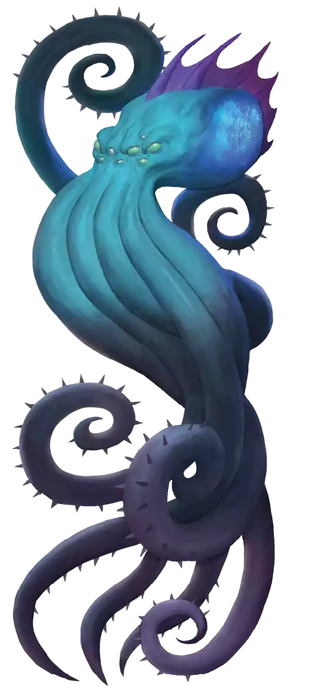
The high risk of aether poisoning keeps most from willingly drinking aether. Only mages who seek to amplify their arcane powers with no regard for the cost (see Imbibing Aether), or religious fanatics who wish to imbibe the ancient god of the sea's power would take such a risk. Drunk straight, aether tastes acidic and bright, like drinking starlight. It coats the throat smoothly like quicksilver and burns when coughed up as the stomach spasms at its otherworldly touch.
In small quantities, such as in incorrectly prepared aetherfish—or worse, in a poisoned drink—aether has a distinctive sour tang, as if the dish has been woefully over-lemoned.
Scent
Aether is completely odorless to the common observer, but those well versed in its study can detect a subtle alkaline smell. It smells bright, in a way no terrestrial substance does.
However, anyone who sails upon the Aetherial Expanse knows the intoxicating pureness of the air. Aether doesn't evaporate into the air like water, so the air in the Expanse isn't salty like terrestrial sea air. The air on the open aether is perfectly, dizzyingly clean, unpolluted by smog or manure.
Sound
Aether laps upon the shores of the Expanse's islands in gentle waves, and grows restless when tossed by storms. In this way, the sound of the Aetherial Expanse sounds identical to a traditional ocean.
Sight
Aether's shimmering surface resembles liquid starlight filled with auroras. The surface is frequently permeated by ripples of nebulous color from below. Aether takes on these colorful qualities beneath the surface, with darker colors near the surface and brighter colors deep below.
Swimming in Aether
Athletic swimmers can swim through aether just as easily as they can water. Courtesy of portals to the Elemental Lands of Water, some landmasses of the Aetherial Expanse have bodies of fresh water, and children who live near them learn to swim in water before swimming in aether.
A creature native to water can move through aether without issue. Other creatures treat aether as areas that are not easily accessible, and must swim through the aether just as they would water.
Swimming by Force of Will
Unlike sea water, aether is made of magic. In some ways, it's the stuff dreams are made of, and reactive to the thoughts of creatures with powerful wills. When a creature needs to make a roll to swim through aether, it can make a Presence Roll instead to mentally exert its will over the aether.
Aetherium Crystal
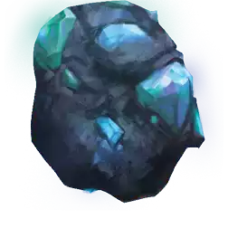
Aetherium crystal is the rarest and most valuable form of aether in the Expanse and beyond. The rarity of these crystals has made them a black market currency, used primarily to make huge transactions, such as the purchase of ships. Aetherium floats in aether, much like ice floats in water. Raw aetherium naturally occurs beneath astral islands, causing them to float in the Astral Sea. The Kingdom of Ayris has launched numerous mining expeditions to strip smaller islands of their aetherium deposits; this destructive practice has made the kingdom's merchants very rich, but also caused the islands they mine to vanish utterly beneath the waves.
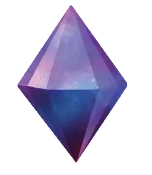
Aetherium as a Currency
Most magic item traders deal only in aetherium. When used as currency, aetherium is measured in ounces, and its value fluctuates wildly from day to day and settlement to settlement, depending on how recent the latest influx of aetherium was. Use the value below to determine the cost of aetherium each time the characters reach a new outpost, or spend a full week in the same market.
1 ounce of aetherium = 2d12 bags of gold
Pirates and smugglers trade in raw aetherium, but both the Karelagne Empire and Kingdom of Ayris meticulously turn their aetherium into bars or strips and emboss those cuts with their national crest.
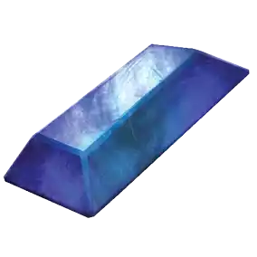
Aetherium Bars. It's common knowledge only the Karelagne and Ayrissian governments deal in bars or ingots of aetherium. A standard bar weighs 18 ounces and measures 6 inches long, 3 inches wide, and 1 inch thick. Karelagne mages can engrave their national crest on a bar of aetherium using magic with relative ease.
Aetherium Strips. Those who trade frequently in aetherium use cases filled with thin, strips of the crystal in their transactions. These aetherium strips weigh 2 ounces and measure 2 inches long, 2 inches wide, and 1/2 inch thick.
Aetherium Nibs. The tiny, easily transportable shavings called “nibs” are the most common form of aetherium currency most people see.
Mining Aetherium
Aetherium's durability increases the more aetherium it's in contact with. Mining a solid hunk of aetherium crystal from an island, however, is incredibly difficult. Mining an aetherium crystal delicately without specialized, magic-infused mining tools is almost impossible.
Blasting Aetherium. Cannons and explosive magic can be used to mine aetherium, but the result is messy and dangerous. When blasting aetherium, the GM should call for an appropriate action roll depending on the source of the explosive power and the way in which the character's are deploying it. The GM may spend Fear to complicate the situation as dictate by the Environment Statistics of the area being blasted. On failures, the results are often explosive.
Explosive Deposits. When blast-mining aetherium, its energy is released in a secondary explosion. On failures or successes rolled with Fear, it is possible that miners will get caught in these secondary blasts. The larger the deposit, the higher tier the environmental threat. For suggestions on the difficulty to mine deposits and the amount of damage they might deal when the GM spends Fear or the effort to mine the aetherium is a failure, see page 242 of the Daggerheart Core Rulebook.
Stormy Consequences. Regardless of whether the crystal is removed safely or blasted apart, the aether reacts furiously to the act, like an organism writhing in pain. An aetherstorm 1d6 miles in radius forms around the mining site and lasts for 1d12 hours. At the GM's discretion, larger mining operations cause larger, longer-lasting storms.
Aetherium as a Power Source
Aetherium is valuable because of its rarity, but also because of its use as an energy source—or as a weapon. As any aetherium miner knows, blasting aetherium causes it to react explosively. Specially trained mages in Karel and Ayris can transmute aetherium crystal into heavy aether, a highly unstable crystal ten times heavier than aetherium.
Heavy aether contains staggering amounts of raw energy, making it a perfect fuel source for the Kingdom of Ayris's specially constructed Stardrive engines, or as an explosive shell for the Karelagne Empire's devastating Wrath Cannons.
Chapter 1: A Sea of Magic
Aether and Magic
A simple rule of thumb used by sailors is that aetherium is safe unless you want to destroy it, but aether is dangerous no matter what. Liquid aether is highly reactive to magic, particularly elemental magic. Since the Astral Realm is frequently perforated by rifts to the Elemental Lands, this makes traveling across the aether an unpredictable and dangerous prospect. Only civilian thrill seekers, square-jawed naval officers, merchants in search of tremendous wealth, and pirates with nothing to lose sail these seas willingly.
Spells and Aether
Aether is made of magic, and any spell that crosses into an area of aether is amplified by its presence.
Impact on Targets
Any creature that's sopping wet with aether, immersed in aether, or standing in an aether puddle has disadvantage on reaction rolls against spells and other magical effects. Likewise, anyone using a spell or magical effect against such a target gains advantage to their action rolls against said target.
Once affected by a spell, such as being hit by a targeted spell or making a reaction roll against one, the aether turns into vapor, which rolls along the ground until it returns to the sea, leaving the creature dry or causing a puddle to vanish. Large bodies of aether, such as the sea itself, are essentially unaffected by a small amount of their aether evaporating.
Imbibing Aether
Occasionally, mages who seek power at any cost imbibe aether as a way to amplify the power of their spells. After drinking a cup or more of aether—willingly or not—a creature is afflicted by the first stage of aether poisoning, or advances it if already afflicted (see Aether Poisoning).
However, the next spell cast by the target either deals damage as if the caster's Proficiency were one point higher than it is or has its action roll made with advantage, as chosen by the caster.
Elements and Aether
Aether amplifies the effects of elemental portals and elemental spells that strike it.
Air and Aether
When air skims across the aether's surface, it accelerates uncontrollably, creating powerful trade winds that let ships cross the Aetherial Expanse at great speed. Because of wind's importance to a sailor, permanent air portals are coveted and marked on sea charts. Otherwise, sailors must rely on unpredictable temporary portals to the Elemental Land of Air, and the winds they blow across the Expanse.
Permanent air portals near islands can strip them of life, leaving deep, irreparable scars. The wind-ravaged sands of the Isle of Drakes' Eolicos Island are a testament to the devastation aether-amplified winds can bring to a lush and vibrant island.
Earth and Aether
Of the four elements, earth reacts the least with aether. Earth, soil, and sand sink beneath the aether until the tides wash them back onto shore. Stones sink as well, but stone catalyzes the formation of aetherium crystals, which float in aether. Slowly, over time, aetherium coats stones and buoys them to the surface.
Sometimes, enormous stones tumble from sky to sea through portals to the Elemental Land of Earth, and sink with a deafening crash. Decades, even centuries later, massive aetherium formations cause new islands to rise to the surface of the Expanse. Like an iceberg floating in water, the surface of these islands is nothing compared to the enormous aetherium growths that keep them afloat.
Fire and Aether
The heat of flames instantly vaporizes aether, creating a vapor that floats above the surface of the sea for a few seconds as the heat dissipates, then rejoins the sea. Extreme heat, such as an erupting portal to the Elemental Land of Fire, can kick this vapor high into the air, where it forms clouds and glows like a sunrise.
Permanent fire portals transform the sky for miles around, making it bright like a burning sunrise at all hours. The crater of Mount Spitfire on the Isle of Drakes' Calderé Island has one such portal.
Water and Aether
Water reacts strangely with the aether; though aether is generally cool to the touch, water and aether evaporate the instant they come into contact. They evaporate in equal measure, so a cup of aether and a cup of water would transform into steam and aether vapor, leaving no liquid behind.
This strange result allows an unusual water cycle to exist on some islands of the Expanse. Portals to the Elemental Land of Water cause rain to fall upon an island, which runs off into the sea and evaporates, forms clouds, and brings rain several days later. Islands lucky enough to be home to permanent water portals have something akin to natural tropical weather patterns.
Aetherstorms
Portals to the Elemental Lands open on the Astral Realm due to the uncharted movements of the Elemental Lands themselves. Ayrissian and Karelagne mages have set up complicated orreries to track the realms' movements and predict the Aetherial Expanse's weather, though this field of planar study is still in its infancy.
Aetherstorms occur when a rare planar alignment causes portals to all four Elemental Lands to overlap. Magic explodes outward in a burst of roiling chaos, and the aether amplifies this energy in a feedback loop that creates a devastating storm of thundering clouds, fist-sized hailstones, raining fire, and quaking earth. These storms pick up speed and hurtle across the sea, leaving devastation in their wake until they roll off the edge of the Expanse or fade after hitting an island large enough to sever the feedback loop the aether provides.
Chapter 1: A Sea of Magic
Aether Poisoning
Prolonged time spent in the aether causes serious harm to living creatures. Though some creatures have adapted to this magic-suffused environment and become dreamlike—or nightmarish—examples of the Aetherial Expanse's natural flora and fauna, most creatures suffer horribly after being exposed to aether.
Those afflicted by aether poisoning suffer a terrible fever, delirious compulsions, and ultimately, death. Seafarers of the Expanse have developed remedies to the first stage of aether poisoning (see Aether Antidote) but later stages can only be cured through magical means.
Magical Affliction
Despite its name, aether poisoning is not a poison in the traditional sense, but rather, a magical affliction. Those who are resistant or immune to poison are still susceptible to the effects of aether poisoning.
Poisoning Stages
The early stages of aether poisoning set in after a creature has swallowed more than a single mouthful of aether or has spent a number of minutes floating in the aether. When a creature first enters aether, they should make a Strength reaction roll. The result is how many minutes they can spend in the aether before suffering the first stage of aether poisoning. The GM can set a countdown to keep track of this timer. Note that virtually all normal combats end within minutes, and this timer generally shouldn't play a role during regular Daggerheart combat encounters. A creature that's fully immersed in the aether while not holding its breath swallows a mouthful of aether.
Stage 1: Aether Fever
The early stages of aether poisoning manifest suddenly, with fever, swimming vision, and heavy vomiting if the poisoning came from a creature swallowing too much aether. Some power-hungry mages drink aether to boost their arcane capabilities, but most often it arises when a sailor is hurled overboard in an aetherstorm or ship-to-ship battle.
Effects. A creature afflicted by aether fever immediately marks 1 point of Stress, sleeps restlessly, and experiences physical discomfort. The creature can take only one downtime move during a long rest and cannot benefit from a short rest.
Cure. Characters with a Spellcasting trait and access to a level 2 Domain card of the Spell or Grimoire type can, if they are not suffering from Aether Poisoning themselves, try and cure Aether fever by using the Work on a Project downtime move to make an action roll with that trait, difficulty 13, which magically draws the aether out of the afflicted person's body. As part of the process of doing so, they must send a level 2 Domain card which is a spell to their vault. The spellcaster can spend 3 Hope to automatically succeed on this roll prior to making it. Aether Fever can also be cured with an aether antidote. Regardless, upon being cured, a creature marks 1d4 Stress.
Development. If not cured within a number of days/long rests equal to 1d4, the poisoning progresses to its next stage, as the ravaging aether reaches the creature's brain. A creature that's exposed to aether long enough to contract aether poisoning while already suffering its effects reduces the number of days/long rests before the poisoning advances to the next stage by 1 and marks 1 Stress.
Stage 2: Aether Delirium
The fever of aether poisoning's first stage intensifies as the raw magic in the afflicted creature's body ravages its brain. Visual and auditory hallucinations are extremely common, and many sailors afflicted by aether delirium claim they can hear the sea calling to them, inviting them to return to its depths, where all their pain will disappear.
Effects. In addition to the effects of stage 1, the afflicted creature suffers from visual and auditory hallucinations at the GM's discretion, beckoning it to walk into the aether. It might see people from its past, or hear unfamiliar but alluring voices calling from the sea.
After witnessing these hallucinations, the creature must make an Instinct reaction roll, difficulty 11. A GM can spend a point of Fear to impose disadvantage to this roll, and can spend more than one point of Fear to do so at a time (imposing an extra level of disadvantage for each point of Fear spent). On a successful roll, the creature is immune to delirium hallucinations until their next long rest/one day, but a GM can spend 2 points of Fear to remove this immunity at any time. On a failed save, the creature is compelled to dive into the nearest body of aether large enough to engulf it. It violently resists any creature that tries to stop it, but if prevented from reaching the sea for a scene lasting about 1 hour, its compulsion subsides, and it is immune to delirium hallucinations until their next long rest/one day. The creature has disadvantage on this reaction roll if it can see the sea. A character may choose to spend 3 Hope to automatically succeed on this roll prior to making it. Regardless of whether they succeed or fail on this reaction roll, a creature marks 1d4 Stress after making it.
Cure. Aether delirium can only be cured by a character with the Spellcasting trait and access to a level 2 Domain card of the Spell or Grimoire type, if they are not suffering from Aether Poisoning themselves. Such a character uses a downtime move to make a Spellcasting action roll, difficulty 17, in order to draw out the aether from the afflicted creature. The spellcaster must send their level 2 Domain card to their vault as part of this process. The creature must then succeed on a Strength reaction roll, difficulty 17, or the spellcaster's effort has no effect. A character may spend 3 Hope to automatically succeed on either of the two above rolls prior to making them. Regardless, upon being cured, a creature marks 1d4 Stress.
Development. If the afflicted creature is fully immersed in aether for at least a scene lasting about 1 minute, or it isn't cured within a number of long rests/days equal to its Strength reaction roll, the poisoning progresses to its final stage and the character marks 1 Stress.
Stage 3: Aetheric Decay
In the final stage of aether poisoning, the afflicted creature's blood turns to aether, and its organs and veins crystallize into aetherium. Its skin slowly becomes translucent, revealing strange crystalline constellations and organic nebulae within its rapidly mutating innards.
Effects. The afflicted creature is Restrained and Vulnerable until cured.
Cure. Aetheric decay can only be cured by a character with the Spellcasting trait and access to a level 4 Domain card of the Spell or Grimoire type, if they are not suffering from Aether Poisoning themselves. Such a character can use a downtime move to make a Spellcasting action roll, difficulty 20, in order to draw the aether from the afflicted creature. The creature must then succeed on a Strength reaction roll, difficulty 20, or the spellcaster's effort has no effect. A character may spend 3 Hope to automatically succeed on either of the two above rolls prior to making them. Regardless, upon being cured, a creature marks 1d4 Stress and takes an equal amount of direct magical damage.
Development. During a group's long rest, a character suffering from this affliction must roll a pair of Hope and Fear Fate rolls. If the Fear roll is higher, they must roll a Strength rection roll, difficulty 20, or die as their body hardens entirely into aetherium crystal. NPCs suffering from this affliction usually die within a day.
Curing Aether Poisoning
Aether poisoning is one of the greatest dangers sailors face in the Aetherial Expanse. As this condition is not a poison in the traditional sense, typical antidotes and abilities that grant immunity to poisoning are ineffective against this magical affliction.
Powerful magic can heal the damage aether poisoning wreaks upon the body, but those who know how to work such magic are rare and their services expensive. Apothecaries, spurred by necessity, have worked tirelessly to create an herbal remedy.
Once aether poisoning has advanced past its initial stage, it can only be cured by magic. This is because the creature's organs have been transformed by aether and now produce aether instead of blood and bile. However, while the poisoning is still in its first stage, an herbal antidote can be applied.
Aether Antidote
This antidote is an herbal decoction of kammik nuts and merblood petals. These ingredients grow wild on many islands of the Aetherial Expanse. A creature that drinks it is cured of aether fever.
Cost. 50 gp (but prone to price gouging)
Chapter 1: A Sea of Magic
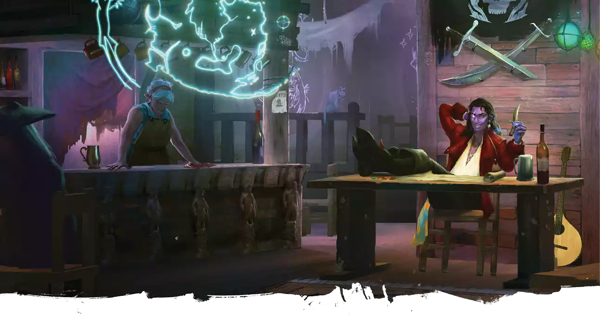
Life in the Expanse
Children play in the aetherial shallows of their home islands, where the spray tingles their skin and sparkles in the light. Some even swim in it, and their parents look on carefully, ready to shepherd them away after a few minutes, or after a wave tows them under, an herbal antidote for aether poisoning in hand.
From the shores of its many islands, the Aetherial Expanse is beautiful. But sailors of the Twilight Sea know its dangers well. Though a person can float and drift atop the aether's cloudy surface, falling from a ship's deck, being overtaken by a towering wave, or being caught in a ship's wake can be a death sentence, for beneath the waves lurk nightmarish creatures hungry for mortal flesh.
The tale of the Aetherial Expanse is one of beauty, danger, evil, and good. The choice for most is simple; a humble life in the beauteous islands is easy and safe. But for the ambitious heroes and villains of this region, humility and safety can't compare to the thrill of braving the Expanse's myriad dangers.
Perpetual Twilight
There's no sun in the Astral Realm. The radiant power that gives life to plants and animals in the Mortal Realms is absent, and the sky is filled with perpetual twilight. Yet, the night is bright. Countless stars shimmer in the blue and purple sky, streaked with nebulous clouds of red and green, and the Expanse is constantly shrouded in glowing, ambient dim light. Generally, only settlements are brightly lit thanks to candles, lamps, or other illumination.
Plants love these stars. No plant life is native to the Astral Realm, but countless plants transplanted from Mortal Realms, some intentionally, some accidentally, now thrive. The plants that rooted in the aether's desolate floating islands have adapted to their new environment. The largest plants, like great tropical palms, grow massive, deep-green leaves, fueled less by the dim starlight than by the surrounding aetherial magic. This gives the great jungles of the sea, like the Isle of Drakes' Fosfior Island, an oversaturated, hyperrealistic feel.
Some plants drink deeply from the aether and grow beyond unnatural vibrancy, taking on a truly supernatural appearance. Their leaves grow long and tendrilous, swaying with eerie sentience on windless days. Their verdant leaves become variegated with aetherial blues, whites, and pinks, and develop fenestrations resembling glyphs in the mysterious Aetherian language (see the “Languages” section below).
Sleep and Rests
Although the Expanse exists on the Astral Realm, it is a region where gravity and time behave much like in the Mortal Realm. Scholars argue over its cause, with some suggesting it's a natural manifestation of large aggregations of matter, while others believe the aether's innate magical properties are a likely cause.
Sleeping and resting in the Astral Realm are no different than in the Mortal Realm. However, creatures who rise with the sun and sleep with the dark must adjust to the perpetual, star-dappled twilight of the astral sky. A long rest still lasts 8 hours, but generally people sleep for a few hours at a time, rising once or twice to perform light activities like reading or sketching, before falling asleep again.
Most creatures born on the Aetherial Expanse are accustomed to its perpetual twilight skies. Areas of the Expanse with strong, consistent elemental activity, like the Isle of Drakes, live in perpetual daylight because the aether vapor in the sky above glows brightly as it reacts with the power of the Elemental Lands. People who live here must become comfortable with sleeping even when it's as bright as day.
Mortal Realm Flora and Fauna
Every single flesh-and-blood creature on the Aetherial Expanse is an invasive species from the Mortal Realms. The same can be said for green, leafy plants and edible crops.
In addition to plants and animals brought to this realm intentionally, rubbish from the Mortal Realms has tumbled into the Astral Realm since time immemorial. The Aetherial Expanse has been shaped by magical experiments gone awry, bad reactions between extraplanar storage containers like and, and other arcane mishaps—such events have hurled everything from people to herbalists' packs brimming with seeds into the Expanse, seeding it with life from the Mortal Realms.
Jungle islands populated by wild boars and other Mortal Realm flora and fauna are surprisingly common, making the Expanse feel like a dreamworld to realmfarers; something simultaneously familiar and alien.
Aetherbeasts
Frightening wonderous creatures exist in the Aetherial Expanse that are descended from creatures who found their way into this magical realm and somehow adapted to survive within its poisonous aether waters. In many cases, these creatures mutated into vibrantly nightmarish versions thanks to their continued exposure to aether.
Comet Eels
Swarms of eels shoot through the color-streaked depths of aetherial reefs. Though beautiful and peaceful, these strange creatures pose an unintentional danger to ships passing through their territory. They travel at such speed that they appear to be comets shooting through the aether; when comet eels burst from their lairs, they travel with such haste and abandon that they can punch holes through a ship's hull.
During gameplay, comet eels are typically encountered in groups as ship hazards (see Hazards), although combat stats for Comet Eel are also provided.
Elemental Beasts
On occasion, aetherial sailors find an elemental portal their craft can travel through, bringing them into the mysterious worlds of the Elemental Lands. There, these sailors are greeted by elemental spirits, intelligent beings with their own societies. Those rare sailors who cross the realms often form mutual bonds of respect with their fellow realmfarers. Those elemental beings have a vaguely humanlike shape—though this bipedal form is cold comfort to most who see them for the first time. Instead of being familiar, this humanlike form is just close enough to be uncanny.
Most sailors are more familiar with the elemental spirits that guard the entrances to these portals. These spirits are more bestial in form and intelligence, and jealously guard the entrance to their worlds. Sailors know well to keep a distance from these portals unless they're prepared to fight their way past these elemental beasts.
Astral Food
The food eaten by settlers on the Aetherial Expanse is heavily influenced by the cuisine of their homelands of Ayris and Karel; with pirate settlements often eating a blend of the two.
Karelagne Victuals
The Karelagne Empire spans a vast swathe of land on its Mortal Realm, and its cuisine is as varied as the climates that produce it. Heavily spiced roasted meats and fish, often served with cereal grains in the form of loaves, cornbread, and flatbread, form the backbone of their diet. Seeded fruit like apples, along with stone fruit and pomegranates are commonly seen at mealtimes, and candied nuts are a popular sweet.
Ayrissian Cuisine
The Kingdom of Ayris trades extensively with other nations on its Mortal Realm, importing cuisines and ingredients from all over the world. Despite this, its culinary habits resist outside influence. An ironclad sense of culinary elitism pervades the Ayrissian spirit, thanks to a long history of master chefs and gastronomic artists “perfecting” Ayrissian cuisine.
The food of Ayris is often prepared only at home, and almost never seen as street food. In all but the humblest of households, meals with multiple discrete courses are the norm, often with small portions made by following a complex, time-honored recipe. Sautéed vegetables, seared meats, and thin, flaky pastries are common at any Ayrissian table worth dining at.
Aetherial Fare
Fish caught from the Aetherial Expanse are strange beasts. Tiny aetherbeasts lack any serious magical power, but any fish worth catching—equivalent to a tuna—fights hard to remain in the aether. The life of an aether fisher transforms it into a hardened monster-fighting veteran after only a few years at sea.
Once an aetherfish has been caught, it must be laboriously butchered and drained of the aether permeating its flesh. Improperly butchering an aetherfish is punishable by imprisonment, and most taverns have the ingredients for an aether antidote on hand in case of accidents.
Ship's Rations
Fine cuisine, even fresh cuisine, is a foreign concept aboard sailing ships. Journeys between major ports on the Expanse take weeks, sometimes even months if conditions are foul, forcing most sailors to subsist on a diet of salted, preserved meat and ship's biscuits, a bland unleavened bread made from only water and flour.
Rum or grog (watered-down rum) is common aboard ships. Rum made from astral-grown sugar has a mild hallucinogenic effect. Regardless of whether one captains a pirate, naval, or merchant ship, the hallmark of a wise captain is a well-fed crew, for nothing instigates mutiny quicker than a crew lacking in grub or grog.
Languages
If a GM wishes to track the languages known by characters in order to simulate the vast myriad of cultures that permeate the Atherial Expanse, the GM should give each character one known language for their ancestry, community, and two core Experiences (not counting the bonus Experience granted to simulate their starting Officer Station Ranks. This number should then be modified by their Knowledge trait. This means that every character will start with between 3 and 6 known languages, depending on their Knowledge trait.
The most common languages in the Aetherial Expanse are Ayrisian, spoken by The Kingdom of Ayris, and Karelagish, spoken by The Karelagne Empire. It is strongly suggested that characters start play knowing both of these two languages. Nearly every sailor in the Atherial Expanse knows how to speak both languages, for only recent immigrants fail to learn the language of the people they are most likely to encounter in conflict or trade, and only immigrants from a Mortal Realm alien to both cultures cannot speak at least one of these languages.
In addition to those two languages, a few others are commonly spoken across the Expanse. The Drakes speak the languages of their homelands combined with a pidgin-language that has come to simply be known as the Cant. Most Ancestries also speak their own language, like Dwarvish or Elvish, but on many worlds of the Mortal Realm, these languages have fallen out of favour in the face of a rise of cultural or emperial languages such as Ayrisian or Karelagish. The Merfolk of the Constellation Isles once spoke Merelise, but this language has virtually died in favor of another that their people have developed. That language is the true language of the Aetherial Expanse (despite being spoken by few of the mortals who reside there): Aetherian. This magical language isn't taught or learned, it is felt. Aetherbeasts can understand it innately, though few possess the sapience to speak it or write it. Astral emergents and astral merfolk can usually speak it from birth. Sailors who spend their lives upon the sea begin to develop a knack for it as well, and some even say they can hear the sea itself speaking to them. None of the aforementioned languages are spoken by the mortals who sail the Expanse with anywhere near the frequency of Ayrisian or Karelagish outside of enclosed communal pockets dotting the Expanse.
Qualities of Aetherian
The Aetherian language, when spoken, is strangely unmemorable. Though beautiful in the moment of its hearing, the sound of Aetherian speech flees from memory like a dream upon waking. When written, Aetherian glyphs compress a near-infinite amount of thought into a single character. Complete thought, with all the nuance that can't be communicated in mortal languages, finds its way into single, unique glyphs.
Understanding Aetherian
If your character has sailed upon the Aetherial Expanse for 10 years or more, you can choose Aetherian as one of your starting languages, but you can only understand it, not speak it, read it, or write it. If they've sailed for 30 years or more, they can speak, read, and write Aetherian as well. Characters who choose to play Astral Amergents, Astral Merfolk, or choose the Mage Craft Dissident Experience you may ignore these limitations when building a character.
Learning Aetherian
If you gain a feature that allows you to learn a new language, you can choose to understand Aetherian. If you understand Aetherian and gain the ability to learn another new language, you can gain the ability to speak, read, and write Aetherian as well. The GM might also reward the ability to speak Aetherian based on the events of a campaign.
Peoples
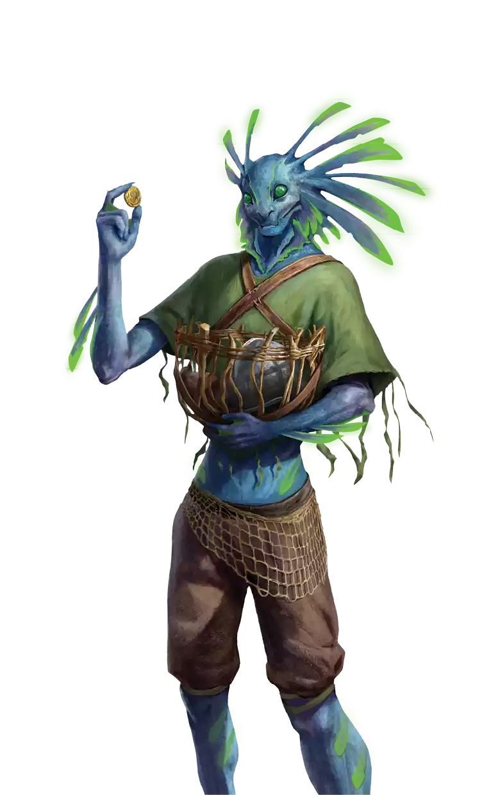
The Aetherial Expanse is populated by peoples from countless Mortal Realms, the Hallows Above, or even the Realms Beyond. Creatures of nearly any heritage may be found within the Expanse. With a GM's blessing, players could choose to play characters originating from nearly anywhere. Part 2: Player's Guide containing Chapter 5: Character Creation through Chapter 7: Experiences provides additional guidance to that found in the Daggerheart: Core Rulebook to help player's build characters specifically tied to the expanse.
Among the multitudes that live in the Expanse, a few are strongly tied to the Silvery Seas.
Astral Titans
Though none are known to have survived, legends tell of an ancient civilization of realmfaring giants who settled in the Astral Realm in ancient times. These people supposedly saw the creation of the Aetherial Expanse and mastered the power of aether. They became known as astral titans, but only scattered records of their mythic city of Astrium remain.
Astral Merfolk
These humanoids are spritely and capricious creatures immune to the toxic effects of aether. They swim along coastal shallows and make their homes in shipwrecks and undersea ruins. Astral merfolk are rumored to have a glorious, secluded civilization in the Constellation Isles. The isles are surrounded by deadly reefs no sailor save the legendary Sistren of the Constellation Isles can traverse.
Astral Merrow
Creatures from the Circles Below rarely incur upon the Astral Realm, but when they do, they ally with the astral merrow. Merrow are merfolk that have been afflicted by the corruption of the Circle Below, or by aether exposure while injured, and transformed into creatures of hatred and destruction that prey upon ships without remorse. Pirates occasionally ally with merrow, but these alliances rarely last after the pirates have defeated their quarry; then, the merrow become just another enemy.
Chapter 1: A Sea of Magic
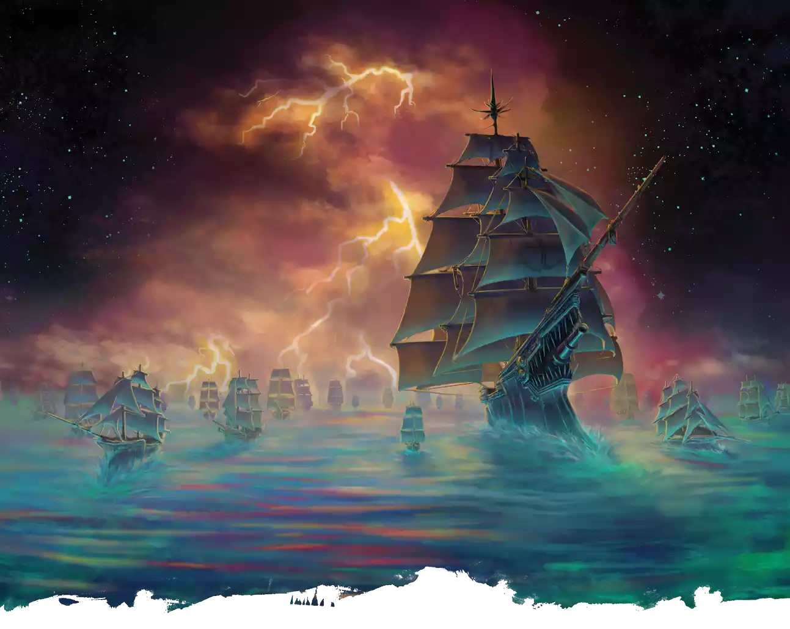
Navigating the Expanse
Merely getting from one island to another is an adventure in and of itself in the Aetherial Expanse—let alone seeking planar portals, navigating the Maelstrom, or seeking its astral boundaries.
Constellations
Four constellations shine at all times on the distant horizon. Sailors have learned to navigate by these four omnipresent, equidistant constellations. It's believed that, rather than being made of stars like the other constellations that decorate the heavens, these cardinal constellations are made of permanent portals to one of the Elemental Lands.
Standard compasses don't function in the Astral Realm. However, these constellations mark four cardinal directions, and sailors have learned to navigate by them. Some realmsfarers have even developed compasses attuned to the Elemental Lands which always point toward the constellation of air. Just as a magnet disrupts a compass, elemental disturbances can foul an astral compass.
In the northern (airward) direction is the Chariot, a diamond constellation of air toward which an astral compass always points. In the eastern (flameward) direction is the Empress, a ruby constellation of fire. In the southern (earthward) direction is the Hermit, an emerald constellation of earth. In the western (waterward) direction is the Hierophant, a sapphire constellation of water.
The ordinal directions are referred to as one direction by another (e.g. northeast in the Aetherial Expanse is “air by flame”).
The constellations are named after the four deities identified in the lost texts of the astral titans, which are now commonly worshiped in the Aetherial Expanse (see chapter 3).
Navigation Skill
Finding one's way by interpreting the ever-changing constellations is a function of the Instinct (Navigate) trait, but wayfinders sometimes use their Spellcasting trait instead (see navigation).
Trade Lanes
Though the Expanse's weather is unpredictable from day to day and island to island, sailors are aware of broad patterns that make it easy to sail in certain locations. Permanent portals to the Elemental Land of Air have been charted across the Expanse and create strong gusts that allow even ships with green crews to move quickly and predictably across the sea. These wind-blessed seas are called wind routes, and the wind routes between major settlements are known as trade lanes. A trade lane is rich with prey for pirates. Any civilian sailing these lanes knows to buy a few cannons to defend themselves from or, better yet, to scare off predators.
Traveling a trade lane from one port of call to another can be an entire episodic arc of the story, since most ships need to stop at all of the ports along that lane to replenish grub, grog, and gear.
Travel Times
The map of the Aetherial Expanse has symbols on it marking known wind portals (a circle), their path (a dotted line), and a star. The star represents one travel leg; most wind routes are only one travel leg long, but the central, densely trafficked trade lane known as the Forked Passage takes multiple legs to navigate in its entirety.
As described in the “Travel Legs” section of Travel, each travel leg takes about 1 week of time. The GM can always decide if a travel leg is especially harrowing, and aetherstorms and repairs can extend travel time. A journey of less than one travel leg still consumes the same resources as a full leg, but only takes a fraction of the time, at the GM's discretion.
Open Aether
Far from the predictable winds of the trade lanes, open aether is home to pods of deadly aetherbeasts, strange elemental phenomena, and, worst of all, the risk of losing the wind and being caught in the doldrums, unable to continue until the winds bless your ship once more.
Ships seeking far-distant isles must venture out into open aether. Without wind routes to guide them, you must navigate on your own (see navigation). A ship beginning to stall in the doldrums may use their wayfinder to seek a portal from the Elemental Land of Air to find new wind, though it may not be toward their destination (see “Portals” later in this section).
Uncharted Islands
Countless tiny rocks scatter the open aether. Most of these are too small to even bear plant life and are used only as a perch for aetherlions sunning themselves in the radiance of a nearby fire portal. But there are a few islands, far from known wind routes, that are large enough to serve as pirate hideaways, secret military bases, and religious hermitages. More than a few of these distant islands are home to shipwrecks laden with treasure and guarded by vengeful spirits or aetherflora.
The Maelstrom
The crackling clouds of the Maelstrom are eerily beautiful—from afar. This endless storm marks the heart of civilization in the Expanse, with the Monstera Cluster and Imperial Archipelago both near to the Maelstrom's edge. Navigating around the Maelstrom along the Forked Passage is easy business; both plentiful air portals and the storm's own rotation whip ships clockwise around it.
Navigating the Storm
You must have a death wish if you try and pass through the Maelstrom. Most ships that attempt it are never seen again. If however, the players wish to embark on this journey, consult Chapter 9 Naval Operations, in conjunction with the guidance provided below.
Controlling the Ship. Entering the Maelstrom requires a ship's helmsperson to make a group Finesse action roll, difficulty 12 to control the helm and keep the ship from flying apart due to the gale around them. Each of the ship's vital officers other than the navigator must make an appropriate reaction roll (usually Strength or Agility, though the captain or first mate might instead use Presence to help direct the crew), difficulty 15, to aid the helmsperson (granting a +1/-1 to the helmsman's check on a success or failure). The navigator's efforts are more important than the contributions of the rest of the crew to the helmsperson's check. They must make a Navigate reaction roll (using either Instinct or their Spellcasting trait), and grant advantage or disadvantage to the helmsperson based on their success or failure. The failure of any of the vital stations to participate for any reason, including a station being unmanned, results in an automatic failure on their part. These checks all have disadvantage if the ship is running a skeleton crew Station Descriptions).
If the helmsperson fails the group check, the ship marks 2d4 Hit Points due to damage sustained by its hull, the crew suffers (2d4) casualties, and each player character takes 6d12 magic damage. If the helmsperson succeeds with Fear on the group check, the ship and its crew take half damage, and the number of casualties are halved. If the helmsperson succeeds with Hope, the ship and crew suffer no damage or casualties.
Navigating through the Maelstrom takes 5 travel legs, and each travel leg in this environment is only 1 day long. This check must be repeated at the start of each leg. Most ships are destroyed in the Maelstrom because they suffer too much damage by the point of no return.
Portals
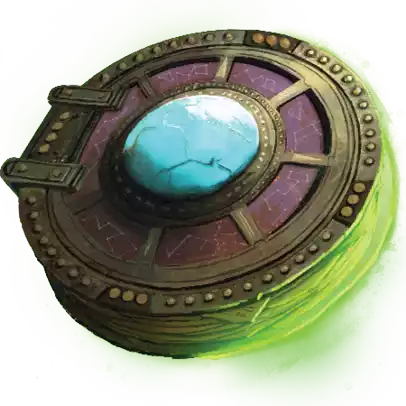
Though they seem like miniscule points of light, the countless thousands of stars that shine in the Astral Realm surrounding the Expanse are actually far-distant portals to other realms. Most wink in and out of existence sporadically—or seasonally, on a mostly-predictable cosmic calendar—while others shine eternally in the sky.
Within the Expanse itself are hundreds of portals like this. Most naturally occurring planar portals are only wide enough for a single humanoid to walk through, but great piratical tales tell of massive gates to other realms opening and swallowing ships whole. These enormous phenomena are just as much weather as they are magic—a portal that opens beneath the surface of the aether manifests as a cataclysmic whirlpool, while one that opens in the sky showers debris, rainstorms, or (rarely) hellfire down upon the sea.
These portals to other realms are sought by pirates, imperials, and merchants alike. Adventurers are enthralled by their secrets, imperial soldiers by the allure of their riches and resources, and merchants by the vastness of their untapped markets.
Sailing to Distant Realms
Portals ring out with magic, sending vibrations through the aether that a skilled wayfinder can sense. Likewise, skilled navigators can see the subtle shifts in the planar stars caused by these ripples. Reaching another realm has three steps:
Sensing a Portal. A character can make a Instinct (Navigate), difficulty 20, check from anywhere on the Expanse to identify if a planar portal in a direction of their choosing is open or has opened within the last 24 hours. Wayfinders can use their Spellcasting trait instead. On a success, they learn one of the following:
The approximate direction of the portal
The nearest landmass to that portal
If that portal is to a Mortal Realm, the Elemental Lands, the Hallows Above, the Circles Below, or some other Realm Beyond
If the check succeeds with Hope, the character learns all three pieces of information. If this check fails, the character can't make another check to sense a portal until they complete a long rest.
The GM determines how many travel legs it will take to reach that portal, if it's in open aether. A journey of 1 leg is a short story, while 5 legs is a whole campaign arc.
Pinpointing a Portal. When a character is within 1 travel leg of a portal, or on the same landmass as a portal, they can make remake the same type of check they made to identify the portal, learning the precise location of a portal on a success.
Expanding a Portal (Optional). The GM determines the size of a portal when it's found, and some portals aren't large enough for a whole ship to pass through. A portal can be measured in creature sizes or ship sizes (see Ship Types). A portal can be expanded or contracted if a character makes a successful difficulty 15 action roll with their Spellcasting trait. A portal can be expanded from something large enough to allow large creatures to enter it into something a Small ship could enter in the same way, but a spell card from their loadout must be exhausted until their next long rest as part of that process. Expanding a ship-sized portal functions the same way, and requires the spellcaster to repeat the process of expanding the portal from a creature size to a Small ship size for every increment of ship size increased.
Entering a Portal. Naturally occurring portals are unstable and changeable as the tides. They swirl and spiral and whip the aether into a frenzied froth. Unless there are unusual circumstances (like the portal being high in the air or whipping up a deadly storm of crystal shards), a creature can enter it without issue.
A ship entering a portal that isn't under any time pressure (such as being in a Pursuit, described in chapter 9) takes marks 1d4 Hit Points of hull damage per size of the portal (e.g., Small is 1d4, Medium is 2d4). This hull damage increases by 1d4 for every size the portal is smaller than the ship as the ship tries to force its way through.
If a ship moves through a portal while in a pursuit, the portal is a Hazard (see Hazards) with a difficulty, Avoidance Penalty, and Hit Penalty based on its tier (which tends to be higher the larger the portal is). Any additional environmental effects created by the portal can alter these numbers, at the GM's discretion. Below are some suggested values for setting the portal's numbers by its ship-size.
Difficulty: 11 plus 2 for each ship size above Small
Avoidance Penalty: −2 minus 1 for each ship size above Small
Hit Penalty: mark 2 Hit Points of hull damage times 2 for each ship size above Small, and 1d4 casualties for each ship size above Small.
Creating a Gate
Karelagne mages have devised ritual means of creating gates through spellcraft such that one opens permanently so long as it is ritually maintained, and can craft them to sizes large enough for Gargantuan ships to pass through safely. These gates are placid compared to naturally occurring planar portals. They are not a hazard to ships unless the gate closes when a ship is midway through, which always results in a ship split down the middle.
Edges of the Expanse
Silvery froth seethes and hisses at the borders of the Aetherial Expanse, where silver aether cascades into the vast emptiness of the Astral Realm beyond. The countless billions of droplets of aether which spill into the void become vapor, sink, then gravitate naturally toward the bottom of the Expanse. Aether attracts aether.
The fate of a ship that foolishly travels to the edge is unknown. All that is known is that escaping the current is all but impossible once a ship is within 10 miles of the edge—known simply as the Point of No Return. Captain Amil Markhoff famously returned his ship, the Legend, from within a league of the Edge of the Expanse after chasing a falling star by unleashing a Gargantuan air elemental mote into his sails and pushing against the current for a full week before breaking back into safer seas.
Traversing the Astral Realm
Beyond the Aetherial Expanse is the infinite vastness of the Astral Realm, a place where gravity does not exist and time does not pass. The Aetherial Expanse is protected in a pocket of air and gravity that defies explanation. No one living on the Expanse knows what exists beyond, but the vast mysteries of the cosmos are a perfect blank canvas for GMs and players to create all sorts of strange origins for their monsters and characters. Maybe a ship capable of soaring through the Astral Realm itself will crash-land in the Expanse someday, bringing a party of otherworldly adventurers—or Astral raiders—to disrupt the pirates of the Aetherial Expanse?
Bottom of the Expanse?
The Aetherial Expanse is a vast cloud of aether floating through the star-speckled, zero-gravity environment of the Astral Realm. The aether has a “top” and a “bottom,” and a shifting, nebulous “edge.” No one has ever seen the bottom of the Aetherial Expanse, or what exists on the surface of its “bottom.” Some guess that there's a whole other Expanse on the other side, but the question is akin to asking how many angels can dance on the head of a pin—in other words, impractical philosophy.
Rumors suggest that the ancient city of Astrium lies broken beneath the aether upon a great slab of rock. Intrepid explorers who've dove into the aetherial depths have come across a stony sea shelf. Scholars suggest this shelf is a constantly growing sheet of rock formed by a constellation of portals to the Elemental Land of Earth. Stepping off this shelf might cause a creature to tumble into the infinity of the Astral Realm beyond—or, at the GM's discretion, into the uncharted “flipside” of the Aetherial Expanse.
“Up, down, earthward, airward. These directions keep our minds tethered. If the body drifts without weight, our minds will soon follow.”
—Cerise Ling, Navigator of the INS clipse Crest
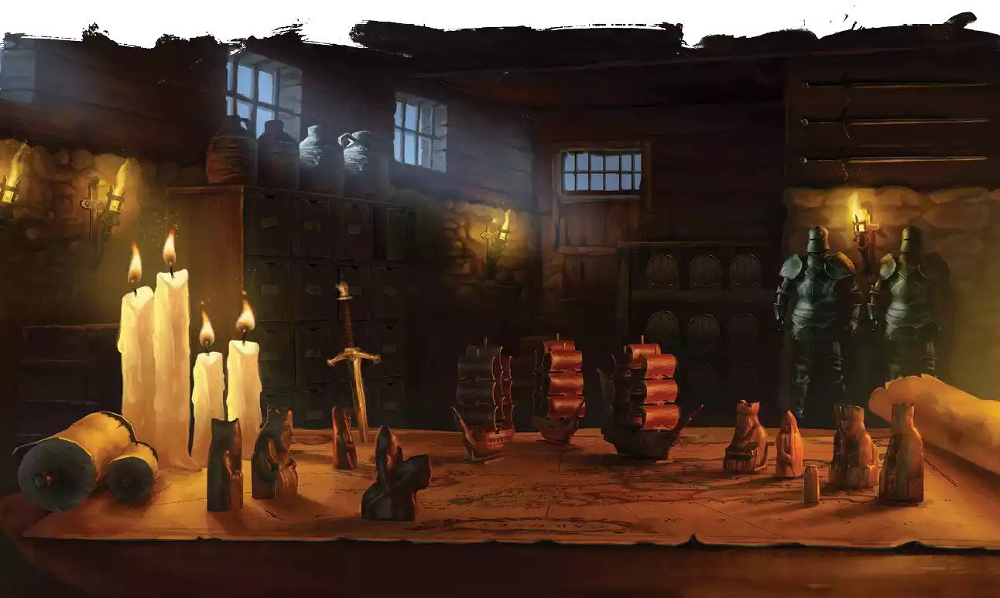
Chapter 2: Gazetteer
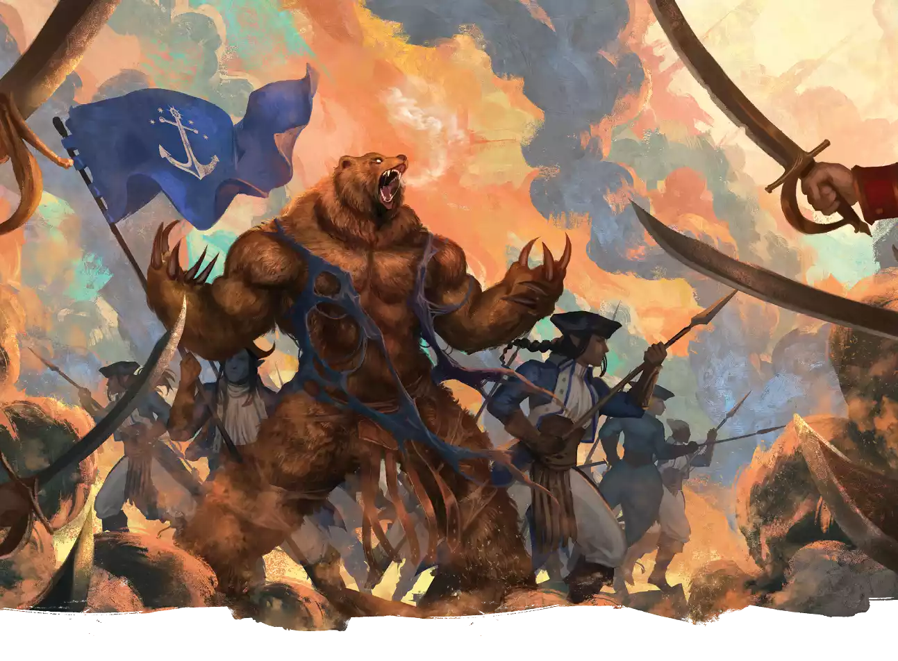
Chapter 2 Gazetteer
“You speak of sunk costs and abandonment?! Where's your financial sense? Even a lowly clerk can work the maths. The properly amortized costs of a standard galleon over but a quarter of its expected lifespan represent a minuscule fraction of the profit we will accrue from resources it will bring through the gate into Lavazza Harbor.
To maximize the value of our discovery we MUST fund further exploration of the Aetherial Expanse. This investment is vital for us to maintain our competitive advantage, lest others extract or block access to its riches before we can do the same. Now is not the time for fear. Now is the time when we must lay our claims upon the isles of the Silvery Seas. Time is of the essence!”
- Vesputia the Elder, Mercantile Vizier Addressing the Royal Council of Money Changers After Ayris and Karel agreed to a ceasefire
The Aetherial Expanse is vast, but still only a small island of aether in the boundless infinity of the Astral Realm. Its boundaries are charted, and the aether tumbles like a misty waterfall into the swirling void of the Astral Realm, slowly expanding and contracting like the lungs of a titan. However, much remains to be discovered on the islands floating in the aether.
This stretch of sea is home to countless islands, some of which are stable, while others hurtle through the sea like comets.
This chapter provides a glimpse into major islands, ports, and places of interest on the Silvery Seas, and an overview of intriguing stories that can come to life in this magical place.
Chapter 2: Gazetteer
Constellation Isles
The Constellation Isles are not friendly to outsiders, nor to anyone not at home on the aether sea. Solid ground is scarce, as most islands are made up of sand dunes that shrink and grow based on the tides. One day, an island may be a mile in diameter, only to have most of its shore washed away by the following morning.
Most residents of the Isles are as comfortable living beneath the waves as above them, and permanent, terrestial structures are hard to find within the Isles. The Isles' harbors are not built for strangers, as these are the headquarters of the Sistren and a home base for the local astral merfolk. Finding these harbors without a guide requires a degree of luck found only in fate. If one were to settle their vessel at one of these harbors with no invitation, the locals would be more likely to respond with violence and bloodshed than patience and understanding.
The area surrounding the Isles is treacherous with many hidden dangers. Any character who succeeds on a Knowledge action roll, difficulty 15 can recall rumors of sea monsters and corrupted merrow dwelling nearby. The seas are also teeming with aetherbeasts who may attack sea vessels on a whim, so it pays to come prepared for the dangers offered by the Isles.
The Constellation Isles are relatively peaceful, thanks to the Sistren and merfolk working to make it so. Most conflicts stem from tension between the predatory merrow and the other denizens of the islands, as they battle for dominion over the islands within the archipelago.
For more information on factions of the Constellation Isles, see Factions.
Archipelago Features
The Constellation Isles is an archipelago made up of a series of “living” islands with a diverse undersea ecosystem. Though it is not widely known, the islands are the calcified remains of ancient creatures called Feathered Stars. These stars were celestial guardians of a sea god, and they perished here while serving him. The entire Constellation Isles rests upon these feathered stars, and their bodies are the foundation for several permanent structures within the archipelago.
Soul Cages
The Soul Cages are a chain of barrier islands that protect the Constellation Isles. Waves splash in the narrows between natural dune barriers, beckoning vessels to navigate their labyrinthine passageways.
The coastal landforms are made up of sand from waves crashing over a ring of sunken ships that surrounds the archipelago. Hundreds of shipwrecks form a broken barrier below the surface of the astral waters between 15 to 30 miles from the coastline. They emerge at low tide to partially reveal an eerie ghost fleet.
At times, ancient masts loom out of the mists, some overgrown with vegetation. Others have become small islands, sprouting gnarled trees. Birds build nests on the outcroppings of some wrecks, while aetherbeasts live within unnatural reefs fully colonized by shrimp, seaweed, sea anemones, and other sea creatures.
The area is difficult terrain for Medium and larger ships.
Barrier Navigation
Medium or larger ships are at risk of running afoul of the rocks and reefs of the Soul Cages. Passing through these channels to reach the Constellation Isles is difficult, requiring careful navigation and three successive Instinct (Navigate) action rolls to avoid running aground or damaging the hull. The difficulty ranges from 15 in the calmest weather and can easily rise to 25 during an aether storm.
Thanks to the many ships that failed to make this journey, enterprising crews may be rewarded by searching the Soul Cages for abandoned ships and treasures lost in these barrier islands.
Kesforth
The island of Kesforth and the neighboring isle of Keslith are inhabited by the Sistren of the Constellation Isles, along with their humanoid charges. Keslith houses many humanoid civilians who support the Sistren, and much of the faction's food production is kept to this more populous island.
Kesforth itself functions more as a holdfast for the Sistren. A final defensive position where they can be safe from outsiders—at least, that is the intention. The island has seen better days, as has the Sistren fortress built near the island's center. The fort, called the Castle of Stars by locals, is constructed from coral and enormous turtle shell scutes harvested from cosmic dragon turtles that were once known to patrol the aether around the islands. Its entrance is draped in embroidered silks, and its center hall has a large domed ceiling made of glass, to better see the stars above.
The fort would be an impressive sight, but it has crumbled and deteriorated, now more ruin than castle. Its once grand exterior is now a patchwork of hasty repairs with driftwood and salvaged ships.
The Sistren of the Constellation Isles maintain outposts all over the Aetherial Expanse, but their Kesforth base is what most Sistren consider home. It is at the heart of their faction, the first ever constructed to house the Sistren.
Kesforth Infrastructure
The island of Keslith provides the Sistren with most of its food through farms, fishing, and brewing. This makes the island a frequent target of piracy from other Isles and is heavily guarded as a result. If Kesforth's harbors are heavily occupied, Sistren vessels are directed to anchor outside Keslith, both to act as a deterrence from would-be thieves and to act as defenders should the island be attacked.
On Kesforth, the area around the Castle of Stars bustles with activity. Cobbled roads with coral bricks comprise streets between artisan shops, ship builders, and training areas for Sistren members. It is more city than island, and palisade walls made from old shipwrecks have been erected in places to offer defense to the civilians residing on Kesforth.
Life on Kesforth
Kesforth is led by the local faction leader of the Sistren, a half-merfolk woman in her fifties named Eldari (LG, half-merfolk female knight). She oversees both Sistren operations, as well as keeping order on Kesforth and Keslith.
The islands are mostly known for being the home of the Sistren, but many civilians live here as well. Kesforth welcomes non-merfolk humanoids, as most of their infrastructure is on land. Families of Sistren members live and work on the islands, and civilians respect the Sistren's ability to protect them from outside dangers.
There is a general distrust of outsiders from the local populace, but only to the extent of seeing them as a potential threat. Those bearing a Sistren honorary sign or who travel with a Sistren detail are welcomed as allies of the Isles with little hesitation.
Larmeath
Larmeath and Larmeath Minor are the home islands of the astral merfolk within the Constellation Isles, though the islands themselves are inhabited only by animals. With the exception of a small harbor side only large enough to shore one Large ship at a time, the entirety of the merfolk civilization is beneath the aether. Here, the astral merfolk reside in a many-layered city, with buildings made of coral and with natural defenses augmented by artifice and enchantments. Larmeath is rumored to be home to the last astral merfolk who know of and protect the legendary artifact, the Mermaid's Tears .
Their only defense against the local merrow is their ability to outsmart predators using technology and magic. Salvagers and tinkerers, merfolk constantly innovate to stay ahead. Because they can change form, they also have scouts who walk on land.
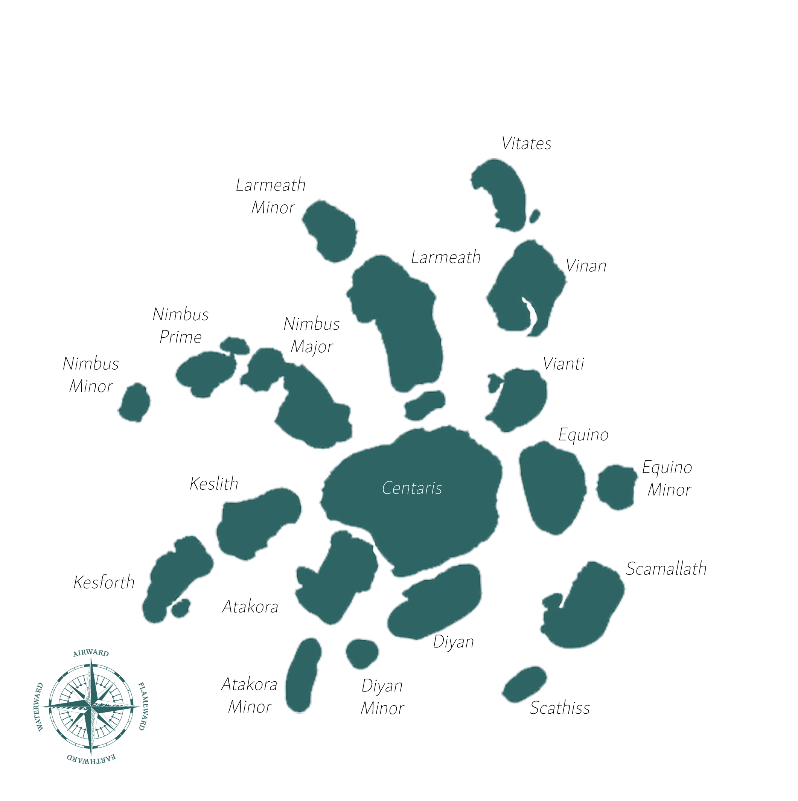
Larmeath Landing
Neither Larmeath nor Larmeath Minor are inviting to outsiders. The merfolk remain neutral in all things related to politics of the region, and prefer to be left to their own devices. Despite this, they have a harbor designed for foreign vessels. Most of the time, these ships are crewed by a partial merfolk crew, be they emissaries from a different region of the Aetherial Expanse, or traders bringing luxury items such as spices and steel to the Isles.
Sistren members have been known to use Larmeath Landing to conduct diplomatic meetings, though this happens rarely. The factions tend to keep a respectful distance from one another, and usually meet in neutral aether rather than at either faction's home.
Captured vessels convicted of violent crimes within merfolk territory are also brought to the harbor, partially to process and try the criminals on board, but also to strip the captured ships for useful wood and equipment.
Larmeath Law and Defenses
These Isles are surrounded by an underaether kelp forest that acts as a defensive barrier, and prevents Medium or larger vessels from approaching within a mile radius. The kelp forest has several defensive properties, ones that have been tended carefully throughout the generations of the merfolk living near the islands. These defenses apply to the entire kelp forest, as well the islands they surround, and include the following effects:
Sensors created by divination spells can't appear inside the area.
Creatures in the area can't be targeted by divination spells.
Teleportation and planar travel spells cast, or whose destination is inside the area, automatically fail.
Ships entering the kelp forest are grappled by the aetherial kelp and ripped apart over the course of 1d10 minutes (for a Small or Medium vessel; add 1d10 minutes for each size larger than Medium).
To further protect these islands from threats, a series of astral coral constructs were created by the mages of Larmeath to protect their home. Characters in Larmeath without merfolk escort are in danger of being attacked. Every 10 minutes, a patrolling Coral Guardian passes. The party must make a special group [[/dr trait=finesse]{Finesse (Hide) action roll}; if they fail this check, the construct spots the party and attacks. It fights until destroyed, and pursues until the characters have been out of its sight for 1 minute. The coral guardian can also be shut down by an astral merfolk speaking a specific command word. The command for “stop” are the words “white star” spoken in Aetherian.
Merfolk Matriarchy. The astral merfolk of Larmeath are neutral in all dealings with outsiders. They are ruled by a matriarchal triumvirate called a trident that is representative of senior, middle, and young ages. The roles oversee merfolk history, present day concerns, and future plans, respectively (see History of the Sistren).
Scamallath
The aether between the Soul Cages and the Isles are overrun by astral merrow. These predatory creatures lurk beneath the surface of the astral sea, eager for their next meal. While they can survive off aetherbeasts, they crave more substantial fodder like the humanoids aboard ships, which they attack without a second thought. If any shred of compassion exists in the merrow prowling this aether, it is buried deep in their core.
Travel through Scamallath is treacherous. The larger the vessel, the more likely it attracts the deadliest of merrow shivers. Smaller vessels are left for lone marrow or smaller shivers. Scouts patrol the area and, unless spotted, return to the larger group after identifying the characters to organize an ambush.
Minor Islands
There are several island groups within the Constellation Isles, but few are large enough to have been mapped. Between the landmasses, small sand dunes form islands less than 30 feet in diameter.
Atakora and Diyan
The Atakora and Diyan islands are named after the parasitic plants growing on them: atakora grass and diyan moss. On Atakora, red grass covers the entirety of the landmass. The grass is dagger-sharp and whips around erratically when approached. On Diyan, black moss completely shrouds the island. The moss is a tar-like material, acidic to the touch. Traveling to either Atakora or Diyan is forbidden, as the chance of bringing the plants to an inhabited island is too great a risk.
A creature that comes within 5 feet of a tuft of atakora grass must succeed on a Finesse reaction roll, difficulty 13 or take 1d4 physical damage as the grass swipes at them. A creature that touches the grass willingly also takes that damage.
Touching black diyan moss has the same effect as being attacked by a tiny green ooze, or potentially a green ooze if a character falls into a large enough patch, but the moss cannot move.
Centaris
Powerful geysers spew boiling aether from vents in the island's surface. Aether Elementals patrol the island and rest within these vents. The iridescent island should be admired from afar.
Equino Duo
As the most hospitable of the unclaimed islands, several humanoids have attempted to settle on Equino and Equino Minor. However, due to the proximity with Scamallath and the hostile merrow living there, no expedition to settle on the islands has been successful.
Nimbus Islands
Consisting of Nimbus Prime, Nimbus Major, and Nimbus Minor, the Nimbus Islands are aptly named as the aether around them gleams due to the glowing jellyfish congregated around them. These thousands of jellyfish are generally passive but can climb aboard vessels that stray too close.
Vitates, Vinan, and Vianti
Also called the “Victory Islands,” these isles were the first line of defense when the merfolk of Larmeath were attacked by an advancing army of merrow several hundred years ago. The islands were used to fortify the merfolk's position, but the battle's carnage left a lasting magical corruption that has left the islands inhospitable to land dwellers.
Motherpearl
Motherpearl, an opalescent material that is as hard as steel but half the weight, is a crafting material unique to the Constellation Isles. This magical material comes from the inside of giant oysters that nest on the dormant bodies of Feathered Stars. Though motherpearl is rare outside the Constellation Isles, it is fairly plentiful within, leading it to be used commonly in weapons, armor, and jewelry, instantly marking its bearer as a member of the Sistren.
Motherpearl Armor. Armor made of motherpearl is half the weight of its steel counterpart and it is easier to move in. Tier 1 motherpearl full plate armor uses the statistics of chainmail. Tier 1 motherpearl chainmail armor uses the statistics of leather. Higher tier motherpearl armor has its own statistics that reflect its lighter but more brittle nature.
Motherpearl Weaponry. Weapons made from motherpearl are easier to wield in aether. Melee attack rolls using weapons made from motherpearl do not have disadvantage while their wielder is submerged in water or aether.
Sistren Star Signs
All Sistren of the Constellation Isles carry a “sign” on their person to signify their allegiance. This sign is a necklace made from a motherpearl molded to look like a constellation of stars. Each member of the Sistren has a unique sign made from the material. This way, the necklace serves both as a symbol of membership to the Sistren and as a personal identifier should their body be found washed up on shore.
Allies of the Sistren are sometimes given a Sistren honorary sign to show that they are considered a friend of the faction. This sign is also made from motherpearl and is always in the shape of the Constellation Isles.
“The sea is life, the sea is freedom. So long as the sistren draw breath, those who live ‘pon the seas shall always be free! No law but the law of the aether, and the code of the Sistren!” —Brightstar Commander Eldari
Chapter 2: Gazetteer
The Imperial Archipelago
Smoke chokes the skies of the Imperial Archipelago. Dull silver clouds from aetherium refineries mingle with black ash from countless volcanoes secreting portals to the Land of Fire. While the Maelstrom rages in the distance, dozens of imperial ships—both navy and civilian vessels alike—gather in the archipelago's many harbors.
The pirates of the Isle of Drakes watch the Imperial Archipelago closely, for when the navy is away, the pirates shall raid—and then scatter when the fearsome warship Thunderchild appears on the horizon to test its deadly, experimental Wrath Cannon.
Isles of the Archipelago
The Imperial Archipelago is comprised of four main islands and a comet-tail of dozens of smaller landforms. Between these islands is the Sable Sea, a placid shelter from the wrath of the Maelstrom, which rages only a few leagues waterward. Ash rains down upon the Sable Sea from the countless volcanoes on the surrounding islands. It is this fertile, volatile landscape that Karelagne settlers and soldiers have chosen to make their home. They have named the archipelago's main islands:
Silver Plume Island, for the silver smoke that billows from its cities' aetherium refineries.
Flame Empress Island, for its magnificent temple to the goddess Asteth and the Oracle within it.
Nuriel Reef Isle, for the vast aetherium reefs that have wrecked countless ships trying to claim its wealth are said to be rife with booty.
Guardian Reef Isle, for the knife-edged peaks that shelter the Sable Sea from the winds and tides of the Maelstrom.
Silver Plume Isle: New Tournelle
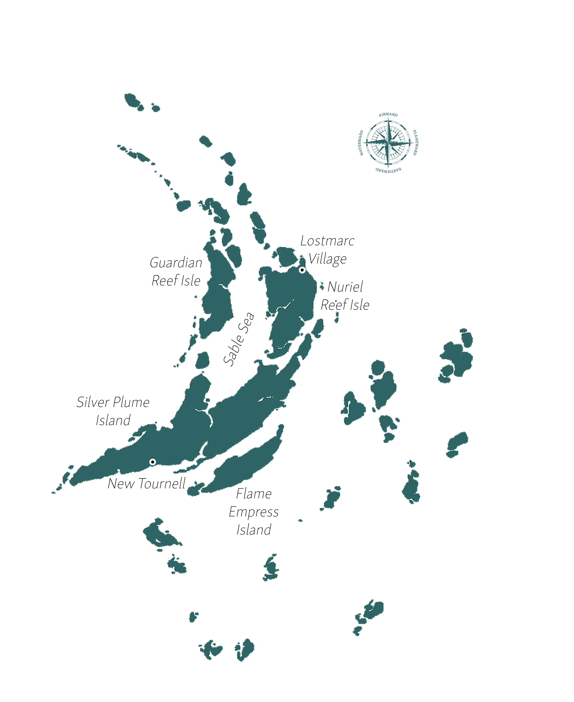
At the end of the Kaylo Trade Lane—a well-traveled stretch of good winds provided by a portal to the Elemental Land of Air near the Monstera Cluster—is the port city of New Tournelle. This ash-dusted, many-tiered city is known by sailors as the “Layer Cake” for its seemingly endless strata, climbing from the lower docks to the towering smokestacks of aetherium refineries at the top.
The Layer Cake rivals the Imperial home base of Port Majeure in both grandeur and corruption. Each week's market day is akin to a festival, as local elites parade their fashions and shoot off fireworks in honor of the goddess Asteth, whose fury and fertility have brought both wealth and devastation to the archipelago since it was first settled.
New Tournelle is lightly populated for its size; it only accounts for a quarter of the Imperial Archipelago's population. However, each weekend on market days, the city fills to bursting with farmers from the interior and traders from across the Aetherial Expanse.
Lord-Governor
The Viceroy's Mansion is the winter abode of Viceroy Caturix the Silver-Handed, commander of the Empire's presence in the Aetherial Expanse. It is also the residence of the city's lord-governor, Marcella Keine (LN, female human Royal Advisor). Not just a loyal servant of the Empire, but a true believer in its unerring righteousness, Lord-Governor Keine has played right by Imperial dogma her entire life; she is a proud mother of seven, dutifully (if not happily) married to a commodore in the navy, and tithes ten percent of her salary to the Temple of Asteth each month. And yet, she is deeply unsatisfied with her life. If she could ever be convinced of the Karelagne Empire's evil, her defiance would be legendary.
Nuriel Reef Isle: Lostmarc Village
Pirates' reasons for sailing to the Imperial Archipelago are predictable. They either want to raid settlements on Flame Empress Isle, spend their plunder in New Tournelle on Silver Plume Island, or go hunting after legends of lost treasure in Nuriel Reef.
Lostmarc Village is a tiny coastal settlement known best for encouraging treasure hunters to scour the nearby reef, and providing them with lodging, provisions, and appraisal services on their hunts. Depending on who you ask, Lostmarc is either a godsend or a trick of the Hells. Some make their fortune playing Lostmarc's games—but far, far more lose it all: wealth, family, and life.
Quest Hook: The Purser's Lament
Venrus Vikan, the purser, appraiser, and moneylender of Lostmarc Village's inhabitants and visitors, and renowned as a stingy tightpurse, is called the “Devil of Lostmarc” by his detractors. But even he doesn't deserve for an actual devil of greed to burst into his vault, steal his gold, and abscond in secret onto a ship that just left for the reef. Vikan pleads with the characters to find the devil, learn if the crew of the ship he escaped on is complicit, and bring the perpetrators to justice.
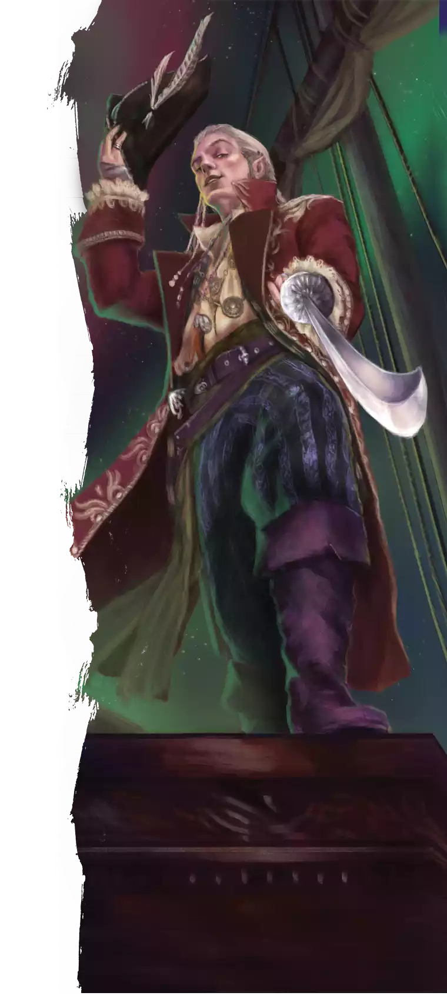
Quest Hook: The Dragon's Hoard
The characters go hunting in Nuriel Reef for the lost treasure of a ship called the Amberwyrm. After following a series of cryptic clues that have entered Lostmarc Village's local legends through the reef's hazards, they find the ship—but not unguarded. In a cove within the reef is the lair of an aetherdragon named Kelagiodaz (see wyrmling, young, adult, or ancient aetherdragon*). This dragon asserts his claim to the treasure of the reef—his home—supersedes any claim these treasure hunters have, and will defend it with force, but will not die for it.
Using a Crew's Reputation
If your game uses the crew reputation rules found in chapter 10, there's a chance residents may have heard stories of the characters' exploits and thereby influence how they react on meeting them.
Individual NPCs will react according to their unique motivations, but you can make generalizations about how an average community member will react when the meet a crew based on their reputation.
As an example, communities aligned with the Karelagne Empire will likely be distrustful of crews with a chaotic reputation but more tolerable of ones with a lawful one. Conversely, strongly independent communities, such as many in the Drakes, will be wary of those with a strong lawful reputation, and communities associated with the Kingdom of Ayris may prefer neutrally aligned crews, those lacking strong inclinations to either law or chaos.
These biases can affect social interactions, including Presence action rolls and the base price of goods. Giving advantage or disadvantage on checks is a great way to represent these effects, as is providing discounts or increasing prices for goods and services.
Chapter 2: Gazetteer
Isle of Drakes
Twenty-four years ago, at the height of the War of the Invaders, the crew of the infamous pirate galleon the Drake, captained by Teruko the Drake herself, united settlements of deserters and civilians fleeing the war between Ayris and Karel. This cluster of stationary islands in the Aetherial Expanse's earthward reaches were dubbed the Isle of Drakes in honor of their new defender. Though the War of the Invaders ended in a ceasefire between Ayris and Karel ten years ago, the Isle of Drakes has matured into a haven for all Drakes—a word that has become synonymous with “pirate” in the Aetherial Expanse.
Squabbling Crews of Drakes
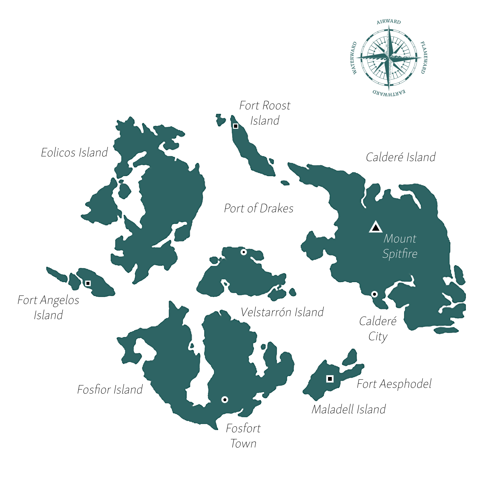
The Isle of Drakes would be a paradise for pirates, if not for the fact that none of the pirate crews descended from the Drake's original crew get along. Together, they're powerful enough to hold the pirate-hunting privateers and bounty hunters of Karel and Ayris at bay, but not organized enough to mount a serious resistance and establish a permanent pirate realm. Everyone knows the Drakes are living on borrowed time, but they seem unbothered by living in mortal peril from day to day. Drakes are rovers dedicated to enjoying a merry life, but a short one.
The Drakes' motto is “Enemies of All,” an ironic and mocking nod to the words read aloud before the hanging of pirates at Port Majeure during the height of the war.
Though many pirate crews call the Isles home, currently, the most infamous ones are:
The Blood Lilies. An all-druid crew with a burning hatred for the Karelagne Empire are based out of a tree fortress on Maladell Island.
The Thorned Knights. This pirate crew is known to ruthlessly pursue Ayrissian merchant ships.
The Children of Asteth. Crewed by sailors fervently devoted to the goddess Asteth, this crew lays claim to Fort Angelos Island.
The Shipwreckers. Housed on Fort Roost Island, this pirate crew is famous for using their speed and maneuverability to drive ships to wreck themselves on reefs before demanding surrender.
Naming the Isle of Drakes was a chaotic and ramshackle thing, with residents of each island naming their island the “Isle of Drakes” and refusing to budge, until the entire cluster bore the same moniker. Now, each island has its own individual name, and the collective is called the Isle of Drakes.
The central island, Velstarrón, is a bustling port of call for merchant ship and pirate ship alike. Surrounding Velstarrón are three large islands and three small ones, all of which are pirate strongholds protected by mighty crews, hilltop forts with powerful cannons, and a veritable fleet of ships.
The islands of the Isle of Drakes have wildly different biomes and climates due to permanent portals to the Elemental Lands. Notably, though, all the isles lie under a brighter sky than the rest of the Aetherial Expanse, due to the glowing aether vapor that hangs above them.
Velstarrón Island
Velstarrón is the Isle of Drakes' beating heart. It's the most densely populated island of the cluster, thanks to the sprawling Port of Drakes. The island is also the most frequented by merchants, pirates, smugglers, sex workers, gamblers, and adventurers.
A few of the island's interesting locations are described in the following sections.
Arcane Acquisitions
Magic Item Shop
Arcane Acquisitions is run by the youthful pair of Min and Max (NG, elf Merchants capable of divine magic). These identical twins of ambiguous gender are distinguished by unique scarring resembling a nebula all over their bodies, a result of severe aether poisoning as children.
The shop's interior is cozy, warm, and smells of strong incense. The magic items in stock float about the room in translucent, colored bubbles that only Min or Max, the bubbles' creators, can pop. The siblings buy any magic item brought their way, no questions asked. When selling, they prefer to deal in Aetherium Crystal rather than gold. Patrons are encouraged to return regularly as their inventory changes on a weekly basis.
“Don't worry, I trust our clientele.
If you say you found it washed a shore, that must be what happened.”
—Min to a prospective seller
Cross-Sea Sendings
Messaging Station
A building resembling a 10-foot-tall goose egg sits on the outskirts of Velstarrón Island. Inside is a milk-white room inhabited by three curious humanlike figures, each lacking facial features. Due to their smooth, egg-like heads, a number of pirates have tried to slay them over the years in hasty, drunken fear of the unknown, but the remarkable telekinetic powers the Egg-Heads wield have repulsed all their assailants over the years. If required, use Tier 3 demon statistics for the Egg-Heads.
The Egg-Heads, who appeared during the height of the war between Ayris and Karel, have since become a trusted, if eerie, part of the Drakes community. Their telepathic abilities make them highly sought after as messengers to any corner of the Aetherial Expanse, as long as thorough physical descriptions of the target and their social relationships—friends, family, crewmates—are provided. The Egg-Heads claim this information is required to ensure the accuracy of their communications.
Messages for Sending. The Egg-Heads will send a message of twenty-five words or fewer to anyone on the Astral Realm. They can hear perfectly well through the thin, gill-like slits on the sides of their heads. They rarely communicate with their customers, preferring to let signs do the talking, as follows:
Pay 5 handfuls of gold in advance.
Describe the intended recipient in great detail, and three people they know well. Be specific. If possible, describe their location or name the ship they're on.
Recite aloud a message of twenty-five words or less.
Successful messaging is not guaranteed. Buyer beware.
If the message is sent successfully and the recipient responds, the Egg-Heads project the response directly into the sender's mind.
Drake Shipwright Union
Pirate Shipyard
Gold flows in and out of the Isle of Drakes in all its businesses, but nowhere does gold and aetherium trade hands in greater quantities than at the Drake Shipwright Union. As the only shipyard of size in the Isle of Drakes, anyone in need of ship upgrades, repairs, or who are looking to commission a new build, comes to the Shipwright Union.
Buying Ships. New ships don't come cheap; most pirates acquire ships through theft or capture. A made-to-order ship costs the following:
Rowboat or lifeboat: 5 handfuls of gold
Sloop: 10 chests of gold
Schooner: 20 chests of gold
Brigantine: 25 chests of gold
Larger ships can't be ordered from this shipyard.
Upgrading Ships. The Shipwright Union is happy to install ship upgrades for 5 bags of gold. At the GM's discretion, the union can also craft any ship upgrade listed in chapter 9. Union-crafted upgrades are installed for free, as a courtesy.
Repairing Ships. When in port, a ship can repair and clear 1 Hit Point of marked hull damage per day by paying 5 handfuls of gold per day to the Shipwright Union. Repairs can be rushed, but it costs 1 bag and 5 handfuls of gold to repair and clear 2 Hit Points per day.
Quest Hook: Scrambled Eggs
Several individuals who had been in hiding have turned up dead after receiving a friendly telepathic message conveyed by the Egg-Heads. These messages were sent on behalf of a disguised Karelagne spy.
Drakes captains grow angry with the Egg-Heads' continued silence and refusal to reveal the sender of these messages. A prominent figure from Velstarrón hires the characters to determine the Egg-Heads' complicity in the matter and the origin of these messages.
Alternatively, the characters are hired by a Karelagne envoy to uncover information on several fugitives who are hiding in the Drakes. The characters must then deliver the information to the Karelagne spy without getting caught.
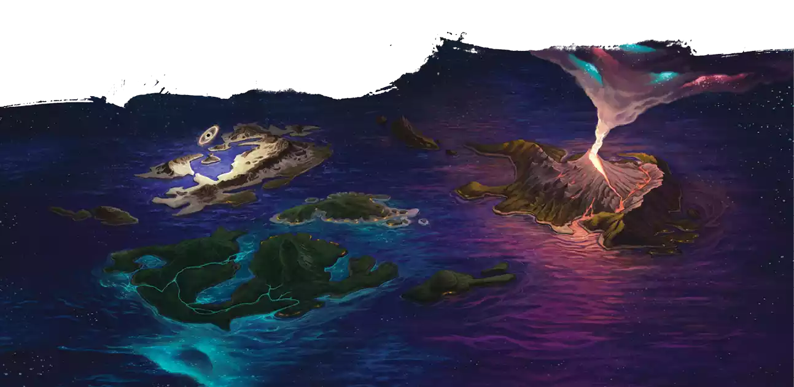
Remy's Doghouse
Magic Item Exchange
Lucky Remy is a unique figure among the Drakes. He stands nine feet tall, but with such a deep stoop he appears only seven feet tall. His skin is the color of aether and shimmers as if wet, like an aetherbeast's. His bipedal, humanoid frame is broad and muscular, with strange, squirming protrusions all over like the writhing tendrils of a sea anemone. A crown of four curling horns sprout from his temples, and from beneath his heavy brow are gleaming golden eyes. Completing Remy's chimeric appearance are a bull's snout in place of a nose, and webbed ears with a shape akin the leathery wings of a bat.
Despite his frightening looks, Remy's voice is light and airy with innocent joy. He regularly mangles piratical parlance in an eager attempt to blend in with the locals and reacts with outsized glee whenever anyone presents him with a new trinket, curio, or artifact to sell. When asked what he has in stock, he famously responds, “What do we got? Matey, what don't we got?”
Remy uses Minotaur Wrecker stats but with the added abilities, motives, and tactics of a Merchant. He is a neutral, friendly figure more intelligent and charismatic than any minotaur could be, despite the fact that he occasionally breathes clouds of poison like some form of dragon wyrmling when angered.
Buying Items. Remy is apparently filthy rich, and he keeps his money in a place no pirate has yet found. He pays cash for any treasure worth 5 bags of gold or less without blinking an eye, and offers to barter his own items for anything else.
Items for Barter. Remy has no interest in selling his items in exchange for gold. He only trades, selling magic items of the GM's choice, with their rarity dependent on the characters' tier range:
Tier 1: Rare or lower (potions or consumables only)
Tier 2: Rare or lower (potions or consumables only), uncommon or lower (other items)
Tier 3: Rare or lower (any item)
Tier 4: Very rare or lower (any item)
Seven Stars Tavern
Beloved Pirate Tavern
The Seven Stars Tavern is possibly the best-loved establishment in the Aetherial Expanse. No other tavern in the Isle of Drakes, let alone Port Majeure or Windcrown, has quite the reputation for raucous debauchery as this beloved piratical watering hole. Nor does it have the diversity of trophies lining the walls or as colorful clientele, and as tavern regular Oceane the Bard would glibly claim, no other establishment has music of such virtuosic quality as this grand old pub.
Anyone found on the Isle of Drakes can be found in this pub at some point. Merchants, sailors, laborers, and pirates come here to end their day, whereas bards, sex workers, cardsharps, and wanderers keen to hire seafaring adventurers come here to get down to business.
Ceilings. The ceilings are 15 feet high. The ceiling in the bar area is covered by an illusory map of the Aetherial Expanse.
Greensleeve's Floating Map. Created years ago by the legendary wizard pirate captain Greensleeves, this magical projection pulses and radiates an illusory living map of the Aetherial Expanse on the ceiling over the bar. The map constantly changes as it absorbs the conversations of tavern goers and incorporates their stories and information onto the map. Ship battles and pirate raids manifest on the map, displaying the stories of tavern goers, and perhaps clues to hidden Drake treasure!
Doors. Each door in the tavern belonged to a famed pirate captain's personal quarters aboard their ship. When an illustrious pirate captain retires, even if just temporarily, they donate the door to the Seven Stars Tavern. The doors rotate once per month, showcasing the elaborate and ornate doors of pirate captains feared throughout the Aetherial Expanse.
Lighting. Seven miniature stars slowly orbit the tavern, filling it with luscious warmth and bright light. The tavern earned its name from these seven orbiting stars.
Walls. The tavern's walls are made from the hulls of legendary pirate ships. Each time a famed pirate captain brings their ship to Velstarrón Island for repairs, they visit the Seven Stars Tavern to donate a piece of their ship's hull. The tavern keeper only accepts the hulls of pirates with a total reputation score of 20 or higher (see reputation).
Menu. The Seven Stars sells normal beer and grog, but its menu also includes several unique drinks:
Aether Stout (3/10 of a gold or 3 pieces of silver). A thimbleful of aether mixed in with ale. Astral emergents say it tastes great, but regular humanoids who try it wind up staggering to Spitz's Remedies not for a hangover cure, but for an aether antidote.
Moon Whiskey (7/10 of a gold or 7 pieces of silver). Finding good conditions to grow rye in the Aetherial Expanse is difficult, but whiskey made with local-grown grain has a silvery, shimmery hue, and locals say it tastes better than Mortal Realm stuff.
The Seven Stars(1 piece of gold). A local novelty that takes a shot of black rum and mixes it with magic from a snap of the barkeep's fingers. Seven tiny, fizzing hard candies appear in the shot and twinkle and crackle as they go down.
Sunspot (1 piece of gold). A pint of rum and juice with a flake of crystal from the Elemental Land of Fire at the bottom. The drink glows and grows bubbling hot because of the crystal flake. This flake is small enough to swallow, but it burns in the mouth and going down the throat. Most pirates spit it out to avoid risking the crystal's painful journey through the body.
Noxious Tonic (5 handfuls of gold). The natural follow-up to a night of aether stouts, this vile concoction is a half-pint of bitter mixed with an aether antidote. The beer didn't taste good to begin with, and the addition of medicine doesn't help matters.
Note. The prices above are present for the sake of color. Generally speaking, an average sized party can spend the evening drinking and eating for a handful of gold, not counting the noxious tonics they will need if they drink aether stouts. If they decide to drink particularly heavily, two handfuls of gold should cover the bill.
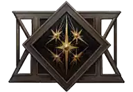
Oceane the Bard
Chaotic good, male human astralergentSpy
A beloved fixture of the Seven Stars Tavern since the end of the war between Karel and Ayris, Oceane has been singing and playing everything from the mandolin to the hurdy-gurdy as the famed tavern's most-requested performer. Little do the pirates there know, however, that Oceane is an undercover agent for the Kingdom of Ayris.
Charming and flamboyant, Oceane always draws attention to himself with music or by challenging others to games so he can disguise his true occupation. Part of his job is identifying pirates for the Ayrissian government to approach and hire as privateers with letters of marque—commission orders that grant pirates immunity from prosecution in Ayris, so long as they don't attack Ayrissian ships.
Red Jacques
Chaotic good, female red drakonaWar Wizard
The proprietor of the Seven Stars Tavern is a wide-faced, broad-shouldered red dragonborn named Red Jacques (pronounced “Red Jack”) or just “Jackie” to her friends (and only to her friends).
Red Jacques looks strong (and is strong; she's won the last ten arm wrestling tournaments), but her real strength lies in her ability to listen. She isn't much for giving advice, but she has an uncanny knack for knowing exactly who can help the most with her regulars' problems. Usually, the person to solve it is their captain, but it could just as easily be her favorite bard, Oceane, or Spitz the alchemist. The story goes that she once listened to a half-drunk pirate's problems for two hours in silence (save for the occasional prompting question), and then, at the end, said just five words: “Only you can solve it.”
Red Jacques uses War Wizard statistics, but is physically stronger than mages usually are and has a strong force of personality.
Spitz's Remedies
Apothecary
The flyers posted on local notice boards for this shop read:
For all who ail from sickness, wounds, or the truest scourge of the Expanse, Aether Fever, you won't find your cure at the bottom of a mug of ale! No matter what your local barkeep says, the answer is found at an apothecary. To wit, the best apothecary on the Isle of Drakes is Spitz's! Aye, Spitz's Remedies will save you from everything from headaches to scurvy!
Master Archifelt Spitz is an aging, grandiloquent human apothecary who was exiled from Port Majeure. He then traveled to Windcrown, where not long after, he was exiled from Windcrown and banished from all Ayrissian territories. If anyone catches wind of his banishments and asks him about them, he refuses to elaborate any further and threatens to ban the curious customer from his shop.
Regardless of the reason for Spitz's banishment, his cures for aether fever, scurvy, infection, and the usual ailments work perfectly well, and he happily—giddily, even—sells them to anyone willing to pay.
Remedies for Sale. Apothecary Spitz sells the following items:
Minor Health Potion: 5 handfuls of gold
Health Potion: 2 bags and 5 handfuls of gold
Major Health Potion: 1 chest of gold
Aether antidote: 5 handfuls of gold
A character who makes a successful Presence action roll, difficulty 13 can convince Spitz to spend 1 week acquiring the ingredients for and brewing an uncommon potion (see page 132 of the Daggerheart: Core Rulebook) for the sum of 1 bag of gold.
The same can be done for a rare potion, requiring a successful Presence action roll, difficulty 18 check. It takes 1 month for Spitz to acquire the ingredients and brew the potion, and it costs 1 chest of gold.
Note. What counts as uncommon or rare changes from time to time. When rolling their Presence action roll, if the character succeeds with Hope, roll 3d12 (if rolling for uncommon) or 4d12 (if rolling for rare). Spitz can make any potion from the table on page 132 of the Daggerheart: Core Rulebook equal to or lower than the value rolled at that time. If a character succeeds with Fear, roll 2d12 or 3d12 instead. The change in what is available and how much it costs to make the potion represents the constantly shifting availability of ingredients.
Steel for a Steal
Weapon Shop
Steel for a Steal is run by Gunnery Chief Hamelyn Ferralon (LE, male elf Pirate Captain), renowned for his love of high explosives and his wicked punishments toward thieves among his crew. He served aboard the Burning Water, but was expelled from the crew five years ago for excessive discipline.
Cannons in Stock. This shop sells the following ship weapons: Culverin, Falconet, Long Gun, Long Nine, Saker, Swivel Gun.
Weapons in Stock. This shop sells the following weapons; these items are found in the Daggerheart: Core Rulebook.
Cutlass: 2 handfuls and 5 pieces or 2-3 handfuls of gold
Improved Cutlass 2 bags of gold
Blunderbuss: 3 bags of gold
Black Powder Musket: 5 bags of gold
Black Powder Pistol: 1 bags and 5 handfuls of gold
Black Powder Revolver: 7 bags of gold
Black Powder, Flask: 5 handfuls of gold
Black Powder, Keg: 2 bags of gold
Steel for a Steal carries twenty of each of these weapons and replenishes its stock daily. Five other shops on Velstarrón Island hold similar stock.
Magitech Firearms. Hamelyn occasionally stocks aetherium-powered firearms, though he will not advertise the fact, preferring to personally contact individuals he knows who are willing to pay exorbitant prices for these magical weapons. Characters can attempt a Presence action roll, difficulty 15, to get him to reveal this inventory. He normally charges 25% above the highest end prices appropriate for a specific tier of aether pistol or aetherlock, as per page 165 of the Daggerheart: Core Rulebook. A similar check can be made to try and acquire black powder firearms not listed above.
Fosfior Island
Fosfior is covered with lush, bioluminescent vegetation. The island positively teems with life, so much so that its plants have gained sentience from consuming aether, making them exceedingly dangerous (see aether plants).
Those who dock at Fosfior Island usually do so seeking its claim to fame: the Wellspring. Stemming from a portal to the Elemental Land of Water, the Wellspring nourishes Fosfior's countless plants, as well as those who choose to live on the island, with abundant fresh water.
The docks are simple affairs compared to the larger ports in the Expanse, but they are large enough to support a handful of ships, even ones as large as galleons. Larger vessels must anchor offshore and use shoreboats to come on land.
Fosfior Island Features
Outdoor areas of Fosfior Island have the following features unless otherwise noted.
Light. The jungle is dimly lit by various bioluminescent plants that cast a multicolored glow upon the rest of the island.
Casting Spells. Various plants in the jungle feed on aether. Anyone who casts a spell is in danger of attracting one. Whenever a creature casts a spell, it must roll a d20 + the level of the spell cast. If the result is 18 or higher, a draining creeper is alerted to the caster.
Vipervines
Environmental Hazard
A common danger found on Fosfior Island are curtains of ropey vines dangling from the jungle canopy. Often as not, these plants are vipervines, a dangerous hazard to the unwary.
A vipervine has Evasion 12, 3 Hit Points, thresholds of 2/4, and is immune to poison and psychic attacks. The vines are filled with a bright purple poison but look nearly identical to mundane junglevines, requiring a successful Knowledge Roll or Instinct Roll Roll, difficulty 18, to discern their nature.
Poisonous Effects. A creature that deals damage to a vipervine while within Melee range of it must make a Strength reaction roll, difficulty 15. On a failure, they take 3d6 physical damage from its toxins and become Vulnerable for 8 hours. A creature that succeeds on the reaction roll marks a Stress and is not Vulnerable.
Harvesting the Poison. Vipervine poison quickly loses its potency once it comes into contact with air, making it difficult to collect for later use. A character making a successful Finesse action roll, difficulty 18, with a access to the right tools can obtain one vial of vipervine poison worth 2 bags of gold, which inflicts the same poisonous effects described above.
Getting Past. These vines can be safely bypassed with any method that doesn't involve damaging the vines, whether that be gently moving them aside or crawling under them.
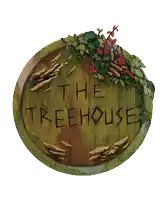
Fosfior Town
Remote Trade Town
Nearly all of Fosfior's inhabitants are clustered in Fosfior Town, built around the freshwater wellspring, a good mile inland of the Fosfior Docks. Travellers must navigate a winding trail running through the island's lush jungle to reach the town. The trails are dangerous because of the island's plant and animal life. Visitors are strongly encouraged to hire a guide at the docks to help avoid the most dangerous areas, though even with such assistance, travel can be perilous.
Despite these dangers, many who live in the Drakes are willing to make the journey to trade for the town's water.
Village Leader. The town is led by Areyca, a pragmatic elven mage. Despite being a paraplegic, she capably navigates the island thanks to a specially-fashioned enchanted wheelchair. She is well-liked by the town, and accurately directs its defenses thanks to the many archers Fosfior counts as residents.
Buildings. The settlement is built atop wooden platforms, encircling the Wellspring that rises in its center. Sharp-eyed guards (island archers often broken up into squadrons) protect the town from dangerous creatures prowling below, and any raiders foolish enough to attempt an assault.
Locations. Places of interest include:
Town Hall. A simultaneously humble yet grand two-story wooden building where Areyca works.
The Monkey's Paw Tavern. The local tavern is owned by Everett (LN, male dwarf Archer Guard) who is a retired Karelagne solder happy to now call the town his home.
The Treehouse Inn. This inn is built to resemble various Fosfior Island trees woven together. It's owned by Karabell (LN, female half-elfMerchant), a sweet woman who loves to gossip.
The Jungle Markets. A semicircle of permanent shops and smaller stalls occupies much of the town's platform. Many honest Karelagne citizens have set up shop here allowing the market to provide a remarkably diverse offering of goods. Most standard adventuring gear (of Tier 2 or lower) is sold in the market, though prices are often 25 percent higher than average because of the costs of shipping goods here. See page 165 of the Daggerheart: Core Rulebook for suggestions regarding pricing.
The Wellspring. The focal point of the town is a hill, from which water flows outward into three rivers. The site is always guarded by at least 12 island archers (or 1 Archer Squadron and 4 Archer Guards) watching through arrows slits atop the walls of adjacent buildings. Water can be purchased here with a filled waterskin costing one piece of gold, while a grub's worth of water costs one handful of gold. Of course, the town may be willing to trade for food and goods in place of coin.
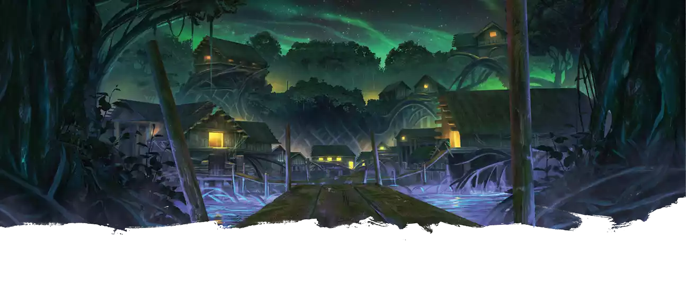
Fosfior Residents
Civilians loyal to the Karelagne Empire make up the majority of Fosfior's population. Because they are aware of the leverage the Wellspring has over visiting pirates, they largely do not fear pirates. Indeed, they rarely fear anyone or anything as they already thrive in a dangerous place. Fosfior's villagers believe themselves to be above harm.
Reputation. If asked, the civilians of Fosfior Town claim that they view all pirates the same way—outsiders over whom they have power due to their source of fresh water. However, reputation has more of an effect on the town's views of individual pirate crews than they'd care to admit.
Crews with lawful reputations enjoy a 20 percent discount on inns and supplies, while those who are chaotic have advantage on Presence action rolls used to intimidate the locals while in town.
The Rivers
Three rivers wander towards the sea from the Wellspring: the Flamebound, the Airbound, and the Earthbound Rivers. Each flows roughly in the direction of its corresponding constellation, manifesting a hint of the appropriate element as it flows toward the sea. Characters succeeding on a Insight action roll can sense these subtle elemental effects.
Flamebound River. Faint flames dance across the surface of this river from time to time. The temperature of the water is also subtly warmer than the other rivers.
Airbound River. Wind rustles the area surrounding this river. The water from this river is aerated, giving it a refreshing fizzy quality.
Earthbound River. Fine silt shrouds this river's water, and its riverbed is a renewable source of clay.
Obtaining Water
Water is cheaper to obtain from the rivers but riskier. Water elementals are known to exit the Wellspring and go downstream. Furthermore, the various plants growing near the rivers affect the water in unpredictable ways. Unless a party finds some way to magically purify river water, anyone who drinks it must make a Strength reaction roll, difficulty 13. On a failure, they must roll a 1d6 to determine what side effect they get from the River Water Side Effects table.
The drinker consumes small amounts of vipervine poison and must make a Strength reaction roll, difficulty 13. On a failure, they take 2d4 direct physical damage from the poison and become Poisoned for 1 hour. A Poisoned creature suffers disadvantage on all action rolls. On a success, they mark 1 Stress and are not Poisoned.
4
The drinker consumes traces of starrydew and is affected by a random effect from its Jungle Magic trait.
5
The drinker consumes a small dose of dreamdrinker berry juice and must make a Instinct reaction roll, difficulty 15, or be vulnerable for 1 minute as they are assailed by pleasant hallucinations.
6
The water is tainted from by rare minerals. The drinker must succeed on a Strength reaction roll, difficulty 13 or be Vulnerable for 1 hour.
River Water Side Effects
Areyca
Lawful neutral, female wood elf town leader
Areyca is a slender, paraplegic wood elf who sits with an authoritative and patient posture in an elaborately-carved enchanted wooden wheelchair. She is a levelheaded and diplomatic woman who will cordially speak with most of those seeking to trade with the town. She is confident in her abilities and that of the well-trained militia to deal with troublesome guests. She uses her affinity for rift magic to assist town deliveries from the docks.
A stat block for Areyca can be found here.
Quest Hook: Polluted Dreams
After being driven away by the villages of Fosfior Town, the pirate ship Wyvern's Fang attempted to make shore further down the coast. After landfall, the crew and ship were destroyed by aether plants, releasing barrels of distilled nightmares into the nearest river. This mysterious liquid blight corrupts all plant life it touches, leading to attacks on Fosfior Town. The characters are asked to locate and eliminate the source of this pollution.
Calderé Island
Calderé is visible from anywhere on the Isle of Drakes, thanks to the smoldering volcano that towers over it. Mount Spitfire's crater is home to a permanent portal to the Elemental Land of Fire, which constantly spews forth glowing aether vapor that hangs above the islands, giving the Isle of Drakes' sky a golden, sunset glow.
Despite Mount Spitfire's volatile presence, this island houses a city of people. Recently, island life has become difficult due to elemental creatures emerging from the volcano's core. This has also led to rising tensions among the civilians as they struggle to deal with the situation.
Island Docks
Rows of stone piers welcome ships docking at this island. Even the largest vessels can normally find a place to dock. Wagons for hire can make the journey to Calderé City easier, though walking the well-tended rock road takes only a few hours.
Volcanic Incursions
The rate at which elementals spew from the volcano can vary, from once a month to multiple times a day. These events often result in elemental creatures landing across the island. These creatures typically manifest confused and angry, lashing out at anyone they encounter. Suggested creatures are shown on the Volcanic Incursion table.
Volcanic Incursion
Volcanic Incursion
1
A burst of fire flares up from a puddle of lava, revealing itself to be a Minor Fire Elemental .
2
Smoke and ash coalesce into an Ashen Air Elemental.
3
A Molten Earth Elemental crashes into the ground, forming a small crater before it rights itself.
4
Lava splatters and forms into a group of Elemental Sparks.
5
Chunks of volcanic glass form themselves into three obsidian Gargoyles.
6
Molten rock coalesces into Hell Hounds that are elementals instead of fiends and that understand but cannot speak Ignan and Terran instead of Infernal.
Volcanic Incursion
Calderé City
Industrious Town
Calderé City is unmistakable. Buildings hewn from volcanic stone and constructed of brick and mortar jut from the ground like stalagmites. Smoke, black from burning wood, rises into the sky, quickly overshadowed by the volcano's clouds.
Typically, the city's citizens are generous to their neighbors but mistrustful of outsiders. The unpredictable nature of volcanic incursions has made residents nervous. Firearms, both black powder and aetherium-based, are more common here than in most locations across the Expanse.
Reputation. Reputation does not matter in Calderé City, simply because its civilians do not generally focus their attention outside of the city. However, crews with at least 1 evil reputation have advantage on Presence action rolls against civilians here, as gaining the respect of Calderé City's people is easier if they are ruthless and blunt. Even so, Calderé City only cares for its own, and anyone who threatens its well-being earns its ire.
City Government. Mayor Bronson (LG, male dwarf hardened islander) spends most of his time within the sturdy walls of his city hall. Kind-hearted, he wants the best for his city, but does not have the resources or means to effectively deal with its problems. Constantly occupied with various tasks, he also doesn't have the time to personally address issues brought up by individuals within the community.
Local Militia. When volcanic incursion rates are high, a local militia gathers, led by Vik (CN, male halfling, a generally good and charismatic leader. He is frustrated by the lack of action he's seen to deal with the elemental incursions, often organizing groups of 2d4 militia members to respond to inevitable elemental attacks.
Locations. Places of interest in Calderé City include:
City Hall. A large, utilitarian stone building in the center of town. This building houses the city's administration along with a courthouse that deals with major disputes.
The Powder Keg Inn. Though not the city's only inn, the Powder Keg is its most popular. This is largely due to its pleasant atmosphere, the charming personality of its owner Vik (see above), and that it doubles as the headquarters of the city's militia he oversees.
Sparrow's Flight. Sparrow's Flight is a gambling den, with no pretense as to its purpose. Countless sailors enjoy games of chance while singing songs and chugging ale at the Sparrow. The most popular game here is Flotilla. Its owner is Zheng Yang Shi (N, female human, see her stats here). She was once a notorious pirate and member of the legendary Drake's crew, but is content to live out her days playing cards in her establishment.
The Steel Barrel. Run by Kellis (NG, nonbinary half-orc hardened islander), a gunsmith whose reputation extends throughout the isles, the Steel Barrel is the city's best-regarded gun smithy. Kellis pioneered the art of fashioning fire crystals for aether pistols, and they love to talk about guns and little else. Kellis regularly stocks a few gunpowder firearms, and at least one aether pistol, along with a few replacement crystals as well. There is a 25 percent chance they have a fire replacement crystal in stock which, when loaded into a magitech firearm, causes its weapon's attacks to light a figure on fire, dealing 1d4 magic damage each time the target acts until someone uses a move to put out the flames. Such crystals can crumble to dust even when they are used by characters with a spellcasting trait.
The Meat and Greet. The local butcher shop, the Meat and Greet is where livestock from the Ashfields is slaughtered and sold. It is run by Diligence (NG, female infernis hardened islander), a gruff and hardworking woman of few words. Various cuts of meat are sold here, with the equivalent of 1 grub's worth going for a handful of gold. Though more expensive than other grub, the scarcity of fresh meat makes it a noteworthy bargaining chip when trading.
Zheng Yang Shi
Neutral, female human retired captain
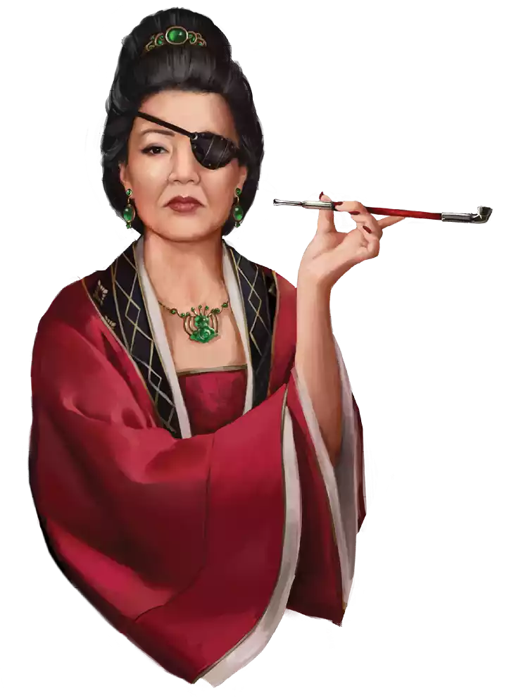
Zheng Yang Shi is the elderly owner of the Sparrow's Flight gambling den on Calderé Island. Her wide, wrinkled countenance throws off those foolish enough to see her as just a weary old woman, for her shining brown eyes still see as sharply as they did when she raided the seas with abandon.
Nevertheless, Zheng is now peacefully in retirement. Her patrons fill her gambling hall with gossip from all over the Expanse, and she listens intently— but only with an audience's ear. Her fighting days are behind her, and all she wants to do is gamble until the reaper claims her. However, as an original member of the Drake's crew, her knowledge and prowess in combat could change everything if convinced to act.
She doesn't care for cheaters, and isn't afraid to threaten them with the barrel of her walking stick rifle.
Sprawling fields of various crops and pens of livestock cover the countryside outside of Calderé City. Sporadic scorch marks and craters mar otherwise meticulously cared for fields. Stone farmhouses, barns and silos accompany these pastures.
The majority of food enjoyed in Calderé City is farmed here. Its fertile volcanic soil provides rich harvests. However, the frequent eruptions means that the crops are also in danger of being set alight, and the livestock being killed by elementals.
Mount Spitfire
A path leads from Calderé City and up to Mount Spitfire. However, getting to the volcano is not the dangerous part. The contents of the volcano consist of magma from the portal to the Elemental Land of Fire mixed with aether. This combination means that Mount Spitfire and its surroundings are not only incredibly hot but also highly toxic. Though most of the poison from the heated aether rises into the air as clouds, prolonged exposure to the air around the volcano can have detrimental effects to one's health.
To the people who live on the island, the volcano's constant eruptions are a part of everyday life. Unbeknownst to Calderé Island, the mining operation in Mount Spitfire has increased the frequency of its volcanic incursions. Extracting fire crystals inevitably causes structural damage to the Elemental Land of Fire, making it more unstable in areas. As fire crystal mining increases, so does the chance of more intelligent elementals, such as efreeti, emerging from the portal to enact justice upon the city.
General Features. Mount Spitfire has the following features:
Light. The heated aether from the volcano illuminates the air above the volcano with bright light.
High Temperatures. A character without resistance or immunity to fire and without drinkable water must succeed on a Strength reaction roll, difficulty 5, at the end of every hour they spend on the volcano or mark a Stress. This difficulty increases by 1 each hour. A character wearing armor with the Heavy or Very Heavy feature has disadvantage on these reaction rolls.
Poisonous Air. Characters without resistance or immunity to poison takes 1d4 direct physical damage at the end of every hour they spend on the volcano.
Volcanic Incursions. The volcano is no stranger to elementals such as Minor Fire Elementals and Elemental Sparks emerging.
Fire Crystal Mining. Despite the risks of the volcano, the rewards are high enough that a fire crystal mining operation is stationed here. Though fire crystals are known to naturally emerge, most of the operation's mining occurs through the elemental portal.
These expeditions mean that fire crystal mining is highly dangerous, not only because of the hazardous nature of the volcano, but also because of the perils of the Elemental Land of Fire. While fire crystal miner salaries are substantial, the work comes with great risk both from the increasingly inhospitable environment and the possibility of encountering elemental creatures during the work.
Fort Ambition
At the edge of the aether, jagged rocks rise from the ground like stalagmites, forming what appears to be a fortress of stone. Cannons dot the surrounding cliffs, each one pointed out to sea. This crumbling fortress once belonged to the Shipwreckers before they claimed Fort Roost Isle. The fortification now lies mostly empty save for waste and debris left behind by its previous occupants.
Eolicos Island
Eolicos is a desolate, windswept desert. On occasion, temporary portals to the Elemental Land of Water open, allowing small oases to form and support life before they close; then the biting winds that scour the island tear them away. A permanent portal to the Elemental Land of Air hangs ominously in the sky above this island, eternally threatening to wipe the slate clean and bury anything built atop its shifting sands and craggy stones.
Sentinel Islands
Protecting Velstarrón Island are three small islands home to fortresses commanded by one of the powerful pirate crews descended from the Drake's crew. These fortresses have staved off invasion with only the threat of raining down cannon fire on any ship that flies a hostile flag.
Over the years, the forts have traded hands many times from crew to crew. Holding a fortress grants a pirate crew immense power, but it takes a great deal of wealth, trust, and coordination to both hold a fortress and raid the seas—and pirates have been bored to tears by holding a fort without raiding from time to time. A gutsy pirate crew could seize command of a fort, giving them a base of operations and a home for friends or crewmates who aren't sailing with them.
Fort Angelos Island
Held by the Children of Asteth and its Avenging Angel crew, Fort Angelos is an imposing gothic citadel that glowers down at any would-be invader. The fortification was built by an eccentric Ayrissian trading magnate several years before the onset of the aetherial wars with Karel. Local legends suggest the original builder fashioned a hidden treasure vault beneath the fort, which may still hold a cursed treasure.
New Crews
The Avenging Angels, which controls Fort Angelos Island, has been left undefined, and is just one of many who call the Isle of Drakes their home. Appendix D includes tables that may be helpful to define the ship, its officers, and crew. To help make the crew memorable for your players, consider the following:
Motivation. What drives the crew? Are they out for glory, fortune, or revenge? Perhaps they have a greater cause they pursue, or maybe they're desperate and just looking to survive?
Experience. Is the crew filled with veteran buccaneers well used to the trails of sailing on the Silvery Seas, or are the new sailors on their first commission in the Aetherial Expanse?
Morale. Is the crew happy with their captain and officers or is mutiny brewing?
Home Port.Where does the crew stay when not at sea?
Something Unique. Can you identify something wonderous or memorable aspect about the ship, an unusual crewmember, a strange enchantment, or perhaps a dark secret or dangerous curse?
Fort Roost Island
Tall and slender, Fort Roost was built into a spire of stone that protrudes sharply from the island, giving it a clear vantage of any ship approaching the Isle of Drakes. Recently, The Shipwreckers claimed the fortress as payment for an outstanding gambling debt owed to them by Captain Dargoth Pentakos who hasn't been seen in the Drakes for over six months. Dargoth's ship, the Proclaimer, is rumored to have been sunk by an Ayrissian privateer a few days' journey fireward of Port Kaylo.
“Best seat in the Expanse, the Roost. I can chart out any ship's demise from here. Shall I send them to the Drake Spine rocks, or to the aethersharks?” —Captain Kriegler of the Shipwreckers
Maladell Island
The byproduct of an herbalist's extraplaner container rupturing many years ago, Maladell Island is a small island covered in plants from the Mortal Realm that have since adapted to living in the Astral Realm's otherworldly environment. These plants are carefully tended to by the Blood Lilies, a pirate crew composed entirely of druids (see The Blood Lilies)
The druids of Maladell Island have shaped a massive tree into a fortress using magic over the course of decades. This fortress is occupied by the ranking members of Aesphodel's crew, with unranked crew living in small wooden cabins near the docks.
Given its relatively small landmass, Maladell has no civilian population. Furthermore, were anyone to want to live on the island for a prolonged period, the Aesphodel's crew would only allow them if they joined their crew.
Maladell Docks
The island's docks comprise a simple series of wooden piers jutting out into the aether. The Blood Lilies' ship, the Aesphodel, is normally docked here. It is a large galleon of neither Karelagne nor Ayrissian make. Instead, it is constructed out of a series of closely knit together trees and roots.
Several Aesphodel crewmembers keep watch from the nearby commune and approach any ships who dock to discern their intentions. Many of the unranked crewmembers are pirates with the ability to create minor magical effects related to nature (and useless in combat), but some are full fledged druids.
Maladell Commune
Druid Settlement
Beside the docks, a large portion of the island is dedicated to a ring of simple wooden cabins, all facing inward toward a fire pit. The fire pit itself is surrounded by benches formed from still-living wood.
Many unranked crew of the Aesphodel live in the wooden buildings near the dock, while ranking members reside in their treetop haven: Fort Aesphodel. The crew of the Aesphodel aren't greedy pirates and keep few material possessions. These houses are mostly for rest and privacy when ashore. Furthermore, they share what belongings they do have freely among themselves.
Quest Hook: Vengeful Ghosts
Previously, Maladell Island was the base of the Whisperlight Cutlasses, a violent pirate crew who worshipped Qoz before their demise. The Cutlasses did not relinquish their control willingly, and some of the pirates still haunt the roots of Fort Aesphodel as specters (archers, guardians, and captains), draining the life from the tree and protecting a buried shrine to the feathered star god.
Fort Aesphodel
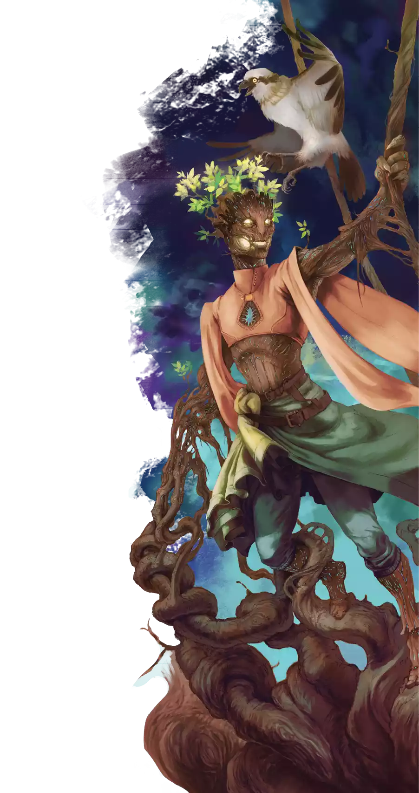
Tree-Fortress
A gigantic tree at the island's heart towers over the surrounding greenery. A passage in the roots allows access to the tree's interior.
The Blood Lilies didn't always control Maladell Island: they took it from a previous pirate crew who resided there. Once the island became theirs, they tore down the stone fortress that stood there, and replaced it with a massive tree they magically grew together.
Residents. The hollow portions of this tree can serve as a secure fort. Despite this, the Blood Lilies prefer their simple homes and do not actively use the fort except as shelter from particularly extreme elemental phenomena. The exception is Quoiya, a dryad crewmember who is no longer bound to the tree but still finds comfort within.
Desperate Measures. The fort does not have cannons or any other weaponry conventional to such a structure. However, as a last resort, the fort can be activated. Activating the fort's magic requires Quoiya, or another druid that she's trained, to command the tree by touching it as an action. This allows her to see perfectly within 1 mile of the fortress. When activated, the tree bends to face a target of Quoiya's choice, which must be a Huge or larger creature, or a Medium or larger ship. The tree then emits a thunderous beam of green energy from its crown. If the target is a creature, it must succeed on an Agility reaction roll, difficulty 18 or take 10d10 magic damage. If the target is a ship, it automatically marks 10 Hit Points of damage to its hull. Once used in this way, Fort Aesphodel can't be activated again for 1 week.
Maladell Garden
Druid Managed Farm
Beyond the commune and the fort, the island comprises various fruit trees and vegetable patches. Were Maladell Island larger, perhaps this would be an unruly forest, but the relative smallness of the space means the gardens stay quaint and manageable.
Variants of fruits and vegetables familiar to those hailing from Mortal Realms grow here in some form of orderly chaos. While the plants aren't arranged neatly, there is clearly a method of organization present to which outsiders are not privy.
Natural Silos. Fresh water is stored throughout the garden in aeobab trees, special trees with wide, hollow trunks. The Blood Lilies access these stores without hurting the trees by use of magic.
Free Fruit. Characters can take fruit in order to sate their hunger. However, if the characters take more than they need or wish to bring food with them off the island, the Aesphodel politely request that they trade something in return. Hard work in the gardens is a welcome and accepted payment.
Chapter 2: Gazetteer
Kaylo
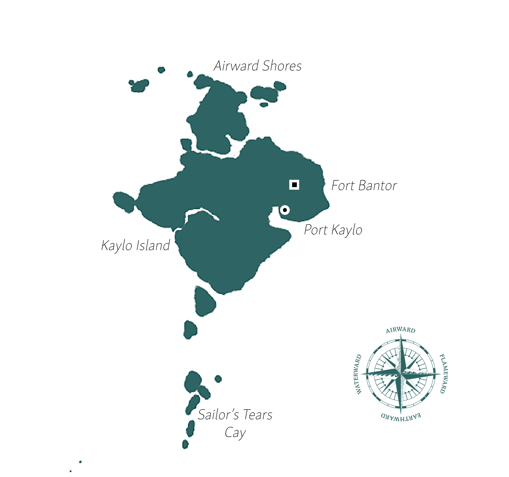
Kaylo is a small island that was uninhabited until an Ayrissian trading company founded Port Kaylo between two of the island's large hills. Now, it's a bustling hub of seafaring trade and commerce thanks to its location along two major wind routes. On one hill stands Fort Bantor, endlessly watching over Port Kaylo, the other hill holds a rich vein of aetherium crystal rumored to traverse the entire island.
The island once belonged to the Kingdom of Ayris. However, three days after Ayris and the Karelagne Empire signed the peace treaty ending their long war, a Karelagne privateer named Manta “Seabear” Gunthorpe and her crew brutally besieged Port Kaylo and executed the Ayrissian governor, seizing the island in the name of the Karelagne Empire. This debacle was blamed on slow communications relaying that the two nations were at peace. Adding insult to injury, the Karelagne Empire awarded Gunthorpe governorship of the island and sent a mere 5 bags of gold along with the butchered Ayrissian governor's body to the Kingdom of Ayris as restitution.
The scars of the siege linger on the island to this day, as it is slowly restored to its former glory as a vibrant seafaring hub of commerce. Although the Karelagne Empire rules over Kaylo, a sizable number of Ayrissian dissidents still reside here.
Government
Kaylo is under the Karelagne Empire's control and the corrupt rule of Governor Manta “Seabear” Gunthorpe (see “Fort Bantor” later in this section). She is a boisterous, broad, and towering astral emergent human cursed with lycanthropy since birth—since before birth, if you hear Manta say it; the humanoid corpse that Manta's astral spirit joined with was already afflicted with werebear lycanthropy. Governor Gunthorpe is known for her crude jokes and ruthless leadership style, brutalizing those who disobey with her massive werebear claws.
Port Kaylo Locations
Several locations may draw a sailor's interest when visiting Port Kaylo.
Ailing Grog's Tavern
Welcoming Tavern
Ailing Grog (CG, male astral emergenthuman commoner) is an elderly and spirited retired pirate with two hooks of pure aetherium crystal replacing missing hands. He owns this establishment and sells all food, drink, and lodging services described in the Daggerheart: Core Rulebook. Twenty years ago, while out on sail, the ship's surgeon informed Grog that he had only a few months to live after using his aetherium crystal hooks for years to mix his grog. Thus, “Ailing Grog,” was born, and he took it as a sign to open up an establishment where he'd work until his dying day. Grog yet lives, and is a valuable source of information for anyone wanting to learn more about Port Kaylo.
Madam Isabeau's
Gambling Den
Madame Isabeau's is a remarkably clean faux dive bar. The establishment is comprised of a large, circular room with a circular bar in the center serving drinks of all sorts. There are six tables of games: flotilla, dirtnaps and bonesacks, liar's dice (see appendix A), blackjack, and poker. Additional tables and cushioned chairs line the circular wall, and a balcony runs the entire perimeter of the room, overlooking everything.
The bar stays busy serving a wide range of clientele. Its owner Doddie (N, femalehuman commoner) enjoys small talk and has an ear to the latest gossip running through the port. If suitably tipped, she's willing to point out who in the bar is from the Karelagne Empire, the Kingdom of Ayris, or is a pirate or privateer.
Shipwright Coven Company
Ship Repair
A coven of three sea hags—Lela, Olga, and Yula—operate this legitimate shipwright business. They take gold, favors, or souls for payment. The coven sells all types of ship upgrades and ship weapons found in chapter 9. They discreetly accept humanoid sacrifices at a value of 1 chest of gold per soul. Lately, their shipyard has been humming with new hands, for the hags have been paid extremely well by the pirate-killing governor for recent repairs to the Karelagne fleet.
Yelp's Sharp Things
Mercantile Shop
Yelp (CG, malegoblin) sells all types of weapons, armor, and adventuring equipment found in the Daggerheart: Core Rules. Most of his gear is of Tier 2 or lower, but the rare Tier 3 item sometimes finds its way into his inventory. A dwarf killed Yelp's family when he was a child, and he's slow to trust anyone who reminds him of the killer—any person of short stature and wide frame with a bushy black beard. He charges them double and won't buy from them at all.
Madam Sebria's Hostelry
Fine Dining and Entertainment
An upscale establishment owned and operated by Madam Sebria (NG, female astral emergentelfmage). Madam Sebria is the widowed spouse of the Ayrissian garrison commander killed during Manta Gunthorpe's attack on the island. Characters can rent a suite for a handful of gold per night, which includes a small feast, live entertainment, and unlimited alcohol.
Commander Fearghal Kane of Fort Bantor (see “Fort Bantor” later in this section) is a frequent customer. He normally visits each night to eat fine foods and enjoy the company of others. Madam Sebria bides her time, waiting to see him murdered so her dead husband might be avenged. She discreetly approaches anyone with a swashbuckling look to them at the dinner show, and offers a black diamond rose worth 5 bags of gold to anyone who brings her Commander Fearghal's head.
Market Square
Vibrant Marketplace
A bustling market with foods, wares, tools, mounts, and other goods for sale. The market is known to offer specialty foodstuffs from several Mortal Realms.
Trogis Sharpshiv (NE, male dwarfbucanneer), a recent arrival to Kaylo, was unceremoniously kicked off his ship for poor behavior several months ago. In the months since, has gathered a gang of ruffians (bandits) who have begun demanding protection money from local merchants. He is careful to not press for too much coin to avoid notice from the local constabulary.
Fort Bantor
Damaged Fortification
Governor Manta “Seabear” Gunthorpe (NE, female astral emergenthuman werebear), Commander Fearghal Kane (LE, male elfCommander), and two contingents of soldiers occupy Fort Bantor, which overlooks and protects Port Kaylo. Fearghal Kane despises his governor's barbarism, but is a Karelagne patriot to the end.
The textured stone walls of Fort Bantor stand 30 feet tall and 15 feet thick. Each wall, except the fractured earthward walls, is in good shape. The fort's earthward wall was heavily damaged from the Karelagne Empire's attack on the island. Once in power on Kaylo, Governor Gunthorpe stole government funds allocated to repair the wall and instead used the money to fund her own personal lavish galas.
Times are Changing
The correspondence with Karel is growing more frequent. It reminds me of my days as an ensign, readying for war throughout the Aetherial Expanse with the bloody Ayrissians.
I sure hope the time for war beckons once more; my saber yearns for the blood of the Empire's enemies. I must play nice with the governor then for now, hoping to secure a promotion. Who knows—maybe one day I'll ascend to the rank of admiral, maybe even become viceroy myself of the cursed isles.
On second thought, governor has a nice ring to it too, ha! It's not like that beast Gunthorpe is going to be around forever.
It's best I return to my quarters at Fort Bantor, not nearly as nice as this place. Can't beat silken sheets, but alas, I must be there in the morning to receive my new fire crystal hand pistol—let's not forget about the morning hanging of pirates, too. Last time I wasn't there, the poor lad broke his neck and swung for hours—the governor thought it hilarious, but I was glad when he had his last breath. Even pirates don't deserve that; it was bloody torturous.
- Fearghal Kane, Commander of Fort Bantor
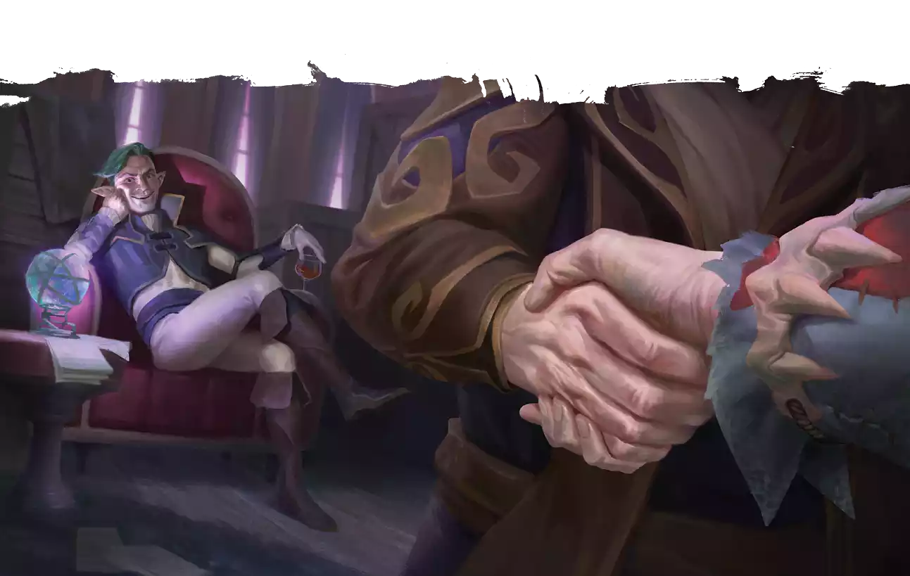
Chapter 2: Gazetteer
The Monstera Cluster
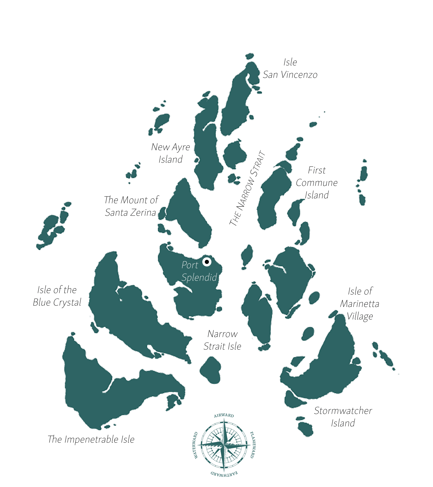
Lamplight flickers through the vast boughs of tropical undergrowth grown to the height of ships' masts as a group of colonists delves deep into the jungle. The plants have drunk deep of the aether and now glow with celestial variegations. The colonists hold their blades' hilts in a white-knuckled grip—and they're right to be fearful. Though the plants growing here were once from their world, they now have a mind all their own, and brook no intruders to their domain.
This is the Monstera Cluster—named for the monstrous plants that grow upon it. Colonists from the Kingdom of Ayris have made dozens of settlements on upon its shores. Only lightly defended by the Ayrissian fleet, these islands are mostly populated by farmers, brewers, and other civilians. The colonial populace yearns to mine the islands for aetherium, convinced of the mineral's presence from towering aetherflora that grows wild and deadly across them.
“Whatever you give to the Aether is returned ten-fold. Whatever is taken from the Aether is recovered with interest.” —Ayrissian axiom
Isles of the Cluster
The Monstera Cluster is made of ten major islands and a cloud of countless islets and other tiny rocks jutting from the waves. Even the meanest skerry is rife with aetherial plants and buoyed by aetherium crystal at its bottom. So many of the smaller islands have already been mined of their aetherium and cast beneath the waves that people have demanded mining on the small islands halt. Local superstition has taken hold, and the people fear that the sinking islets have angered the aetherbeasts and flora, causing the recent surge in attacks upon their coastal settlements.
Port Splendid
The largest port in the cluster is Port Splendid, located on the airward face of Grand Commune Island. Ships pass along a corridor of airways leading from the Isle of Drakes to the Monstera Cluster, Port Kaylo, and beyond to Windcrown. However, any ship passing earthward from the Monstera Cluster is assumed to be crewed by criminals or foolhardy treasure hunters.
Port Splendid is a major hub of trade in the earthward reaches of the Aetherial Expanse. A common saying goes that the city's population “breathes,” growing vast on monthly market weeks, and shrinking away in the space between.
Population. Port Splendid accounts for 70 percent of the Monstera Cluster's population, with its latest census recording about ten thousand residents, the majority of whom were humans of Ayrissian origin.
Governor. The city is ruled by an Ayrissian governor named Alfonz Vetterí (NE, male human commander), a man known equally for his enormous appetite, enormous muscles, and enormous mustache—to say nothing of the vastness of his hunger for aetherium. He hates the pirates of the Isle of Drakes with every fiber of his being, and wants power to bring them to heel. He pursues this goal single-mindedly, ignoring the other problems of his people, like the aetherbeasts that emerge from the jungles and seas to drive them off the islands.
Monstera Jungles
When a two extradimensional spaces meet, they implode, and for a split second, tear a hole in the fabric of space, sucking everything into the Astral Realm. Somewhere in the chronicles of a halfling village in the wilds of the world of Halint, it's written that a botanist carrying a bag of holding filled with tropical plants to market tumbled through a portable hole placed by trickster fey. The halfling landed with only minor bruises, but her bottomless bag was dimensionally snared in the portable hole, and the two annihilated each other.
The contents of the bag—countless green, leafy plants and their seeds—were strewn into the Aetherial Expanse and took root on a desolate cluster of rocky islands. A thousand years later, colonial ships from the Kingdom of Ayris found these islands overgrown with foliage. And while the plants were superficially similar to foliage of their own realm, they had grown to towering heights, and had become streaked with celestial variegations as they adapted to feeding on aether.
Like all islands within the Aetherial Expanse, they are buoyed upon the aether by the aetherium deposits that crystallized on their undersides. Each island's flora feed through their roots upon its crystalline core. These tethers make each island a single living organism—one with a vague will guided by the spirits that make up the aether to drive any who would burn its jungles from its shores.
Wildlife
In addition to the aether plants covering the island, a wide range of animals live throughout the Monstera Cluster. Once-domesticated feral animals roam freely; many adapting to the environment by transforming into aetherbeast versions of the original creature (see Aetherbeasts).
Large predators have made their way here as well. It's unclear how they arrived on these islands but various dinosaurs, such as triceratops and tyrannosaurus rex, roam the islands making arduous journeys through the jungles dangerous.
Quest Hook: Voices of the Damned
For the past few weeks, people in the local Ayrissian colony have been hearing voices in the jungle. Voices of loved ones; people from their old ships. Most are well aware that these voices can't be real, but some are too moved by emotions and investigate the edge of the jungle. Beckoning to them are people—illusions of loved ones urging them into the boughs.
These dread sights and sounds are the illusions of a jungle siren, and week by week, this colony will be completely depopulated unless the adventurers can slay this voracious aether plant.
Quest Hook: The Emergent's Curiosity
An astral emergent calling herself Belona recently appeared in town. Locals know her—she was named Maria before she went into the jungle for mysterious reasons and—presumably—was killed and reborn as an astral emergent. Belona's memories of her reawakening are hazy, and wants help exploring the jungle to find what killed Maria, and what she can learn of her past self, and her reasons for entering the jungle.
Belona knows the vague route back to where she awoke—a pool of aether near a large crystal. The group of 8 strangling creepers and 4 draining creepers that killed her are still lurking by this pool. At the pool's bottom is an aethergem the size of her torso! An incredible prize!
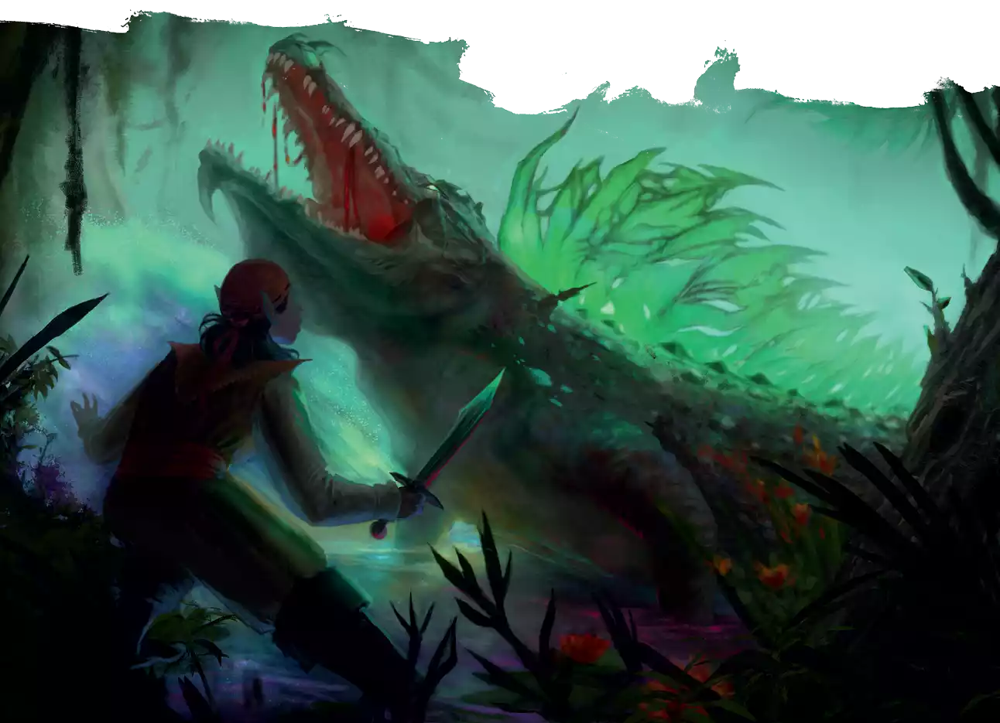
Chapter 2: Gazetteer
Port Majeure
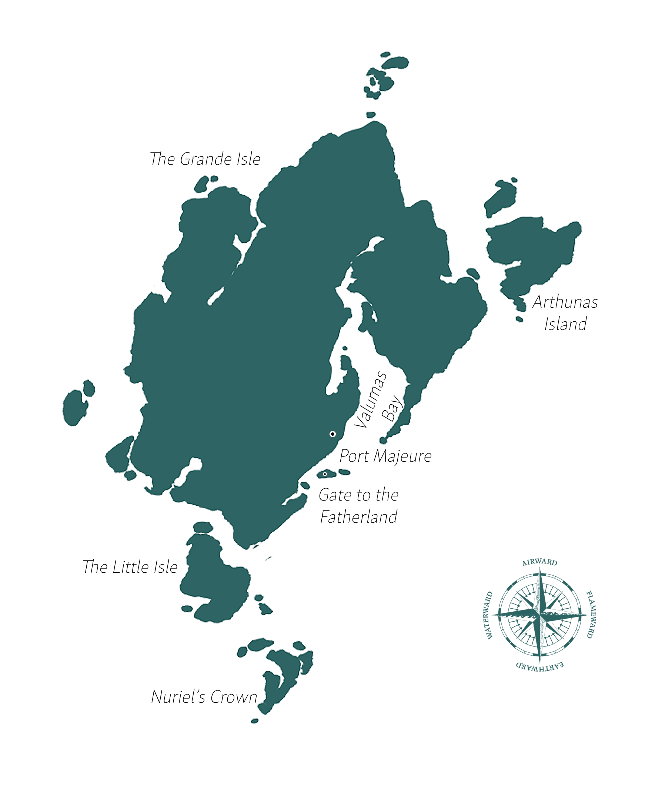
The famed Port of the Gods is the Karelagne Empire's main foothold in the Aetherial Expanse. Ruled by Viceroy Caturix the Silver-Handed (see Factions), Port Majeure is a major trade port and a military hub for the Karelagne Navy and a handful of privateer vessels. Ayrissian merchant ships frequently dock here too, despite lingering tensions from the recently-concluded war between Ayris and Karel. Pirates occasionally sail here while masquerading as merchant vessels, but this is typically an act of desperation due to the dangers involved in striding into such a heavily guarded port.
Port Majeure stands at the airward end of the Forked Passage's Waterward Fork (the northwest corner of the map). This lane is a popular shipping channel whose consistent trade winds allow smugglers and honest traders alike to easily travel from the Isle of Drakes, through the Monstera Cluster, and to Port Majeure. These winds vex Karelagne Navy officers who long to put an end to astral piracy once and for all, for their ships can't easily reach the Isle of Drakes without passing directly through Ayrissian territory to reach more favorable wind lanes.
Port Majeure Locations
Port Majeure is a sizeable island dominated by governmental and military installations. Few Karelagne civilians live here; generally, only the families of high-ranking naval officers and fabulously wealthy explorers call this austere, gilded rock home.
Locations that may attract a sailor's interest when visiting Port Majeure are described below.
Arleno & Daughters Shipyard
Renowned Shipyard
The famous shipwright Haras Arleno is known throughout Karel as the man who designed the INS Imperatrix, the ship that secured the Empire's dominion over its northern reaches in its last great war. Arleno has retired, but his three daughters, Cordelia, Margarit, and Leuca, have taken up his business and brought it to the Empire's foothold in the Aetherial Expanse.
Working from half-completed designs for a superior model of the Imperatrix, the Arleno sisters were the brains behind the INS Thunderchild, a warship to put all other warships to shame. Arleno's tried-and-true designs continue to make this shipyard the backbone of the Karelagne naval war machine, and the Arleno sisters continue tinkering with their Thunderchild design in an attempt to push its weapons, armor, and speed to bold new heights.
Palace of the Viceroyalty
Government Building
Atop the island's acropolis stands Viceroy Caturix's seat of power; a lavish structure in a classic imperial style, with a single domed rotunda flanked on four corners by tall, watchful spires. Its interior is pure opulence, decorated with artful murals, and the sounds of a sourceless, magically recorded string quartet drift through its echoing halls.
Fortress of the Admiralty
Government Building
Subordinate only to the viceroy himself, the Karelagne Lord High Admiral commands the military defense of Port Majeure. The Lord High Admiral, Dagodurne Gad (LE, male dwarfveteran) is a middling sailor but an excellent tactician and an even better bureaucrat. He conducts the Board of Admiralty with virtuosic ease. Gad is the perfect lapdog for Viceroy Caturix, for while the viceroy longs for total control of the Aetherial Expanse, Gad seeks only a life of opulence and sycophantic praise. The conquest of the Expanse is a small price to pay for such a life.
Gate of the Fatherland
Portal to the Mortal Realm
Port Majeure's most valuable and best-protected asset is the Gate of the Fatherland, a lighthouse that glows with magical fire. It has the power to open a portal to the Imperial capital of Karel on the Mortal Realm. If this structure were destroyed, it would cut Port Majeure off from the rest of the Empire for years until a new portal was constructed.
Captain Alaric Concord
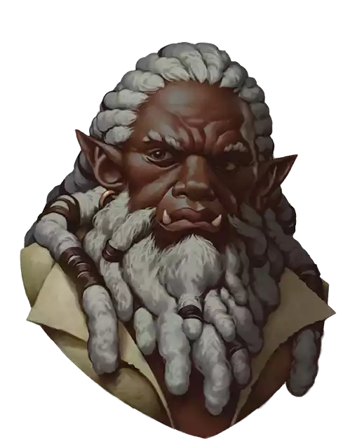
Lawful neutral, male half-orcassassin
The famed ex-pirate, currently pirate hunter Alaric Concord has sailed the Aetherial Expanse for the better part of fifty years, and calls Port Majeure home. His lionlike mane of white hair and meticulously cared for beard marks him as a wise elder, but his bulging muscles and imposing physique remind all who look upon him that Concord's fighting days are far from over.
Concord's presence is a comfort to most in Port Majeure, but his fame is both a consolation and a cause for consternation to Viceroy Caturix. Concord struts around the port as if he owns the place, and for all intents and purposes, he does. Though the Karelagne crown recognizes the viceroy's authority, the people of Port Majeure see Concord as a living legend. They'd gladly follow him over the viceroy if the two ever came into conflict—and the viceroy knows it. The viceroy is willing to pay dearly to keep Concord happy.
Concord is technically a free agent, a privateer not in the service of the Empire, but he possesses a letter of marque from the viceroy assuring him no Karelagne vessel will impede his piratical activity, so long as Concord doesn't attack Karelagne citizens—and as long as he pays a percentage of his depredations to the Empire. He's also renowned for capturing pirate vessels wanted by order of the viceroy. Legend has it Concord's cabin on the Avenger is decorated with the Jolly Rogers of every pirate vessel he's captured or destroyed.
His relationship with the pirates of the Isle of Drakes is a complicated one. Concord has a strict code of honor that's been tested by both the Karelagne Empire and the pirates of the Aetherial Expanse throughout his life. If he could be convinced that either the Empire or the pirates (or even the Kingdom of Ayris) were fighting for a truly righteous cause, he'd gladly ally himself with the side of good.
Quest Hook: Concord's Courtship
While at sea, Alaric Concord receives envoys from the Karelagne Empire, Ayris, and The Drakes, all wishing to buy the privateer's loyalty. The characters may be hired as guards for any of the parties. When the Karelagne representative is found dead, Concord turns to the characters to find the murderer, unwilling to change loyalties without discovering who is attempting to manipulate him. Time is of the essence, as the Viceroy will soon discover the murder's identity and use it as reason to hang the privateer.
Chapter 2: Gazetteer
Windcrown
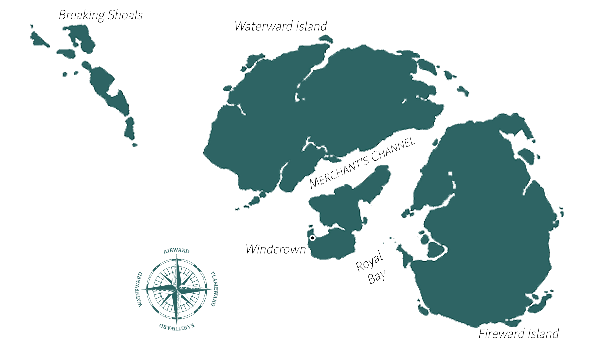
According to Karelagne sailors navigating the aether around Windcrown, the Ayrissian Port of Free Trade is an ugly lump rising from the Aetherial Expanse. Thousands of merchant vessels swarm around it like biting flies around cows at pasture. For many Ayrissians, Windcrown evokes their kingdom's rise to power. Originally a small settlement, the port quickly grew into a bustling trading hub by catering to the mercantile needs of ship captains and their financial backers.
A light blinks from the heart of the mound every few minutes, signaling the arrival of a new ship from Vea Plumeria, the Ayrissian capital in its Mortal Realm—and the addition of 1 chest of gold to the Ayrissian Office of Planar Transit, plus whatever bribe the ship paid the transit officer on duty to be moved to the head of the queue.
The Ayrissian crown longs to make Windcrown an interplanar hub of trade, where merchants from all corners of the cosmos can buy and sell their exotic wares. At present, however, Windcrown is simply a market where Ayrissian privateers can fence their plunder, merchants can sell astral goods to their home market, and suppliers from Vea Plumeria can sell vital supplies to sailors at a shameless markup. And, of course, where thieves and scoundrels lurk in the shadows, preying on travelers like pirates without a ship.
Still, the crown's ambitions are not without credit. This mingling of the Ayrissian establishment and the Aetherian privateering culture creates a merchant environment more accommodating than most ports under Karelagne rule, and more stable than the Isle of Drakes. Profit and pleasure are found in equal measure, held together by a mutual acknowledgment of, if not respect for, the law. For these reasons, merchants continue to invest in Windcrown's growth, with more and more ships finding their way to its docks.
A few intriguing locations for any sailor to visit while in Windcrown are described below.
Gold Anchor Bank
Merchant Bank
Formed by a tenuous coalition of trade companies, the Gold Anchor Bank offers predatory loans while secretly manipulating market prices of goods traded in the Expanse. Sailors claim the bank is so heavily protected that if Windcrown was destroyed, this fortress would still stand as a gleaming symbol of Ayrissian values.
House of Three Ears
Silent Theatre
Those who are hard of hearing—by cannon fire or by birth—often find their way to the House of Three Ears. Many come to learn Ayrissian Sign Language, after which some join its cast of actors, performing the latest Ayrissian plays or facilitating discreet auctions below the stage. Discretion is ensured by a permanent magical silence enchanting the premises.
All-Marine High Rollers' Club
Legal Casino
“Glitz and glamor” doesn't even begin to describe the decadent, golden, mermaid statue-adorned, four-story facade of Windcrown's greatest casino, the All-Marine. By order of the governor of Windcrown, the All-Marine is the only legal casino in town. The All-Marine's big-tent approach has allowed it to expand and expand, taking in anyone who wants to run their own blackjack table. Or, better yet, anyone who wants to run a table of flotilla, an edgy pirate-made dice game that's taken the Aetherial Expanse by storm.
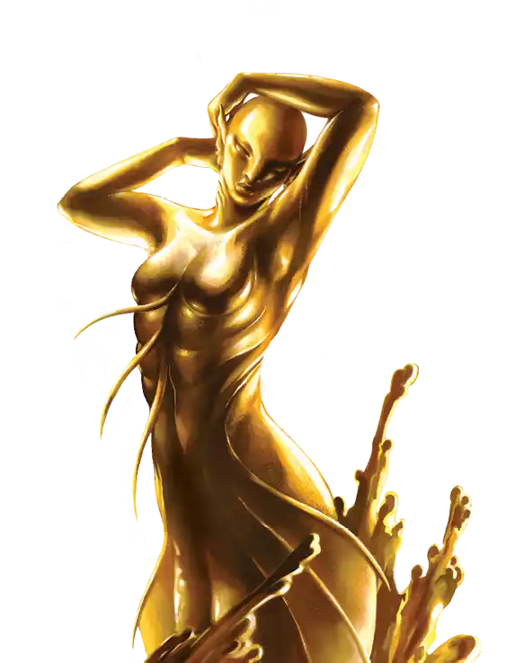
Bester's Ring
Underground Fighting Ring
The Windcrown constabulary is aware of Rex Bester's (CN, male humanveteran) aetherbeast fighting ring, but the bribes from Bester and his associates are too good to shut the illegal ring down. This underground fighting ring operates in the basement of the butcher's shop on Wick Street, a run-down avenue in Windcrown's low streets. A butcher, Gruup Meistercut (CN, male dwarfastral emergentcommoner) has posted a classified advertisement asking for “rare cuts of aetherbeast meat,” giving people an alibi for the sedated aetherbeasts they bring into his shop.
Camley Timeworks
Temporal Anomaly
The result of an enterprising alacrity scholar's experiment gone wrong, the rubble in this crater has been slowly piecing itself back together, reversing the explosion that tore it apart several years ago.
Governor Estamuel Chemelthary
Lawful evil, male half-orcnoble
The governor of Windcrown was appointed to the command over this territory by the Ayrissian crown twenty-one years ago, after the previous governor was killed in a pirate raid. The governor, the eldest son of the wealthy Chemelthary Mining Dynasty, is a gray-whiskered half-orc who observes strict adherence to the rules of society, etiquette, and per- sonal style and grooming. Chemelthary has a keen mathematical and business acumen. His appointment to Windcrown’s governorship turned his charge from a struggling, wayward port into an economic powerhouse.
Chemelthary is proud of what he has created, but has recently turned his bespectacled gaze toward the criminals within his city. He sees this “homegrown” crime as a sign of internal rot—and more dangerous to his legacy than pirates attacking ships on the high seas.
Hikaru Davies
Chaotic good, female humanmage
The renowned smuggler Hikaru Davies operates out of Windcrown and the nearby isles. Her sleek, triangle-sailed schooner, the Light Brigade, is rumored to have run over a dozen blockades, Ayrissian and Karelagne alike, over the course of Captain Davies’s illustrious career. This smuggler is well aware she’s growing older. Despite her youthful appearance, she can feel the ache of a hard life in her bones, and she’s seeking a way out: one last, big item to smuggle into Ayris, where she can retire and live in comfort and luxury for the rest of her days.
Slick's Getaway Shop
Spell Component Shop
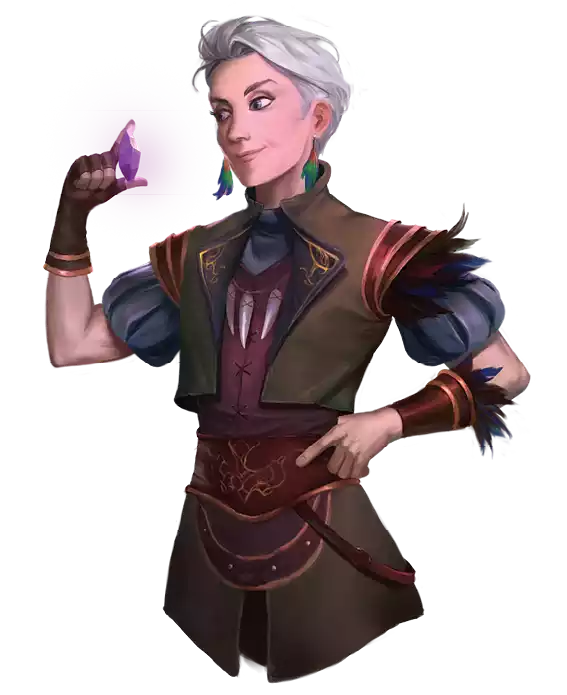
Nettle Slick (CN, nonbinary human druid/Merchant) runs a spell component shop on Claremont Street in Windcrown's high streets. Their spell components are of high quality, but the Getaway Shop's real draw is Nettle's skill as a transmogrifier. Nettle appraises their customers cannily before offering their services and setting a price, often requesting payment in favors when it's clear their client can't afford to pay.
In the past, Nettle lent their aid to the constabulary when the law needed to go undercover to catch dangerous criminals, but Nettle refuses to aid Windcrown's copperhelms in the pursuit of petty criminals. In fact, Nettle often helps small-time cutpurses and the falsely accused escape the law by disguising them just long enough to find passage out of Windcrown.
Quest Hook: The Anchor Job
Hikaru received a tip that a few Ayrissian Merchant are transferring vast sums of wealth from Ayris to the Gold Anchor Bank via three heavily escorted ships. She hires the characters to help her intercept one of the ships, load the treasure onto the Light Brigade, and ensure no one discovers the robbery before Hikaru and the wealth return to Vea Plumeria. The governor eagerly awaits these ships, making this job even more alluring as a final farewell for Hikaru.
Chapter 2: Gazetteer
Other Locations of Interest
Though much of the Aetherial Expanse has been charted, new islands are often discovered unexpectedly, arising from the depths through natural aggregation of aetherium crystals and because of the constant movement of islands circling the Maelstrom.
Blinking Island
This remote island is located just on the edge of the aether sea, and is subject to strange effects as the ocean tides swell and recede. Because of its location, few sailors have dared to journey here, fearing a navigational mistake could send their ship over the edge of the Aetherial Expanse. However, in contrast to most other areas along the Expanse's borders, falling off the edge near this island is exceedingly difficult. A strange conflux of powerful currents, turbulent eddies, and perhaps magical interference converge to push vessels away from the edge.
Because few have journeyed here, descriptions of the island are fragmented and inconsistent. Most stories suggest the island is relatively small and crescent-shaped, forming a sheltered bay around which a small community lives.
Legends claim a Karelagne explorer, Aloysius Dumas, sailed the Aetherial Expanse 200 years ago, well before Karel created its stable portal. These tales describe Aloysius using powerful artifacts that eased his travels across the Silvery Seas. Scholars suggest that if the tales of Aloysius are true, then Blinking Island may hold clues to what happened to the explorer and his magical treasures.
The Grey Fingers
Far airward of the trade wind routes between Port Majeure and Windcrown, is a small chain of islands that rise like boney fingers from the aether. The skies above and seas surrounding these islands seem darker than elsewhere in the Expanse. Sailors who've sailed nearby describe the air as being unusually cold. A slow but steady breeze pushes out from these isles which many crews claimed to have made their ship's rigging to hum with an unmistakable moan of sadness and regret.
The islands are mostly barren except for a few lonely trees that struggle to survive on their rocky slopes. Their limbs are gnarled and twisted with sickly leaves growing sporadically from their branches.
Few know the island chain is home to a reclusive celestial who lurks among the many crevices carved into the rocky. Ayrissian arcanists who've bartered for infernal knowledge were told the being is a fallen celestial they referred to as Acedia; a once-powerful being disavowed from its divine patron on a distant world now filled with shadow. The fiendish voices also spoke of an artifact of great power and sadness that the celestial now guards somewhere within these rocky shores.
Lazuli Isles
In the far earth by water reaches of the Aetherial Expanse rise the Lazuli Isles, though many simply refer to them as the Luckless Isles.
This archipelago is far from any charted wind routes, requiring a long and difficult journey. The natural blue color of its rock gave the isles its original name. Though the smaller airward islands are mostly bare rock with little vegetation, the southern island is covered by a thick forest of palms, perpetually shrouded in mist. The aether surrounding these isles are rocky and difficult to navigate—crews must use shoreboats to make landings.
Many sailors who returned from these islands claim they are cursed. Many have lost crew members who failed to return to their ship after heading ashore. The belongings of these lost crew were often found scattered along the shore as if cast aside, even treasured items were found abandoned among the blue-colored sands with no signs of struggle or tracks to suggest where they've gone.
Those who have returned, claimed to have seen an indistinct figure standing among the island's trees. Divinations to determine the whereabouts of the missing sailors and the identity of this shadowy individual have thus far been unsuccessful.
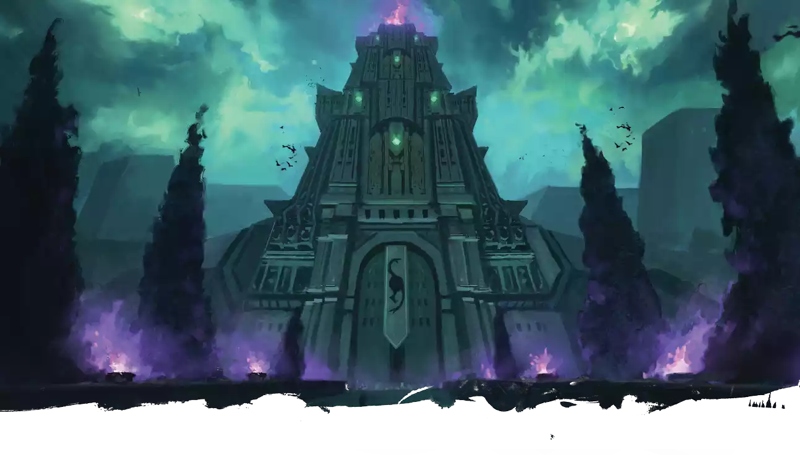
Nth Degree Island
In recent years, the Karelagne Empire has built a research base atop the largest isles in a small archipelago earth by flame of the Constellation Isles. Tight-lipped Karelagne captains speak little about the place, dubbing it only “Nth Degree Isle” after the imperial zealots who are now based here.
Shipgrave Reef
This small archipelago of islands is known for being particularly treacherous for navigation. Many ships have sunk into the aether having failed to notice rocky hazards hidden just beneath the aether's surface.
The four main islands of Shipgrave Reef (Floe, Tektite, Bulwark, and Sentinel) are all sizeable landmasses more than 2 miles across. These islands are made of volcanic rock created when the sea-cooled magma ejected from the Land of Fire. The islands and the sand weathered from them are matte black. Small, unstable portals to the Elemental Land of Air fill the reef with calm but frequently shifting winds.
Floe, Tektite, and Bulwark Islands have tiny, stable portals to the Elemental Land of Water. This fresh water, combined with the magic of the aether, supports thriving jungle life on some of these islands.
Many sailors have heard tales of lost treasure hidden somewhere on the island. A particularly popular tale speaks of merfolk pirate Amil Markhoff, who carried a magical treasure aboard his ship and who is rumored to have shipwrecked somewhere within the archipelago, never to be heard from again.
Starmine Key
The main island of Starmine Key is filled with rich deposits of aetherium crystal, and is home to a mining colony of astral emergent dwarves under Karelagne protection. The community of miners is lead by the friendly and caring Threx Starmine (CG, male astral emergentdwarf berserker), a descendant of the astral emergent islanders who saved a marooned dwarven ship on this island centuries ago. The dwarves, and Threx in particular, are growing disgruntled with the Karelagne Empire, as production demands have increased along with a decrease in the price the Empire was willing to pay for their crystals.
The Nth Degree
The Nth Degree is a group of Karelagne zealots based on an island that now bears their name. Rumors have started to swirl throughout the Drakes that the Nth Degree is kidnapping astral emergents for unknown reasons. Whispers of these activities have begun circulating in taverns and on ship decks, especially among those who employ astral emergents as deckhands or call them friends. Astral emergents are becoming ever more nervous, and for safety, some are moving to large cities controlled by anyone other than the Karelagne Empire.
Ayrissian agents believe that the imperial researchers are somehow using these astral emergents to improve aetherial crystal processing, though little else is currently known about their research or how the processing is being improved.
The Karelagne Empire is aware of the Nth Degree's activities but is currently turning a blind eye to the kidnappings as they've been given suggestions that aetherium crystal manufacture may emerge from this work, potentially providing the Empire with a limitless source of wealth and power.
Supposed Journal Entry of Aloysius Domas
…so close to the edge of the Aetherial Expanse. Some strange magics must be set over the entire island, to make it flicker and blink so. I asked Erinaronda about it once, and she simply shrugged, saying it had always been the way of things here. Nevertheless, I always make sure to be back on the water before fogfall, and I only sleep on the Albatross…While traveling back and forth from the village to the shore eats up a good portion of my time, I refuse to be caught up in that strange fog ever again. When it washed over me, and then away again, it felt as if I'd lost a part of myself. It was as if no time had passed, yet it also felt like an eternity floating in a lack of existence. I had no edges, and my mind was no longer my own. Needless to say, it was unpleasant.
In a pleasant development, however, it seems Erinaronda and a few of the other villagers have begun to remember me, and recall bits of our previous conversations. I don't understand why their memories of me are returning now, but I'll accept the blessing for what it is. Once she recalled our first conversation, I asked Erinaronda if she'd like to leave the island with me the next time I went. She smiled, though it seemed a bit sad to my eyes, and simply said no. When pressed, she said her place, and her people's place, was on the island. As a community of astral emergents, I suppose they don't find the fogfall as distressing as I do, though I can't imagine they find it pleasant. I'll have to ask Erinaronda about it when I'm next ashore. We…
Chapter 3: Gods of the Expanse
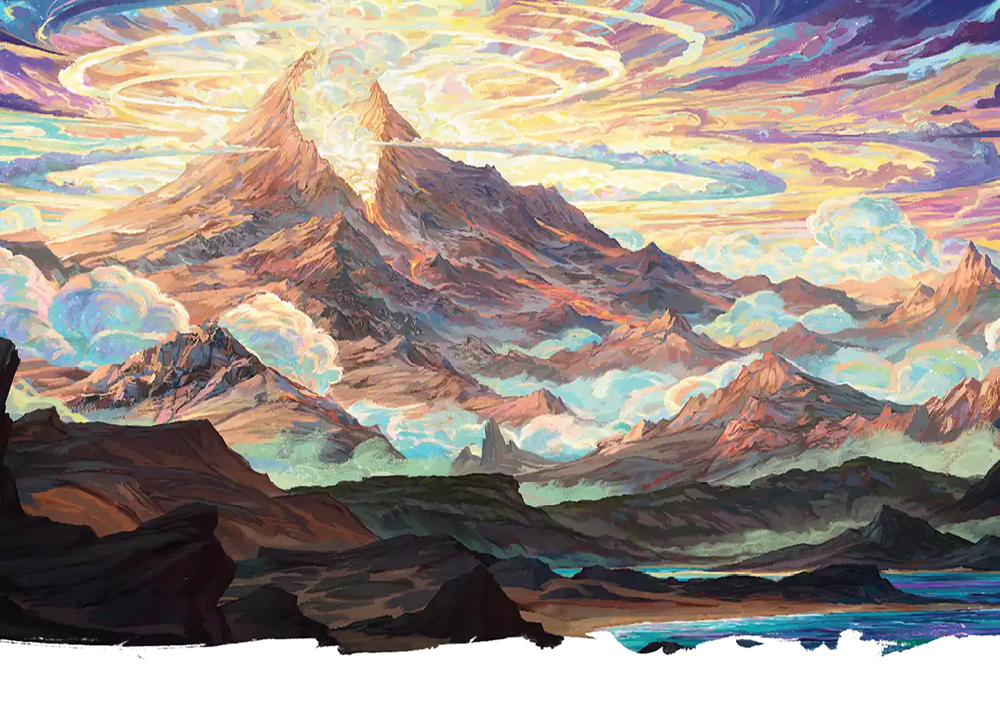
Chapter 3 Gods of the Expanse
“Those who presume to judge their peers are shipwrecked by the laughter of the gods.” —Adaibert Stone, Aetherial Philosopher
Mortals arriving from their Material Realm invariably bring their own gods to worship. However, since the formation of the Aetherial Expanse, several divine entities emerged to influence this region of the Astral Realm. This chapter details those gods who continue to have the greatest influence.
Chapter 3: Gods of the Expanse
The Divine Tetrad
Four gods are commonly worshiped upon the Aetherial Expanse, and have been since time immemorial. Called the Divine Tetrad, these four divine entities were passed down from the astral titans that first gave them praise. Their worship has spread across the Expanse and even found purchase in the distant realms of Ayris and Karel, brought home by their astral sailors. The four cardinal constellations of the Aetherial Expanse are named for these gods, and sometimes, believed to be the gods themselves, or at least doorways to their domains.
This polytheistic faith has precious little canon, and stories of these gods' deeds vary wildly between cultures and tale-tellers. It's easy for a person to contort their thinking to believe their god of choice will bless their actions. Nevertheless, there are some consistencies among the gods' tales.
Asteth, the Empress
The ancient ones told tales of Asteth, the Empress of Flames, a burning, three-headed serpent that emerged from a door of fire. She was a fickle ally, and always behaved in hungry self-interest. The astral titans kept her at arm's length; close enough to borrow her power, but leaving enough room to retreat, lest they be burned by her caprices. Asteth is often depicted as a three-headed serpent wreathed in fire, or a muscular humanoid woman whose crowned head is obscured in flame.
Asteth in Karel
The Karelagne Empire has adopted the worship of Asteth with gusto, and her flame cults have grown with such rapidity and vigor that the Karelagne crown fears they'll soon become a threat to its political sovereignty. The government has cultivated a nationalistic image of Asteth, portraying her as a mother-goddess of warlike power and the homely hearth. It's popular to name girls born after a troubled birth Asteth, to honor the Empress's power.
Asteth in Ayris
In Ayris, Asteth's fickle will is emblematic of the caprices of the market. Merchants and investors, particularly those who remain in Windcrown or in the Ayrissian capital in its Material Realm, issue prayers to Asteth for a sudden rise in their fortunes, or a favorable market crash—especially one that ruins their rivals.
Asteth Among the Drakes
Goddess of cannon fire and burning ships, Asteth's burning visage has a place on the figurehead of countless pirate ships. The infamous ship The Drake was known for bearing her serpentine form on its figurehead.
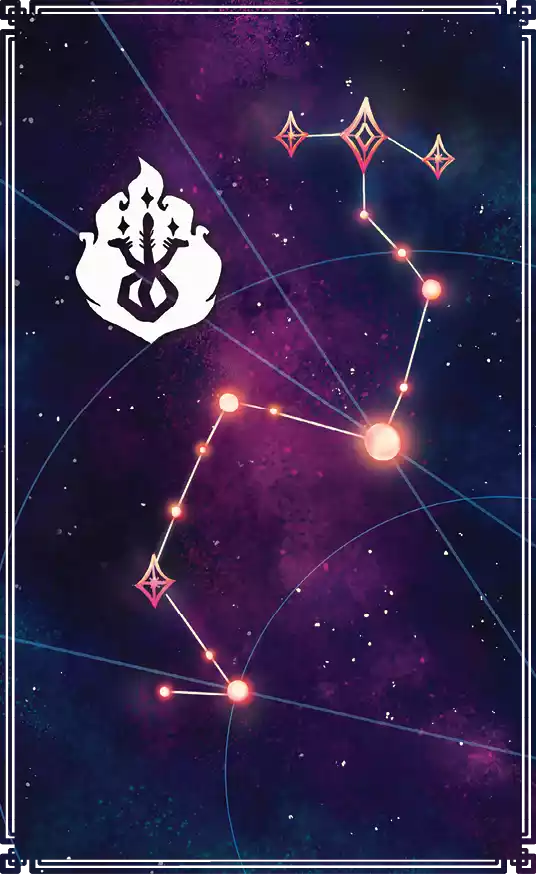
Cyrill, the Hierophant
The astral titans had a legend about the creation of the aether. Many centuries before the other titans' arrival on the Astral Realm, Cyrill the first titan was the sworn protector of a realmsfaring civilization that settled with the Astral Realm. The devouring hermit-god Qoz came to menace this civilization, and piece by piece rent it asunder until only its cosmopolitan heart remained.
Cyrill knew this civilization would be lost unless he sacrificed all. He recalled his oath, and called upon the spirits of all who had died in Qoz's wake to aid him in creating a ritual that would protect this civilization from Qoz's destruction. Even for a titan, such power was too great to control, and all within this civilization, thousands upon thousands of people died, transformed by Cyrill's incantation into raw magical power: the aether.
In a way, Cyrill was successful; though all he sought to save perished and became the aether, the realmsfarers were nonetheless spared from being consumed by Qoz, and, according to legend, live on as the gestalt consciousness of the aether itself. Legend says Cyrill retreated in shame to the Elemental Land of Water to study the seas and learn to speak the language of the waves so he could communicate with those who became the aether.
Cyrill is typically depicted as a muscular, male, bearded giant holding an aetherium crystal in a hand that's lost its third, fourth, and fifth fingers; the parts of Cyrill torn away by the creation of aether.
Cyrill in Karel
Karelagne marines often pray to Cyrill to watch over the dead who were lost to the sea. Few in Karel even know of Cyrill, for his aetherial creation is only a curiosity to people in their Material Realm.
Cyrill in Ayris
In Ayris, the image of Cyrill has become shorthand for the power of aetherium, which has been highly touted by the alacrity scholars of their realm. Cyrill, the Titan of Progress, a blue-hued giant holding a crystal sparking with power, leads the charge of the Ayrissian people on the world stage—according to Ayrissian propaganda posters, at least.
Cyrill Among the Drakes
The pirates of the Aetherial Expanse are better versed in the legends of the astral titans than the sailors of Karel or Ayris. Many pirates and smugglers pay homage to Cyrill with a small animal sacrifice or tithe of gold to a shrine before setting out on the aether. Others forgo sacrifice, but dedicate their work songs to Cyrill, in the hope that his sorrowful ears will hear their voices and bless them with happy seas.
The astral emergents see Cyrill as a creator deity. Without Cyrill, there'd be no aether, and without the aether, they wouldn't exist.
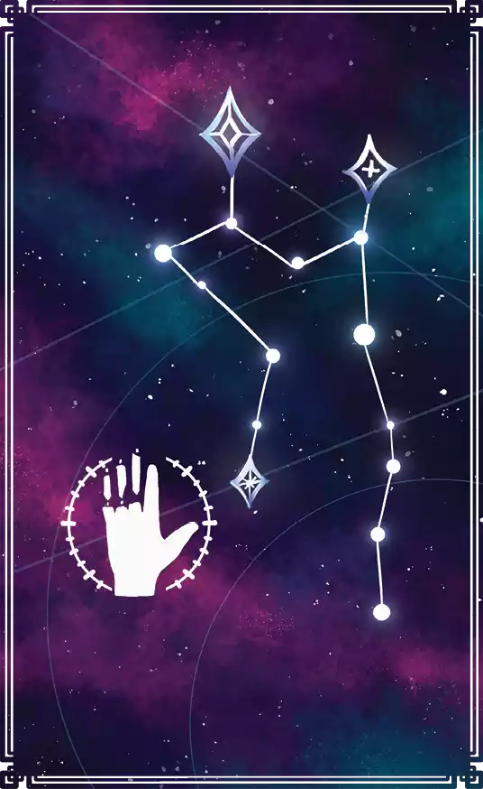
Unammon, the Chariot
It's said a whale of titanic size once sailed through the skies of the Astral Realm, buoyed by the winds of the Elemental Land of Air. The Chariot of the Winds spoke for the air to rise wherever she wished to go, and the realms themselves heeded her command. The astral titans say they once followed in Unammon's jet streams in flying craft to quickly traverse the Expanse from high above the aether's surface.
Legend says the peaceful Unammon came into accidental conflict with Asteth, and the Empress of Flames smote her down with a meteor from the heavens. Unammon crashed into the aether, burning with Asteth's fire, and perished beneath the waves, where she was devoured by the hermit-god Qoz. Yet, her unbreakable spirit lived on within the air itself, sustaining all the permanent portals of air that blow across the Expanse, and playfully birthing the portals that seemingly open and shut without cause.
All superstitious sailors venerate Unammon—and all sailors are superstitious to some degree. Upon the sea, calm winds are life, and stormy weather is all but certain death.
Unammon is depicted as a snow-white beluga whale, sometimes covered with countless tiny, feathered wings and trailing a tail of mist behind her.
Unammon in Karel
Worship of Unammon has spread from the Aetherial Expanse to the saltwater oceans that border Karel's coastline in its Material Realm. Karelagne sailors of all stripes are united by a certain reverence for the playful whale of the skies. Whenever a storm thrums upon the horizon, Karelagne ships fire off a volley, in the hopes of alerting kindly Unammon to their presence and causing her storms to blow elsewhere.
Unammon in Ayris
Though Ayrissian sailors adore Unammon, the Ayrissian crown and parliament fear her. At home, revolutionaries calling themselves the Winds of Change have taken the Chariot of the Winds as their icon, and push for an end to the Ayrissian monarchy.
Unammon Among the Drakes
Rare is the pirate with an ill word to say of Unammon. However, rumors abound that Unammon's bones still soar beneath the aether in a perverse mockery of her playful behavior in ancient times. This legend tells that an ancient demon lives within the whale's rib cage, burning with deathly malevolence where the god's kind heart once was.
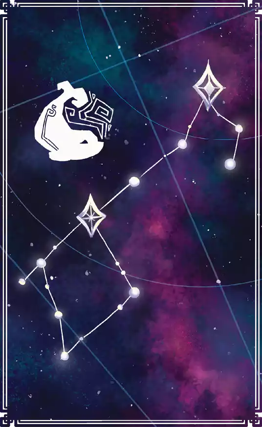
Qoz, the Hermit
The Sullen Hermit of Deep Earth is said to lurk at the bottom of the aether, dreaming of a time when it will rise again and hunt. Qoz and its kin, the feather stars, were the scourge of countless astral civilizations in ancient times. Though none of the giant, island-crushing feather stars remain, legends of their destructive power are still sung across the sea as heralds of the end. Their periods of wakefulness are filled with nothing but devouring, until they fall back into hibernation.
Qoz, their progenitor, sleeps longest, and hungers deepest, for its appetite is roused best by the flesh of gods. Its featherlike appendages are said to be broad as the arms of galaxies, and each strand of feathers made of crystalline matter harder than diamonds. Qoz is never forgotten, but often said to be a thing of myth, for none who have seen it rampage survive.
Qoz is depicted as a feather star with arms that shine like a swirling galaxy. The Karelagne, who personify Qoz as evil, paint a cruel face from the stars in the galaxy's center.
Qoz in Karel
Qoz has become a figure of ultimate evil within Karel. The empire believes its foundations are stronger than stone and its reign will last until the stars die. Myths of a creature whose rousing makes the realms themselves quake eats at the heart of Karelagne national pride. Karelagne clergy frame all evil acts of the humanoid heart as inspired by Qoz, who dreams cruel intentions into the minds of evildoers.
Qoz in Ayris
The mythos of Qoz has hardly made an impact in Ayris. This intangible, cosmic warning has no place in a society where coin is king.
Qoz Among the Drakes
Pirates, superstitious to the last, often invoke the name of Qoz when they curse. “Qoz take you,” one might say. “Teeth a' Qoz,” another may curse. “With you 'til Qoz wakes,” a loyal pirate would swear to a captain, and a stronger promise isn't to be found across the Expanse.
“Quit pokin' Qoz and leave the captain be,” a concerned pirate might spit to a junior crewmate inviting disaster by fussing with their irritable captain. “Raising Qoz” is sometimes said instead of “raising hell.” Countless other minor epithets abound on pirate ships.
Particularly superstitious pirates who catch themselves habitually invoking the Hermit-Devourer's name may hastily append “may it never wake” to the end of an oath. Even the fearless Captain Ralph Terrecks was once overheard before battle roaring, “Get out there and raise Qoz!” before turning his head to the deck, and mumbling “mayitneverwake” into the back of his hand.
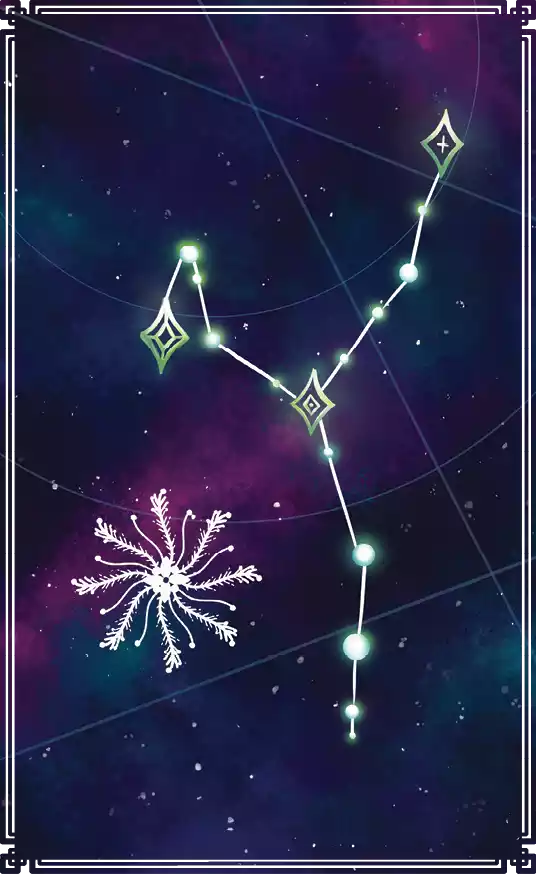
Chapter 3: Gods of the Expanse
Other Deities
Beyond the primary four, numerous divine beings are revered by the mortals or seek to influence this region of the Astral Realm. Some notable deities are presented below.
Casdia, the Chaotic Calm
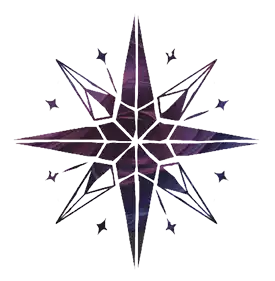
The worship of Casdia was brought to the Aetherial Expanse by those who came to the Expanse from the Karelagne Empire. There, she is known as the Goddess of Change, who chafes against the status quo and whose favor can help to bring a positive reversal of fortune. Oddly, despite her association with change and unsteadiness within the Empire, she has become a symbol of the need to constantly stay on one's toes in the Expanse, with sailors calling on her for literal and metaphorical balance as they travel the waves.
Casdia in Karel
Within Karel, views of Casdia have not changed, even as those who have traveled to and within the Aetherial Expanse see her as a steadying influence because of her chaotic nature, and she remains a favorite of gamblers looking for better luck, reformers who want to bring change, and sailors who seek a calm journey across the waters.
Casdia in Ayris
Casdia is generally seen as a Karelagne deity, so belief in her is limited among those who identify primarily as Ayrissian, due to some lingering feelings of ill will towards the Karelagne Empire in the aftermath of the war. Among those who have spent most of their life in the Expanse, or who grew up in it, she is better known, but usually only invoked during games of chance.
Casdia Among the Drakes
Casdia has gained some popularity with pirates, who see her as a symbol of the ups and downs of a pirate's life. As one saying puts it, “Some days you chase Casdia, some days she chases you.” As a result, her symbol of the compass rose can often be found carved somewhere on most pirate ships. It is not clear if everyone who copies this carving even knows who Casdia is, but it has become a common trend.
Desdemona, the Lady Death
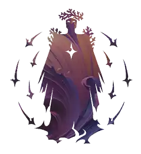
Legends tell of a woman as tall as a ship's mast and quiet as a shadow. They speak of her pale gaze being cast upon the sea as her titanic galleon, the Adumbral End, cuts across the aether in search of souls. She has seen the fall of every civilization that dreamed of ruling the Aetherial Expanse, and she cares nothing for the insignificant, replaceable lives that meaninglessly cross these seas. She serves as the right hand to a sea-witch known as Akaste, a dread titan of the ancient world, which time has long since forgotten.
Desdemona is depicted as a towering shadow with pale eyes glinting from beneath her coral-wreathed brow. Falling stars surround her like diamonds in an unseen crown. As she is a lesser spirit, there are no priests of Desdemona, but there are warlocks who tether themselves to her power. The Lady Death has no interest in these warlocks, but her own patron, the sea-witch Akaste, acts on her behalf, secretly preying upon the desires of these supplicants in exchange for a fraction of her power.
Desdemona is not well-known beyond the Aetherial Expanse. She has no constellation, like the four great Gods of the Expanse, but her coming is marked by the falling of stars from the sky.
Akaste, the Sea-Witch
Unknown to all but Desdemona herself, a titan named Akaste is the fount of the Lady Death's power, and the answerer of all mortals who would seek her sepulchral favor. The witch was once an astral titan who foresaw the fall of her civilization. Akaste drank deep of death when her realm of Astrium fell. Since then, she has repeatedly sent Desdemona as her reaper to fell civilizations when enough souls populate the Expanse to warrant harvest.
There is no secret justification behind Akaste's actions, no sympathetic reason for her gorging on suffering. She delights in others' pain, thrives off their fear, and feasts on their weakness. In battle, she taunts her enemies, drains them, terrifies them—she is merciless and unreasonable, choosing cruelty at every turn, ceaselessly ravaging her enemies until they beg for release. They gain release only when Akaste is satisfied. And Akaste is never satisfied.
Akaste's body dwells within the Bathyal Chariot, within the reanimated bones of a massive aetherwhale. However, her spirit is only present when Desdemona sails the seas at her command. At all other times, Akaste uses the souls Desdemona reaps to project her spirit into the Astral Realm to seek new realms to conquer and innocents to torment while Desdemona guards her physical body.
Kima, the Shadow
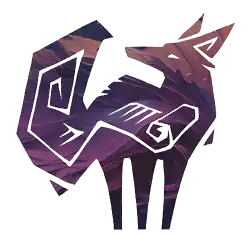
Kima was once a goddess of knowledge and learning worshiped by millions, until the destructive power of Qoz and its kin relentlessly attacked the civilizations that knew and worshiped her, killing her followers for no reason other than their all-consuming hunger. She attempted to defend herself and her followers against Qoz, but fell in the battle, barely escaping with her life.
Determined to keep the memory and wisdom of her worshippers alive, Kima traveled from one civilization under threat to the next, staying one step ahead of Qoz while collecting the stories and secrets of those who might soon be lost to the god's destructive power. Some believe that this information included the ritual used by Cyrill to repel Qoz, but Kima has never claimed or sought credit for this action, preferring to keep her role obscured.
Due to her secretive nature, Kima is considered more of a legend than a god by many, but those who do follow her usually depict her as she appears to her acolytes, a shadow that takes the vague shape of a three-legged wolf or fox.
Kima in Karel
Worship of Kima in the Karelagne Empire is often found among those who oppose imperial rule and feel that its yoke is similar to the destructive power of Qoz. As such, it is not often practiced openly in Karel, but can be found as an open secret in some outer Karelagne regions, including among the fisherfolk of the Edosians.
Kima in Ayris
In Ayris, Kima is seen as the goddess of secrets, and has a following among some of the thieves that walk the streets of Windcrown, as well as more than a few unscrupulous merchants, but is generally most known for her association with the Kimaries,
Kima Among the Drakes
Pirates disagree strongly about the worship of Kima—some believe that her form can be seen most clearly in the smoke that comes from the aftermath of a fire and that carrying her acolytes will lead to their ship ultimately being lost to disaster. Others call upon her to protect them from the many forms of death that can often be found on the seas, as it is believed that one of the secrets she carries has allowed her and her most devout followers to cheat death itself.
Orglix, the Magician
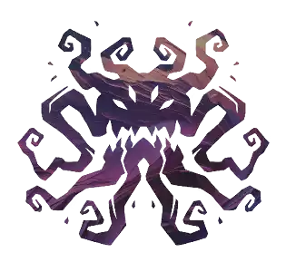
No god rules the actions of the kraken. The sea itself trembles and froths whenever Orglix moves, a storm of blood-red arms and aetherium fangs. Orglix lacks true godlike power—it still is shackled to a physical form, and it lacks the ability to reshape the world to its whims—but it is a mighty supernatural spirit nonetheless. Despite this limitation, Orglix possesses a power that even the gods envy: the power to experience all of time at once, and to touch its ephemeral currents.
Orglix was born of a nightmare of the astral titans of Astrium in an age long past. The titans delved into magic beyond mortal comprehension to control the aether, raze civilizations in a day, and even divine the future. Orglix was fed by nightmares of magic gone wrong and grew to monstrous proportions over a thousand years of dream-eating until, one day, it became real. The titans captured it, imprisoned it, and experimented upon it until, one day, their civilization ended.
Somewhere, Orglix knew this would happen. It experienced all things at all times, in one perfect, asynchronous, nonlinear moment. It knows all things that are, and all things that are not.
Orglix in Karel
Imperial politicians and scholars have heard much of the myths of Orglix from the Aetherial Expanse. An occult fervor has gripped the upper echelons of Karelagne society as people make ever more sinister offerings to gain Orglix's attention so that they may hear its whispers of their future.
Orglix in Ayris
The people of Ayris don't believe in the tales of Orglix that have filtered into their world from the Expanse. If such a creature existed, all of commerce would collapse. The act of prediction—especially predicting the rise and fall of the market—is sacred to Ayrissians.
Orglix Among the Drakes
The hearty sailors of the Isle of Drakes disparage legends of Orglix and its omniscience. The pirate's creed is that of freedom. If all of the past and all of the future were known, the pirate's short, merry life would have no meaning, for what is the meaning of life if not to take fate into your own hands?
Chapter 4: Factions
Chapter 4 Factions
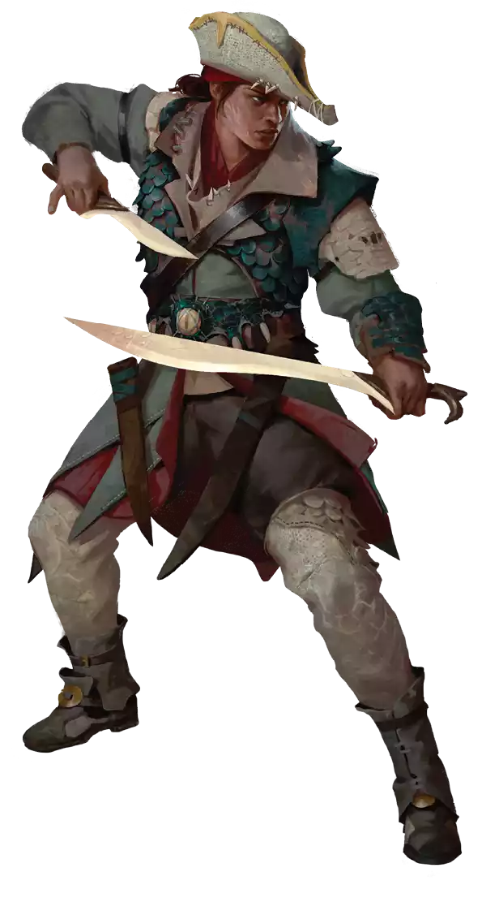
“Scratch the colors from an Ayrissian privateer and you'll find an unconscionable Drake hidden beneath.” —Admiral Abrexta Kathinel, Claw of the Viceroy
The aetherium-rich seas of the Aetherial Expanse call to all those who discover it. The great powers of Ayris and Karel viciously fought for its control, spending decades in bloody conflict against one another until striking a tentative truce just eight years ago.
Now, the two nations continue to vie for control of the seas, seeking to plunder its riches. They use their power and influence to coerce those they can, and often pay privateers to harass those who stand in their way.
Between those two great powers are numerous pirate crews who prey on vulnerable ships navigating these seas. Most call the Isle of Drakes their home, where they rest between their hunts on the aether.
This chapter explores Karel, Ayris, the Drakes, and a sampling of other factions who can influence events in the Aetherial Expanse.
Chapter 4: Factions
The Drakes
In the Aetherial Expanse, the word ‘drake' is synonymous with pirates for good reason—the Isle of Drakes has been the home of fortune-seekers, glory-hunters, and thieves for over twenty years. Though the many pirate crews that consider themselves part of the Drakes spend much of their time squabbling for power and resources, they remain true to two key principles: they will never bow to the authority of Ayris or Karelagne, and they will never take the freedom of another.
The Drakes became a force within the Aetherial Expanse thanks in large part to Teruko the Drake, an infamous pirate who sailed during the height of the War of the Invaders. Teruko maneuvered past both the Ayrissian and Karelagne navies on her galleon, The Drake, to offer transport to stranded civilians, disillusioned deserters, and sailors looking for new opportunities. She took money for her services from some and skills-in-trade from others. She brought them to a cluster of islands in the Expanse's earthward reach that she'd taken under her protection. She also made each newcomer swear a single oath—that they would never bend to the power of either the Ayrissian crown or the Karelagne Empire.
When Teruko the Drake was alive, loyalty to her and her ship kept the many pirates of the Isle of Drakes united, with crews working together to share the danger and profit of a pirate's life, but her mysterious death at sea created a rift in her crew and shattered most of these fragile arrangements. While the Drakes will band together if needed in the face of a common threat—pirate-hunting privateers, for example, or bounty hunters working for Ayris or Karelagne—they generally see each other as threats rather than allies, and won't hesitate to turn on each other for their own gain.
Despite their differences, Drakes share a come-what-may approach to life and danger, believing that a short life of freedom is better than a long one under the thumb of an oppressive outside power. Their belief in freedom also means that they generally do not take captives from the ships they attack without offering them the Drake's choice of blood, land, or aether—a quick death, exiled on the nearest landmass, or a spot on the pirate's crew.
While there are many pirate crews that either operate from the Isle of Drakes or consider it their true home, a few have gained enough renown that their names are known separately from the Drakes—the Blood Lilies, the Thorned Knights, the Children of Asteth, and the Shipwreckers. Each have their own agenda, with long-term goals that could shape the future of piracy on the Aetherial Expanse.
The Blood Lilies
Long ago, a group of druids were captured from a vast wood within the Karelagne Empire and brought in chains to the Astral Plane, forced to help the empire cultivate crops in this unusual land. These press-ganged druids escaped slavery, stole a ship, which they renamed the Aesphodel, and fled the Imperial Archipelago. They stopped on Maladell Island among the archipelago that would, in a few decades, become the Isle of Drakes.
For years, these druid-pirates preyed exclusively upon the Karelagne Navy, seeking retribution for the imperial enslavement. Their persistent bloody predation on imperial ships earned them their “Blood Lilies” moniker, and for a time, they were one of the most feared crews in the Drakes. Then, a remarkable thing happened. Individuals from across the planes arrived in the Aetherial Expanse, sought out the Blood Lilies of Maladell Island, and joined the crew.
A Shared Dream
Aside from their shared affinity for nature magic, these newest members of the Aesphodel all have one commonality: they each experienced a dream about the Aetherial Expanse, which led them here. Though some have more doubts than others, many believe they were all brought to the Aetherial Expanse for a yet unknown purpose. Over time, the once blood-thirsty pirate crew transformed to become the caretakers of Maladell Island.
Atypical Pirates
Due to their unique motivations, the Blood Lilies do not resemble a typical pirate crew. They are peaceful, only attacking in self-defense, and spend more time on land than on aether. When they do leave their island, it is usually to get supplies. Furthermore, they are uninterested in the politics of the Isle of Drakes, remaining a neutral party. Because of this refusal to side with any particular faction, they are viewed with disdain by most other pirate crews, only begrudgingly tolerated as they provide a valuable service of producing fresh fruit and vegetables.
Currently led by Captain Almond(N, nonbinary gnome), the Blood Lilies protect their island from imperial incursion from Fort Aesphodel, a mighty tree-fortress which they shaped into its form with their magic.
Many of the escaped druids who had initially formed the Blood Lilies were moved by the newcomers, and their thirst for revenge was sated. However, a few of the original crew still cling to their imperial hatred and disapprove of Captain Almond's gentler approach. They have begun to whisper that the Aesphodel should again paint the Silvery Seas red with imperial blood.
Faction Goals
Under Captain Almond's direction, the Blood Lilies protect Maladell Island with a gentle but firm hand. Their goals include:
Protect Maladell Island. The druids have carefully tended the island, creating a vibrant island paradise. They will forcefully throw back anyone who dares to threaten their control of the island.
Understand Their Visions. Many of the druids who've joined the Blood Lilies in recent years arrived because of a shared vision that drew them from across the planes to this island. No one yet understands what has drawn them here, but they suspect a greater purpose lies ahead.
Hazel (N, female infernisdruid). A towering infernis serves as the first mate. Her spectacled stare makes it clear she takes her station seriously.
Quoiya (N, agender dryaddruid). Freed from their tree bond thanks to absorbing aether, Quoiya, the ship's adventurous helmsperson, interfaces with the vessel's wood to control it.
Tiberius the Bear (NG, male humandruid). A gentle soul who often takes the form of a large bear.
Cozmara (N, femaleelfdruid). The mysterious and timid subteranean elf is an unranked crewmember, but her divination powers, channeled through aether-soaked tarot cards, have saved the Aesphodel many times.
Yorfax (NE, malehumandruid). Part of the original crew, the elder master gunner despises Captain Almond's tamer approach. He is intelligent and cunning, and plans to usurp control of the ship.
The Children of Asteth
The Children of Asteth are fanatically devoted both to the goddess Asteth, the Empress of Flames, and their reclusive, authoritarian captain, Maledonna Ackles. Remarkably, Maledonna rarely steps foot on their crimson galleon, The Avenging Angel. Instead, she uses a magical mask to control one of the crew, captaining the galleon from the safety of the Children of Asteth's citadel on Fort Angelos Island.
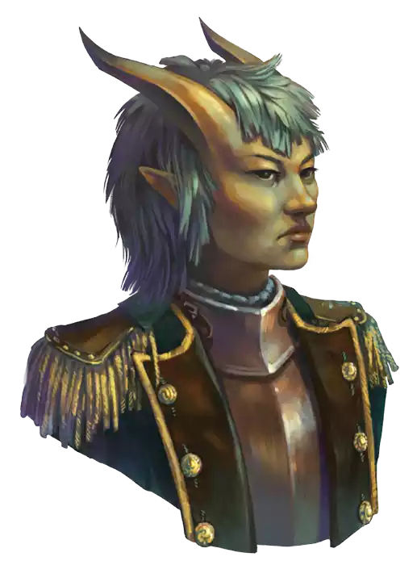
Under Captain Ackles' command, The Avenging Angel destroys weaker ships in the punishing flames of Asteth's fury. The captain has a particular hatred for ships of the Karelagne Empire, who she believes have warped Asteth's teachings with their imperial domination.
While they believe that any act of mercy also goes against Asteth's will, the Children of Asteth treat those who survive the flames as sanctified by Asteth, treating them as honored guests who may join the crew or be dropped at a destination of their choosing.
Where the goddess's word is to create flames to shelter the weak, the Children of Asteth believe that her flames are a gift to the strong, and a symbol that those with power are blessed to do as they wish, unless they are halted by a greater power.
Few Drakes trust the Children of Asteth and their gaunt, eerie captain, but their control of Fort Angelos Island makes removing them a thorny prospect.
Faction Goals
The Children of Asteth seek to bathe the Karelagne Empire in a destructive and holy fire. If they were to become the dominant power among the Drakes, they would push for a campaign of destruction against the Empire. In the meantime, their goals include:
Defying the unjust and culling the weak. The Children of Asteth do not believe in half a victory. If the ships they target are not burning on the sea at the end of the battle, they view it as both a failure and a sin.
Crippling the Karelagne Empire. The only exception the Children of Asteth make to their general pattern of overwhelming destruction is if a smaller strike can cause some harm to the Karelagne Empire.
Captain Maledonna Ackles
Lawful evil, femaleinfernisknight
The captain of the feared The Avenging Angel is a recluse who rarely leaves her abode on Fort Angelos, even when her ship goes hunting. She commands her ship from afar using a death mask in the shape of her own face. One of her crew must wear the magical mask, allowing their consciousness to be subsumed by the captain, who controls the wearer's body as if it were her own. Maledonna's voice echoes from the death mask in metallic, raspy, distant tones.
Maledonna is the sobriquet of Teresa Valor Narav, first daughter of House Narav of Karel and heir to their estate—one which was burned by agents of the imperial crown when she was a child for political reasons too intricate for her young mind to fully comprehend. She despises the Empire with a burning passion, but still nurses a selfish desire to rule and subjugate, and does so as a fearsome, sadistic pirate captain in absentia.
The Shipwreckers
Daredevil captain Charleston Kriegler (CN, male half-Elf{elf pirate captain) has mastered the art of ship navigation and uses it as a weapon against his enemies. He challenges or manipulates less maneuverable vessels into dangerous waters, then, once the target has run once the target has run around on a reef, swoops in with threats and demands from his pride and joy, the Apocalypse, a terrifying man o’war. The crew specializes in sinking ships, particularly privateers, bounty hunters, and unauthorized merchant ships; the Shipwreckers defend the isles without mercy.
Captain Kriegler and his crew are boisterous storytellers who love to recount tales of their latest successful skirmish, and emphasize how often they get away with the goods without firing a single shot, but the captain's larger-than-life persona, vicious temper, and long memory can drive away pirates looking to make names of their own.
Despite this, Apocalypse has one of the lowest crew turnover rates. The Shipwreckers' low ammunition costs leave them with plenty of funds to spend on the crew and their keep on Fort Roost Island.
Faction Goals
The Shipwreckers prefer if their foes surrender rather than fight, focusing on the money and goods they can earn from a confrontation instead of the destruction they can inflict. If they were to become the dominant power among the Drakes, they would have ships work together to drive merchant vessels into danger rather than attacking them directly, though always with the Apocalypse leading the way.
In the meantime, the Shipwreckers' goals include:
Seeding the Expanse with New Dangers. The more dangers that lurk in the Aetherial Expanse, the easier it is for the Shipwreckers to ground other ships. They often position ships they have wrecked to serve as artificial reefs for new victims.
Encouraging Foolhardiness. The Shipwreckers thrive when their prey is easily goaded into shows of foolish bravery, and often spread tales of the pride and danger of a pirates' life to susceptible ears.
Captain Charleston Kriegler
Chaotic neutral, male half-elfpirate captain}
Broad, muscular, bold, bushy of beard, and brash of voice, Kriegler is captain of the dread ship Apocalypse and commander of the Shipwreckers, a crew that prides themselves on claiming prizes without firing a single shot.
Kriegler is an elder politician of theIsle of Drakes and is, by all accounts, the quintessential pirate. A frequent sight in the Isle's famed Seven Stars Tavern, the room falls silent when he enters, then livens again when he reveals himself to be in a generous mood, or clears out when he reveals himself to be in a foul one. Prideful and vicious, Kriegler delights in the power he's accrued over the years and isn't afraid to show it.
Kriegler's boisterous, theatrical attitude is beloved by all, but wise pirates know not to question his tall tales, to test his character, or to contradict him. While his spirits may be high, his pride is a fragile, easily-bruised thing. He's kind to those who flatter him or show him true mettle and strength, but behind closed doors, Kriegler's detractors say he's no more than a bully and a cheat.
Quest Hook: The Great Race
The Apocalypse is hosting a race to test the speed and maneuverability of ships across the Aetherial Expanse. They claim it is a celebration of the truce between the Karelagne Empire and Ayris, but plan to sabotage several ships so they can be picked off on their way back to their normal routes. As the hosts of the race, they must be above suspicion, but they are looking for helpers to participate in the sabotage for a cut of the profits.
The Tenders Guild
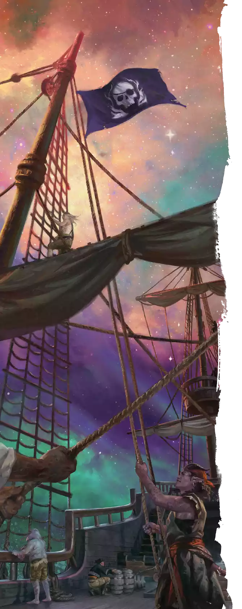
When most in the Aetherial Expanse think of the Drakes, they think of one of the pirate crews, but it is the Tenders Guild that ensures the pirates have somewhere to call home.
The Guild was originally formed as a loose alliance of bartenders at the Seven Stars Tavern after the ‘Six-Shot Scuffle,' an all-out brawl between pirate crews, which nearly burned the place down. The Tenders Guild has grown into a crew for those who are Drakes but spend most of their time on land, from retired pirates to local workers, to those who have either temporarily or permanently found themselves without a berth.
The Guild's current leader is Red Jacques (CG, female drakonamage), the proprietor of the Seven Stars Tavern, who is known both for her physical strength and her sage advice, but a contingent of Shipwright Union members have been agitating for a Guild leader who is not associated with the Tavern and are championing Anka (NG male drakonaveteran), owner of the ship repair shop Wrights and Wrongs.
Faction Goals
Despite the continually-bickering pirate crews, the Guild has managed to stay neutral enough to avoid being pulled into disagreements. The Guild's current leadership is focused on keeping the Isle of Drakes safe, with their goals being:
Information Gathering. The Tenders Guild's nonpartisan nature has allowed it to gather information, listen to rumors, and keep ahead of any plots by Ayris or the Karelagne Empire to advance on the Isle of Drakes.
Maintain the Peace. They will also attempt to stop any plot by one pirate group against another that would destabilize the fragile peace of the Drakes or put their members at risk.
“A Drake lives for the open sea, but there must always be somewhere to brew the beer, fix the ship, and spend the treasure.” —Red Jacques
The Thorned Knights
Under the command of the notorious scoundrel Calladin Thorn, who escaped execution as a pirate's child in Ayris a decade ago, the Thorned Knights primarily prey on Ayrissian ships, with Thorn taking on the visage of the Thorned Knight, a mythical killer of unjust kings.
Thorn is ruthless in his pursuit of merchant ships, often pushing his well-armed frigate, the Knight's Corsair, to its limits, but he is notoriously kind to children. He keeps a portion of his take to distribute to the children of the Isle of Drakes at First Tide each year, and will summarily execute the entire crew of any ship that he believes has harmed a child.
Faction Goals
The Thorned Knights hate the Kingdom of Ayris above all others—if they were to become the dominant power among the Drakes, they would push for a definitive and demoralizing victory against the kingdom. In the meantime, their goals include:
Symbolic Victories Against Ayris. The Thorned Knights prefer to strike other ships deep within the heart of Ayrissian-controlled territory, within sight of land (and witnesses).
Spread the Thorned Knight's Legend. The Thorned Knights often redirect the ships they board to new ports with gifts from the Thorned Knights, after taking their fair share of the profits.
Captain Calladin Thorn
Chaotic neutral, male half-elfbuccaneer
Calladin Thorn is a competitive thrill seeker and a notorious scoundrel. He was born on the Aetherial Expanse while his parents, the captain and quartermaster of their own pirate schooner, the Black Rose, were preying upon Ayrissian merchants in the Monstera Cluster. They were captured by local authorities and brought to Windcrown to be hanged for piracy—and their young son, as a child of pirates, was to be hanged alongside them as an example to others.
Thorn was freed by his parents' second mate, Yaskara Dumik. This loyal half-orcescaped imprisonment and smuggled both herself and Thorn from Windcrown, where they began pirating again themselves. Following the end of the war between Karel and Ayris, Thorn's career brought them to the Isle of Drakes.
Thorn has adopted the persona of the Thorned Knight, a mythical avenger from Ayrissian folklore, to scare his prey. He dresses the part in custom black enchanted plate armor decorated with thorn motifs. Even though his career has been long and illustrious, he's still in his prime, and won't be outdone by any greenhorn crew.
Notable Thorned Knights
The Knight's Corsair's crew is small but capable, and they use the legend of the Thorned Knight to intimidate their targets to great effect. Some of the ship's crew include:
Yaskara Dumik (LN, female half-orcberserker). This studious and determined first mate is known for her carousing. She's pressed many a sailor into service after drinking them under the table.
Merhild van Dien (CN, nonbinary humanspy). Merhild is the ship's reckless and overeager gunner. Their wild laughter can often be heard when in pursuit of a ship.
Orabella Hylde (N, female half-elfdruid). The ship's quartermaster is beleaguered and tired, keeping the ship provisioned despite her captain's spendthrift ways.
Chance Rumfiller (N, male, humanbuccaneer).Chance joined the crew as a youth when the Thorned Knights captured the privateer he'd been indentured to and is passionately loyal to Captain Thorn as a result.
"Here your reign ends, and suffer for each life you have taken / so the knight did release the king upon a noose of thorns.” —Ballad of King Jerys and the Thorned Knight
Chapter 4: Factions
The Hungering
While many fear the slumbering god Qoz, there are those who believe its hunger for destruction can be channeled into a force for power and personal gain. Members of the Hungering are taught that every individual has a deep hunger within them that can only be fed in one of two ways: externally, by achieving their goals, or internally, through self-destruction. Those who truly believe in Qoz are rewarded with the former, while those who are too weak or lost to be saved by Qoz's grace fall to the latter, remembered as necessary stepping stools for those who Qoz blesses with power.
Dreaming Leader
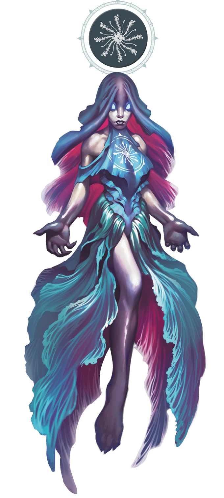
The leader of the Hungering, Nedir (NE, female Aether Naiad), whose ancestral home near Qoz's slumbering body has given her an affinity for the god. Nedir experiences an array of strange dreams that she considers prophecies. She often reaches out to those who feel the pull of destruction or despair, offering them to join the Hungering as a way to focus their pain on a new mission: bringing about Qoz's early ascension and helping the god remake the Expanse in its image. While Nedir has dreamt that this remaking will lead to the death of most of the Hungering, she does not particularly care. Nedir believes she is protecting the Hungering while working toward her goal of restoring Qoz's life and power.
The Hungering maintains a policy of strict secrecy about its plans and goals, guarding even the fact of its existence from most in the Aetherial Expanse. As Nedir teaches, Qoz's power is only for those who have been chosen, and the plans for Qoz's ascension will fail if they are widely known, as its enemies are rampant. Still, she is always on the lookout for potential new recruits, who often come to the Hungering through the Betterment Society, a self-improvement club that has a presence in both Port Majeure and Windcrown.
Once someone has become part of the Hungering, they are not called on for much. Individual members are generally told only to better their lives as best they can, and often provided with resources or connections that make their success that much easier. All that is asked in return is a single promise: if Nedir appears in their dreams with a message from Qoz, they must immediately obey her instructions without question or face deadly consequences.
The Betterment Society
The Betterment Society is focused on the Hungering's goal of self-improvement, as Qoz has no tolerance or sympathy for those who are content with mediocrity. The Society does most of its work improving those around it through Betterment Halls, large spaces in the center of populated areas that offer apprenticeship programs, lectures, and performances geared towards the specific needs of the locals.
In Port Majeure, for example, those who lost a sense of purpose once the truce with Ayris was announced were trained as apprentice shipbuilders by the famed Haras Arleno of the Arleno & Daughters Shipyard. Haras first turned to drink and then to the Hungering as he dealt with the loneliness of retirement.
In Windcrown, by contrast, those who have spent their days as merchants and traders gain physical prowess as fighters with the help of Bester's Ring, an underground fighting ring that counts two Hungering members among its fiercest opponents.
While most who participate in Betterment Society programs never encounter the Hungering, those who take to their programs with particular enthusiasm, single-mindedness, or selfishness are tapped by the Betterment Society for a visit from Nedir, who enters their dreams to “awaken the hunger within.”
Faction Goals
The Betterment Society believes that making society stronger is a way to honor the slumbering god Qoz. They use their programs to strengthen participants, while persuading them to value personal power and glory over communal success.
However, the Betterment Society's most important goal is identifying new members for the Hungering. Most Betterment Halls have private classes and mentoring that are offered to promising apprentices—these are used to observe and identify those who might agree with the Hungering's teachings and can be identified to Nedir. Often, the process of determining whether or not a recruit is well-suited for the Hungering is slow and laborious. An unsuccessful recruitment often ends not only in the target's death, but also their recruiter's.
The Aethered
The Hungering teaches that all creation comes partly from the act of destruction. The Aethered believe that they have found the perfect way to achieve this cycle in their own lives—consuming small quantities of aether each day to break the bonds of the body and eventually make it stronger. The Aethered believe that those who master the intake of aether receive the blessing of Qoz, permanently increasing their arcane abilities and giving them visions of the future that they can use to shape their fate. Even within the Hungering, many scoff at these beliefs, dismissing the visions of the Aethered as a form of aether delirium, but Nedir's tolerance of the group makes it unpopular to speak out against them directly.
While Nedir has yet to decide whether the consumption of aether actually brings the Aethered closer to Qoz, she has always seen their usefulness. The Aethered generally believe that aether in different parts of the Aetherial Expanse has different tastes and qualities, and will travel long distances in the search for the perfect sip. This makes them ideal messengers for the Hungering, as their ramblings are usually dismissed so readily by those around them that they could not reveal the group's secrets if they tried.
Faction Goals
The Aethered view the pursuit of aether as the most profound form of Qoz worship and their thirst for the substance, which tends to grow over time, as a form of hunger. Despite the quantity of aether present in the Aetherial Expanse, they each have their own theories about how, when, and from where to consume aether to receive Qoz's blessing, and often travel and change methods frequently to test these ideas. These trips and experiments are inspired by their visions after consuming aether, though whether these are caused by aether poisoning or are messages directly from the slumbering god is unknown.
“Every region has its flavors. In the Grey Fingers I note hints of despair, in Port Splendid, the aftertaste of ambition, and in Nuriel Reef, the scent of lost dreams.” —Wizard of the Waves
Chapter 4: Factions
Merfolk of the Constellation Isles
A whisper in the waves. A flash of iridescent motherpearl. Then a bloody shriek. In an instant, the deck of a ship is silenced and awash with blood, and just as quickly the perpetrators vanish beneath the waves again.
This tale is the fearful heart of a thousand rumors and darkly comic ballads told in taverns across the Aetherial Expanse. They speak of the bloody deeds of knife-toothed merfolk—the infamous Sistren of the Constellation Isles. As astral merfolk, their appearance is both humanoid and monstrous, with glassy eyes and wide fins around their neck, often pierced with a half dozen golden rings and coral spurs. Upon land, they walk on two legs, but in the sea, their skin shimmers and flesh fuses together into a long, sinuous tail.
Sailors across the Expanse tend to avoid astral merfolk, assuming they are all members of the Sistren—a deadly mistake. Other merfolk are proud to be honest seafarers—not pirates—and have their own capricious and deadly means of reprisal for such a slight. The true way to recognize a member of the Sistren of the Isles is the motherpearl amulet they wear as a badge of their sisterhood—an iridescent pendant decorated with the icon of their home, the Constellation Isles.
History of the Sistren
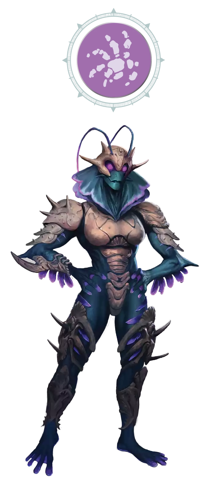
The origin of the Constellation Isles and their infamous Sistren is inexorably intertwined. Legends say that the Constellation Isles were once an island chain near the border between the Elemental Lands of Water and Earth, and in a time beyond memory, those islands and the merfolk who dwelt there tumbled through a realm-rift of incredible size. Those who survived awoke in the perpetual eventide of the Aetherial Expanse to find that their island home had fallen, island by island, into a new shape, pulverizing their coral palace and great works of art.
Alone and afraid, the merfolk huddled in what few ruins still remained above the surface of the aether; those who swam below soon fell ill, and succumbed to aether poisoning.
Founding Larmeath
The merfolk were saved when one of their number, a budding sorceress named Larméa, discovered that the aether had a voice—many voices, in fact, a whole chorus!—and that she could commune with them. Five hundred years before the present day, Larméa's attunement to the aether grew so great that she could command the aether itself to rise up, crystallize into aetherium, and to protect the merfolk from its poison. Legend bleeds into history here, and the chronicles assert that this magic divided the merfolk. Only a few who allowed themselves to be changed by Larméa's magic became the first astral merfolk. Over countless generations, their island home became known as Larmeath, and Larméa's bloodline became the Starbinder dynasty that co-rules it to this day.
The Schism of Scamallath
Most of the merfolk, however, refused to trust the young sorceress and her strange stories of spirits in the aether. They retreated, ailing, to another ruin-strewn island they called Scamallath. Their leaders were religious zealots who saw their exile as a divine punishment for the decadence of their old life. They came to worship a constellation-goddess they called the Empress—one which other sailors of the Expanse would call Asteth in the coming centuries. Their worship of the Empress granted their high priestesses miraculous powers, at the price of their undying devotion through ritual sacrifice. They too were changed into forms suited to the aether, though slowly over many generations.
The Mermaid's Tears
Years later, one curious princess of Larmeath, named Fianna, was enamored by the planar seafarers who sailed across the aether in small craft, and would trade trinkets of motherpearl and aetherium jewelry with the sailors. One day, a violent storm capsized one of these vessels Fianna had grown fond of, and the princess used the powers passed down through Larméa's bloodline to save the vessel, and formed a deep bond with one of the human women on board.
Fianna's kind heart brought war to her people. The sailors she saved were returning from a raid on Scamallath, and their ship was gorged with plunder. When the merfolk of Scamallath learned a princess of Larmeath had aided their attackers, they assumed that the pirates and their neighbors had conspired from the beginning, and beseeched the Empress to rain divine wrath upon Larmeath.
The Empress answered in the inscrutable way of gods, and eyewitness history holds that Fianna vanished in the middle of a courtly ball with her sailor companion, in front of dozens of guests. Today, the people of Larmeath believe the Empress banished Fianna to the deepest abyss of the Constellation Isles, where she was imprisoned and unable to surface ever again. She was sought by the merfolk of both Larmeath and Scamallath. Only the latter found her and jeered at her from beyond her divinely constructed prison. All she could do was weep bitter tears and curse the Scamallathans.
Her tears coalesced into aether pearls that glowed with Larméa's magic, becoming a necklace that she wore until she perished in the depths. And the magic they thrummed with was as bitter as the tears that bore them. Her curse lives on in these Mermaid's Tears; at one point, scavengers from Scamallath plucked the pearls from Fianna's corpse, and brought them before their great congregation as a symbol of the Empress's might and goodness—and exposed all the merfolk of Scamallath to Fianna's wrath.
All astral merfolk who beheld the tears were twisted into abominable forms called merrow. In a panic, they returned the tears to their resting place, but it was too late. The people of Scamallath were cursed to remain monstrous merrow for all eternity. And so, curses begat curses, and a cycle of enmity and bloodshed was born between Larmeath and Scamallath.
Birth of the Sistren
At the time of the schism, merfolk from both Larmeath and Scamallath split into a third faction. These women called themselves the Sistren of the Isles—a bond of kinship that would weather any political storms for the good of the Constellation Isles. Aetherbeasts and sailors from beyond the horizon were known to the merfolk even then, and the Sistren created a fortress on the island of Kesforth from which they could repel any invader.
It was a miracle that the Sistren held to their ideals in the wake of the Transformation of Scamallath. Nevertheless, as the Constellation Isles descended into endless skirmishes between the two factions, the Sistren could not bring themselves to interfere, lest their own fellowship fracture too. Instead, they turned their sights outward and built ships to sail the seas. As more and more flags were raised across the Expanse, only piracy—to claim ships, cannons, and aetherium, and to build a bloody, unassailable reputation—could keep their home safe from invaders.
Larmeath Merfolk
The astral merfolk of Larmeath are ruled by a matriarchal triumvirate called a trident that is representative of senior, middle, and young ages. The roles oversee merfolk history, present day concerns, and future plans, respectively.
Mira Starbinder (LN, female astral merfolkmage) is the eldest member of the trident and knows the location of an artifact called the Mermaid's Tears. Dillan Kelpcloak (LG, female astral merfolktidespeaker) is the middle-aged member of the trident, and Eydis Pearlsheen (CG, female astral merfolkspy) is the youngest member of the trident.
Faction Goals
Larmeath is one of the few stable city-states in the entire Aetherial Expanse, and the trident seeks to safeguard it against the predations of the merrow and internal dissent—at any cost.
Condemn Dissidents. Larmeath is a courtly society that embodies grace and elegance in the face of ruin and danger. The trident allows free expression to an extent, but criminals and dissidents who pose a threat to social harmony are magically cast into the same depths as Fianna, where they slowly, agonizingly transform into merrow through exposure to the Mermaid's Tears. In time, most merrow escape, but the experience leaves their memory of their incarceration hazy.
Cautious Traders. The trident has some interest in trade or bartering if it advances merfolk technology, but are outright aggressive against anyone they suspect would endanger their home, especially if they are near their city at the base of the Larmeath islands.
Protect the Mermaid's Tears. This relic is both a scourge upon Larmeath and an item of national pride. As a symbol of their greatest sorrow and of their hatred toward the merrow of Scamallath, they safeguard the location of the tears at all costs.
Scamallath Merrow
Scamallath is a leaderless island dotted with packs of astral merrow, known as shivers. They generally act like wild wolves—without an “alpha” or a leader. Their pack mentality overrides all. Sometimes, however, a leader emerges with ambition and cunning enough to unite the shivers.
Faction Goals
The astral merrow of Scamallath have suffered terribly at the hands of the Mermaid's Tears. Whether or not they deserve their fate is a matter for philosophers—the truth of the present is that they yearn to enact their vengeance upon those who have wronged them.
Prey Upon Intruders. At the edge of the Constellation Isles are the Soul Cages, a deadly reef filled with strange magic. The merrow have no qualms about hiding in this reef to prey upon any ship foolhardy enough to navigate it. No ship will trade with them, for they are feared even more than the merfolk, so what they need they must take.
Seek a Cure. The astral merrow have a strange, distant knowledge that they were once something else—something greater than the beasts they were cursed to become. They see their abandoned, crumbling temples to the Empress and ache with a bleak hunger to restore a past they never knew.
Sistren of the Isles
The Sistren on Kesforth are led by a half-merfolk woman in her fifties named Eldari (LG half-merfolk knight). She oversees Sistren operations within the Constellation Isles, and coordinates with other captains and fort commanders elsewhere in the Expanse.
Faction Goals
The Sistren of the Isles' official credo is to defend the Constellation Isles from all outside threats, and ensure that it always remains a home for the merfolk who, in mythic times, tumbled from the Land of Water—be they Larmeath or Scamallath.
For the sake of this ideal, they pursue these goals:
Carve a Bloody Legend. The Sistren don't crave violence. But their goal is to keep the Constellation Isles safe from conquest and plunder. So they wage a campaign of fear against the Expanse. Make the Constellation Isles' reputation too fearsome to ever attack seriously, while not earning so much ire as to make them a target of military reprisal.
Capture Ships. No forests grow on the Constellation Isles, and alien aetherflora are no good for shipbuilding. In order for the Sistren to raid their way across the Expanse, they need to capture ships—intact—for their own use. Small size and deadly power is best, so that they can strike and flee without fear of retaliation.
Chapter 4: Factions
The Kingdom of Ayris
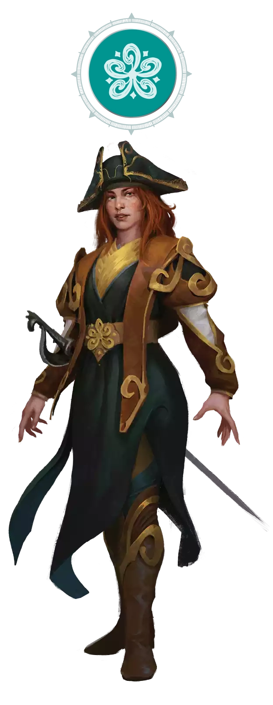
Halint is one of the many Material Realms, a world of tempestuous seas speckled with mountainous islands, and surrounded by a dozen moons. To the people of this realm, the twin arts of trade and seamanship were indispensable, lest one's isolated colony starve to death in the middle of an uncaring ocean.
The Great Mercantile Kingdom of the Isles of Ayris and the Southern Seas—or, simply, the Kingdom of Ayris—is one of this land's dominant powers, and the only power to have divined the existence of the Aetherial Expanse. This discovery, though first seen as a mere curiosity—or worse, a distraction from the true goal of mercantile dominance over the Southern Seas of Halint—has come to define the power of Ayris on their home world. Halincian people clamor for new “exotic” fruits and goods plundered from the Expanse, and Ayrissian mystics crave aetherium to enhance their powers of foresight, far-travel, and destruction. Though the Kingdom of Ayris presents a peaceful front, their greed cannot be slaked until they have drunk the Aetherial Expanse dry, and plundered every last ounce of aetherium from its isles.
On Halint, the Kingdom of Ayris's home territory is made of five mountainous islands. The Five Peaks of Ayris are all topped by elaborate mansions and are central to their national mythology. They're represented on the Ayrissian naval flag by five diamonds. These islands are called:
Ayre
Baten-Tarren
Valz
Nennepol
Luza
The Ayrissian Crown
The Kingdom of Ayris is ruled by a royal dynasty that stretches back five hundred years. Its history and purity of noble blood is a matter of immense pride to its rulers and to its people alike, for they see themselves as possessing the gods-gifted right to amass wealth and power.
The Opal Crown is worn by King Pietro Jaconno Ayris, Prince of Valz, Grand Duke of Nennepol, and High Tycoon of the Pelagic Exchange (LE, male human noble). All Ayrissian coinage bears his face or his regalia. Yet the king of Ayris is an old man. Though his business acumen is all but worshiped throughout Ayris and its holdings in the Aetherial Expanse, his glory days have long since passed. His wife and two children, each with extensive lists of cousins and children and half-children of their own, rule through him by suggestion and manipulation. His proclamations are impulsive, lacking the cunning that once exalted him, and it is all that his four hopeful successors can do to simultaneously curry his favor while manipulating him to advance their own goals within the Aetherial Expanse.
“Old wealth reserves you a seat at the table, but new wealth ensures that you keep it.” – Lord-Inheritor Phaedon
Faction Goals
The Ayrissian Crown is a faction at war with itself. The many potential successors to the throne smell the reek of death upon the aging king, and are amassing power to be best-prepared to claim the crown when it falls from his liver-spotted brow. The Kingdom of Ayris has one major goal shared among all its royal members, and represented by the current king and his greatest supporter, his daughter Naëlana. Its other goals are divergent, and a source of discord within the Ayrissian Merchant Fleet in the Expanse.
Grow Ayrissian Wealth. All members of this faction seek to fill the kingdom's coffers with enough gold to astound the imagination. The king's eldest daughter, Crown Princess Naëlana (LN, female humanfierce buccaneer), seeks to ensure that she inherits the throne, and believes that as long as she can afford to pay her soldiers, she can keep it. So long as the Opal Crown sits upon a royal head, wealth shall be its guiding star.
Shift Power to the Expanse. The king's youngest child, Lord-Inheritor Phaedon (CN, nonbinary humansquall caller), seeks to not only expand the reach of the kingdom, but to make Windcrown its seat of power. They see the Old World of Halint as backward and ailing, just like their father.
Dominate Halint. Two dozen distant, unlikely heirs to the Opal Crown have formed a coalition of their various armies and militias on Halint and are plotting a coup. Led by Prince-Captain Tammon d'Ayre, this secretive alliance of lesser heirs uses smugglers and ambitious traitors to the crown to subvert the goals of the king's children.
Windcrown
The port of Windcrown is the heart of Ayris's operations in the Aetherial Expanse. It is home not just to the kingdom's greatest shipyards, but also a planar gate that allows even the largest galleons swift access to Lavazza Harbor in the Ayrissian capital city of Vea Plumeria, on the island of Luza.
Governor-General Halle DiLuza
Governor-General Halle DiLuza (N, female human knife master) is a puppet who has cut her strings, and dances to a tune of her own composing. All official statements made by the Governor-General of Windcrown, the center of Ayrissian power on the Aetherial Expanse, begins by reasserting that the king (complete with all his titles) has personally passed down an order—whether or not the king has any knowledge of the order in question—and the king rarely, if ever, does.
She is in a secret relationship with the king's youngest child, Phaedon, which she began after learning of Phaedon's desire to defy royal tradition and make Windcrown the kingdom's new capital. As a self-made, lowborn woman who only found opportunity for advancement in the wildlands of the Aetherial Expanse, she longs to tear down the current Ayrissian order. In her eyes, its ancient noble houses are filled with opulent graybeards and young opportunists too busy assassinating each other to ever truly rule.
Nasty rumors abound within Windcrown Keep of the relationship between the governor and the young lord-inheritor. Even Windcrown is not safe from the so-called Curse of Ayris—that a secret made is a secret spilled. All but the closest of DiLuza's subordinates see her as a callow social climber, but those close to her know that she genuinely admires and cares for Phaedon, and that she's a true believer in their dream.
The Stardogs
Pirates are a dime a dozen on the starlit waves of the Aetherial Expanse. A rare breed, however, are freebooters backed by royal gold and led by royal blood. Prince-Captain Tammon d'Ayre is the scion of a minor noble house that lusts for the Opal Crown of Ayris—even though he is so distantly related to the king that two dozen would-be heirs must first die to open a path for Tammon's ascension.
First within the court of Ayris, and now within the halls of Windcrown, Prince Tammon leads a coalition of ambitious lordlings to eliminate all obstacles between them and the crown. They call themselves the Stardogs. Plenty of no-name pirates with no understanding of Tammon's true nature are a part of his crew, but his most valued officers are all members of his nation's aristocracy—and he hopes that any who stand in his way will die in the line of duty before he has to get his hands dirty removing them from the line of succession himself.
The Stardogs meet each month in a secret room of the Wolfhound Tavern in Windcrown to plot their next move. They work in secret to support the goals of the governor-general and her forces, but also to enrich themselves at the same time. Prince Tammon is aware of a plot in Windcrown to assassinate the king and his eldest daughter—and he intends to capitalize on that moment by assassinating Lord-Inheritor Phaedon and leveraging the crisis of succession to become king himself, and make all of his supporters extremely wealthy.
The Stardogs' “fleet” is made up of three ships. The fearsome galleon called the Dire Wolf is captained by Prince Tammon. The other two ships are the Unleashed, a frigate, and the Bloodhound, a brigantine.
Prince-Captain Tammon d'Ayre
Prince Tammon will betray whomever he must to win the throne. Two dozen claimants to the throne stand between him and his succession. And while his good looks and winning presence have turned a number of them into friends sworn to serve him and step aside should a path to the throne open, he trusts none of them to abide by their word.
As a teenager, Prince Tammon began a construction business with a sizeable loan from his father, the Low King of the Mount of Ayre, and before long, he turned a profit. But workaday business ventures bored Tammon. He was blessed with looks, athleticism, and cunning, and drew allies to him like flies to honey. Though he was far removed from true power, he often heard the goddess Asteth urge him in dreams to seize his destiny, and saw himself with the Opal Crown upon his head through a curtain of divine flames.
He knew what this recurring vision meant: claim the throne or die trying—and damn anyone who dared withhold from him his destiny.
“This Kingdom yearns for a new ruler, and who better to rule than someone who knows how to seize coin with wit and strength? Who better than a Pirate-King?” —Prince-Captain Tammon d’Ayre
Chapter 4: Factions
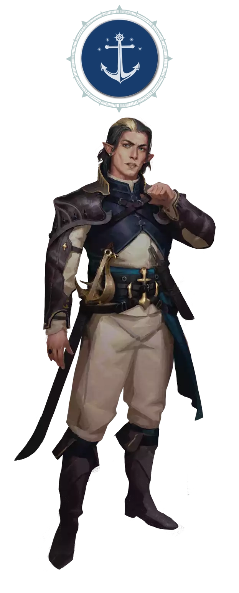
The Karelagne Empire
The Karelagne Empire is the dominant political and military force in the world of Tholus. While once one of several city-states fighting for dominance over a shared mainland, Karel gained the upper hand over its rivals after its technomagescreated a stable portal to the Aetherial Expanse and gave the nation direct and exclusive access to aetherium.
The Karelagne Empire is a military democracy ruled by a Sovereign General, who leads all aspects of Karelagne life and policy. The Sovereign General uses a firm grip to keep the Empire's provinces in line, as regional factions seek to reclaim power lost with Karel's ascension. Karelagne strongholds exist in every province, securing the Empire's control over the mainland, and advanced magitech vehicles allow the Empire's outnumbered personnel to dominate these rivals. Despite this, radical factions maintain armed resistance in remote areas, often indiscriminately striking at military and civilian targets.
Thus far, Karel's activities in the Aetherial Expanse have been unaffected by its home world regional dissention. The Empire relies on its Aetherian Navy to protect its Astral Realm assets and ensure the steady flow of aetherium back to Tholus continues. However, the Empire's secretive “Agency” suspects rebel groups are targeting imperial assets on the Silvery Seas. Because the Empire has grown increasingly hungry for its aetherium shipments, any disruptions to these deliveries could hinder the Empire's ability to respond to provincial rebel activity.
The Aetherian Navy
The Karelagne military is truly formidable. Since the first astral explorer returned with aetherium crystals from the Aetherial Expanse, military technomages have engineered wondrous armaments, engines, and supporting technologies severely outclassing any rival on its home world.
The Karelagne navy is particularly impressive. Although most Karelian vessels are still made of wood, sail, and rope, they can be produced faster and in far greater quantities than vessels of the Empire's rivals. Its most powerful sailing ships are iron-hulled behemoths with smoke-belching chimneys, branching scrying arrays, and terrible cannons that can hurl devastating blasts of elemental energy.
Naval technomages have begun experimenting with submersibles, though most are prototypes yet to see active service. Surprisingly, airship development has progressed more rapidly, with models ranging from small, two-person skyhorses to massive, daunting war zeppelins, though few of these devices have made it to the Aetherial Expanse because of unresolved and poorly understood arcane problems moving these vehicles through the realm-gate.
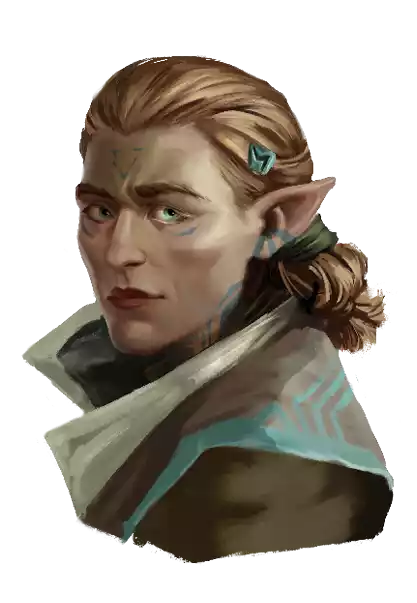
Faction Goals
Karel's Aetherial Navy has a clear mandate to safeguard Karelagne settlements, mining activities, and imperial ships traversing the aetherial waters. Viceroy Caturix uses all resources at his disposal to aggressively ensure nothing threatens Karelagne interests.
Protect Aetherium. Aetherium is now the lifeblood of the Karelagne Empire. Its massive military is dependent on these magical crystals as is the home world's growing dependance on aetherium powered magitech devices. Imperial ships aggressively respond to any and all threats, preferring to shoot first and ask questions later.
Eliminate Piracy. Pirates from the Isle of Drakes are viewed as a pestilence that needs to be eradicated. The Empire regularly issues bounties to capture or eliminate known pirates and to a lesser extent, sponsors privateers to do the same. Naval captains have been known to liberally interpret piracy to justify attacks of Ayrissian flagged vessels, though the Viceroy is careful to ensure these attacks are infrequent to not threaten the tenuous ceasefire they have with the kingdom.
Admiral Abrexta Kathinel
Lawful evil, female infernismageThe harsh, steel-edged voice of the silver-eyed Claw of the Viceroy echoes through the metallic halls of the Karelagne flagship, the INS Thunderchild, like the report of a rifle. She captains her ship with ruthless efficiency, and has led it on three successful arrays of drills in preparation for its debut. Her snarl brings even the most belligerent sailors in line, for her reputation for hurling defiant crew overboard is known throughout both the Empire and the Expanse.
Though Kathinel is an efficient taskmaster, rumor has it her draconian methods have driven many soldiers assigned to theThunderchildto defect and take up a life of piracy, rather than serve aboard her ship. Kathinel cares little for defecting conscripts; her only goal is to prove herself the strongest being in the Expanse. Her origins are a secret to all but herself and her unsettling commander, Viceroy Caturix, but something in her mysterious past drives her forward as if all the devils of the Hells were at her heels.
Quest Hook: Below Seas
Shern Terrix (LE, male humanknight) is a new Keralagne officer raising through the naval ranks. He has volunteered to captain a prototype submersible to recover valuables from a Drake ship that sunk somewhere off the coast of the Monsterra Isles. Few are willing to join him on the maiden voyage, prompting the captain to hire the characters and offer them a share of whatever is found.
Viceroy Caturix the Silver-Handed
Lawful evil, male Human{half}-elfarchmage
Rumors abound of the cruelty of Caturix the Silver- Handed, Viceroy of Port Majeure. Rooms fall silent when he enters, a pallid specter draped in midnight-blue robes and festooned with arcane charms and golden body jewelry. His sharp Karelagne military uniform is barely visible through the enveloping darkness of his arcane accoutrements. Adventurers foolish enough to make light of him are treated to a swift and remorseless demonstration of his power. He bears a metallic prosthetic forearm that appears to be made of swirling quicksilver magically attached to his right elbow. It obeys his commands perfectly and can transform into any shape he can imagine, including Tier 4 weaponry.
Caturix is the embodiment of the Karelagne Empire's dominating hunger. His flagship, the INS Thunderchild, is an extension of his will to conquer. Though he longs to lead wars of conquest himself, his administrative duties in Port Majeure occupy much of his time, and he delegates command of the Thunderchild to his most trusted admiral, Abrexta Kathinel.
Caturix is obsessed with the legends of Astrium and the ancient astral titans that ruled it. Now the Empire's war with Ayris has ended, he considers it the Imperial Navy's main purpose to scout the Expanse for undiscovered magical artifacts or technology. Recently, Caturix has unearthed ancient records of a magical device that allowed the titans of Astrium to harness the aether's full power, though what exactly this means has been lost to time. Caturix has allocated huge sums of Karelagne funds to develop subaetherial vessels to scour the depths of the Expanse for this device. Karelagnetechnomages are feverishly working to craft these submersibles.
The Sovereign General
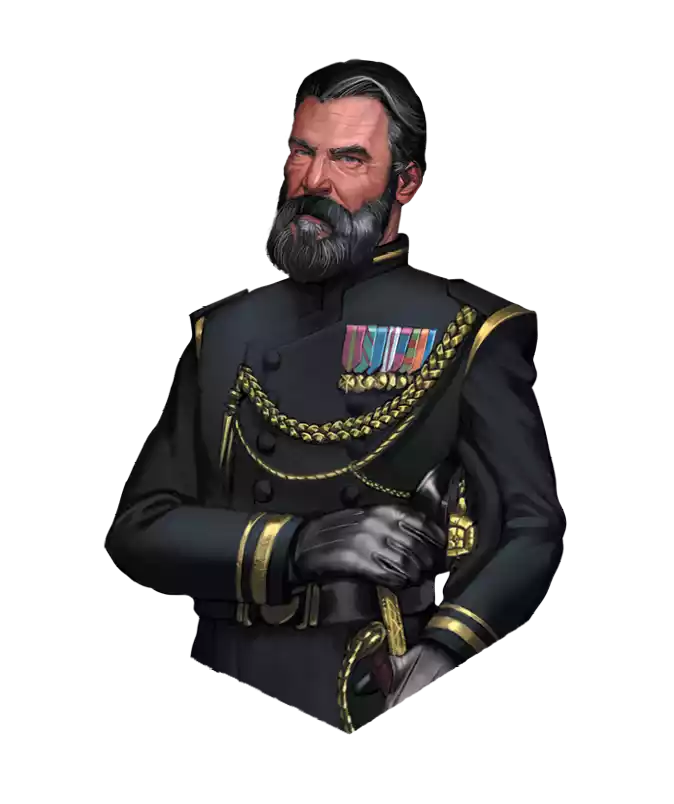
Domas Brandel is only the third Sovereign General since the Empire's founding, rising to power after a technological disaster blamed on his predecessor devastated large areas of the Empire. He has ruled successfully for nearly 20 years, and is currently running unopposed in the coming year's elections, though recent rumblings by dissident groups around the Empire are somewhat affecting his image.
Brandel wields his vast political power with skill, expertly outmaneuvering rivals to maintain his grip on power. Hushed whispers suggest that Brandel is an off-world imposter who maintains his control thanks to secretive criminal groups who do his bidding. This is partly true, as he directs the Agency, a secretive organization designed to protect Karel from threats within and without.
The Agency
The Agency is an indispensable facet of the Karelagne Empire, countering threats that cannot be addressed by brute military force alone. Most operations are covert affairs, kept secret from even high-ranking officials. The Sovereign General is particularly interested in ensuring secrecy to avoid public scrutiny, and to keep his popularity within the Empire high.
Personnel within the Agency are kept compartmentalized using a clandestine cell system, whereby agents work in small, autonomous groups receiving directives from a few trusted administrators. Thus, if an individual is apprehended, their ability to divulge identities of other agents is likewise limited.
The scale of the Agency's operations is unclear, with perhaps even its highest levels unaware of the organization's full extent. What is clear is that significant resources are made available for agent operations. Its operatives are provided with the latest magitech equipment, some developed by the Agency's own technomages, and others reverse-engineered from devices ‘acquired' in the field. Recently, agents have undertaken missions in the Aetherial Expanse, targeting both Ayrissian and Karelagne targets viewed as a threat to the Empire.
Faction Goals
The Sovereign General is focused on maintaining his grip on power, whatever the cost.
Eliminate Threats. Domas Brandel uses his significant resources to eliminate rivals and threats to his continued power with ruthless efficiency. He will happily give orders to sink a fully manned Karelagne galleon should he learn a rival is among its passengers.
Acquire Magitech. The Sovereign General fully recognizes that the Karelagne Empire's strength is due in no small part to its aetherium-powered magitech advancements. He regularly sponsors missions to acquire new advances that can bolster the Empire's power. Brandel continues to secretly fund arcane portal research, despite an Empire-wide ban on these activities that was put into place after the Folly Disaster that created a monstrous-filled wasteland at the center of the Empire. It is believed Brandel looks to open gates to other Material Realms for the Empire to conquer.
Agent Blacksword
Neutral evil, male humanmaster agent
The Sovereign General has assigned Agent Blacksword, one of the Agency's top assassins, to operate out of Port Kaylo. He is a non-descript individual, using a variety of aliases, and expertly blending into ship crews as an unranked sailor to discretely eliminate his targets. He often provokes crew uprisings to make it easier to kill his target in the ensuing shipboard chaos. Several Karelagne officers with questionable loyalty have died at the end of his blade thanks to this tactic.
Agent Blacksword wears a magitech pendant beneath his shirt that obfuscate his identity from magical divination.
Brightbook
Opening a gateway to the Aetherial Expanse changed everything for Karel. Its turbulent aether seas, both poisonous and magical, revealed wondrous vistas and magical resources never seen on their home world of Tholus. Probably most consequential to Karel's transformation into the Karelagne Empire was the acquisition of aetherium crystal, which enabled the development of magitech: arcane-powered devices that revolutionized Karel's armaments and unleashed a creative torrent of magical engineering.
Technomages are the creative talents behind magitech. They view restrictions on their efforts as short-sighted and a failure to accept the realities that magitech is the future of the arcane arts.
To be a skilled technomage, one needs to understand not only the principles of theoretical arcane knowledge, but of the practicalities of engineering, materials, and manufacturing. Numerous schools of magitech engineering have opened across the Empire thanks to an insatiable demand for the latest and greatest magitech creations.
Because aetherium is costly and hard to obtain, most magitech is invented by the Empire and to a lesser extent, large businesses. The occasional rich entrepreneur or eccentric inventor has been known to create impressive magitech innovations, but these are often hoarded rather than shared with the citizenry.
Disgruntled Creators
Many technomages are increasingly frustrated by the Empire's approach to magitech development. New advancements are usually absconded by the military for Imperial armaments. Independent technomages are often sanctioned for not supporting Imperial efforts, while particularly skilled individuals often disappear from public view, squirreled away by the military to remote labs.
A handful of influential magitech experts have quietly organized themselves into a group called Brightbook. From their perspective, technomages ushered in the Empire's rise and they should be the ones ruling it. They are opposed to the Sovereign General's tight-fisted governance, and seek to create a new order where they—magitech's creators—define a glorious future for the Empire. But first, they must overthrow the Sovereign General.
Work In Secret
Thus far, few are aware of Brightbook's existence. Its founders have been careful to stay secret, knowing any Imperial response would be swift and harsh. Brightbook has established a handful of hidden meeting spaces in Imperial cities, but increasingly see the Aetherial Expanse as an ideal location to base their efforts, away from the Sovereign General's many eyes. Although the organization is still small, they have several powerful imperial figures counted among their ranks, and have made steady progress to connect with like-minded individuals throughout the Empire.
Faction Goals
Brightbook disapproves of the Empire's current governance, but this doesn't mean they are altruistic. The dozen or so individuals directing Brightbook's activities have not yet agreed on a consistent vision for the future. However, there is a consensus that the current military rule overseen by the Sovereign General must be removed. Brightbook is positioned to fill the resulting leadership vacuum.
Seek Allies. As the organization is still in its formative stages, members seek to develop a network of like-minded individuals. Several are also happy to use enemies of the Empire to achieve their objectives, fully expecting to jettison assets when they are no longer useful. Positioning technomages to lead the Empire is all that matters.
Infiltrate the Chain of Command. Brightbook members recognize it will take time to build an organization strong enough to depose the Sovereign General. They intend to leverage the Empire's military might against itself, looking to insinuate members in military leadership roles or find ways to gain leverage over existing commanders. Brightbook currently counts several naval captains under their influence.
Talence Aurabinder
Neutral, male humantechnomage
An up-and-coming professor at the University of Karel, Talence Aurabinder has built a scholarly reputation on his understanding of channeling energy from aetherium crystals. He has thus far avoided being ‘acquired' by the military, but worries that one day he will be put to work in a remote Imperial research center.
Talence was introduced to Brightbook by Velaasa Sorn, a popular Imperial socialite known for throwing her fortune at projects that strike her fancy.
Thanks to Velaasa's introductions, Talence has quietly met with several Ayrissian scholars who are equally disgruntled with their own standing. They have discussed the possibility of a new dominion on the Aetherial Expanse controlled by arcane artificers with both the Karelagne Empire and the Kingdom of Ayris under its control. They see the independent-minded folk of the Drakes as a potential tool to achieving this vision.
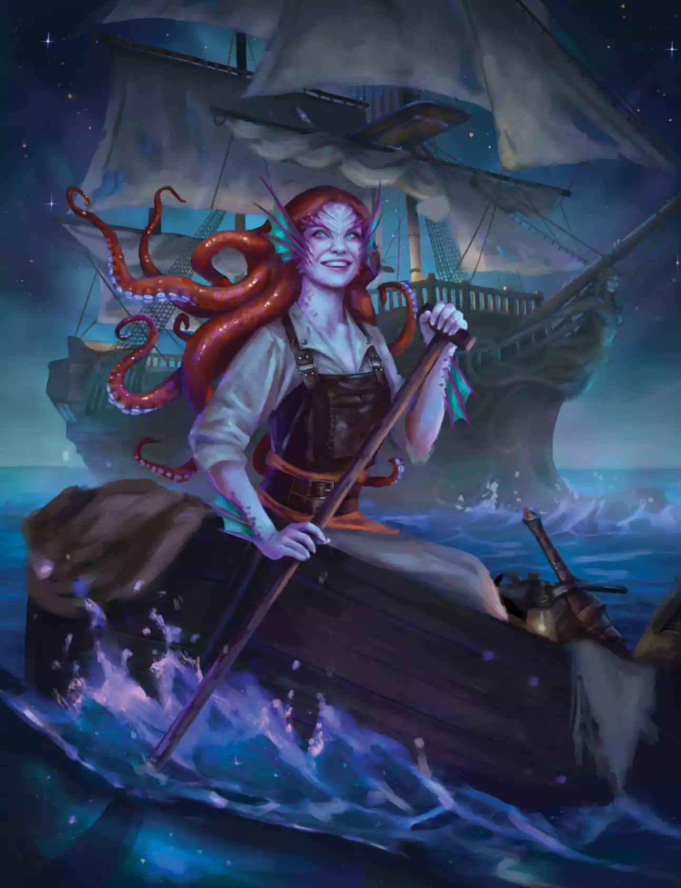
Chapter 5: Character Creation
Chapter 5 Character Creation
“Shining stars, shimmering aether, and nerves of steel give the aether its metaphorical and actual gravitas, not unlike me, your most humble servant.” —Jactans, notorious astral emergent swashbuckler
Those who sail on the Aether Sea are far from monoliths. Different creatures from countless worlds find their ways to the Aetherial Expanse, either accidentally or for their own reasons. While this setting contains a few unique species of its own, this pliable universe is available to all, and largely welcoming. Whether the other creatures there are welcoming is another story!
Chapter 5: Character Creation
Characters in the Aetherial Expanse
The Aetherial Expanse offers players new rules for creating characters to explore the world and enhance roleplay. Keep in mind, because of its unique location, you can create any character you want from a variety of locales with your GM's blessing.
Building Your Character
Use the following guidelines and normal Daggerheart character-building rules to create a character for an Aetherial Expanse campaign.
Choose a Class
Any typical Daggerheart class can be found in the Aetherial Expanse, as can any specialized classes that the GM and players decide.
The dangers of the aether mean that adaptation is important to survival. The magically inclined learn to use the power of aether to their advantage. Others use elemental forces that leak into the realm. Some just work to maximize their strength.
Choose an Ancestry
Although the Aetherial Expanse lies within the Astral Realm, its scores of planar gates allow people from countless realms and other worlds to find their way to this magical place. The wildly independent privateers that ply these enchanted waters care little about where a crewmember comes from, so long as they pull their weight and help the crew.
Characters adventuring in the Aetherial Expanse can be members of any ancestry, be they the standard species from the Daggerheart rules or other Daggerheart supplements.
Additionally, two new ancestries designed for use in the Aetherial Expanse are described herein: astral emergents and astral merfolk (see “New Ancestries” later in this chapter).
Since the Aetherial Expanse is a realm between realms, it's entirely possible a magical mishap could have drawn in creatures from a species unique to any world into the Aetherial Expanse.
“Stick a disparate lot on a ship bound for uncharted Aetherial waters and you’ll end up with one of two results: A tightknit crew who would die for one another…or a splintered ship with dead sailors.” —Selenya, Velstarrón Dockmaster
Describe Your Character
There are many ways that individuals can find themselves on the Astral Realm. Some come to explore the vast expanse, others to seek potential fortune in the largely unexplored aether, and even more just to get away from a realm that no longer serves them.
The Aetherial Expanse offers players six new background experiences that can ground their character in the world (or give them their sea legs). Additionally, this setting also offers Seafarer Advancement represented by specialized officer experiences that provide additional benefits beyond those associated with an experience in a typical Daggerheart game. These new experiences are detailed in Chapter 7 and Chapter 6: Seafarer Advancement.
Seafarer Advancement Mechanics
An Aetherial Expanse campaign could also include the Seafarer Advancement, discussed in detail in Chapter 6: Seafarer Advancement. Seafarer Advancement is an Aetherial Expanse advancement mechanic that encourages players to become part of a ship's crew and gain features (and potentially boons) as they travel and work on an aether-faring vessel. This mechanic also integrates new navel rules and opens opportunities for ship combat and crew teamwork.
Chapter 5: Character Creation
New Ancestries
The Aetherial Expanse is home to two new ancestries: the astral emergent and astral merfolk. Using these ancestries invites players to submerge themselves and their characters into the unique flavor of an Aetherial Expanse campaign.
Astral Emergent
You were born from the thoughts and dreams of mortal beings. Your consciousness was once a string of thoughts and desires lost within the aether's vastness. Then, your peaceful existence as thought alone was disturbed when a body crashed into the aether. This body was torn, broken, and dying—or dead already. Your essence surged into this shattered vessel, and you willed the aether to heal its flaws.
Not long after, you emerged from the waves and marveled at your new, physical form. It was a body, one that had limbs, senses, and lifeblood: things you could only dream of as a flickering, aetherial thought. The body you emerged from the astral waves with was once rent asunder but is now healed; the former wounds glowing with the light of stars and nebulae.
Your features resemble those of the creature who died beneath the aetherial waves, but your thoughts and feelings are wholly new, fashioned from the collective consciousness of the cosmos.
Astral Emergent Ancestry Features
Reborn: When playing an astral emergent character, you should choose the first trait of another Ancestry whose body type your character resembles. This ties you to the creature who died beneath the aetherial waves. Unlike the body of your origin, however, you do not require air, food, or drink, and when you sleep or fall unconscious, your form flickers and wavers, becoming translucent and revealing the constellation of lights that make up your bones.
Aetherdip: You do not suffer the effects of aetherpoisoning. Instead, when you come into contact with aether, it tries to draw you back into its embrace. When you end any Move in contact with aether you must make a Presence reaction roll difficulty 10 or take direct magic damage.
While you are in contact with the Aether, you may attempt to draw aether into yourself: make a Presence Roll; if you roll with Hope, you clear one Hit Point; if you roll with Fear, you take direct magic damage. You may spend three points of Hope to avoid the action roll and simply clear one Hit Point. If you take this Move, you do not suffer the normal effects for ending your Move in contact with aether.
Astral Merfolk
The merfolk of the Aetherial Expanse make their home in the Constellation Isles, where they're locked in eternal enmity with their age-old foes, the astral merrow. The merfolk of the Constellation Isles tell tales of tumbling into this world of eternal, starlit twilight long ago. And though many of their kind died—or worse, mutated into merrow—over time, they became at home in the aether.
The magic of the Aetherial Expanse has made their skin bright with shining colors, giving them the uncommon ability to shapechange their long tail fins into legs with webbed feet, which allow them to walk comfortably on land. Though astral merfolk are most at home in the aether and try to steer clear of the greed of land dwellers, the allure of those who walk on land and sail on wooden ships often proves too great to resist.
The astral merfolk have built a society in the Constellation Isles around the isle of Larmeath. They try to live a peaceful life despite the constant predation of their fallen kin, the merrow. Nevertheless, some merfolk dream of more than a placid life in Larmeath disrupted by vicious merrow attacks. Longing for more from their charmed life, these merfolk seek out pirate ships, and theglory and danger those ships chase.
Astral Merfolk Ancestry Features
Aetheric Adaptation: You can breathe and move naturally underwater and in aether, and are immune to the effects of aether poisoning.
Slipstream: When you make an action roll while submerged in aether, you can mark a point of Stress to move to anywhere you could plausibly swim within Far range.
Automaton (Clank)
When the Karelagne Empire discovered the portal to the Aetherial Expanse, everything changed on their homeworld. One of the most profound changes was the unlocking of the potential for aether and aetherium to allow for the creation of magitech technology.
The technology brought about by magitech revolutionized many aspects of life in the Empire, from manufacturing to warfare. And it also created a new type of being: the automaton.
The first automatons were fairly simple beings, powered by aetherium and built for mundane, specific tasks. As years passed, however, these constructed beings began to display varying levels of sentience. Recently, as more and more of these beings were created and put to work in Karel, some have taken on personalities as complex and nuanced as any organic creature. And most importantly, they have begun to desire more than the tasks they were created to perform.
Those who were too vocal or vehement in their demands caused unrest, and even panic, in some communities. One of the best ways to ensure an automaton rebellion never happened was to assign those constructs to work in the Aetherial Expanse. However, in doing so, they also gave these creatures more of an opportunity to leave the employ of the Empire and seek their own destinies.
Nearly all automatons are given a designation when created. Standard imperial identification begins with AU (for aetherium unit), followed by a hyphen and another abbreviation for their profession (e.g., M for mechanic, L for laborer, etc.), and a unique three-digit identification number. Automations who rebel against their makers sometimes take other names or designations, while others keep their old designations as a reminder of what their lives used to be like.
Most automatons have a roughly humanoid shape, but are comprised of inorganic materials and powered by an aetherium battery. More advanced versions might have swappable parts to support performing different tasks.
Automaton Ancestry Features
Clank
Chapter 5: Character Creation
Customizing Ancestry
“Surprised I can talk to beasts? You shouldn't be. I grew up on Maladell Island. The druids there taught me that and so much more.” —Kunis, Aesphodel Crewmember
Because of the wondrous nature of the Aetherial Expanse, humanoids from countless realms and practically any ancestry can find their way to its magical seas. So long as you're an effective crewmember, most pirates sailing the Silver Seas care little whether you're a hulking, rhinoceros-headed humanoid or descended from elven nobility. This remarkable array of potential ancestries often results in characters from the Aetherial Expanse being of mixed ancestry.
In addition to selecting your ancestry traits, you can also decide the look and form of your character's body. An elf from one world may look different than an elf from another, so the player can have leeway in deciding what their elf character looks like.
A few limits are set by the GM using common sense, but otherwise, your physical features are entirely up to you, and you can engage in any amount of cosmetic tinkering with your character you'd like. Even if your starting point is one of the Aetherial Expanse ancestries, you can shape and alter the standard physical form of any of those ancestries. However, your body's physical appearance can't reproduce the effect of any feature you do not have.
Languages
The languages of the Aetherial Expanse and connected worlds may be different. Take the starting languages of the world you are from, and work with the GM to see if your character would know additional languages based on their backstory and experiences.
Chapter 6: Seafarer Advancement
Chapter 7 Seafarer Advancement
“Now listen here, wet-back. Either ya does as I says, or by Qoz, I'll fling ya ta the Aether. I ain't no cap'n, but here on deck, ya answer to lill'o me.” —Smiling Jim, Boatswain on the Flirt
With its vast seas of aether, the Aetherial Expanse calls on players to use sailing ships to explore its magical waves.
This chapter details optional new character advancement features you can add to your games when the player characters become officers of a sailing ship. These features integrate with the naval rules presented in part 4 of this book.
This chapter begins by outlining the base officer station option and is followed by an optional expanded officer option that gives additional features to characters as they gain seafaring experience. Each officer station is detailed with its base and expanded features. Finally, the chapter finishes with a list of boons that can be added to both PCs and NPCs alike.
Chapter 6: Seafarer Advancement
Officer Station Ranks
If you plan to run naval-themed campaigns where the player characters engage in dramatic ship-to-ship battles while navigating the high seas, these optional Officer Station rules help to integrate the characters into their ship's operations.
When the players explore the Aetherial Expanse on a sailing ship, they will likely assign themselves to their vessel's officer stations. Ten officer stations are detailed in the following sections.
Base Implementation
Anyone can fill any of a ship's officer stations, but individuals with that station as an Background Experience offer significant advantages to the vessel's operation.
Using the base officer station implementation, new player characters begin play with one officer station as a Background Experience. This bonus Experience is granted in addition to the normal two granted at character creation. For example, a character might pick Bounty Hunter, Affable, and First Mate as experiences at character creation.
Narratively, this bonus experience can represent natural skill or be attributed to a character's class, community, or even some other Experience. Ultimately, these Experiences support the type of story the player wants to tell with their character. For instance, if a character is of noble birth in the Ayrissian Kingdom, they may have already received formal education as a ship captain.
In addition to the normal method of increasing your bonus to an Experience via character progression, player characters can also gain "ranks" (or a bonus to their officer Experiences) in the same way that NPCs can—by receiving a promotion after surviving a journey or ship combat. The players are free to discuss who they think should receive promotion, and the GM is encouraged to listen to them, but ultimately, the decision lies with the ship's captain.
In additional to increasing the bonus that one rolls when they spend a Hope while performing an action or reaction roll related to a station, each officer station has a base feature available to anyone with a an Experience in that officer station. Additional ranks (or a higher bonus) in a station typically increase the effectiveness of this feature.
Maximum Ranks
The number of ranks a character has in a single officer station cannot exceed five. Stated alternatively, an officer station chosen as an Experience cannot gain a bonus higher than five. Regardless of the number of additional ranks a player character may have gained through promotion or other means, the bonus that a character can gain in any single officer station chosen as an Experience cannot exceed a value based on their character tier, as shown on the table below.
Character Level
Character Tier
Maximum Experience Bonus
1
1
2
2-4
2
3
5-7
3
4
8-10
4
5
Optional Implementation: Expanded Officer Ranks
Player characters assigned to a ship station with that role as an Experience gain a basic benefit that improves with the bonus to that Experience that they possess. That bonus can also be described as a "rank" in that Experience. You may wish to include these optional rules to give player characters additional features as they increase their ranks in an officer station.
The Expanded Officer Ranks provide features at each of the 5 ranks for each station. These features include station-specific abilities for both combat and non-combat ship activities, and an opportunity to earn flavorful boons.
Each non-boon rank is denoted as either a “Ship Combat” feature that comes into play during such situations, “Voyage” for features that are applicable outside of ship combat, and “Mastery” for the final rank, which varies based on station, and sometimes provides multiple benefits.
Progression through these ranks follows the rules outlined with the standard Officer Station Rank rules, with characters having a total number of ranks equal to the bonus accrued through class advancement plus any additional ranks granted through gameplay achievements, but not exceeding the maximum rank set by their character tier.
As the maximum Officer Station rank remains at 5 and is also limited by character tier, characters granted extra ranks through gameplay may need to spend those ranks on learning additional stations and gaining boons. While there is no limit to how many boons a single character can gain by progressing through different station ranks, the overabundance of the same boon on a ship provides diminishing returns for characters adventuring together (see Boons).
Achievement-based progression is optional and can be highly thematic. Example achievements that could warrant such advancement are listed with each officer station. These achievements are by no means exhaustive and should serve as inspiration rather than the only criteria for station advancement. It should also be noted that most achievements listed can't be achieved individually–they require teamwork to succeed!
Chapter 6: Seafarer Advancement
Officer Stations
The ten officer stations are described below. The first five stations (captain, first mate, quartermaster, navigator, and helmsperson) are vital, and vessels lacking an individual assigned to these stations function poorly, with the specifics left for GMs to determine as appropriate for each situation.
Captain
Without captain, a crew is aimless and ineffective, and no ship would willingly set sail without one. A good captain needs to be level-headed to know when to fight, when to flee, and when to parley.
Base Captain Feature (Voyage). When the ship's mettle pool resets, you can spend a point of Hope to grant it a number of additional dice equal to your captain rank (see “Mettle”).
Expanded Features
Rank 2. Boon. Choose one boon from the boon list.
Rank 3. Inspirational Command (Ship Combat).You can expend 1 mettle die to grant one of the ship's officers inspiration. You can use this feature a number of times equal to your captain rank, and you can regain all uses with a downtime move taken while docked at a port.
Rank 4. Boon. Choose one boon from the boon list.
Rank 5. Master Commander (Mastery). Other than when your mettle pool is reset, whenever you would gain mettle, you gain 1 additional mettle die. For example, if you would gain 2 mettle dice from an action, you gain 1 additional mettle die from that action, netting 3 mettle dice from that action.
Captain Achievements
Captains earn their promotions through the respect of the crew, the reputation of their ship, and extraordinary events at sea. Some suggestions for achievements as a captain are:
Force a ship with a larger mettle pool to surrender.
Increase your ship's reputation by 10.
Defeat a sea creature of a higher tier.
First Mate
A clear chain of command is vital for the daily operation of any vessel. As second in command, the first mate performs the duties of the captain when needed, disciplines the crew, and leads boarding parties.
Base First Mate Feature (Ship Combat). When you roll your mettle pool during a boarding action, you can spend a Hope to reroll a number of mettle dice equal to your first mate rank (see Boarding Action).
Expanded Features
Rank 2. Boon. Choose one boon from the boon list.
Rank 3. Leadership at Sea (Voyage). When outside of ship combat, choose one officer other than yourself or the captain. That officer regains one use of an expended Officer Station feature that otherwise requires a downtime move while docked in port. Once you use this feature, you must use a downtime move while docked at a port to regain it.
Rank 4. Boon. Choose one boon from the boon list.
Rank 5. A Captain's Mettle (Mastery). Whenever you would lose more than 1 mettle die, you can reduce the amount lost by 1 (to a minimum of 1).
First Mate Achievements
First mates earn promotions by leading boarding actions, overseeing the crew, and fulfilling the captain's duties when required. Some suggestions for achievements as a first mate are:
Successfully both lead and repel a boarding party.
Earn reputation while assigned to the captain's station.
Have three officers – other than the captain– earn achievements.
Quartermaster
The quartermaster keeps a watchful eye over the ship's supplies, ensuring the vessel has enough food and water for travel, and tracks rations to discourage theft. On pirate vessels, the quartermaster also divides the loot and plays an important leadership role alongside the captain and first mate, acting as a tiebreaker if the captain and first mate disagree on something important.
Base Quartermaster Feature (Voyage). At the end of a travel check, choose 1 type of ship supply (grub, grog, or gear) expended during that check. You can spend a Hope to regain 1 unit of the selected supply. You can use this ability a number of times equal to your quartermaster rank. You can refresh all uses of this feature with a downtime move while docked at a port.
Expanded Features
Rank 2. Boon. Choose one boon from the boon list.
Rank 3. Secret Stash (Ship Combat). During ship combat, you can produce a secret reserve of special ammunition. The ammunition can be of any type listed on the special ammunition table found in Chapter 9. You produce a quantity of ammunition whose total value equals 100 gp times your quartermaster rank. This is also the maximum size of your Secret Stash. Items in your stash must be expended as they're produced – they cannot be added to the ship's stores. Once you expend your stash for the first time, it does not automatically refill. Instead, it refills when you make ship-related purchases at port. Every 5 gp spent on regular ship purchases refills 1 gp of your stash. You're a quartermaster – keep a ledger!
Rank 4.Boon. Choose one boon from the boon list.
Rank 5. Acquisitions Specialist (Mastery). You can negotiate a substantial discount on a single line item of ship equipment or ship upgrade purchased at a port stop. For the purposes of this feature, a single line item refers to buying multiples of the same item (i.e. 10 of the same canon). Make a Roll a Presence action roll. The discount percentage is equal to the result of your check.
Quartermaster's Achievements
Quartermasters earn their promotions by managing supplies and engaging in negotiations. Some suggestions for achievements as a quartermaster are:
Save the ship a total of at least 1,000 gp on hiring pirates.
Have ammo produced from your Secret Stash score a dramatic hit during combat.
Allow your ship to complete an extra journey leg without purchasing supplies.
Navigator
A good navigator is worth their weight in gold, as charting a reliable course through the Aetherial Expanse requires years of experience and a good working knowledge of current wind routes.
Navigators with magical talents are called Wayfinders, and they can use their spellcasting trait instead of Instinct when making Navigate action rolls for their ship.
Base Navigator Feature (Voyage). By spending a Hope, you can reroll a failed Navigate action roll made for your ship. You can do this a number of times equal to your navigator rank, but no more than once per travel check (see Travel). You can regain all uses of this feature with a downtime move used while your ship is docked at a port.
Expanded Features
Rank 2. Boon. Choose one boon from the boon list.
Rank 3. Planned Momentum (Ship Combat). During ship combat, when your ship is in irons, you can spend a Hope to move your ship 2 squares instead of 1. You can use this feature once per Short Rest.
Rank 4. Boon. Choose one boon from the boon list.
Rank 5. Aethersense (Mastery). If you would roll on a Travel Complication table, you can spend a Hope to roll twice and encounter the more beneficial complication. Alternatively, when you succeed on a Navigate action roll during a journey, you may choose to still encounter one of the ships from the Travel Complication table. The GM determines the type of ship. Regardless of which option of this feature you use, you must use a downtime move while docked at a port to regain it.
Navigator's Achievements
Navigators earn their promotions through skilled navigation – including locating important landmarks and other ships. Some suggestions for achievements as a navigator are:
Complete a multiple-leg journey without any navigation-related complications.
Track down a ship you're searching for while at sea.
Discover a lost or mythical location.
Helmsperson
A ship is lost without a steady hand on the wheel. A good helmsperson must be calm under pressure and be able to guide their vessel through danger with little margin for error.
Base Helmsperson Feature (Ship Combat). Once per round during ship combat, you can spend a Hope to move your ship 1 square for free during the Movement Phase. You can do this a number of times equal to your helmsperson rank. You can refresh all uses of this ability with a short rest.
Expanded Features
Rank 2. Boon. Choose one boon from the boon list.
Rank 3. Dramatic Maneuver (Voyage). When you fail to avoid an environmental hazard during a pursuit, you can spend a Hope to reroll your action or reaction roll, and you must take the new result. Once you use this feature, you must use a downtime move while docked at a port to regain its use.
Rank 4.Boon. Choose one boon from the boon list.
Rank 5. Handles Like a Dream (Mastery). When at the helm of a Medium or Huge ship at the start of combat, you can improve your ship's mobility to that of the next smaller ship (a Huge ship becomes balanced, while a Medium ship becomes high.) This benefit lasts until the end of ship combat, and you must use a downtime move while docked at a port to regain its use. While at the helm of a small ship, there is no longer a limit to the number of times you can use your base helmsperson feature.
Helmsperson's Achievements
Helmspersons earn their promotions by performing ship maneuvers and managing the ship's speed. Some suggestions for achievements as a helmsperson are:
Catch or outrun another ship during a pursuit.
Defeat another ship in combat after successfully “Crossing the T.”
Move the ship 3 more squares during a combat turn than is granted by its base speed.
Boatswain
The boatswain (or ‘bosun') is usually a sailor with extensive experience who has climbed the ranks to oversee the ship's general operations. This means they oversee the quality and maintenance of the sails, ropes, and so on. The boatswain teaches and directs the rest of the crew when working—swabbing the deck, setting sails, and dropping anchor.
If the boatswain station is empty, your ship loses a point of speed.
Base Boatswain Feature (Ship Combat). When firefighting (see Firefighting), you can spend a point of Hope to automatically direct your crew to put out a number of fires equal to your boatswain's rank.
Expanded Features
Rank 2. Boon. Choose one boon from the boon list.
Rank 3. Lower Deck Taskmaster (Voyage). The exemplary maintenance of the ship results in faster sailing and easier repairs. While not in combat, your ship's travel speed increases by 1 knot. This increase does not affect your combat or chase speed. Additionally, once per day, you can spend a point of Hope to cause your ship to clear 1 additional Hit Point whenever you spend gear to repair damage. While not in port, you can use this feature a number of times equal to your rank, regaining all uses with a downtime move while you are docked at a port.
Rank 4. Boon. Choose one boon from the boon list.
Rank 5. Double-Time (Mastery). You can lose up to 10% (rounded down) of your unranked crew before suffering the associated penalties listed for running either below Maximum Crew or below Skeleton Crew numbers (see Casualties).
Boatswain's Achievements
Boatswains earn their promotions when they lead by example and push unranked crew to perform at their best. Some suggestions for achievements as a boatswain are:
Put out 5 fires during the same turn in combat.
Win a ship combat without losing any unranked crew.
Cook
Life out on the aether is hard enough at the best of times. A crew routinely eating nothing but hardtack won't stick their neck out for you.
If you don't have a cook, you must apply a −1 penalty to each mettle die whenever you roll them.
Rank 1. Cook Station (Voyage). When you complete a travel check during a journey, you can spend a Hope to reduce the amount of grub your crew needs to consume by your cook's rank (see Spending Supplies).
Expanded Features
Rank 2. Boon. Choose one boon from the boon list.
Rank 3. Clap o'Thunder (Ship Combat). At the start of a Boarding Action during ship combat, you can expend 1 point of Hope and grog to take the maximum result on one of your ship's mettle dice (do not roll that die). You can use this feature once per short rest.
Rank 4.Boon. Choose one boon from the boon list.
Rank 5. Go Fish (Mastery). You can make just about any creature's meat edible. When you recover a freshly killed body of a living creature, you can convert that body into grub. Exactly how much grub is produced depends on the size of the creature as determined by the GM.
(Note: I have not found a good way to express the following rule in Daggerheart terms, but the following D&D 5e rules will be my guide: You gain 1 grub from a Medium creature's body, 2 grub from a Large creature, 4 grub from a Huge creature, and 25 grub from a Gargantuan creature. When it comes to smaller creatures, you need eight Tiny creatures or two Small creatures to create 1 grub.For swarms, use the size of the swarm.)
Cook's Achievements
Cooks earn their promotions by making the most of their grub and grog, and keeping the crew fed! Some suggestions for achievements as a cook are:
Allow the ship to extend its journey by an extra leg without acquiring additional grub or grog.
Use your Clap o'Thunder to help turn the tide of a battle through the additional mettle it provides.
Master Gunner
The master gunner is usually a gunner who has risen through the ranks and is now in charge of teaching unranked crew how to load, aim, and fire the ship's weapons. The master gunner is also responsible for checking the quality and quantity of ammunition, and ensuring that ship weapons are kept in good condition.
If the master gunner station is empty, you cannot use unique ammunition.
Rank 1. Master Gunner Station (Ship Combat). When you fire weapons during the Attack Phase, the Master Gunner can spend a point of Hope to reroll a number of misses equal to their rank of the master gunner, whether you have the weather gage token from a target or not. If you do have the weather gage, this ability stacks with its effects. In other words, you can reroll a miss (because you have the weather gage), and if that reroll is also a miss, you can reroll a second time (because you have a master gunner aboard).
Expanded Features
Rank 2. Boon. Choose one boon from the boon list.
Rank 3. Shoot the Breeze (Voyage). In your experience, most problems can be solved with cannons. When your ship encounters a non-combat hazard while at sea (see Hazards), you can devise a way to assist in circumventing it using cannons. This might include shooting through thick fog to increase visibility or scaring off wildlife threatening the ship. Your actions reduce the difficulty associated with overcoming the obstacle by 2. Your GM may choose an alternative benefit of similar power. Once used, you must use a downtime move while docked at a port to regain this features use.
Rank 4. Boon. Choose one boon from the boon list.
Rank 5. Fire Everything! (Mastery). By spending a point of Hope, you can reduce the target number for all your cannons to hit by 1 (to a minimum of 2) for the remainder of your ship's attacks during an Attack Phase.
Master Gunner's Achievements
Master gunners earn their promotions by making things go boom – ideally, other ships! Some suggestions for master gunner achievements are:
Hit with all cannons during a single volley in combat.
Defeat another ship in combat after only a single round of combat.
Shipwright
Sometimes referred to as a carpenter, a shipwright is never without work. Wear and tear is common, and the aether is rife with hazards waiting to shred a ship's hull to ribbons.
If the shipwright station is empty, you can't make repairs at sea, and you must dock at a port to use gear to restore hit points to your ship (see Ship Repair”).
Rank 1. Shipwright Station (Voyage). When docked at port, you can use a downtime move to have your ship immediately clear a number of marked Hit Points equal to your shipwright's rank without spending any gear. You can't use this feature again until seven days have passed or you've completed at least one travel check.
Expanded Features
Rank 2. Boon. Choose one boon from the boon list.
Rank 3. Maintenance at Sea (Voyage). Once per travel check, when you spend at least 1 hour at sea without engaging in Ship Combat, you can spent a point of Hope to cause your ship to clear a number of marked Hit Points equal to your shipwright's rank without spending any gear.
Rank 4. Boon. Choose one boon from the boon list.
Rank 5. Repurpose (Mastery). When you recover gear from another ship or another source at sea, you gain 1 additional gear for every 3 gear recovered. Additionally, you can scrap a ship upgrade or a ship weapon to gain 1 gear per every 200 gp of that item's cost. Once you scrap an item in this manner, you can't do so again until you spend a downtime move while docked at a port to regain this ability.
Shipwright's Achievements
Shipwrights earn their promotions by keeping the ship in tip-top shape and affecting repairs. Some suggestions for achievements as a shipwright are:
Repair the ship from 2 or fewer hit points to full without stopping at a port.
Escaping capture by making temporary repairs to a ship whose hit points drop to 0 during combat.
Surgeon
Boats are dangerous places to live and work, even if they never see combat. It's the surgeon's job to keep the crew up and moving during a journey.
If the surgeon station is empty, stricken officers and unranked casualties do not automatically recover after ship combat.
Rank 1. Surgeon Station (Ship Combat). During the Status Phase of ship combat, you can spend a point of Hope to cancel a number of casualties caused by enemy cannon fire equal to your surgeon's rank each round.
Expanded Features
Rank 2. Boon. Choose one boon from the boon list.
Rank 3. Daily Exercise Routine (Voyage). When you complete a travel check without engaging in Ship Combat (as a result of a complication, for example), you can expend 1 point of Hope and grub to conduct exercises among the unranked crew, making them more nimble and likely to avoid attacks. During your next ship combat, when members of your unranked crew would be instantly killed – such as by a hullbuster – they are instead considered a standard casualty (and can be recovered). The number of crew affected by this feature equals your surgeon rank and does not stack from multiple journey legs. If unused, the daily exercise benefits expire once the ship docks at a port.
Rank 4. Boon. Choose one boon from the boon list.
Rank 5. Who Lives and Who Dies (Mastery). During ship combat, when an officer would take a second casualty (see Casualties), you can choose to redirect that casualty to another living officer that has already taken a casualty during this combat. You can use this feature once per short rest.
Surgeon's Achievements
Surgeons earn their promotions by keeping the crew alive and well. Some suggestions for achievements as a surgeon are:
During the same ship battle, cancel total injuries equal to half your ship's maximum crew.
Save an officer from certain death.
Chapter 6: Seafarer Advancement
Boons
Boons are special capabilities that experienced seafarers acquire during their travels.
If multiple officers have the same boon, their effects do not stack. If a boon has a limited number of uses, each officer can use it when it's not already in effect.
Boon Listing
Boons are presented in alphabetical order. This is not considered an exhaustive list. NPCs may occasionally have unique boons that are not available to players!
Aether Assassin
You are skilled at disguising your ship for stealth operations. When your ship makes a Finesse action roll to approach another ship stealthily, you can spend a point of Stress to grant your ship advantage on the roll.
Aether Poisoning Resistance
When suffering from aether poisoning, you can arrest the condition from advancing to its next stage until after your party's next Long Rest by spending a Hope. Until cured, you can resist advancing each poisoning stage a number of times equal to your Hope slots. See “Aether Poisoning”.
Avast Me Hearties!
Once per day during a boarding action, you can spend a Hope to turn three dice in your mettle pool into d6s when you roll them.
Beast Chaser
When your ship engages in combat with a creature at sea, the first two Hit Points the ship would mark from that creature (or creatures) damage during combat are ignored. Additionally, during the first round of combat, you and all characters of your choice on your ship have advantage on any reaction rolls against being knocked down or overboard.
Blow the Man Down!
Once per long rest, during traditional combat occurring as a result of a ship boarding action, you can initiate a Tag Team roll by spending a single point of Stress instead of three points of Hope.
Butcher of the Seas
During one round of ship combat, when your ship deals damage that results in rolling casualties, you can spend a Hope to reroll any number of 1s rolled on the casualty d4s and take the new result. Once you use this boon, you can't use it again until you take a downtime move while docked at a port to regain its use.
Cannonward Shield
Only someone with a Spellcasting trait can take this Boon. When hit by cannon fire, you can spend a point of Hope to roll 1d4 and cancel that many hits. Once you use this boon, you can't use it again until after you take a long rest.
Champion of the Unknown
When your ship gains a reputation for assisting a far-flung community or crew with a total reputation of 10 or less, it gains 1 additional point of reputation. Your ship can gain this bonus only once per community.
Do-or-die
When your ship runs out of mettle dice, you can spend a point of Hope to roll 1d4 and gain that many mettle dice. Once you use this boon, you can't use it again until after completing a long rest.
Fire in the Hole!
The first hit produced by your cannons during a ship combat encounter automatically starts a fire.
Grog Waterer
Your ship only requires one grog for every two travel legs.
Intimidating Demeanor
When you roll an action roll and succeed with fear during a traditional combat occurring aboard a ship, you can spend a point of Hope to avoid passing the spotlight to the GM.
Lucky Looter
You can spend a point of Hope to increase the prize money from a captured ship by 50 percent. This point of Hope must be spent before the prize money is rolled.
Merciful Demeanor
At the end of the Status Phase of ship combat, if the opposing ship has only 1 mettle die remaining, you can spend a point of Hope to force them to roll that die. On a roll of 1 or 2, the ship surrenders if narratively appropriate. Ships crewed by undead or crews who would never surrender are unaffected. Alternatively, the GM may trigger a surrender earlier when appropriate. This boon is ignored if your ship used any special ammunition other than Chainshot or Hullbusters during the battle.
Never Say Die
Once per long rest, when a crew member you can see on the same ship or within Close range marks their last Hit Point slot, you can spend a point of Hope to choose to have them drop to 1 fewer marked Hit Points than their maximum number of Hit Point slots instead.
Pack Rat
You keep your own supplies, “just in case.” Anytime while at sea, you can spend a point of Hope to spontaneously produce 1 each of grub, grog, and gear. Once you use this boon, you must spend a downtime move while docked at a port to regain its use.
Recruiter
When you make a Presence action roll to Haggle while hiring a pirate, you can add 1d4 to that check. Additionally, at the GM's discretion, you may have advantage on social interactions with any members of the crew that you helped recruit (such as during a time of mutiny).
Rigrunner
When your ship gains 2 or more points of reputation as a result of a single action under a False Flag, you can spend a Hope to assign 1 point of that reputation to your true flag. Once you use this boon, you must spend a downtime move while docked at a port to regain its use.
Sharp Spotter
This character has advantage when rolling Instinct action rolls to notice hidden hazards beneath the aether or ships trying to approach stealthily, and can spend a point of Hope prior to rolling such an action roll to automatically spot another ship on the horizon before they spot you. If an adversary on an opposing ship possesses this boon and spends a point of Fear on it, then the two spotters would simultaneously see each other's ships.
Skilled Mentor
If you are downed or otherwise leave your station during Ship Combat, an unranked crewmember (so long as at least 1 is alive) maintains your station as if they had 1 rank in it. If another officer takes over the station and has fewer ranks than you, they gain a temporary +1 to their rank in that station until the end of combat. This bonus cannot grant boons, but it can grant other abilities conferred by rank. Once you use this boon, you must spend a downtime move while docked at a port to regain its use.
Tactical Genius
During ship combat, if 1 additional square of movement would allow your ship to “Cross the T,” you can spend a point of Hope to move your ship 1 additional square into that position. Once you use this boon, you must spend a downtime move while docked at a port to regain its use.
Wind-Kissed
You can spend a point of Hope to move your ship an extra square this turn in ship combat or pursuit. Once you use this boon, you can't use it again until completing a long rest.
Chapter 7: Experiences
Chapter 7 Experiences
“I've heard rich merchants speak of their days on Halint, spent relaxing in the sun just watching the clouds float by. But I ain't never had that luxury and there ain't no sunshine here neither.” —Mugs Bilgebreath, Windcrown Street Urchin
Chapter 7: Experiences
Backgrounds of the Expanse
Many from Mortal Realms, particularly those from Karel or Ayris, view the Aetherial Expanse as a new frontier filled with riches waiting to be harvested by those with an entrepreneurial spirit. This has brought scores of people to the Expanse to seek their fortune. Some have arrived to escape hardship and start a new life on the magical seas.
These new arrivals may not always be welcomed by those who call the Expanse their home. Many do not look kindly on outsiders seeking fortunes in their figurative backyard. Others view the Silvery Seas as something wondrous and worthy of protection from those who'd despoil its beauteous enchantment.
This setting provides an opportunity for characters from nearly any setting, frame, realm, or world to seek their fortune, find their fate, or escape a difficult life. You can choose almost any background as an experience for this campaign setting, provided your GM approves your selection.
This chapter presents six new background experiences designed for the Aetherial Expanse that you can select when creating your characters for this campaign setting.
Ayrissian Magnate
“Only the truly powerful and refined are worthy adversaries to test my business acumen. Everyone else is but an obstacle to my mercantile greatness.” —Maqarth di Nennepol, Windcrown Merchant
You are a skilled and cunning merchant or privateer of the Kingdom of Ayris. Ayrisian Magnate's are often good at judging people's intentions, especially during trade talks, and are known for their silver tongue when it comes to brokering a deal. As avid hunters of aetherium crystals, they tend to be trained jewelers. They typically serve as first mate's or quartermasters.
Ayrisian Magnate's have a reputation as a shrewd merchants and negotiators that precedes them. They often exploit legal loopholes and apply pressure during intense diplomatic trade negotiations. Additionally, they are also known for using their skills to mediate disputes and foster diplomatic ties. You use finely honed trading skills to further Ayris's power through commerce and tact, knowing that each situation may require a delicate touch.
The merchants of the Aetherial Expanse are often the lifeblood of the seas. They are usually skilled diplomats who can pivot their persona to suit different situations. They are at home on the seas as much as they are in trade negotiations, and tend to view others based on their perceived wealth and prosperity.
Aetherial Mystic
“Keeping your eyes only upon the heavens will make you stumble upon the earth.” —Gin-deh-li, Ascetic Disciple
You believe the Elemental Lands are extensions of the gods, and the aether is their lifeblood. Aetherial Mystic's tend to know a lot about nature and religion. When serving on ships, they often make excellent navigators and helmspersons. To truly understand the heavens, these mystics believe we must sail their seas and experience all its glory.
Mystics sail the liminal seas between reality. Their devotion to the Aetherial Expanse has manifested as a deep connection to the Elemental Lands, which resolves itself in the form of increased capability when resolving action rolls that manipulate earth, air, fire, or water. Aetherial Mystics come from many walks of life; however, most tend to be curious, seeking adventure to find enlightenment in the mortal realms, and exploring the unknown in search of divine knowledge. To the mystic, the journey matters as much as the destination, if not more.
Expanse Immigrant
“No one's ever going to drive me from my home again.” —Gabord Green, New Resident of Velstarrón Island
You've arrived in the Expanse hoping for a better life. You may have come to seek fortunes you never had, opportunities you were never given, or a peace you never knew. Expanse Immigrant's tend to be wary individuals who are particularly aware of their surroundings, for they have had to survive the worst of circumstance. Survival drives them to learn to live and build off the resources of the Expanse. they tend to make good boatswains or cooks. Regardless of the reason, you've endured hardship to reach the Expanse, and intend to make this wondrous place your home.
If you choose to play an immigrant, then you are someone who has overcome many challenges, endured a difficult journey to reach the Aetherial Expanse. You have learned how to survive under the most difficult conditions and started to build a life for yourself beside the Silvery Seas. You have a gift for gathering food and water, and you understand environmental threats.
Expanse Immigrants are tough folk who don’t give up easily. Many are stoic, having endured numerous hardships, though others have relied on their cheery dispositions to pull through tough times. They’re inclined to be protective of things they care about, as most have lost things of value to reach the Expanse.
Karelagne Naval Magewright
“Few things are as beautiful as a ship under full sail, breaking through the aether.” —Morgan Fairchance, Captain of the INS Glory
You have spent your life in service to the glory and power of the Karelagne Navy, utilizing your technical and magical prowess to build advanced aether vehicles to ensure nothing stands against the Empire's might. Karelagne Naval Magewrights tend to be knowledgeable about the workings of arcana and skilled in the practice of deductive reasoning. Many tinker with magitech, often for the purpose of improving aether ships, and they tend to know how to use the ships they help build. Years of service in the Karelagne Navy have enabled you to swiftly diagnose and mend vehicles. You fix problems on the fly, using your instincts and experience to guide you, especially while under duress. Karelange Naval Magewright's tend to make excellent shipwrights and boatswains.
Naval Magewrights are the lifeblood of a vehicle, a necessary component to keep sailing. They use a combination of magic and technology to patch things together quickly in emergencies. Many are steadfast and responsible, while others reflect the unpredictable nature of the sea with personalities as chaotic as their repair methods.
Mage Craft Dissident
“Fools sing their songs of lament and prose, unaware their downfall is of their own making.” —Zheng Ironsliver, Whispered Wind Operative
Mage Craft Dissidents are spellcasters who have cast off the crutch of technology, believing its usage will lead to civilization's downfall. Utilizing the aether by drinking tiny amounts of the poisonous liquid, these spellcasters enter what they call “wraith dreams” - vivid hallucinations believed to be eerie premonitions of the future, often involving impending doom and disaster.
If you choose to play a Mage Craft Dissident, you are the type of person who knows a lot about the Arcane and can sense things that others miss by imbibing small quantities of aether. When doing as a downtime move to "Work on a Project," you can induce a state of lucid dreaming called wraith dreams, which gift you with visions of the future or context about the past that helps to explain the present. However, if you drink more than a mouthful of aether, you are still subject to the harmful effects of aether poisoning.
Mage Craft Dissidents are secretive by design, often thought fools or deemed too dangerous. Generally, being followers of time, they seek to hide in plain sight, waiting for their visions to be proven right.
Starlight Sea Raider
“Those who sail the Starlight Seas are a motley bunch, as varied as individual blades of grass. Some beautiful, some grotesque, and some indescribable. You should fear them all.” —Tobias Renas, Retired Pirate
You learned that to survive, you had to carve out your destiny and embrace a life of chaos. Your life is hard but one in which you thrive. You have become skilled at intimidation, information extraction, and enforcement. This talent extends both to gaining information from the interrogation of individuals and the analysis of environments. Picking locks and disabling traps has become second nature. Your ability to instill fear and obedience makes you an invaluable asset to your crew, for people like you make excellent boatswains and master gunners.
Aetherial Sea Raiders are people of extremes. If you choose to play one, your fearsome reputation will grant you special insight into other’s weaknesses. You are adept at investigating and intimidating captives for the purpose of gather information through fear and menace. Starlight Sea Raiders like you also often find solace in the sea from their tumultuous lives, feeding a drive for adventure as they sail across the aetherial waters.
Chapter 8: Items and Artifice
Chapter 8 Items and Artifice
“You don't need to show me how it works. I know what I'm doing.”
—Last words of the pirate Toerik Boscrown
The inherent magic infusing the Aetherial Expanse has led to wonderous creations by the civilizations that have plundered its riches. In addition, lost within the depths of the Silvery Seas and scattered across the Expanse's many isles are forgotten magical treasures left by planar travelers, or deposited by the uncounted ephemeral gates that open onto this region of the Astral Realm.
This chapter offers a sampling of the remarkable items adventurers can discover as they journey across the Aetherial Expanse.
Chapter 8: Items and Artifice
Magitech
It is inarguable that the discovery of the Aetherial Expanse led to the rise of both the Kingdom of Ayris and the Karelagne Empire. Each nation learned to unlock the magical potential of aetherium, crafting devices, powering arcane engines, and allowing each to become their home world's dominant power. Magitech is the collective term used to describe the fruits of this arcane engineering.
Magic Items and Magitech
From a game mechanic standpoint, there's no practical difference between a standard magic item and a magitech item. Narratively, these items are quite different, with magitech created by arcane crafters skilled at extracting magical energy from aetherium crystals, often driving clunky, mechanical contraptions. In contrast, typical magic items are directly infused with magic from traditional arcane, divine, or natural sources.
Karelagne Magitech
The discovery of aetherium crystals led the Karelagne military to establish arcane schools of learning focused on exploiting the new resource. Their technomages unleashed a creative torrent of magical engineering, revolutionizing armaments and spurring the development of devices that radically changed their home world.
Most Karelagne technomages are methodical in their approach to magitech creation, systematically studying aetherium through observation and experimentation. Though closely guarded by the Empire, technomages review magitech innovations with their peers, allowing for a rapid dissemination of advancements across the Empire.
Ayrissian Magitech
Ayrissian alacrity scholars have developed their own arcane artifice traditions. In contrast to the clinical methodology used by Karelagne technomages, Ayrissian artificers are more esoteric and mystical in their approach. The kingdom's competitive, mercantile nature limits the speed with which discoveries are shared.
Groups of artificers covertly pursue magitech advancements, often hiding their discoveries beneath layers of mystical cyphers and impenetrable occult jargon. Most Ayrissians recognize that a new magitech discovery could lead to a river of riches, provided no one else learns the secret.
Chapter 8: Items and Artifice
Firearms
The roar of cannon fire is a feared sound easily recognized by most residents of the Aetherial Expanse.
Black Powder
Most ships sailing the Aetherial Expanse rely upon gunpowder for their cannon's ammunition. Gunpowder is a common but closely guarded commodity, without which most ships are defenseless against the near-constant threat of pirate attack.
Personal firearms, though still relatively rare, are increasingly seen in the hands of ship crews and local militias across the Expanse.
Black Powder, Bomb
These hand-sized explosives are devastating in close-quarters combat on the decks of a ship. As a move, you can ignite the gunpowder bomb and throw it at a point within Close range. Make a Finesse Roll against all creatures within Melee range of the point of impact, dealing d6 physical damage using your proficiency.
Longer Fuse. Most bombs have a short fuse, but a longer fuse can be fashioned to delay the explosion. When throwing the weapon, instead of having it explode immediately, you can start a countdown timer with a value of one to four. Every time any character takes a Move, reduce the countdown timer by one. When the countdown timer hits zero, the bomb explodes, targeting all creatures in Melee range of it with the Finesse Roll made when throwing it.
Cost. 1 bag and 5 handfuls of gold
Black Powder, Bomb
Black Powder, Flask
Creatures armed with black powder firearms, such as pistols or muskets, typically carry a supply of black powder on their person in a small waterproof container. These containers can come in a variety of forms such as a leather pouch or a hollowed-out animal horn. If a character does not possess a black powder flask, then when a black powder weapon with the reloading quality rolls a one, the black powder weapon cannot be fired again. At the end of any encounter in which a black powder weapon's reloading quality causes a character to mark a point of Stress, they must roll 1d6. On a roll of a one, a black powder flask is consumed.
If a full personal flask of gunpowder is ignited, it explodes. Creatures within Very Close range of the explosion must make an Agility reaction roll (13). On a failure, creatures take 3d6 physical damage. Targets who succeed mark one point of Stress instead. The explosion ignites any flammable objects in the area that aren’t worn or carried.
A character can roll a Knowledge action roll difficulty 13 + 1 per countdown timer desired to create a delayed timer before the explosion occurs. On a success, set a countdown timer with a value equal to the total modifier applied to this difficulty roll. After any creature makes a move, reduce that timer by one. When the timer reaches zero, the flask will explode. If the Knowledge Roll fails, consider setting a secret timer using the Optional Rule: Bomb Timing Uncertainty.
Cost. 3-4 handfuls of gold, or 3 handfuls and 5 pieces of gold
Black Powder, Flask
Black Powder, Keg
Ships normally store black powder for their guns in kegs, which are usually fashioned from water-resistant wooden containers. A ship must have a one black powder keg per black powder cannon it wishes to fire. After a ship to ship combat in which a ship fires its cannons at least once, roll 1d6. On a one, a keg is consumed.
If a full keg of gunpowder is ignited, it explodes. Creatures within Very Close range of the explosion must make an Agility reaction roll (13). On a failure, the creature takes 7d6 physical damage. Targets who succeed take half damage. The explosion ignites any flammable objects in the area that aren’t worn or carried.
A character can roll a Knowledge action roll difficulty 13 + 1 per countdown timer desired to create a delayed timer before the explosion occurs. On a success, set a countdown timer with a value equal to the total modifier applied to this difficulty roll. After any creature makes a move, reduce that timer by one. When the timer reaches zero, the keg will explode. If the Knowledge Roll fails, consider setting a secret timer using the Optional Rule: Bomb Timing Uncertainty.
Cost. 2 bags and 5 handfuls of gold
Black Powder, Keg
Optional Rule: Bomb Timing Uncertainty
When a character fashions a longer fuse for a gunpowder bomb, if they rolled lower than 13 on their Finesse Roll, the GM secretly rolls 1d6 and consults the Bomb Timing Error table.
Bomb Timing Error
1
The fuse smolders for the intended duration but then the bomb fails to detonate.
2
The bomb explodes immediately after the fuse is lit, centered on the thrower, who is always considered to be "hit" by the blast. If their Evasion is 13 or higher, they only take half damage.
3
The bomb's countdown until explosion is one.
4
The bomb's countdown until explosion is two.
5
The bomb's countdown until explosion is three.
6
The bomb's countdown until explosion is four.
Bomb Timing Error
Creature Evasion. The object's Evasion is equal to the Evasion of the creature that possesses it.
Creature Cover. The creature may use its body to protect the object. Attacks against the object have disadvantage. Attacks that miss objects protected in this way will hit the creature protecting it instead.
Creature Reaction Roll. If an attack roll is enough to hit the object's Evasion, the creature wielding the object could make an Agility reaction roll, with the difficulty equal to the attack roll. On a success, the creature moves the object out of the way, and the attack misses. On a failure, the object is hit by the attack.
Quest Hook: A Blessed Bloom
While the characters are in a town, they are called out to visit a local gunsmith named Pir. He's heard rumours of a bright, glowing blue flower growing at the top of a cliffside accessible past a dense forest. The flower's appearance is a clear sign of a rich vein of aetherium crystal, and Pir's always wanted to expand his wares to include magitech firearms. He makes an offer to the characters—if they can acquire the aetherium crystals from this new source, he'll create an aether pistol for that half-price.
Magitech Firearms
One of the Karelagne Empire's earliest magitech developments was the creation of aetherium-powered firearms that unleash bursts of arcane force to damage their targets. This weaponry is challenging to scale for use on ships, forcing most of the Karelagne navy to rely on standard black powder cannons.
Personal-sized weapons, such as aether pistols and aetherlocks, are expensive and hard to find, as are the refined crystals that power them. Their rapid rate of fire compared to gunpowder weapons makes them highly sought after.
Replacement Crystals
Most magitech firearms come with standard-sized crystals made from refined aetherium already installed. Replacement crystals cost at least 2-3 handfuls of gold (or 2 handfuls and 5 pieces of gold) each, though unscrupulous merchants charge significantly more when given the opportunity.
Replacement Cyrstal
Weapon Properties as GM Moves
When using aetherium-powered or black powder weapons, if you fail an action roll with Fear, the GM can use their spotlight to spend a fear and complicate the scene in a way tied to the fickle nature of such technologies. For example, perhaps an aetherlock's aetherium crystal crumbles mid fight, forcing you to spend a Stress to reload it with a spare Replacement Cyrstal before you can fire the weapon again. Alternatively, perhaps a black powder weapon jams, forcing you to make a Finesse action roll as a Move in order to clean your weapon before you can fire it again. The GM is advised to choose such Moves when it benefits the story and adds flavorful tension, but not to use them so often as to make such weapons unappealing. Such moves should be the exception, not the norm.
Firearm Descriptions
Firearms commonly encountered on the Aetherial Expanse are detailed below.
Aetherburst Wand
Commonly wielded by technomages, these magitech weapons emit bursts of concussive force. Use the Wand, Improved Wand, Advanced Wand, and Legendary Wand stats, except that characters without a spellcasting trait can use this weapon. If a character without a spellcasting trait uses this weapon, they must roll a d6 after every attack. On a roll of a one, the crystal powering the weapon crumbles to dust and is destroyed. If you have a spare Replacement Cyrstal available and within easy reach, you can mark a Stress to replace the crystal powering the wand.
Aetherlock
These magitech firearms come in various forms, but invariably include a long metal-alloy tube connected by wires to an aetherium crystal affixed to a wooden stock. Use the following statistics: Aetherlock, Experimental Aetherlock. Ilmari's Rifle is also a form of aetherlock, albeit one that can only be used by spellcasters.
Aether Pistols
Covert agents of both the Kingdom of Ayris and the Karelagne Empire often use these rare weapons. Use the following statistics: Aether Pistol, Advanced Aether Pistol, Experimental Aether Pistol, Small Aether Pistol, and Small Experimental Aether Pistol. The Magus Revolver is also a form of aether pistol, albeit one that can only be used by spellcasters.
Black Powder Shoulder Arms
These cumbersome firearms range from muskets that boast double the range of gunpowder pistols, dealing deadly attacks from a distance, to blunderbusses that target close range foes to deadly effect. Use the following statistics: Blunderbuss, Shoddy Black Powder Musket, Heavy Blunderbuss, Black Powder Musket, and Black Powder Rifle.
Black Powder Pistols, Revolvers, and Hand Cannons.
These handheld firearms are a favorite weapon of buccaneers on the Expanse. They hurl spherical metal projectiles at targets to devastating effect. Use the following statistics: Black Powder Pistol, Black Powder Revolver, Hand Cannon
Chance of Exploding. Magitech devices have a 5 percent chance of exploding for every 10 points of physical damage, or 5 percent for every 20 points of magic damage, dealt to them. GMs may wish to increase the likelihood of an explosion if the device is extremely old or already damaged.
Explosive Damage. When a magitech device explodes, the resulting explosion deals damage based on the item's tier as follows:
Tier 1: 1d6 magic damage to a target in Melee range of the device
Tier 2: 2d6 magic damage to all targets within Melee range of the device
Tier 3: 3d6 magic damage to all targets within Very Close range of the device and the targets are Poisoned. A Poisoned target takes 1d6 direct physical damage the next time it acts, and is then no longer Poisoned.
Tier 4, Regular: 4d6 magic damage to all targets within Close range of the device and the targets are Poisoned. A Poisoned target takes 2d6 direct physical damage the next time it acts, and is then no longer Poisoned.
Tier 4, Powerful: 10d6 magic damage to all targets within Far range of the device and the targets are Poisoned. A Poisoned target takes 4d6 direct physical damage the next time it acts, and is then no longer Poisoned.
This damage assumes the item can be held by a character. GMs are encouraged to adjust this damage based on its function and size as desired. Similarly, GMs might allow reaction rolls to avoid some or all of this damage with difficulties based on tier as per page 208 of the Daggerheart: Core Rulebook.
Chapter 8: Items and Artifice
Magic Items
The following mundane and magical items are presented in alphabetical order.
Magic Item Descriptions
Aether Diving Suit
Failed to embed content from 'Compendium.aetherial-expanse.items.GotOqAzf9lzva6xC'.
Aetherium Dowsing Staff
Failed to embed content from 'Compendium.aetherial-expanse.items.Eir6YkE17VDILeJk'.
Aethershield Bracers
Failed to embed content from 'Compendium.aetherial-expanse.items.OHUcKFNrh6lwpEHU'.
Blasting StickMark 1, Mark 2, Mark 3
Failed to embed content from 'Compendium.aetherial-expanse.items.trLt5YkgdDHGbzwr'.
Blinking Wheel
Failed to embed content from 'Compendium.aetherial-expanse.items.ZwCV5OeXeJ5dIAQ6'.
Carina, Reaper of the Firmament
Failed to embed content from 'Compendium.aetherial-expanse.items.xwINyMMbCO6TOWOf'.
Coral Cloud Ring
Failed to embed content from 'Compendium.aetherial-expanse.items.0TX7MRYsmCU9YbHg'.
Dagger of Diving
Failed to embed content from 'Compendium.aetherial-expanse.items.IgYnzksdfoo8zv6Y'.
“Oh, how you slice through the sea, lovely Carina. How you glint and gleam in the darkness like a star breaching the waves. There is beauty in your pain. There is pain in your disdain. A shadow passes by those who dare to hold you in their palms. No mortal is worthy of you, lovely Carina.” —from “Elegy to the Falling Star”
Elemental Mote
Failed to embed content from 'Compendium.aetherial-expanse.items.mn5WAENAcZilTK3A'.
Foundry Note: Additional elemental motes can be found via the compendium browser
The size of an elemental's mote is dependent on the size of its physical form. Tiny creatures leave behind a mote the size of a pin's head, Small creatures coalesce into a mote the size of a marble, and Medium creatures leave motes the size of an adult human fist. Large creatures leave motes the size of an adult human skull, Huge creatures leave motes about 6 feet in diameter, and Gargantuan creatures leave behind elemental motes at least 25 feet in diameter.
Tiny, Small, and Medium motes can easily be stored in a glass bottle available in any ship's galley. Large or larger motes must be stored in specially-made containers, as their elemental power will burst through any container that isn't airtight, watertight, or treated to resist intense heat or vibration. If an elemental mote isn't contained, its energy unravels and is consumed by the aether after 1 round (Tiny), 1 minute (Small), 10 minutes (Medium), 1 hour (Large), 1 day (Huge), or 1 month (Gargantuan).
Flask of Goo
Failed to embed content from 'Compendium.aetherial-expanse.items.pAbcBx6H9RLsgdWy'.
“Log 87: After adjusting the reagent's proportions, we finally have something very close to our original intentions! We have informed Hared's family of his unfortunate demise. To be lost in the pursuit of research is a worthy death. In solidarity, we gave his wife the hardened foam where his corpse is now embedded.” —an unknown Ayrissian alchemists' personal logs
Grapple Gun
Failed to embed content from 'Compendium.aetherial-expanse.items.6MYSr7RXiucTgEpq'.
Kuree's Sealing Foam
Failed to embed content from 'Compendium.aetherial-expanse.items.NP6dOvzdfkIBRghw'.
Lightning Spear of Unammon
Failed to embed content from 'Compendium.aetherial-expanse.items.g4NDUkH2wjKq3VD9'.
Map Totem
Failed to embed content from 'Compendium.aetherial-expanse.items.HdQtWEg2g62M9Sbh'.
Mermaid's Tears
Failed to embed content from 'Compendium.aetherial-expanse.items.b0qUuFf0zUV785zo'.
Oil of Qoz
Failed to embed content from 'Compendium.aetherial-expanse.items.C1yAeywpfj27TQdp'.
Potion of Swift Fins
Failed to embed content from 'Compendium.aetherial-expanse.items.UZrQm0V7IDIK2oos'.
Ring of the Dagger Dancer
Failed to embed content from 'Compendium.aetherial-expanse.items.TcyKlhUxGyt3NL96'.
Ring of Sending
Failed to embed content from 'Compendium.aetherial-expanse.items.pUy9Hm1ApXzodJeq'.
Scrying Array
Failed to embed content from 'Compendium.aetherial-expanse.items.LFr9Qd7iXHynZpIy'.
Shimmering Mace
Failed to embed content from 'Compendium.aetherial-expanse.items.JiaK2QtTNq0SS0mC'.
Singularity
Failed to embed content from 'Compendium.aetherial-expanse.items.74WnxHUYJ92RH3Tc'.
Sistren Honorary Sign
Failed to embed content from 'Compendium.aetherial-expanse.items.KvfNlVxVSTTndfKx'.
Smoke Bombs
Failed to embed content from 'Compendium.aetherial-expanse.items.W0GN8XRplNP3czdY'.
Sparrow's Spoils
Failed to embed content from 'Compendium.aetherial-expanse.items.E2KNLjC5i0kjoDWC'.
Staff of Submerged Flame
Failed to embed content from 'Compendium.aetherial-expanse.items.0yv0aU32gKJviaxq'.
Stunning Earring
Failed to embed content from 'Compendium.aetherial-expanse.items.xR9HTGmrBxPUzyqF'.
Stun Rod
Failed to embed content from 'Compendium.aetherial-expanse.items.jSfyTgSg3rxfJvVF'.
Vibrating Blade
Failed to embed content from 'Compendium.aetherial-expanse.items.1WFZLLNvCkvDpSB7'.
_Chapter 9: Naval Operations
Chapter 9 Naval Operations
“Yup. She ain't pretty, but by Asteth's burning bosom, she'll bring ya through the roughest seas. Why, I'd bet ya a hold-full of bars she'd even bring ya through the Maelstrom if you were stupid enough to try!” —Harald Hillock, Notorious Ship Merchant
Few things on the Silvery Seas are as valuable as a good ship—but no two ships are exactly alike, and different vessels boast different strengths. One crew might value a small and mobile boat, while another may seek out a ship with more stopping power. Enterprising sailors are always looking for a better ship, so vessels change hands frequently, sometimes through trade and sometimes by force.
This chapter provides new rules for running seafaring campaigns by detailing ship characteristics, and the rules needed for exploration and combat. For rules pertaining to a ship's crew, refer to Chapter 10.
_Chapter 9: Naval Operations
Ships
It's difficult to explore the Aetherial Expanse without a good ship. The following section details ship characteristics that describe your vessel's capabilities as it explores the Silvery Seas.
Ship Types
The first key factor of a ship is its type. There are six main types of ship on the Aetherial Expanse, and these types determine the base capabilities of a given vessel. These ships are measured by length from the tip of their prow to their stern, and by width from their widest point.
Sloop
The most common small ship on the aether. Sloops have single masts and make up for their smaller sails and slower speeds with higher maneuverability. Sloops are usually 45 feet long and 15 feet wide at their widest point.
Schooner
Larger than a sloop, schooners tend to have more space, making them popular fishing vessels and merchant ships. Most schooners are typically 100 feet long and 20 feet wide at their widest point.
Brigantine
Relatively fast and exceedingly popular, brigantines usually have two masts—the foremast is square-rigged, while the mainmast is gaff-rigged, lending the ship balanced speed and mobility. Brigantines, or “brigs,” have a wide range of sizes within their class, but the typical two-masted brig is 130 feet long and 25 feet wide at its widest point.
Frigate
Frigates are designed for both speed and maneuverability, but unlike similar mid-sized ship types, frigates are built for war. Lightly armored compared to larger vessels, frigates are the most maneuverable of all warships. Frigates have a great deal of variation within their class depending on their nation of origin, but the typical three-masted frigate is 150 feet long and 40 feet wide.
Galleon
The galleon cuts an imposing silhouette on the aether. As a fully rigged ship, the galleon has three or more masts, making it big and fast but harder to control. Galleons make up the bulk of military navies on the Aetherial Expanse. Most galleons are about 150 feet long and 50 feet wide, with four-masted galleons running as long as 170 feet.
Man o' War
The biggest of the battleships. A man o' war is a mobile fortress, armed to the teeth, capable of chasing down any ship with ease. Huge, fast, and deadly, the two serious drawbacks of the mighty man o' war are its poor handling and its steep construction cost. These ships are fleet-leading flagships that use smaller vessels to protect them from nimble pirate craft capable of outmaneuvering their bulk. Each man o' war is unique, but on average, a man o' war is 200 feet long, four-masted, and 60 feet wide.
Quest Hook: To Keel
Out on the open sea, the character’s spot an unbelievable sight: a gleaming, translucent merchant vessel floating just beneath the waves. This vessel does not move from this pot and faint whistling can be heard when approaching the vessel. A variety of aetherbeast lurk within the vessel. Hidden within a lower deck is a remarkable necklace mounted ith an aetherium crystal as its centrepiece. When this necklace is removed from the hull, or if the crystal is extracted from its setting, the vessel begins to break apart and sink to the bottom of the sea.
Ship Size
Each ship type has a size: Tiny, Small, Medium, Large, Huge, and Gargantuan. Ship sizes are an abstract representation of the ships' relative size to one another.
Most vessels carry one or more Tiny ships—typically a rowboat that ferries crew from ship to shore. Some unique ships are Gargantuan, but no ship of common manufacture is larger than Huge.
Ship Sizes
Ship Type
size
Longboat (or shoreboat)
Tiny
Sloop
Small
Schooner
Small
Brigantine
Medium
Frigate
Medium
Galleon
Large
Man o' War
Huge
Unique
Gargantuan
The ship type also determins the size of its crew as described in Chapter 10.
Hit Points and Mobility
The size of a ship determines its hit point maximum, as well as its Mobility.
Mobility determines how fast a ship can turn and is an important factor for ship combat.
When a ship falls to 0 hit points, its speed drops to 0.
Ship Hit Points and Mobility
Size
HP Slots
Mobility
Tiny
9
High
Small
12
High
Medium
15
Balanced
Large
20
Balanced
Huge
25
Low
Gargantuan
unique
Low
Ship repairs to regain a vessel's hit points is covered in the Ship Repair section later in this chapter.
Speed
A ship's speed is given in knots. The distance a ship can cover on a voyage is provided in the Travel Speed table under Travel. During the Movement Phase of ship combat, a ship can move a number of squares equal to its speed.
Speed isn't always tied to size, but bigger sails tend to be the main factor in propulsion, so bigger ships are almost always faster.
Typical Ship Speed
Ship Type
Speed
Sloop
3 Knots
Schooner
4 Knots
Brigantine
5 Knots
Frigate
6 Knots
Galleon
8 Knots
Man o' War
9 Knots
During ship combat boarding action or during normal melee combat aboard a ship, player characters might attack a vessel directly with weapons, spells, or abilities. All moving ships have an Evasion of 10, but are immune to all damage dealt by creatures unless that damage exceeds a damage threshold:
Attacks that deal fewer than 15 points of damage do not affect Tiny or Small ships. Such ships have a Major Damage Threshold of 30 and a Sever damage threshold of 60.
Attacks that deal fewer than 20 points of damage do not affect Medium, Large, or Huge ships. Such ships have a Major Damage Threshold of 40 and a Sever damage threshold of 80.
Attacks that deal fewer than 25 points of damage do not affect Gargantuan ships. Such ships have a Major Damage Threshold of 50 and a Sever damage threshold of 100.
There are always exceptions to the rule. If a character spends several rounds attempting to chop through a hull using an axe, they most certainly will damage the ship. However, such special-case situations are left to the GM to adjudicate.
Weapon Slots
The rumble of ship cannons is unmistakable, and those who hear it never forget it.
Each type of ship has a number of weapon slots in which you can equip weapons. Only warships can carry heavy weapons.
Ship Weapon Slots
Ship Type
Bow Slots
Port Slots
Starboard Slots
Stern Slots
Sloop
-
4
4
-
Schooner
-
5
5
-
Brigantine
-
6
6
-
Frigate*
-
8
8
1
Galleon*
2
10
10
2
Man o' War*
2
12
12
3
*Can equip heavy weapons
Weapons
Each ship weapon has a weight, range, and target die. Weight, as mentioned above, precludes some ships from equipping certain weapons. The target die determines a cannon's accuracy: when you fire a weapon, you roll the target die, hitting your target on a 6 or higher.
On a hit, cannons do one point of damage to a ship, potentially injuring or killing crew, and potentially starting fires. Some weapons and ammunition also have additional effects or requirements, as detailed in the Ship Weapons table.
Carronade
A shorter, stubby cannon capable of shooting rounds with immense power at the cost of range.
Target Die:1d12
Range: Short
Weight: Heavy
Cost: 9 bags and 5 handfuls of gold
Culverin
A small, slender cannon, the original culverins were hand cannons adapted to use on naval vessels. They lack the power of a long gun but are lighter, cheaper, and easier to handle.
Target Die:1d8
Range: Standard
Weight: Light
Cost: 6 bags of gold
Coilgun
This arcane weapon is a result of Karelagne naval engineers’ experimental merging of magic and technology. A metallic coil channels magically generated electricity until it leaps from the coil like a bolt of lightning, dealing heavy damage to distant targets.
Target Die:1d10
Range: Long
Weight: Heavy
Cost: 1 chest and 5 bags of gold
Falconet
This slender gun lacks the power to penetrate a ship’s hull. Instead, its light payload is used to wreak havoc on a ship’s deck, inflicting casualties upon a crew while leaving the ship relatively undamaged.
Target Die:1d12
Range: Short
Weight: Light
Effect: Hits do no ship damage but still produce casualties
Cost: 5 bags of gold
Flamethrower
Another Karelagne fusion of magic and technology, this short-range gun draws directly upon the flames of the Elemental Plane of Fire to spread death across the deck of a ship.
Target Die:1d12
Range: Short
Weight: Light
Effect: Hits do no damage but automatically start a fire. Roll for casualties as normal. Flamethrowers cannot use unique ammo
Cost: 7 bags and 5 handfuls of gold
Long Gun
The quintessential naval cannon, the long gun, is the baseline against which all other guns are measured. Operating even a single cannon typically requires a crew of five or more gunners to move, clean, pack, load, and reposition the gun after every shot.
Target Die:1d10
Range: Standard
Weight: Heavy
Cost: 1 chest of gold
Long Nine
This cannon is designed with a long barrel, making it useful for firing upon distant targets. It can only be mounted on the prow or aft weapon slots. Its name refers to the cannonballs it could fire, smaller than usual and weighing only nine pounds.
Target Die:1d10
Range: Long
Weight: Heavy
Effect: Can't be mounted in port or starboard weapon slots
Cost: 1 chest and 1 bag of gold
Saker
The lightest, cheapest gun fit for attacking hostile ships, the saker is a common sight aboard smaller pirate craft like sloops, and aboard merchant vessels who just want to blow smoke to scare off pirates in search of easy prey.
Target Die:1d6
Range: Standard
Weight: Light
Cost: 3 bags of gold
Swivel Gun
The smallest and lightest gun fit to be mounted on a ship, this hand cannon is fitted to a ship’s railing on a swivel, allowing it to be easily aimed by a single gunner. Far too light to damage a ship’s hull, it’s used mainly to snipe crew.
Target Die:1d8
Range: Short
Weight: Light
Effects: Hits do no ship damage but still produce casualties. Four swivel guns can be installed in a single weapons slot.
Cost: 1 bags and 5 handfuls of gold
Wrath Cannon
The zenith of modern Karelagne military science, the wrath cannon fires explosive, 20-pound aetherium shells from range. Ships equipped with these deadly weapons are siege-breakers that can bombard fortifications and enemy ships with ease.
Target Die:1d12
Range: Long
Weight: Heavy
Effects: Must fire aetherium shells. Mark 2 Hit Point slots per hit.
Cost: 2 chests of gold
Mines
Mines are explosive munitions that can be placed beneath the aether's surface and typically detonate on impact with a ship. Multiple types of mines exist and are used for many different purposes.
Constellation Mine
A series of mines linked by a magical cord in different shape configurations. Triggering one mine triggers the rest in the series in a cascade. Each ship within Far range of the mines marks 4 Hit Points of damage damage and is knocked off course. (A ship in the area of more than one explosion is affected only once.)
Emotional mine
The red pulse of this mine is like that of a dispersed ego rejoining the aether. Creatures within Far range of the blast must succeed on a Difficulty 15 Presence Reaction Roll or mark 1d4 Stress.
Gazer Mine
This tiny mine resembles a rock with crystals radiating from it. When triggered, the crystals explode and mark ship hulls, creatures’ skin, and other items with a glowing mark perceptible only to wayfinders. Wayfinders have advantage on Instinct (Navigate) checks made to find the marked ship. The effect remains until the mark is removed using an appropriate Action Roll on the affected area.
Imposter Mine
Dummy mines with no explosive properties, they are interspersed with other mines along a perimeter of protection or used in training exercises.
Lamplighter Mine
Hovering in Very Close range above the aether, this mine resembles the light of a small dinghy. Any ship that gets within Far range triggers the mine and marks 4 Hit Points of damage, and any creatures on deck take 2d8 magic damage.
Standard Mine
A floating mine in the shape of an upside-down teardrop stamped with the mark of the Karelagne Empire. This mine detonates when a ship passes within 30 feet of it, forcing any ship in close range to mark 3 Hit Points.
Supernova Mine
This navy-blue mine bobs right at the surface of the aetherial sea. If a ship with a Stardrive moves within Close range of the mine, it explodes in a blast of aether fire, forcing each ship in Close range to mark 4 Hit Points.
Trebushatter Mine
This pair of mines, each at Far range from the other, is connected by a weighted cord. When one mine detonates, the other whips from the aether toward the ship. Each mine forces a ship to mark 3 Hit Points, and the projectile mine creates a 5-foot-diameter hole in the hull.
Ship Ammo
A ship always has enough normal ammunition to keep its cannons firing, but there are unique types of ammo that pack a special punch. When you fire a cannon, you can spend an ammunition item to impart additional effects on a hit. Following are descriptions for each type of ammunition, as well as a Ship Ammo table that lists each ammunition’s effects and average cost.
Canister Shot
This steel tube filled with tiny iron pellets doesn’t do much damage to a ship’s hull—but it tears crew members to shreds.
Canister shot can only be fired from short-range cannons. Hits deal no ship damage but produce 2d4 casualties.
Carcass
Rudimentary incendiary bombs, carcass shells are hollowed-out cannonballs, drilled with holes, and filled with sulfur, turpentine, pitch, tallow, and saltpeter. When fired, the mixture ignites, and the holes become whirling jets of chemical flame.
Hits deal no ship damage but deal 2d4 casualties. Additionally, 1d4 fires start on the target ship.
Chainshot
This ammunition consists of two smaller cannonballs tethered to each other by a length of chain. Chainshot spins when fired, dealing severe damage to rigging and sails, sometimes even hurtling through masts.
Chainshot can only be fired from short range cannons. On a hit, chainshot reduces the target vessel’s speed to 1 until the end of the next round.
Grapeshot
This canvas bag is packed with fist-sized balls of iron, which fly in a spread pattern. Grapeshot is devastatingly effective at close range against enemy crew members.
Grapeshot can only be fired from short-range cannons. Hits produce 2d4 casualties.
Hullbusters (Aetherium Shells)
Designed by the Karelagne Empire, these aetherium shells defy physics, accelerating when encountering resistance. Hullbusters, true to their name, punch clean through even the thickest hulls before dissolving back into the aether. The manufacturer of a hullbuster shell must have access to roughly 1 pound of aetherium crystal to create a single 10-pound shell.
On a hit, the target ship marks an extra Hit Point point, and 1d4 unranked crew are instantly killed.
Langridge
Sometimes called “poor man’s canister shot,” langridge consists of iron filings, scrap metal, and even silverware—whatever sharp metal happens to be lying around! It functions in the same way that a canister shot does, but with an extremely reduced range. It’s also free to make!
Langridge can be loaded into any cannon but only hits adjacent targets. Hits deal no ship damage but produce 2d4 casualties.
Salamanders (Molten Iron Shot)
Also called molten iron shot, salamanders get their common name from the creatures of the Elemental Plane of Fire who craft and sell them. These shells have a core of burning liquid metal that erupts from the casing on impact.
Hits produce 2d4 casualties. Additionally, 1d4 + 1 fires start on the target ship.
_Chapter 9: Naval Operations
Supplies & Resources
Ships require a lot of cargo to function on a daily basis. Most cargo falls into two groups: supplies and resources. Supplies are essential items like food, water, alcohol, and ship components. These supplies are spent outside of combat or Pursuit, usually during journeys, to keep your ship intact and your crew happy and healthy.
Resources are non-essential, and they are used during Ship Combat or Pursuit. Things like bottled air, elemental motes or unique ammunition are resources and grant bonuses to speed or attack. Fuel for ship engines also falls under this category.
Supplies
Keeping your ship well stocked with supplies is vital for the well-being of both your vessel and its crew. There are three kinds of supplies, and each ship's carrying capacity is determined by its type—bigger ships can carry more supplies, as shown in the Ship Supply Caps table.
Ship Supply Caps
Ship Type
Grub
Grog
Gear
Sloop
10
6
10
Schooner
15
8
12
Brigantine
20
10
14
Frigate
25
12
16
Galleon
30
14
18
Man o' War
35
16
20
You can buy more supplies while docking in a port or trading with a merchant ship. A single point of grub and grog costs 5 gp, while a point of gear costs 25 gp. You can also claim supplies by capturing other ships.
Grub
Grub is a measure of food and water. A crew consumes an amount of grub equal to the ship's base speed after each group check to reduce a travel countdown during a journey. If the ship has a cook, this cost per check can be reduced by a number equal to their rank, and the quartermaster can recover a portion of the consumed grub. (See each officer role for more details.)
If you run out of food, you must roll 1d4 casualties at the end of each group check. If you roll an officer, they become stricken. If you roll an officer who is already stricken, they die, either of starvation, or if your game has a particularly dark tone, because the rest of your crew has decided that they are drawing the short straw!
Grog
Grog is a measure of how much alcohol you have stocked on your ship. Your crew isn't drunk all the time, but getting them a little tipsy now and then is great for morale, and also crucial for boarding action—few sailors are actually brave enough to risk life and limb leaping onto an enemy ship without a bit of liquid courage.
Quartermasters can recover a portion of the consumed grog at the end of each group check during your journey, but if you run out of grog, you lose a mettle die from your mettle pool.
Gear
Gear is a measure of ship components—sails, rope, wood, and so on—used to repair your ship between battles. You normally needn't spend gear while traveling, as it's only used to clear your ship's marked Hit Points. If you have a shipwright on board, you can spend gear to repair your ship at sea. Otherwise, you must dock in a port to use gear to clear marked Hit Points, and quartermasters can recover a portion of gear used during a travel check.
Resources
Resources aren't essential—you don't need any to fulfill basic functions on the ship. You can think of them like scrolls or potions for player characters. Unlike supplies, there are no limits to how many resources a ship can carry, as they tend to be smaller and harder to come by than supplies.
Fuel
Fuel items give a ship a one-time boost to its speed. If you have an Ayrissian ship engine, you can spend aetherium crystals as fuel to generate extra movement in pursuit or combat. Bottled air elemental motes are also considered fuel.
You can find rules for how fuel items work in “Spending Resources”. You use bottled elemental motes to increase movement, as described in Chapter 8.
Ship Upgrades
Some ports host shipwrights who offer to upgrade vessels for those with the coin to pay for them. It's up to the GM how long it takes to add an upgrade to a ship—hull upgrades might require drydocking, taking you off the aether for a week or more.
Each type of upgrade (except General) is mutually exclusive—you can't benefit from more than one sail upgrade at a time, for instance, but you can collect all the general upgrades.
Navigation Upgrades
Multiversal Orrery: Navigator gains an additional +3 to Insight (Navigation) rolls.
Wavetable Navigator: Wayfinders are automatically alerted to the presence of nearby ships and Gargantuan creatures in the aether within 1 mile.
Hull Upgrades
Astral-Oak Reinforcements: Your ship's Hit Point slots increase by 2.
Ironclad Plating: Your ship's Hit Point slots increase by 3; its speed is reduced by 1.
Fey-Touched Craftwood: Your ship's Hit Point slots increase by 3.
Sail Upgrades
Ayrissian Canvas Sails: Your ship's speed increases by 1.
Mage-Silk Sails: Your ship's speed increases by 2.
Drake's Wing Sails: Your ship's speed increases by 3.
Prow Upgrades
Imperial Ram: When you collide with another ship, it marks 2 Hit Points instead of 1 (see “Collision” under “Ship Combat”).
Winged Victory Figurehead: When you roll your mettle pool during boarding action, you gain an extra mettle die.
Jawhook Ram: When you collide with another ship, you steal a mettle die from their mettle pool, and they cannot reroll their mettle dice when repelling boarders until the end of the round.
Bucket-Cutter: When you collide with another ship, it marks 2 Hit Points instead of 1. If this collision marks the last of a ship's Hit Point slots, it splits into pieces and is destroyed, instead of just losing all movement. The wreckage cannot be looted.
Divine Lion Figurehead: When you roll your mettle pool during a boarding action, roll 1d4 and steal that many mettle dice from your opponent’s mettle pool. You can roll them immediately as part of this boarding action.
Silver Unicorn Figurehead: You can instantly magically teleport your ship a number of squares equal to its base speed. Once you use this ability, you cannot use it again until you dock in a port.
Voroaxinar's Wrath: A dragon figurehead that, during the Status phase, allows you to extinguish all fires on your ship, starting an equal number of fires on any other ship you can see. Once you use this ability, you cannot use it again until you dock in a port.
General Upgrades
Mithral Carpentry Tools: Gear clears 2 marked Hit Points when spent instead of 1.
Spellspun Rigging: The ship becomes immune to the effects of chainshot.
Witchcotton Hammocks: When rolling your mettle pool during a boarding action, the first mate can reroll dice twice per rank instead of once.
Refurbished Galley: When repelling boarders, you can choose to reroll 1s and 2s on your mettle dice.
Stardrive Engine: You can now use aetherium crystal to gain free movement—one pound of crystal per square.
Cannonward Shield Matrix: When hit by weapons during ship combat, you may roll 1d6 + 1 and cancel that many hits.
_Chapter 9: Naval Operations
Navigation
Navigation in the Aetherial Expanse is unconventional. The Silvery Seas have no magnetic poles and no celestial bodies in the sky. How do ships make their way from island to island?
Navigating by the Stars
The stars that appear to burn distantly in the perpetual astral twilight are not stars at all, but to a casual observer they appear as such. Truthfully, astral stars can be one of many phenomena: colliding dimensions, portals to other worlds, or the collapsing souls of lost and forgotten deities. This makes their movement much more erratic than the mundane stars of the Material Plane, so navigating by their light requires thorough knowledge of the concentric, intersecting, and often impossible geometry of the planes.
Four constellations in particular aid navigation: the Empress, Hierophant, Chariot, and Hermit. These constellations are actually far-flung clusters of connected portals to the Elemental Planes of Air, Fire, Earth, and Water, respectively, and they provide the four cardinal directions used on the Aetherial Expanse. They are named not just for how they appear but also for how they animate and move in the sky as the portals bend, combine, and split apart.
Navigation Experience. Various experiences can help with Instinct (Navigate) Rolls to read and track the constellations. Finding them is often easy—understanding how they move and relate to the positions of islands requires study.
Wayfinding
Over time, sailors on the Aetherial Expanse have also discovered that ripples in the aether have a sort of magical weight. Those with a disciplined and attuned mind can feel these ripples and trace them back to their source.
Thus, ships on the Aetherial Expanse often have a wayfinder: a crew member able to detect objects in the aether around them. Doing so requires extreme concentration, so wayfinders often get the best results by lying down in their vessel to feel the waves moving beneath them through the hull.
By extending their consciousness through the aether, a skilled wayfinder can sense swells in the sea bouncing off islands or currents rushing between them. They can even detect disturbances caused by other ships or large creatures if close enough.
Anyone can attempt to navigate by the stars, but experienced wayfinders essentially amount to modern radar, making them extremely useful for moving between islands while avoiding danger.
Wayfinding Ability
A wayfinder is any navigator with magical abilities. Any character with the Spellcasting trait can use that trait instead of Instinct when making navigation action rolls. For example, a wizard could make a Knowledge (Navigate) action roll, while a ranger could make an Agility (Navigate) check.
Playing a Navigator
Charting a path between two nearby islands does not require an action roll, but the officers of a ship sometimes needs to make a group check, led by their navigator's Navigate Roll, to stay on course during longer journeys. The higher the result, the more accurate the sense of their surroundings.
The officers makes these rolls at the start of each leg of a journey. Usually, the adventure supplies a difficulty for rolls to guide a ship from one place to another. You can find more details on creating Instinct (Navigate) Roll difficulties later in this section, under “Running Navigation as the GM.”
Success and Failure
The group checks used to advance a travel coundown affect that countdown as per the normal rules for Dynamic Countdown Advancement found in Chapter 3: Running an Adventure under Countdowns. In summary:
A Failure with Fear has no effect on the advancement.
A Failure with Hope has no effect on the advancement.
A Success with Fear ticks down the advancement by 1.
A Success with Hope ticks down the advancement by 2.
A Critical Success ticks down the advancement by 4.
When a navigator fails an action roll as part of the group check to travel, the ship runs into trouble while getting its bearings back. This is represented by check's progress effect on the dynamic countdown. Additionally, after each check, the GM can spend a Fear to roll on the Travel Complications table or spend two Fear to pick a result that best fits the situation.
Note that some results on the Travel Complications table include running across other ships. Appendix B includes sample ships you can use if you don't already have something in mind.
Running Navigation as the Game Master
If a player asks to make a Navigate action roll that you don't have a difficulty for, or if you want to create your own adventures, you can start with a base difficulty of 12 for characters navigating between two distant islands on the Aetherial Expanse.
Navigation is much easier if a ship can follow a coastline to its destination. If this is the case, the navigator makes their action roll with advantage.
You might also impose disadvantage on a Navigate action roll when the character wants to try something more difficult than usual. One example of this would be a magical wayfinder using their navigation abilities to scan the waves and avoid other ships while using a busy trade route.
The Navigation Roll Modifier table is intended to further assist you in creating your own difficulties for Navigate action rolls when creating adventures or as guidelines to use when improvising. Take the base DC of 12, then apply any modifiers you think appropriate.
Navigation Roll Modifier
Circumstance
Navigation Roll Difficulty Modifier
Navigating a well-known route
-4
Avoiding other ships in open aether*
+2
Out of date maps
+2
Navigating through a storm
+4
Passing safely through large areas of dangerous aether (reefs, shallows, narrow straits)*
+4
Navigating uncharted aether
+6
*These examples apply only to wayfinders.
Travel Complications
Range
Travel Complications
1
Long Delay. The ship must consume twice the usual number of supplies on this travel check.
2
Elemental Storm: Glass Rain. Dust from the Plane of Earth mixes with heat from the Plane of Fire, forming clouds of glass that shatter and fall from above. The ship takes 1d4 + 1 points of damage and 2d4 casualties, and the sails are torn to shreds. To repair the sails, you must spend gear equal to the ship's base speed.
3
Hidden Reef. The ship takes 2 points of damage.
4
Monster: Astral Merrow. The ship is attacked by a raiding party of 2d6 + 2Astral Merrow.
5—6
Merchant Vessel. A ship flying a merchant flag appears on the horizon. Merchant ships can be traded with and can replenish your supplies as if you had docked at a port.
7
Ice Comet. A comet of ice streaks out of an elemental portal and lands nearby, giving you access to fresh water. Gain 1d4 + 1 points of grub.
8
Karelagne Vessel. A ship flying an imperial flag appears on the horizon.
9
Monster: Dreadnought Ray. This gentle giant glides deep beneath your ship. (This creature uses roc statistics but has a swimming speed instead of a flying speed, can breathe in aether, and is immune to aether poisoning.)
10
Ayrissian Vessel. A ship flying a kingdom flag appears on the horizon.
11
Elemental Storm: Firespout. Portals to the Elemental Planes of Air and Fire create a whirling tower of flame. Your ship takes 1d4 + 1 points of damage, and you must roll a d20 and add the boatswain's rank. On a result of 16 or lower, 1d4 members of your unranked crew are instantly killed by the fire.
12—15
Pirate Vessel. A ship flying a pirate flag appears on the horizon.
16
Elemental Storm: Sludge Patch. Portals to the Elemental Planes of Water and Earth create pools of mud that float atop the aether, miring your ship. You become stuck for 1d3 + 1 days and must spend supplies for each day that passes as if it were a travel check.
17
Derelict Vessel. An abandoned ship appears on the horizon. What happened to the crew? What riches remain onboard, unclaimed?
18
Crystal Reef. The ship takes 4 damage. Brave characters can dive under the aether to retrieve 1 pound of aetherium crystal by succeeding on a [[/check 16 str athletics]] check. On a failure, they still retrieve the crystal but begin suffering from aether poisoning.
19
Elemental Storm: Aetherstorm. Portals to all the elemental planes open nearby at once. The ship suffers the effects of all elemental storms on this table.
20
Aetherium Deposit. You encounter a small natural aetherium formation. You gain 5 pounds of aetherium crystal.
Travel Complications
_Chapter 9: Naval Operations
Travel
Every ship on the Silvery Seas has a speed in knots. A slow ship travels at about 3-4 knots, an average ship at about 4-6 knots, and a very fast ship might travel around 8-9 knots. A knot is one nautical mile per hour. Also, note that these speeds aren't likely to come up during play. These speeds are more useful as references for creating your own adventures.
There are no disadvantages to moving quicker or slower—all ships generally sail as fast as they can to cut down travel time. Travel at sea is also much more consistent than travel over land, so you'll note that the distance covered in a day of sailing is much greater than any distance that could be walked in a day.
Travel Speed
Ship speed
Knots (nautical miles per hour)
Nautical miles per day
Slow
3-4 miles
72-96 miles
Moderate
5-6 miles
120-144 miles
Fast
8-9 miles
192-216 miles
Wind Routes
Weather in the Aetherial Expanse is caused by portals opening to the elemental planes, and this includes the wind. Over time, sailors have learned the patterns in which these portals tend to open. They have done their best to map the prevailing winds on the Aetherial Expanse, which form relatively reliable routes providing wind in predictable directions for predictable amounts of time.
Straying outside a wind route is a dangerous business. If a ship sails into an area with no wind portals at all, often called a dead zone, it's liable to remain stuck there unless it happens to have another form of propulsion available.
Permanent wind portals are rare and still being discovered. Knowledge of secret wind patterns is often jealously guarded, as hidden portals can allow ships to sneak between islands by avoiding the main wind routes.
Travel Legs
Wind routes are vital to travel because they dictate the necessity of travel legs. To get from place to place, a ship must follow the wind routes. One of the big, busier wind routes might take you directly to your destination, while three smaller, quieter wind routes might provide a different approach.
One travel leg is roughly equal to a week's travel time, assuming all goes well, but shorter times can also comprise a leg if they travel through hard-to-navigate territory. Rather than strictly measuring time spent sailing, a travel leg represents how long of a countdown, and thus how many supplies need to be spent, to complete a portion of a journey; each group check made by the officers to reduce a travel countdown during a journey takes roughly one week of time. The end result is that more difficult areas take more effort from the crew, which consumes more grog and grub than easy sailing.
Long journeys, or journeys through treacherous aether, might be made up of multiple legs. The officers of a ship must make a group check, with the navigator leading that check via a Navigate check, at the start of each journey. This check is called a "travel check." How many checks will be required to complete a journey depends on its total countdown. Each journey should start a countdown with a length equal to two times its total travel legs, and every time that countdown is reduced by two, a ship completes one leg of the journey. A ship arrives at its final destination when that countdown reaches zero. A ship might have the chance to dock during the countdown, but traveling through uncharted territory can make resupplying impossible.
Wind Routes
When traversing common wind routes on the Aetherial Expanse, start a new travel leg each time the ship enters a new wind route. Major, permanent wind routes are represented on the map of the Aetherial Expanse by white arrows. If the characters need to find a temporary wind route off a permanent route, the journey between permanent routes is one travel leg. Particularly arduous sailing between major wind routes could comprise two or more travel legs, at the GM's discretion. Use the total number of travel legs to calculate the length of the travel countdown.
Spending Supplies
Journeys with more legs take longer simply because they are more complicated, and longer journeys require more supplies. There are three kinds of supplies your ship can carry, but during travel, you normally only need to worry about two of them: grub and grog.
After each group check made to reduce a journey's countdown, you must burn the following supplies:
1 grog
Grub equal to your ship's base speed
Not Enough Grog. If you can't spend a point of grog, your mettle pool loses one mettle die.
Not Enough Grub. If you can't spend enough grub, roll for 1d4 casualties as if you've taken a hit in battle. Having a ship's cook allows you to prepare food more efficiently, reducing the high cost of grub per group check to travel.
Resting
When engaging in a long journey, how often a party can take a short or long rest undergoes an abstraction. A long rest during a journey increases the countdown timer by 3. A short rest during a journey increases the countdown timer by 1.
Plotting a Course
To plot a course from one location to another, the players must consider the number of legs for each possible course, weighing the costs of a longer journey against the risks of a shorter one. Usually, the shortest route is best, but the GM is encouraged to always give the players at least two options. Perhaps the shortest route is known to be dangerous, or maybe it takes them too close to an enemy port!
Tracking Other Ships
Ships don't leave trails in the Aetherial Expanse, so they can't be tracked in the traditional sense. Instead, the best you can do is guess where they will be next. This requires gathering intel—to find a ship at sea, you need to know where it's heading and where it's likely to make port along the way to intercept it.
Characters can make an Instinct (Navigate) check to use their knowledge of travel on the aether to guess a target ship's course and try to track it down. On a success, they know where the ship will most likely be. On a failure, they can only guess where the ship might be, and can't make another check to track the target ship until it docks at a port again, which the character may hear about through spies or rumors.
The difficulty for this tracking check is 12, but if the target ship is actively trying to plot a course that is hard to follow, the Instinct (Navigate) modifier of the target ship's navigator (or their spellcasting modifier if they are a wayfinder) is added to the difficulty.
Uncertain Destinations
Some voyages have unclear destinations. Tales tell of lost islands, and some speak in hushed tones of ghostly ships that sail forever, never dropping anchor or making port. Finding something that's not on any map is difficult, often forcing a crew to rely on a mixture of rumor or luck.
Without the help of hidden lore, seeking an uncertain target requires plenty of resources to burn, and a wayfinder who can help you scan the waves.
Quest Hook: The Regatta
Some of the inhabited islands of the Aetherial Expanse take part in an annual regatta, a ship race around a set of the islands. This year, the prize for the winning team is an old relic of the seas that is secretly a powerful magical item. The easiest way to obtain the item is to win the regatta. The characters must procure a racing vessel, convince one of the island communities to let them represent the community in the race, and then win the race. Saboteurs hired by one of the other teams, staunch enemies of the characters, do their best to make sure the characters lose—and possibly die during the race.
_Chapter 9: Naval Operations
Pursuit
Power dynamics on the open sea are not balanced or fair, and nowhere is this more apparent than during naval pursuit. Bigger ships tend to be faster thanks to their larger sails, and a bigger ship will always catch a smaller one. But how quickly can one ship catch another, and what happens if the ships are equally matched?
Ship chases don't happen every time two vessels encounter each other—you might want to fight, parley, or simply be on your way instead. Warships intending to attack each other often skip pursuit and move straight into combat, and this means pursuits are most relevant to pirate and merchant vessels.
Pursuit begins when one ship decides it doesn't want to wait around and find out what the other vessel's plans are. The other ship consequently gives chase.
Flying Colors
You can usually tell whether a ship is friend or foe by the flag it flies. Faction-aligned ships fly the colors of their faction, and merchant ships often fly faction flags indicating under which nation-state they are registered.
Pirates typically hoist their jolly roger as an intimidation tactic, making their intention to capture a ship clear and giving them a mettle advantage, which they can use to force a surrender or tip the odds of boarding action in their favor.
False Flags
But if a pirate ship flies their flag from a distance, its prey will see it coming and might manage to escape. One of the most common ways pirates can close in on a ship without their quarry running away is by flying a false flag from the mast. If the player characters are pirates and recognize a ship's allegiance, they can fly a friendly flag in an attempt to get closer without the chase.
All this is relevant to pursuit because closing in on another ship is risky at the best of times, and a clever crew will try to avoid the chase entirely if they can.
However, a flag alone isn't always enough of a disguise. Particularly savvy captains might see through a false flag if they succeed on an Instinct (Sense) action roll.
Some factors make this easier. If a ship is severely damaged by cannon fire, people are more likely to assume it's a pirate vessel. Captains have advantage on checks made to discern the truth of a false flag if the pursuing ship has more than half its Hit Point slots marked.
Other Deceptions
If a ship doesn't have any false flags handy, there are other deceptions that may work. Using signal flags or lights, a ship might try to avoid pursuit by pretending to request help, luring their prey to them. The same basic rules apply—an insightful captain can attempt to see through a trick like this by making an Instinct (Sense) check opposed by the Presence (Deception) check of the other ship's captain.
The Point of Pursuit
Pursuit is usually a game of “not if, but when.” Faster ships win eventually, so pursuit is best deployed by the GM if there is some sort of condition that the fleeing ship can achieve to escape before their time runs out—fleeing to shallower water that a Large ship can't enter, escaping into a dangerous reef, or making it through a rapidly-closing portal.
It is possible for the pursuit to end with the fleeing ship simply managing to get away through sheer speed, but the most interesting and exciting pursuits have an objective for the quarry, represented by the escape timer.
The Escape Timer
When the fleeing ship has a clear goal—whether it's a safe port nearby or a bank of fog to disappear into—escape and capture timers help track that goal. The victory condition for the pursuing ship is to reduce the capture timer to zero. The victory condition for the fleeing ship is to reduce the escape timer to zero. Both timers measure roughly how much time remains in the pursuit. The timer whose goal matches the desired conclusion of the players is treated as a progress advancement countdown. The timer whose goal matches the desired conclusion of the adversaries in a scene is treated as a consequence countdown. Both countdowns are affected by the players' checks. See Countdowns, specifically the Dynamic Countdown and Chase Countdowns for more information.
Generally, one should start the countdown timers based on the speed of the ships and their respective desired conclusions. For example, if a schooner (speed 4) is being chased by a galleon (speed 8), then the escape timer starts at 8 while the capture timer starts at 4. The GM can modify these numbers based on geographic and narrative details.
Each check in a pursuit represents an abstract amount of time as dictated by the needs of the story. If a GM is uncertain how long he wants each check to last, usually it is safe to abstract each check as being about 10 minutes of action.
Spending Resources
Many ships on the Silvery Seas collect bottled air elemental motes (see Chapter 8) to give them a burst of speed when needed. These items can be used at the start of a chase to affect the respective chase countdowns.
Use the following guidelines for using air motes during a pursuit. A Small Air Mote increases or decreases one countdown by one. Bigger motes increase that number by one per step larger than Tiny. For example, a Medium Air Mote will increase or decrease one countdown by 2 while a Gargantuan Air Mote will increase or decrease one countdown by 5.
There are other resources that provide a burst of speed—some ships have propulsion systems, such as the Ayrissian Stardrive Engine, but using them for a boost during pursuit is costly, as it burns aetherium crystals.
Mines
The fleeing ship also has the option to deploy mines as a ship action if they have any in their cargo. In general, they function like hazards, which will be detailed later in this section. Deploying a mine risks decreasing the consequence timer, but will not affect the progress countdown directly. The consequences of the mine, however, could have cascading effects as per the needs of the story.
Hazards
You can further complicate a pursuit by introducing hazards both ships want to avoid. These could be jagged rocks, howling whirlpools, or dangerous monsters! It's up to the GM where the hazards actually are—a ship sailing through a large reef might need to deal with the same hazard every round, but a ship sailing past one solitary whirlpool might only need to deal with it once.
When faced with a hazard, a ship can simply choose to avoid it by taking the listed avoidance penalty. If a ship just plows through a hazard, the vessel takes a hit penalty for hitting it—this is usually hull damage, but might be something else, like taking casualties.
The ship's helmsperson can attempt to dodge a hazard by making an Instinct (Navigate) reaction roll and adding their rank to the result. If they beat the hazard's difficulty, the ship takes no penalties at all. But, if they fail, the ship takes both penalties!
Here are some example hazards so you can see how their statistics are laid out—a low-level threat and a high-level threat.
Sharktooth Reef
Named for the serrated shapes that lurk below the aether, this rocky reef isn't too hard for an experienced helmsperson to weave through, but the smartest sailors know that it's always a gamble.
Difficulty: 12
Avoidance Penalty: -2 to the consequence countdown
Hit Penalty: mark 2 Hit Points
Comet Eel Swarm
Comet eels are among the most feared hazards in the aether. They tend not to take on a ship alone, but a swarm of them is bold enough to leap from the waves and punch through a ship's hull with their fiery bodies. They're attracted to movement, so they're more likely to attack ships moving quickly.
Difficulty: 19
Avoidance Penalty: -6 to the consequence countdown
Hit Penalty: mark 8 Hit Points
“You know, when you first come out here you expect the biggest pain to be some big shark. Maybe something terrifying and beautiful, something they write songs about. something meaningful. Nah. It's the eels.” —Carlisle Vista, retired helmsperson
Be Prepared For the Party to Win
Never deploy a chase if you're not prepared for both of the key outcomes—the quarry escapes, or the quarry is caught. Is the enemy ship supposed to escape the party? Then it simply does—don't trick yourself into thinking you can pretend like the party has a chance if they don't. Your players are smarter than that, and everyone will find that a pursuit rings hollow if the outcome was already decided.
Alternative Escapes
Running out the escape timer isn't the only way for fleeing ships to get away. If they're lucky, they might also have a few more options to consider.
Stealth
The perpetual twilight of the Aetherial Expanse means that night never truly falls, but the constant gloom makes it hard to spot ships running dark (with lights extinguished).
To conceal themselves, a crew must extinguish all lights and put away their sails as a ship action. A hiding ship's speed is reduced to 0. Large, Huge, and Gargantuan ships cannot attempt to hide.
A ship running dark is considered lightly obscured. A ship hiding inside a bank of fog, a storm, or under cover of night in a Mortal Realm, is heavily obscured.
If a fleeing ship hides during pursuit, on the pursuer's next turn, the crew member with the best vision can make a Instinct action roll to try to spot the stealthy ship, using a DC from the Ship Stealth Difficulty table.
Ship Stealth Difficulty
Ship Size
Ship Stealth Difficulty
Tiny
20
Small
16
Medium
12
Ships larger than Medium can't approach another ship stealthily.
If a ship is spotted while hiding but decides to keep trying to hide as its next ship action, the pursuers must roll to spot it again. Stealth is a high-risk, high-reward tactic—if the pursuer loses track of the quarry, they can't continue the chase. But if they manage to keep sight of their target for just a few more rounds, they'll catch up quickly.
Submerging
Some creatures and ships can dive below the aether. Submerging is a great way to escape a pursuer, but only if they can't dive too!
Diving takes two ship actions to complete. The first ship action begins the process, giving the pursuer one turn to react. The ship or creature completes the dive and escapes on their next ship action.
Scuttling
When out of options, a ship might choose to scuttle itself. This means choosing to sink rather than be captured. For obvious reasons, this is a last resort. Ships might scuttle themselves if they don't want the enemy to gain a powerful ship, to create a blockage in a critical waterway, or if carrying some secret information or hidden item that can't be allowed to fall into enemy hands.
If you scuttle your ship, it immediately drops to 0 hit points and can no longer move. Ships are generally also set on fire to avoid the enemy taking the wreck.
Complex Pursuits
What if a third ship shows up? Pursuit involving more than two ships is rare but possible. When this happens, the GM adds another countdown as required.
_Chapter 9: Naval Operations
Ship Combat
Orders shouted over the clamor of the crew, the low booming of cannon fire, the whistling of a near miss. Aether sprays across the deck, shining brightly beneath burning sails.
Ship combat is exceedingly dangerous and chaotic, which is why every sailor worth their salt aims to avoid it as much as possible. During a naval battle, there is no place to hide—every member of the crew is constantly at risk.
Ship combat generally takes about as long (in real time) as a typical combat encounter. There are also options at the end of this chapter for playing using theater of the mind instead of a gridded map.
The Order of Battle
The order of battle is intended as a quick reference to help you keep track of ship combat during play. It does not follow the same rules as character scale encounters.
Movement Phase
Check Who is Upwind
Move
Attack Phase
Pass Weather Gage Token
Fire Cannons
Assign Hits and Resolve Damage
Boarding Action
Status Phase
Firefighting
Check for Ships Exploding
Surrender and Victory
Player Actions
The basic rule is that characters should be allowed to take cool, cinematic actions at any point during ship combat, as long as it doesn't grind ship combat to a halt. Whenever a character wishes to make a Move, they can do so as if they were in a character scale combat. No character should be allowed to make more than three Moves per round of ship combat. Note that failures on action rolls or rolling with fear might give the spotlight to the GM and allow them to make special moves outside the general scope of ship combat.
Each phase shown in the order of battle (Movement, Attack, and Status) roughly corresponds to about a minute, making a full round of ship combat about three minutes. The characters are likely required to be attending to the operation of the ship, so they only have up to a minute.
The Weather Gage
Before battle begins, the GM draws an arrow on the battlefield that depicts the general wind direction. Wind direction is always cardinal (never diagonal) and remains unchanged during the battle. Knowing the general direction of the wind is important because it determines who has the weather gage.
The weather gage is the most important factor of ship combat (other than the statistics and supplies of the ships themselves). You can think of it as similar to having the high ground in hand-to-hand combat—the ship farther upwind has the weather gage.
Holding the upwind position over another ship is a huge advantage for many reasons. In this system, the weather gage makes your cannons more accurate and gives you better options for movement.
Who Starts Where?
Just as with normal combat in the core rules, who starts depends on the situation, but it pays to make sure everyone agrees that the starting positions make sense because the weather gage is so vital.
Common sense prevails; if one ship has just caught another through Pursuit, then the chasing ship is upwind. If the characters have just managed to ambush another ship by appearing behind them on an established wind route, then they are upwind.
The Weather Gage Token
To track who holds the weather gage, each ship has a pile of tokens to give out to other ships. If another ship pulls farther upwind than you, give one weather gage token to them at the start of the Attack Phase.
In most ship battles, there are only two ships, so both ships have one token each. More complex battles might have more ships, and in these cases, each ship has a number of weather gage tokens equal to the number of other ships in the engagement.
Movement Phase
Movement on the grid is relatively simple. A ship can move a number of squares equal to its speed.
The First Move
Unlike regular encounters, ship encounters do use rounds, which represents how much longer they take than regular (character vs character) encounters, but they do not use initiative. The first move of any given round is taken in the Movement Phase and based on positioning—the ship that is farthest upwind starts the Movement Phase of a round by making a move. Unlike the range of options available to moves taken during a regular encounter, this first move is always taken by a helmsperson, and can only be used to move the ship.
If this move is taken by an adversary, then the players' ships move immediately after. Whenever a player's ship moves, regardless of how far it moves, the helmsperson of that ship must make a group Finesse action roll with a difficulty equal to that of the highest difficulty adversary who is a helmsman in the encounter. Note that a GM is free to simply improvise a difficulty based on the rules found on page 208 of the Daggerheart: Core Rulebook. The captain and first mate may roll Presence reaction rolls to help the helmsperson. If the helmsperson fails this roll or succeeds with Fear, an adversary ship chosen by the GM makes a move immediately after. Regardless of whether they succeed or fail, the player's ship still moves. If the player's ship is crewed by an NPC helmsperson, they do not make a roll to move. Instead, the NPC is always considered to succeed with Fear. At any time during the Movement Phase, the GM may spend a Fear to spotlight an adversary helmsman and have them move their ship. No ship may move more than once per Movement Phase.
The Movement Phase is only used to decide the order in which ships move—it doesn't affect the other phases in the order of battle. For example, during the Attack Phase, all attacking ships fire their cannons simultaneously.
Scale
All ships take up 1 square on the board because the scale is “zoomed out” to the point that ship size doesn't make a meaningful difference to how much space you take up on the aether. The only exception to this rule are Gargantuan ships, which take up a 2x2 square space. No normal ship is Gargantuan-size—the only ship most folks know of at that extreme size is the magical, imperial flagship INS Thunderchild.
Each square is an abstract measure of distance too. When ships are right next to each other on the grid, they might be alongside each other for boarding, or they might still be several hundred feet apart. In any case, always assume that the weapons and abilities of player characters can't reach farther than into an adjacent square.
Ship Scale Distances. Sometimes, it's extremely important to know how much distance there is between two ships, such as if you're trying to calculate the range of an attack or spell made from the deck of one ship, targeting a creature on another ship. In this case, assume that the distance from one corner of a square to an adjacent corner is within Very Far range.
Facing
The direction your ship is pointing matters, and not just because you want to avoid sailing in irons. Most ships have no forward-facing weapons, so the direction your ship is facing also affects which guns it can bring to bear.
If you're using minis to represent your ships, many will have a front face you can use. If using tokens on a virtual tabletop, you can simply decide which edge of the image is the front face. If using dice to represent your ships, make the top of the currently facing number the front of the ship.
In Irons
A key reason to hold the weather gage is to avoid being put “in irons,” or sailing directly into the wind, that is, in the opposite direction to the arrow the GM drew at the start of battle.
Your sails aren't generating any power while in irons. Your momentum carries you while the sails are empty, but not for long, so it's important to try to avoid being put in irons.
After you move 1 square directly into the wind, your speed becomes 0 until the start of the next Movement Phase. If you have other tools at your disposal that can increase your ship's speed, such as spells, magic items, or fuel, those bonuses to your movement still apply while in irons.
Quest Hook: Aetherspout
During a routine trip across the waters of the Expanse, the ship carrying the characters runs into terrible weather. As the characters (or the crew piloting the ship) attempt to keep the boat on course and above the waves, a magical wind blows, forming an aetherspout. Not only does the twisting tower of aether pose a threat, but all navigation tools and magic begin to behave strangely. This causes two problems: the ship must still be piloted safely, but navigational aids and magic need to be reinterpreted based on the waterspouts transforming effects. Malfunctioning magic could be just as devastating to the ship and crew as the weather. The waterspout is a marker for a large aetherium deposit on the ocean floor.
Turning and Mobility
You always need a bit of forward motion to turn your ship, but how quickly you can turn depends on your Mobility—smaller ships are more mobile than larger ships, even if they are slower (see “Mobility” under “Ship Statistics”).
High Mobility
Ships with high Mobility can move into any of the 3 squares directly in front of them. When they move into a diagonal square, they also turn 90 degrees to face either left or right.
Balanced Mobility
Ships with balanced Mobility must move one space directly forward before they can turn like a highly mobile ship can.
Low Mobility
The biggest ships have low Mobility, and they must move forward two spaces before they can turn. This means a low Mobility ship must use up at least 3 squares of movement to change its facing.
Collision
If a ship moves through another ship, both ships mark 1 Hit Point of damage. Some ship upgrades—like rams and figureheads—can alter this damage. A ship cannot end its movement in the same space as another ship.
Alternative Propulsion
Some ships have access to methods of propulsion other than the wind. All alternative move options can be used to move into the wind even with a speed of 0.
Magic. Spells can also be used for movement. Just as in the rules for pursuit, the amount of speed you gain is directly influenced by the level of the spell used—if cast into the sails during the Movement Phase, such spells immediately move your ship in the direction it is facing for free.
This also applies to items like the bottled air elemental motes prevalent on the Silvery Seas, which move a ship 2 squares forward (unless a character opens more than one).
Resetting the Grid
The wind incentivizes movement in a particular direction, so you'll sometimes find that you run out of grid as the wind pushes ships “off the map.”
If this happens, quickly recenter the action by moving the ship about to sail off the edge of the world back toward the middle of the grid, counting each square you move it one at a time. Then, move the other ships and any terrain features a number of equal squares, in the same directions.
“It’s time to pop the cork’s and let loose the air motes. Our quarry’s in sight, and there’s gold in that hold that will soon be ours! —Captain Fawlene Brick
Attack Phase
Once all ships have moved, play enters the Attack Phase.
Passing the Weather Gage Token
First, check to see if anyone managed to steal the weather gage during the Movement Phase. All ships must give their weather gage tokens to any ships upwind of them and must return tokens to any ships of which they are now downwind.
In a simple battle with two ships fighting over the weather gage in close quarters, this probably means they swap tokens.
Firing Cannons
In the Attack Phase, all the players' ships with weapons can choose to fire them. The master gunner of any player's ship that plans to fire its cannons must make a group Knowledge action roll with a difficulty equal to that of the highest difficulty adversary who is a master gunner in the encounter. Note that a GM is free to simply improvise a difficulty based on the rules found on page 208 of the Daggerheart: Core Rulebook. The captain and first mate may roll Presence reaction rolls to help the master gunner. If the master gunner fails this roll or succeeds with Fear, an adversary ship chosen by the GM also fires its cannons during the attack phase. Regardless of whether they succeed or fail, the player's ship still fires its cannons. If the player's ship is crewed by an NPC master gunner, they do not make this roll. Instead, the NPC is always considered to succeed with Fear. At any time during the Attack Phase, the GM may spend a Fear to allow one adversary ship to fire its cannons. No ship may fire its cannons more than once per Attack Phase, and all ships fire their weapons at the same time.
To fire a cannon, roll its target die. If you roll a 6 or higher, the cannon hits a target within its range. If you miss, your master gunner can spend a point of Hope (or Fear if they are an Adversary) to allow your ship to reroll a number of misses equal to the rank of your master gunner. You can also reroll misses if you have the weather gage (see “Heeling” below).
Cannon Range
You can fire as many cannons as you like, but it's best to roll them in groups based on type (for example, all carronades, followed by all long guns). Count all the hits you've produced and group them based on the type of cannon, primarily because cannons have different ranges. Attacking ships crewed by players have one additional step: after the attack, a Hope Die should be rolled for each group of cannons. If a Hope Die is higher than any of the Target Dice in a group, every player character on the ship gains a point of Hope. However, the GM marks a point of fear for every Target Die in the group that rolled higher than the Hope Die. Note, this means that every battery of cannons is statistically likely to generate both Hope and Fear simultaneously. Consider this a narrative nod to just how stressful it is to be close to batteries of such weapons going off, even when they are aimed at enemy ships.
Cannon ranges are represented by cones, just like many magical spells or attacks in the core rules, and these cones represent the possible area into which a cannon can be brought to bear. When assigning hits, you can only assign them to targets that fall inside the relevant cone of range.
Short range cannons can hit targets within a 3-square cone.
Standard range cannons can hit targets within a 7-square cone.
Long range cannons use a unique cone shape, which extends 10 squares out from the ship, and expands out to 3 squares wide at the halfway point.
Close Action
If your target is within cannon range and you are in an adjacent square to your target, your cannons hit on a 3 or higher instead of a 6 or higher.
Crossing the T
As mentioned earlier, unloading all the cannons down one side of your ship at a single target is commonly called broadsiding. The most destructive use of broadsiding is called “crossing the T.”
As the name suggests, the attacking ship sails perpendicular to the target, typically past the stern, before firing all the cannons on their broadside up the length of the target ship, doing as much damage as possible with every cannonball and avoiding a broadside in retaliation from the target. Crossing the T from the bow is possible, but risks collision if the victim of the broadside moves next turn (which it won't if the broadside reduces it to 0 hit points).
To do this, your target must be in an adjacent square, either port or starboard of your ship, and you must be facing them perpendicularly. Any hits from this position deal double damage.
Heeling
If you have the weather gage, you can reroll misses on your target dice once each round. This stacks with the master gunner ability—if you reroll a miss and you miss again, you can reroll a second time using your master gunner's rank.
This is due to “heeling.” The wind leans ships over, providing a better firing angle to the upwind ship. Heeling also makes downwind targets a bit bigger, as the wind pushing them over reveals more of the hull.
Assigning Hits
Once you've rolled for all the cannons you want to fire and grouped them based on type, you assign the hits they produced to targets. Choose a target within range for each hit—that target marks one Hit Point. When a ship has all its Hit Point slots marked, its speed drops to 0, and it can't move.
With each hit your cannons produce, you gain one mettle die to add to your mettle pool.
Some cannons have special effects that apply when you assign their hits. For example, hits produced by wrath cannons produce extra casualties, and flamethrower hits start fires instead of dealing damage.
While assigning hits, you can also choose to spend unique ammunition to change the effects of your attacks.
Casualties
When a ship takes a hit, crew members are inevitably hurt in the chaos—wounded by flying splinters, crushed under collapsing cargo, or cut to pieces by the shot itself.
Each hit assigned to a ship produces 1d4 casualties unless a weapon or ammo effect says otherwise. On a roll of 4, an officer is injured, instead of any of the unranked crew.
Unranked Crew Casualties. When unranked crew take casualties, the ship Marks a point of Stress. This means that a ship with a full crew compliment has no marked Stress, and its maximum Stress is equal to its maximum crew compliment for its ship type. You can refresh some casualties to regain unranked crew during combat, but some weapons or abilities might state that they “instantly kill” unranked crew instead of producing casualties. This means that Stress marked from this type of damage temporarily reduces a ship's maximum Stress.
Skeleton Crew. When a ship has marked Stress equal to or higher than the skeleton crew number on your ship's manifest, you are running a skeleton crew. The ship can only take part in one phase during each round of ship combat—either Movement, Attack, or Status!
Ranked Officer Hits. If you roll a 4 on a casualty die, and a ranked officer takes a casualty, roll 1d12 on the manifest to find out which officer (or specialist) has been hit. If this roll lands on an empty station, one of your unranked crew is injured instead! Otherwise, the hit officer becomes stricken, and you mark their status on the manifest with a slash. Stricken officers are out of action—you gain no benefit from their rank or boons, and their station is treated as empty, except when you roll a d12 to see if they get hit again.
If the same officer takes a second casualty, they die, and you mark their status with another slash, turning it into an X.
Mitigating Casualties with a Surgeon
Your surgeon can spend a point of Hope (or Fear if they are an Adversary) to cancel a number of casualties per round equal to their rank. They can choose which casualties to cancel after the total has been rolled—that is, they can decide to save an officer over an unranked crew member.
“A surgeon must make every effort to save her patients, no matter the circumstances. I know that…I know that...but usually, a surgeon’s patients aren’t holding a knife to her throat. I try to remember that the person I should be saving is myself.” — Aria Montevista, captive of the Teary Trove
Player Character Casualties
If a player character is an officer and they become stricken by rolling 1d12 on the manifest, they immediately mark 3 Hit Points as if suffering enough damage to surpass their Sever threshold. The character may use abilities or Armor Slots to reduce the damage as per normal. If a player character marks their last Hit Point as a result of cannon fire, they make a death move as per normal. If a player character is serving as unranked crew, they are unharmed by casualties until they are the last remaining unranked crew on the ship.
Losing Mettle
For each six unranked casualties or one stricken officer you suffer, reduce your mettle pool by one die. If an officer is killed, you lose two dice from your mettle pool instead.
Sparking Fires
When crew members are injured, they may drop lit fuses or knock over lanterns, so hits sometimes start fires on your ship, too.
When you roll to see how many casualties an attack has caused, each pair of matching casualty dice indicates that a fire has started on the ship. When a fire starts to burn on your ship, count how many there are on the fire tally on your ship sheet.
Boarding Action
After ships have fired their cannons, assigned hits, and resolved the effects of damage (casualties, losing mettle, and sparking fires), ships can attempt a boarding action.
Ships must be adjacent in order to board each other. If a boarding action is announced, both ships drop to 0 speed until the boarding action is resolved, as one ship throws grappling hooks over to the other.
During a boarding action, both ships roll their entire mettle pool. If the attacker has a higher result, the defender surrenders their ship (see “Victory” below). The attacker is allowed to reroll a number of their mettle dice equal to the rank of their first mate.
If the defender has a higher result, the attacker takes casualties according to the results of the defender's mettle pool, treating them like casualty dice (but ignoring pairs for sparking fires).
Repelling Boarders
It's much easier to defend a ship than attack one, as the defenders can lay traps and use their familiarity with their ship's layout to set up ambushes. Defenders also greatly benefit from cover. Because of this, the defenders reroll any 1s on their mettle dice and must use the new result.
When two ships try to grapple and board each other at the same time, neither one gets to reroll 1s for defending as described above, but both sides take casualties based on their opponents' mettle pools, as they both risk life and limb to take the other vessel! Both sides also get to reroll a number of their mettle dice equal to the rank of their first mate.
Melee Combat
After a successful boarding action, the GM might decide it's a good idea to “zoom in” and begin conventional combat. The boarding action rules above assume that a ship which has been boarded will surrender (often the case, especially with merchant ships), but this may not suit the story.
If the enemy has boarded the player characters, they probably want a chance to use class features and abilities to defend themselves. Inversely, the player characters might board an enemy ship led by a key villain, or crewed by the undead, making it natural to end ship combat and begin melee combat. You may want to end your session on a cliffhanger here rather than run two encounters back-to-back.
Commandeering
If you have successfully captured an enemy ship through a boarding action, ship combat is likely over, unless other enemy ships are still out on the aether nearby. If this is the case, you might want to commandeer the enemy ship to continue the ship combat encounter with more firepower on your side.
Commandeering an enemy ship requires assigning crew to the vital officer stations, so this may also be a good place to end your session. If you have time, and the players want to press on, you can award them the ship and its loot, as detailed under “Victory.” It's then up to them to decide who will captain the new ship and whether or not they want to hoist a new flag before ship combat continues.
Swinging into Battle
Once ships have grappled each other and combat has broken out on the deck, the characters might want to swing from the rigging to get right into the heat of battle straight away. This uses the same rules as moving to a position farther than Close range and allows them to place themselves wherever they want on the enemy ship. Swinging from the rigging does make a character a target; if their action roll fails or rolls with fear, the GM gains the spotlight for a GM move, and characters on the enemy ship are likely to attack the swinging character.
Status Phase
After all ships have fired their cannons, assigned hits, resolved damage, and resolved boarding actions, ships enter the Status Phase. The Status Phase is a chance to catch your breath, heal your crew, make repairs, and put out fires.
Firefighting
Fire aboard a ship is a death sentence. Ships don't actually sink very often, but they will explode if a fire reaches the powder stores!
At the start of the Status Phase, all fires on your ship spread. Each fire creates one more fire, so the fire tally on your ship sheet doubles.
After this, you have a chance to avert disaster by putting fires out. The boatswain can direct the crew to automatically put out a number of fires equal to their experience bonus by spending a point of Hope (or Fear if they are an Adversary). You can put out three more fires if you have the maximum possible crew, two fires if you have below the maximum crew, and one fire if you have a skeleton crew.
Using Spells. Magic spells put out a number of fires equal to the level of the spell slot used to cast the spell. The GM is free to rule that other relevant actions can put out one or more fires each.
Explosion!
Once firefighting is complete, check to see if the fire has reached the powder stores. Each ship has an explosion difficulty based on size—smaller ships explode faster than bigger ships. Roll 1d6 and add your fire tally after firefighting. If this result exceeds your explosion difficulty, your ship explodes.
Explosion DCs
Ship Size
Explosion Difficulty
Tiny
12
Small
14
Medlum
16
Large
18
Huge
20
Gargantuan
22
When a ship explodes, all unranked crew on the ship are incinerated, all supplies are destroyed, all prize money is scattered into the aether, and any player characters on the ship take 52 (15d6) physical damage. Additionally, 2d4 fires start on each other ship within 2 squares of the exploding ship.
Healing
During the Status Phase, the surgeon can spend a point of Hope (or Fear if they are an Adversary) to treat a number of casualties equal to their rank.
They decide whether to restore unranked crew (increasing the left side of the Current Crew fraction) or heal a stricken officer when they treat a casualty. If the player characters are stricken and treated by the surgeon, they clear one Hit Point slot.
During this phase, characters with healing magic can also cast spells to treat casualties. Each healing spell restores one casualty per creature that the spell can target when cast.
Surrender
Sinking a ship is hard to do—after all, wood floats! Even reducing a ship to 0 hit points only means it cannot move.
While you can secure victory by completely destroying the enemy ship or killing the enemy crew to the very last, chances are they surrender first. During the end of the Status Phase, just before a new round begins, all captains must decide whether to surrender or continue fighting.
If a ship runs out of mettle dice during ship combat, the crew on board stop obeying orders and surrender automatically. This can happen at any time in the Order of Battle. A ship that has surrendered will wait to be boarded so the victors can capture it.
Victory
There are four ways to claim victory over another ship:
Capture the enemy ship through boarding action.
Deplete the enemy ship's mettle pool to 0, forcing them to surrender.
Survive until the enemy ship explodes.
Accept the surrender of the enemy captain.
When you capture or destroy an enemy, you gain their entire mettle pool. When you capture an enemy, you can loot their ship.
After ship combat has ended, all stricken officers and unranked crew automatically recover from injuries unless a ship doesn't have a surgeon, in which case they remain casualties.
Leaving Ship Combat
Usually, ship combat happens after one ship has caught another through pursuit, so trying to escape from ship combat won't work, as it's likely the ship wanting to flee has already tried this and failed.
However, it is possible to leave ship combat if the other ship can't follow you anymore. This might happen for a lot of in-game reasons, but the only reliable way in these rules to achieve this is to mark the last Hit Point slot of an enemy ship so that it can no longer move.
At that stage, you are free to leave! But will you? A ship with all its Hit Point slots marked is a sitting duck—there's a strong chance you'll be able to easily sail up behind it and demand they surrender the loot, or else you'll keep firing until there's no one left to stop you coming aboard and taking it for yourself! But perhaps you are the merciful type.
Loot
When you capture an enemy ship—either after they have surrendered or by force through boarding action—you gain its loot, and this covers a wide range of items and resources.
Prize Money
Piracy is a lucrative business! When you empty the coffers of a captured ship, the GM can feel free to use the table below for prize money, and they are encouraged to err on the side of more money rather than less!
Ship Prize Money
Ship Type
Prize Money (gp)
Sloop
3d6 bags of gold (10 bags and five handfuls of gold)
Schooner
6d6 bags of gold (2 chests and 1 bag of gold)
Brigantine
12d6 bags of gold (4 chests and 2 bags of gold)
Frigate
2d8 chests of gold (9 chests of gold)
Galleon
4d8 chests of gold (18 chests of gold)
Man o' War
6d8 chests of gold (27 chests of gold)
Merchant ships carry twice the usual prize money of their type. Generally speaking, all ships flying the flag of the Kingdom of Ayris are merchant ships, unless they are a privateer ship in Ayrissian service.
Supplies. Captured ships also have grub, grog, and gear that can be recovered by the victor. The GM decides how much of each makes sense but can default to half of the captured ship's maximum number.
Resources. Capturing ships is a great way for the GM to award unique resource items, like ammo or fuel.
Upgrades. The GM might even decide it's possible to remove upgrades from a captured ship and award them to the players. Upgrades can only be installed (or sold to an interested buyer) while docked in a port.
Crew. You also gain the surviving crew of a captured ship. You can take any amount of unranked crew from a captured vessel, and captured officers or specialists may also opt to work for you, so long as they like your reputation. Whether or not they agree to be pressed into service against their wishes is a narrative concern and is up to the GM.
Sometimes, captured ships might have non-crew passengers aboard, and these can be worth a ransom—pirate crews generally take prisoners just in case they fetch a reward later.
_Chapter 9: Naval Operations
Ship Repair
The sailing ships that traverse the Aetherial Expanse are typically large wooden vessels that are costly to make and challenging to repair. They require skilled craftsfolk, exceptional tools, and quality materials to make good repairs. Because of this, repairs are slow and costly, making most ship captains avoid dangerous situations that might threaten the well-being of their precious ships.
Repairs in Port
Typically, ships are repaired when docked in port by talented shipwrights. Most ports have some form of repair service, though costs and capacity will vary by location. Busy ports with large shipyards can boast powerful hoists and drydocks, allowing for repairs to even the largest ships. In contrast, small coastal hamlets could lack the facilities needed to fully repair anything larger than a schooner.
Repair Services
Costs to affect repairs will vary by location to account for the equipment, skill, and capacity of each location. If a repair site is busy, they might charge significantly higher prices with slower turnaround times.
As a general guideline, in-port repair services can repair 1 Hit Point for 50 gp per day. Repairs can sometimes be rushed, for a price. 2 hit points can be purchased for 150 gp, and 3 hit points could cost 300 gp or more per day.
These rates presume shipwrights are ready and available to work. If the repair site already has a queue of ships waiting, captains should expect to pay significantly more.
Optional Rule: Drydock Repair
When a ship sustains extreme damage, the integrity of its frame and hull may require pulling the vessel into a drydock to provide full access to all parts of the ship. In such cases, a ship can only clear 75 percent of its Hit Point slots until it is repaired in drydock. This could pose a problem for large ships because the number of sites capable of hauling Galleon-sized vessels from the sea is limited. Some pirate captains may prefer finding a new ship rather than paying the high costs needed to fix their damaged one.
Crew Repairs
Given the costs to pay for ship repairs, captains eagerly look to include shipwrights among their crew.
Arriving in Port. When docked in port with an assigned shipwright officer, that officer can use a downtime move to cause your ship to immediately clear a number of marked Hit Points equal to your shipwright's rank without spending any gear.
This shipwright feature can't be used again until seven days have passed, or you've completed at least one travel check with the ship.
Daily Repairs. While in port, the ship's crew can attend to repairing the ship. The time and cost of repairs may vary but improve if you have a trained shipwright overseeing the work.
To determine the rate of repair, make an action roll. The overseeing officer (or the highest ranking player character officer if the shipwright is an NPC) can spend a Hope to add their shipwright experience bonus to the roll. Only one officer may oversee repairs per day. If the officer has the shipwright experience, the action roll is made with advantage.
Consult the Docked Crew Repairs table to determine the docked rate of repair. This rate stays in effect until the ship leaves port or a new shipwright with a higher shipwright experience bonus is assigned to oversee repairs.
Docked Crew Repairs
Repair Roll
Docked Rate of Repair
20+
3 hp per day
16 – 19
2 hp per day
11 – 15
1 hp per day
1 – 10
1 hp every 2 days
Repair Cost. Each day the crew spends repairing the ship uses 1 gear regardless of how many hit points are repaired.
Repairs At Sea
Unless a ship's crew includes a shipwright, affecting repairs while at sea is impossible. For this reason, captains of military ships seek out talented shipwrights to include with their crew. Even if a shipwright is on board, repairing a vessel is a slow and difficult process.
At Sea Rate of Repair. For each full day at sea without ship combat, a shipwright officer with the shipwright experience can oversee repairs on the ship, spending one gear to repair and clear one marked ship Hit Point.
Magical repair
Even with the help of magic, ship repair remains a slow and arduous process.
If a spellcaster can cast an appropriate spell to assist crews making ship repairs, they can repair and clear one additional marked Hit Point to the ship each day.
_Chapter 9: Naval Operations
Creatures versus Ships
The fantastical world of the Aetherial Expanse is home to monstrous creatures large enough to attack a ship, like krakens, dragons, or even the expanse's legendary cosmic turtles. This ship combat system is designed foremost for ships fighting other ships, and it's expected that the typical Daggerheart combat rules apply when monsters appear. The characters will fight those monsters!
However, if you need to improvise a creature versus ship combat, these rules of thumb can help you.
Creatures Attacking a Ship
A ship is a large target. Any creature attacking a ship with a melee attack automatically hits (but should still make an action roll to generate Hope and Fear), and a creature attacking a ship with a ranged attack must make an attack roll as normal. The ship's Evasion is based on its size and speed:
Ship AC Against Ranged Attacks
Ship Size
AC
Sloop
12
Schooner
11
Brigantine
10
Frigate
9
Galleon
8
Man o’ War
7
Converting Creature Damage
See ship damage thresholds by size and type above.
Ships Attacking a Creature
Ships use the same attacking rules as in normal Ship Combat when attacking a creature large enough to pose a threat to them. Roll the cannon dice; the cannons hit on a roll of 6 or higher.
When attacking creatures too small to pose a threat to the ship, like Medium humanoids, the cannon only strikes a target on a roll of 10 or higher. If a cannon's die is too small to ever roll a 10, it's ineffectual against non-ship-sized targets.
Converting Cannon Damage
Normally, a hit with a cannon automatically marks one Hit Point of damage to a ship. After hitting a creature with a ship's cannon, roll that cannon's target die again and multiply that die's result by 10. That is the damage dealt.
As a reminder, these are only guidelines, and as the GM, you are encouraged to adjust the rules to fit the unique aspects of your story.
_Chapter 9: Naval Operations
Combat Without a Grid
Not everyone wants to play on the grid! If you want to try Ship Combat using theater of the mind, you can do so with a few changes to the Movement Phase—the Attack and Status Phases still work as is.
The gridless system assumes there are only two ships. It's possible to run gridless ship combat with three or more ships in the battle, but it can be difficult to track multiple vessels without a grid.
The Weather Gage
At the beginning of gridless ship combat, the GM decides who has the weather gage by imagining which ships are windward (upwind) and which ships are leeward (downwind).
Ships still need to give a weather gage token to any ships that are upwind from them.
Positions and Movement
Because there is no grid, assume ships are always trying to get the best possible angle and position relative to an enemy. You don't need to worry about facing it.
Instead, there are four positions that you can be in relative to another ship: long range, standard range, short range, and close action. These positions are parallel relationships—if you are in the short range position relative to your enemy, they are in that position relative to you!
To move from one position to another, you must choose whether you want to advance or retreat.
Advancing.Advancing means moving toward a target, such as from short range to close action.
Retreating.Retreating means moving away from a target, such as from standard range to long range.
Simultaneous Moves
If both ships advance, they draw closer together by one position. If both ships retreat, they draw farther away by one position.
However, if one ship advances and the other retreats, then it's a contest. Both ships roll a d20 and add their speed. The higher result wins, and the positions change according to the victor's action.
Ships can also add any additional free movement to which they have access, gaining +1 to the roll per square of free movement. This includes using fuel items, spells, and the helmsperson's rank.
Bringing Guns to Bear
Because there's no turning without the grid, Mobility does something different. Each combat position (other than close action) is named after the three cannon ranges. This means that during the Attack Phase, you can use cannons of those ranges (or greater) to attack your target.
When bringing guns to bear, you can only select one side of your ship and use the weapon slots located there.
During the Attack Phase in the gridless system, less mobile ships can't always turn fast enough to bring their guns to bear on time.
High Mobility ships always bring their guns to bear and fire them.
Balanced Mobility ships must roll 5 or higher on a d20 at the start of the Attack Phase or fail to bring their guns to bear.
Low Mobility ships must roll 10 or higher on a d20 at the start of the Attack Phase or fail to bring their guns to bear.
Close Action
A lot can happen in close action when using the gridless system. As in gridded ship combat, cannons hit on a 3 or greater instead of 6 or greater, making this position analogous to being adjacent on the grid.
Bringing Guns to Bear. All ships can automatically bring guns to bear in the close action position.
Grappling and Boarding. Boarding action works the same as usual when two ships are side by side.
Ramming. While in this position, you can use your movement action to ram the enemy ship instead of advancing or retreating, and the enemy ship can only avoid this if they try to retreat and win the speed contest.
Crossing the T. While in this position, you can attempt to cross the T in the Attack Phase instead of firing weapons, but only if you have the weather gage. Each ship rolls a d20 and adds a modifier based on their Mobility:
Low Mobility ships add +1
Balanced Mobility ships add +2
High Mobility ships add +3
If the ship with the weather gage rolls higher, they successfully cross the T and can deliver a devastating broadside, rolling all weapons on one side of their ship, hitting on a 3 or above, and dealing double damage on every hit.
If the ship with the weather gage rolls lower, they have squandered the wind advantage, and the other ship takes the weather gage from them!
“It is through maritime combat that a sailor shows their true mettle. There’s the person in front of you, there’s the people around you, there’s cannon fire, and the ship underneath you. And, through all this, there’s still the sea. That’s where most of us will end up in the end.” – Iris Van der Burg, former captain of the Kipo
Chapter 10: Crews
Chapter 10 Crews
“Teruko and her whole-blasted crew should be flogged and hung from Gate of the Fatherland, their bloodied bodies dangling as a warning to any who dare question Karel's might.”
- Admiral Caturix during the War of the Invaders
The most important part of any ship isn't the sails or cannons—it's the crew. Finding and hiring a good crew is paramount to success on the Aetherial Expanse, and it's always worth scoping out the local drinking holes when dropping anchor in a port to see what sort of bodies you can find.
There are two types of crew members: Officers and Unranked Crew. Officers are unique, named characters, each assigned a particular station on the ship. Unranked crew are laborers that operate and maintain the ship itself, and while they needn't be nameless (see Crew Names), their specific roles and actions aren't specified. Unranked crew are a combination of sailors, topmen, deckhands, gunners, and so forth.
Chapter 10: Crews
Finding Personnel
Pirates and smugglers can be found incognito at any port on the expanse—and they can be found reveling out in the open on the pirate haven known as the Isle of Drakes. Pirates have a dark joke of using their wanted posters, issued by the Karelagne Empire and the Kingdom of Ayris for crimes against humanity, as “business cards” of sorts, proclaiming their vile and oft-exaggerated deeds for all the world to behold.
Acquiring a Wanted Poster
Whenever a character enters a tavern, the GM can provide them with 1d4wanted posters for pirates they can recruit as officers for their crew, chosen randomly from the Wanted Posters table found in Appendix C. While on the Isle of Drakes, the characters can find 1d6wanted posters instead.
Finding the Scallywag
Once the characters have a wanted poster in hand, finding the whereabouts of this pirate takes some time. A character must succeed on a Hard (20) Knowledge (Analyze) action roll to discover where this pirate is. A character can gain advantage on this check by paying 25 gp in bribes and expenses to hunt the pirate down. Rarer and more powerful pirates might require more money to gain advantage on the check to find them at the GM's discretion. If this check fails, the characters spend the day searching in vain and must try again on another day.
Hiring a Pirate
All a character needs to do to bring a new pirate onto their ship's crew is to present their wanted poster and haggle with the pirate for a good price to hire them onto your crew.
Haggling
The price required to hire a pirate is the same as the reward on their wanted poster. However, a good haggle can bring this price down. First, a character makes a Presence (Charm or Deceive) check to convince that pirate that their crew is worth joining. You may add your ship captain's officer experience bonus to the result of this check by spending a Hope. Based on the outcome of that check, the pirate reduces their hiring cost. See the Haggling Price table below.
Haggling Price
Charisma Check Result
Hiring Price Reduction
0-10
0 percent
11-15
20 percent
16-20
40 percent
21-25
50 percent
26+
60 percent
Unranked Crew
In contrast to officers, unranked crew can be hired in most ports. GMs should use their judgement for determining how many sailors are available and at what price. In the dangerous waters of the Expanse, unranked crew are typically willing to join a crew for 25 gp plus per individual before haggling.
Seafarer Advancement
Chapter 7: Seafarer Advancement provides additional details regarding each officer station, including optional features for officer ranks (or experience bonus) higher than 1.
Chapter 10: Crews
Officers
Officers are generally senior crew members with specific expertise allowing them to fill stations on a sailing vessel.
Officers should be listed by their station on the ship's manifest, along with their experience bonus (or rank) and any Boons.
Given their important roles, an officer's status becomes necessary to track as they may become casualties during a battle. Next to each officer's name, you should track their status to show if they are stricken or dead.
An officer of your crew can become stricken if injured (see Casualties) or underfed Grub). A stricken officer is effectively out of action—their bonuses are ignored and their station is treated as empty (except when rolling to assign casualties).
A dead officer is permanently out of action.
Officer Stations
There are ten officer stations aboard every ship. Officer stations allow for one crew member at a time, much like how a weapon slot can only hold one cannon at a time.
These stations are grouped into five key and five secondary officer stations. Key officers are vital—no ship can operate effectively without them. Secondary officers are optional, but sailing without a full crew of officers is going to make it much harder to win ship battles, make repairs, and keep morale high.
Ranks
Anyone can be assigned to an officer station, but you should aim to assign crew members with the correct training to each position.
This training is represented by officer ranks, which indicate how competent a crew member is in that position. An officer's rank is equal to their experience bonus in that specific officer position. This bonus generally ranges from 1 to 3, while an extremely talented officer might be rank 4, and the very best officers in the Aetherial Expanse have a rank of 5.
Crew members can have multiple ranks, allowing them fill various stations. For example, imagine you need a quartermaster, and you meet Sara ‘Cat-Eye' Ghaffari. She's got the skills you're looking for with a quartermaster rank of 3, but she also has a captain rank of 1 and a boatswain rank of 2. This makes her versatile—in a pinch, she can cover other stations if one is suddenly empty.
Promotion
NPCs can earn ranks by serving on ships. After each journey longer than three legs, and after each victorious ship combat, choose one member of your crew to promote. No matter their station, they gain one rank in a station of your choice. The captain has the final say when deciding who gains a promotion. Unranked crew can also be given promotions, turning them into officers. These officer ranks directly benefit your ship, as detailed under “Station Descriptions” below.
Station Descriptions
Following are descriptions of the ten officer stations found on every ship. The first five stations—captain, first mate, quartermaster, navigator, and helmsperson—are key roles required aboard every vessel. A ship without individuals assigned to these key roles function poorly, and sailing becomes difficult and dangerous.
Key Officer Roles
The following stations represent the five key roles needed to operate a sailing ship effectively.
Captain. Captains are the guiding voice on the ship and, ultimately, the person to whom everyone looks for direction.
When the ship's mettle pool resets, its captain can spend a Hope (or Fear, if they are an Adversary) to grant it a number of additional dice equal to their experience bonus.
First Mate. The first mate ensures the chain of command functions properly throughout the ship.
When you roll your mettle pool during boarding action, you can reroll a number of mettle dice equal to the first mate's rank (see Boarding Action) if they spend a point of Hope (or Fear if they are an Adversary).
Quartermaster. The quartermaster is responsible for ensuring a ship's supplies are sufficient for the planned voyage.
At the end of a travel leg, choose 1 type of ship supply (grub, grog, or gear) expended during that leg (see Spending Supplies). By spending a Hope (or Fear, if the quartermaster is an Adversary), the quartermaster causes their ship to regain 1 unit of the selected supply. They can use this ability a number of times equal to their quartermaster rank. They can refresh all uses of this ability by spending a downtime move tending to fresh supplies while docked in a port.
Navigators. Navigators chart a ship's route through the Aetherial Expanse. Navigators with magical abilities are called Wayfinders (see Wayfinding).
A navigator can reroll a failed Instinct (Navigate) check by spending a Hope (or Fear if they are an Adversary). They can do this a number of times equal to their Navigator rank, but no more than once per travel leg. They can refresh all uses of this ability by spending a downtime move studying the local maps while docked in a port.
Helmsperson. Whenever the ship is under sail, the helmsperson is responsible for steering the ship.
Once per ship combat round, they can spend a Hope (or Fear if they are an Adversary) to move their ship 1 square for free during the Movement Phase. They can do this a number of times equal to their helmsperson rank. They refresh all uses of this ability with a short rest.
Missing Key Officers
During play, it is possible for one of the five key officer stations to go empty. When this occurs, the crew will demand these positions be filled before continuing their journey. How this plays out is left for the GM to adjudicate. Unranked characters can always be assigned to officer stations, though the ship won't benefit from the abilities that a ranked officer brings to that role.
“Well, captain, I'm the perfect choice for a new navigator. See those stars over there…they look a bit like a bottle, right? That means there's booze on the way! And those stars look a bit like coins, which means coins are in our future. Right captain?”
– Tio Abernathy, unranked crew member
Secondary Roles
The following stations are not needed for basic ship operations but provide additional capabilities of great value to the crew and their ship.
Boatswain. The boatswain oversees the quality of the ship's equipment and the crew who use it.
If the boatswain station is empty, your ship loses a point of speed.
When firefighting, the boatswain can direct the crew to automatically put out a number of fires equal to the the boatswain's experience bonus by spending a point of Hope (or Fear if they are an Adversary) (see Firefighting).
Cook. Cooks ensure the crew has enough to eat during voyages at sea.
If you don't have a cook, you must apply −1 to each mettle die whenever you roll them.
When you complete a travel leg during a journey, the cook can spend a point of Hope (or Fear if they are an Adversary) to reduce the amount of grub the ship needs to consume by the cook's experience bonus (see Spending Supplies). The amount of grub the ship needs to consume cannot be reduced below one.
Master Gunner. The master gunner oversees the ship's weapons and their use during battle.
If the master gunner station is empty, you cannot use unique ammunition.
When you fire weapons during the Attack Phase, the master gunner can spend a point of Hope (or Fear if they are an Adversary) to allow their ship to reroll a number of misses equal to their master gunner experience bonus, whether their ship has the weather gage token of a target or not. If their ship has the weather gage, this ability stacks with its effects. In other words, you can reroll a miss (because you have the weather gage), and if that reroll is also a miss, you can reroll a second time (because you have a master gunner aboard).
Shipwright. Shipwrights oversee the repair and maintenance of the ship.
If the shipwright station is empty, you can't make repairs at sea and must dock at a port to use gear to restore hit points to your ship (see Ship Repair).
When you dock in a port, your shipwright can spend a downtime move repairing the ship to clear a number of Hit Points from the ship equal to their shipwright experience bonus without spending any gear. They can't use this feature again until seven days have passed, or they have completed at least one travel leg.
Surgeon. Surgeons ensure injured crew return to duty as quickly as possible.
If the surgeon station is empty, stricken officers and unranked casualties do not automatically recover after ship combat.
During the Status Phase of ship combat, the surgeon can spend a point of Hope (or Fear if they are an Adversary) to cancel a number of casualties caused by enemy cannon fire equal to their surgeon experience bonus each round.
Appointing Officers
Officers are appointed when the ship is docked in port before heading out to sea. Assigned officers remain in that position until the ship again arrives in port and the crew's manifest can be updated.
Replacing Officers
It's entirely possible to lose one (or all) of your vital crew members—captain, first mate, quartermaster, navigator, or helmsperson—while out on the Aetherial Expanse. How do you replace them without making new hires?
Captain's Station. If the captain's station is empty due to mutiny, then any other character with the captain experience can take the post if they win a majority vote among the crew. If no one else on the ship has the captain experience when a mutiny occurs, either the first mate or quartermaster automatically gains a permanent +1 bonus to the captain experience and is elected to the position. If this happens, the prior captain must reduce their bonus in the captain experience by one (losing any benefits they may have gained from their prior rank).
Other Stations. In all other cases, an empty station can be filled by any player character—you simply don't gain the benefit of rank from that station.
When appointing crew to empty stations, the captain has the final say over who is appointed where. If there is no captain, one must first be elected.
Assigning Unranked Crew. If an unranked crew member is assigned to an officer station, you must reduce your total unranked crew by one—unranked crew in officer stations can be sent back to your pool of unranked crew later if they didn't gain any ranks while assigned to a station.
Feature Uses. If a new officer is assigned to a station while the ship is at sea, any of that station's features with limited uses are not reset by the change in personnel. As an example, if a new quartermaster is assigned at sea, the number of times they can use their feature to ignore supply costs must include the number of times the previous quartermaster used that same feature.
Boons
Some officers have boons. Some boons are always active and continually grant your ship a bonus, while others must be activated. If an NPC officer has a boon that must be activated, the ship's captain chooses when to use it (and pay any Hope based resource costs associated with its use). If the ship's captain isn't a player character, then the GM decides when it would benefit the ship to use this boon (and spends Fear instead of Hope, assuming they are an Adversary. If the PCs are on a ship captained by an NPC, then instead of spending Fear, the GM gains Fear whenever an ability that would normally require the expenditure of Hope is used).
As a general rule of thumb, officers only have one boon, but some exceptionally rare officers might have two.
“They're brutes, the lot of them. They smell of booze, sing crude songs, and steal food right from my plate. It's insufferable. But…they always manage to say something nice about my paintings.” —March Finch, landscape artist
Chapter 10: Crews
Specialists
Some characters have important roles but perform functions that the ship doesn't necessarily need, so they don't need to be assigned to a station—we call these characters “specialists.” Specialists don't gain a list of extra abilities based on their bonus in the appropriate officer experience like officers do; they do, however, have boons.
Space is always a premium on aether-faring vessels, and specialists generally need a room of their own (to house equipment, conduct experiments, and so on) to offer a ship their services. This means you can carry any number of specialists on your ship as passengers, but only two can be “active” at a given time. You can swap out which specialists are assigned to these slots when you dock in a port.
Below are some examples of specialists, but the GM can create more to suit their game.
Artist. Life on the aether can get tedious, making artists a popular addition to any crew, whether a musician, poet, or painter. Painters, in particular, are often taken on long ship journeys to sketch and record scenes from the voyage.
Arcanist. Any mage with sufficient skill is welcome on the expanse—the ability to summon wind and conjure waves is always in demand, not to mention the possibilities of a mage on board who can handle and refine aetherium.
Spymaster. No matter how far out one sails, one can't outrun politics. This is especially the case amidst the conflict between Ayris and Karelagne. Still, even if you're not looking to dig up the weaknesses of your political rivals, a spymaster can help uncover secret wind routes or intercept correspondence, which is often critical to tracking down ships.
Chapter 10: Crews
Unranked Crew
All crew members who aren't officers are unranked crew. The number of unranked crew required to get the most out of a vessel depends on the ship's type—bigger ships need more crew.
The Ship Crew Size table lists both the maximum crew and skeleton crew numbers for each ship type. A ship can't sustain more unranked crew than its maximum crew number, but it's a good idea to always have the biggest crew possible.
Maximum Crew. While a ship carries its maximum crew, it gains one extra point of speed.
Skeleton Crew. The skeleton crew number is the threshold under which you no longer have enough labor to sail the ship effectively.
Short Staffed. While a ship has a number of unranked crew equal to or fewer than its skeleton crew, it can only take part in one phase during each round of ship combat—either Movement, Attack, or Status.
Ship Crew Size
Ship Type
Skeleton Crew
Maximum Crew
Sloop
12
24
Schooner
16
32
Brigantine
20
40
Frigate
26
52
Galleon
32
64
Man o' War
49
99
If you want to create new recruitable crewmates or determine the name of an unranked crewmate on the fly, refer to the Crew Names table found in Appendix D.
Optional Rule:Pirate Prize Shares
Pirate vessels don't pay wages at the end of a journey like other vessels. Instead, they adhere to “no prey, no pay;” as in, no one gets paid until a successful ship capture—a great way to encourage the crew to risk their lives in boarding action!
But how much does everyone get? Pirate ships use prize shares to split the booty according to station. When you capture a ship and win its prize money, follow the following steps to divvy it out:
Count up your total number of shares (using the Prize Shares by Station table).
Divide the prize money by the total number of shares.
The result equals the prize for one share—pay these out according to the Prize Shares by Station table.
Prize Shares By Station
Station
Prize Shares
Captain, First Mate, Quartermaster
Three shares
Wayfinder, Boatswain, Master Gunner
Two Shares
Other ranked officers
One and one-half shares
Unranked crew
One share
Chapter 10: Crews
Mettle
Mettle measures your crew's morale, represented as a pool of d4s. The more dice you have in your mettle pool, the higher the crew's spirits.
Beginning Mettle. When you first crew a ship, it begins with a mettle pool based on the type of ship being crewed. At that time, the captain can spend a point of Hope to add a number equal to their captain experience bonus.
Sometimes, the GM must rule that the mettle pool resets back to a ship's base value (at which time the captain can spend a point of Hope or Fear to again add their captain experience bonus). This might happen if a large majority of your crew are replaced when you dock at port—the new sailors boarding your ship don't know how good (or bad) it was before they got there! The GM decides when it is appropriate for the mettle pool to reset, within reason.
Ship Mettle Pool
Ship Type
Mettle Pool
Longboat (or shoreboat)
None
Sloop
3d4
Schooner
4d4
Brigantine
5d4
Frigate
6d4
Galleon
8d4
Man o' War
12d4
Unique
Gargantuan
Gaining Mettle
There are two ways to gain mettle. The first is by gaining reputation (detailed later in this chapter). For each point of total reputation you've earned for your flag, you gain one more d4 in your mettle pool. The second is by hiring more crew or doing something to improve crew morale. In general, morale cannot boost a ship's mettle pool by more than the highest experience rating of the ship's Captain, First Officer, or Quartermaster.
Losing Mettle
There are also two main ways to lose mettle. The first is by taking casualties—whenever six of your unranked crew suffer casualties, or a ranked officer becomes stricken (see Casualties), you lose a die from your mettle pool. If a ranked officer dies in ship combat, you lose two d4s instead of one. Having a surgeon is the best way to mitigate the dangers of injury during ship combat.
You can also lose mettle during journeys. For each travel leg you complete without burning a point of grog, you must remove one die from your mettle pool.
Stealing Mettle
Sometimes, you can steal mettle dice directly from an enemy ship's pool.
If you fly a black or red flag during pursuit and your total reputation is higher than the total reputation of the enemy ship, you can steal dice from their mettle pool and add them to your own. The number of dice you steal depends on how much more reputation you have than your target—the captain must make a Presence action roll during the pursuit, and if they are successful, for every 2 points of total reputation you have higher than your enemy, you can steal one mettle die. This check may only be rolled once.
If you capture or destroy an enemy ship, your captain can spend a point of Hope (or Fear if they are an Adversary) to steal the enemy ship's entire remaining mettle pool.
Enemy Reputation
If an enemy ship's reputation is not defined, GMs should assign one that is consistent with their story's needs. Merchant ships often have no reputation, while other vessels have a total reputation that is at least equal to the number of dice in its mettle pool plus its captain's rank.
Final Stand
According to the rules above, it's possible (and often likely) that a ship with a foreboding reputation can use fame alone to disarm its prey. Merchant ships frequently have no reputation, so pirates with a high total reputation are encouraged to fly the Jolly Roger, steal all of their target's mettle, and force a surrender before they even board.
Underdog Fight. Sometimes, it's narratively appropriate for a ship's crew to stand firm and fight even against overwhelming odds. At the GM's discretion, an underdog that has lost all their mettle dice can still make a final stand.
Have the underdog make an action roll. On a roll of 10 or above, the underdog gains half their mettle dice back; on a roll of 9 or below, they gain only one mettle die back.
Rolling Mettle
It's best to have as many mettle dice in your pool at all times as you possibly can to avoid running low and risking a mutiny, but there's another reason to collect them as you sail the aether: boarding action. When one ship tries to capture another, both ships roll their mettle pools and compare to see who has the highest total. You can find more details on this in Boarding Action in Chapter 9.
Mutiny
Running out of mettle dice means the crew of your ship has lost faith in the captain. When this happens, a new captain must be elected, and the mettle pool resets to 4d4. The new captain may spend a point of Hope or Fear to add their captain experience bonus at that time.
A mutiny may not always be bloody—the crew will often be happy to shuffle the officers around without marooning anyone or forcing them to walk the plank. This can lead to hard feelings, as a dethroned captain might begin plotting their return to power. And, if the captain refuses to abdicate power, things get bloody quick.
Mutinies can be narratively significant, meaning the GM should feel free to make executive decisions when they happen. For example, who is leading the mutiny? You can always roll a d10 to randomly select an officer, but if there is a character on board the ship who seems like a good pick, feel free to decide that they are responsible.
This also means that a GM should feel free to remove dice from the mettle pool if the captain takes actions that make them unpopular with the crew. Even if the ship performs well in ship combat and is fully stocked with grog, no one likes a captain with a penchant for meaningless floggings. The GM can spend three points of Fear to reduce the mettle of the player's ship by one die.
If a ship mutinies during combat or pursuit, this is instead a surrender (see Surrender).
If no one else on the ship has any captain ranks when a mutiny occurs, either the first mate or quartermaster automatically gains a permanent +1 bonus to the captain experience and is elected to the position. If this occurs, the prior captain must reduce their current bonus to the captain experience by one (and lose any benefits conferred by the lost rank).
Chapter 10: Crews
Reputation
Word travels fast on the Silvery Sea. Depending on the actions you and your crew take, your reputation will inevitably grow—and change. Renown is just as important as gold on the aether, perhaps even more so, and whether you want to be respected or feared, you'll find that having more reputation is always better than having less.
If you're creating your own adventures, the characters should gain at least 1 point of reputation per game session. Small events should grant only 1 point, and a single event should rarely grant more than 5 points at once.
Flags
Each ship flies a unique flag, and a ship's reputation at sea is directly tied to its flag.
When you first commandeer a ship, you must create a flag for your vessel. Your reputation points are tied to this flag. You'll need to track the reputation points earned while flying that flag. Note that you can have multiple flags, each with separate reputation tallies.
Black and Red Flags
Pirate vessels typically have two versions of their flag: the black and the red. The black flag is commonly associated with the classic skull and crossbones, flying most often to build reputation and strike fear into the hearts of enemies.
The red flag, also called the bloody flag, is a crimson version of a typical jolly roger, and it signals “no quarter.” A ship only hoists this flag to signal that they will give no mercy and expect none in return. For the purposes of reputation, these two versions of a flag are considered the same.
Reputation Types
There are four types of reputation on the Aetherial Expanse, corresponding to the axes of alignment: law against chaos, and good against evil. When you take a public action that corresponds to one of law, chaos, good, or evil, you gain points in that type of reputation, and these are tracked separately. Following are some examples of actions that might award different types of reputation.
Accepting/ignoring surrender (good/evil)
Evading the law (chaos)
Responding to signals for help (good)
Attacking civilians (evil)
Honoring a deal (lawful)
Looting the rich to feed the poor (good)
Attacking under a false flag (chaos)
Obeying a chain of command (lawful)
When running your own adventures or if the characters take an action that you think should affect their reputation, you can use the guidelines below to determine how much of an effect an action will have. Ultimately, these are just guidelines to help the GMs determine the size of their reputation rewards.
Variant Rule: Current Reputation
You can make the characters' good and evil (as well as lawful or chaotic) deeds cancel each other out in terms of reputation. Each point of reputation you gain also changes your current reputation. Unlike total reputation, which counts up forever, your current reputation moves around constantly, adjusting based on your most recent action. Your current reputation consists of two values – a good/evil value and a lawful/chaotic value.
You can think of it as a first impression that people get of you and your ship, and it's tracked as you earn reputation. Current reputation is also attached to your flag—if you're not flying a flag when you gain a point of reputation, your current reputation is unaffected. When you first commandeer a ship and create your flag, your current reputation is neutral, neither good, evil, lawful, or chaotic. This indicates that people lack strong feelings about you or have mixed feelings about you. In either case, they're not sure what to expect from you next.
When you gain a point of reputation, you adjust the relevant value. Gaining “good” reputation adjusts your good/evil value to be more good. Similarly, gaining “evil” reputation adjusts your good/evil value to be more evil. 1 point of good reputation and 1 point of evil reputation cancel each other out—but remember, all points gained go into their own tallies (and into total reputation) permanently. Some NPCs won't appreciate that you've “canceled out” your evil deeds if they have their own rules about how much evil reputation they'll tolerate. Your lawful/chaotic value is adjusted in the same way.
Your current reputation affects how NPCs react to you. The adventure you are playing might explicitly explain when this is the case, but the GM is free to create their own interpretations of this outside the adventure. For example, when speaking with a particularly chaotic pirate, a player character might have advantage on Charisma (Persuasion) checks while speaking with them, but only if the player character has a current reputation of chaotic 3 or higher.
Affecting a Single Person
Actions that only affect a single person rarely increase your reputation significantly, but sometimes helping the right person (or crossing the wrong one) can make an enormous difference:
Taking action that affects one person with no social standing, like a disgraced aristocrat or a friendless deckhand (no reputation change).
Taking action that affects one person with moderate social standing, such as a port customs officer or a well-liked bartender (+1 reputation).
Taking action that affects one person with significant social standing, like a popular musician, an influential aristocrat, or a renowned pirate captain (+5 reputation).
Affecting a Community
Most sailors only gain reputation when their actions impact another ship or a community in a significant way:
Taking action that significantly affects a far-flung community or a crew with a total reputation of 10 or less (+1 reputation).
Taking action that affects a community on a major trade lane or a well-known crew with a total reputation of 11 to 30 (+3 reputation).
Taking action that significantly affects a significant hub of civilization or a legendary crew with a total reputation of 31 or higher (+5 reputation).
Affecting the Whole Sea
Few sailors ever do something that causes a stir across the entire Aetherial Expanse, but legends of these pirates echo down through the annals of history.
Any action that bards would sing songs about in taverns for years to come—discovering the lost civilization of Astrium, sinking the feared Karelagne ship-of-the-line INS Thunderchild, or finding a fabled treasure hoard—adds +10 to the reputation.
Total Reputation
The sum of all reputation points you gained under your flag is your total reputation. This represents how far your ship's name and deeds have spread, for good or ill.
In many ways, total reputation is more valuable than any individual type of reputation, as the more total reputation you have, the more social and political power you can wield (not to mention, it increases the amount of mettle dice you can access in ship battles). It doesn't matter whether people like you— everyone on the Silvery Seas respects a well-traveled name.
The GM might even decide that a higher total reputation gives the characters discounts on ship upgrades, or grants advantage on Presence checks to bend the ear of powerful figures.
False Flags
Because a ship's reputation is tied to its flag, crews might want to identify as a different ship. Ships under Ayrissian or Karelagne command aren't as likely to do this, but pirates enthusiastically collect flags they can fly to confuse their enemies. These are called false flags.
When you fly a flag other than your own, any reputation you gain affects that flag instead. Ships usually only do this when they must, or they risk missing valuable reputation for their own flag!
Faction Flags
Flags that belong to factions (such as the flags of the Ayrissian Kingdom and the Karelagne Empire) don't gain reputation because the actions of one ship do not affect the reputation of a large faction.
While flying one of these flags, other ships in that faction automatically assume you are friendly, and ships from enemy factions automatically consider you a foe.
Ship Reputation
Flags are used for identification because most ships look relatively similar, especially at a distance. However, in some rare cases, a ship will be so recognizable that its reputation is tied to itself—the actual hull and masts—instead of its flag. This is only the case with unique ships, such as the Ayrissian flagship AMS Stratagem or the Karelagne flagship INS Thunderchild.
Extremely unique or recognizable ships cannot fly false flags, as there is no way to disguise the ship's allegiances or reputation. Actions taken by unique ships always accrue reputation. If a crew of another ship successfully captures a unique ship, the GM decides which reputation to apply to that ship, depending on who sees it. If someone knows that the ship has been captured and who did the capturing, they'll use the reputation of the ship's captors. If they are unaware that the ship was captured, they'll use the unique ship's old reputation until they realize what's happened.
Admiral Abrexta Kathinel
Chapter 11: Personalities
Chapter 15 Personalities
“Though I set foot on many islands, though I saw extraordinary celestial lightning and terrifying abominations, what I remember most fondly were those faces I saw on passing ships: the sight of other adventurers, the warmth of smiling lips, the waving of bright flags in the wind. As long as they weren't firing on us, you know.”
—Enoch, former buccaneer of the Silent Tide
This chapter presents stat blocks in alphabetical order for a sampling of unique individuals of varied backgrounds that GMs may wish to add to their Aetherial Expanse campaigns.
The Expanse is vast and home to adventurers, swashbucklers, and many other souls. There are always fated encounters to be had, and players' paths may cross with any number of colorful characters. The potential for confrontation, but also companionship are ever present.
Within this chapter, you may find allies that provide support, rivals to challenge your players, or antagonists to violently uproot your journey. There's kindness, cruelty, strange magic, political ambition, and revolutions hidden within.
Each character contains questions. Will they be friend or foe? How might they impact the world of the players? After all, these characters contain their own narratives, ambitions, and goals. Here, you can find new adventures, deadly conflicts, and perhaps even the final piece need to finish your own story.
Personalities By Challenge Rating
CR
Personality
Creature Type
3
Glumpkee
Elemental (Mephit)
3
Luckless Lugh
Humanoid (Halfling)
4
Yven'cha the Shocked
Humanoid (Dwarf)
5
Angus McGraw
Monstrosity
5
Vik
Humanoid (Halfling)
6
Almond
Humanoid (Gnome)
8
Areyca
Humanoid (Elf)
9
Levyra the Ember
Humanoid (Human)
10
Zeik, the Charioteer
Humanoid (Elf)
10
Zheng Yang Shi
Humanoid (Human)
11
Desdemona
Giant (Storm Giant)
11
Gelhma Ganderfacet
Humanoid (Gnome)
11
Tammon d'Ayre
Humanoid (Human)
14
Plak the Annihilator
Humanoid (Human)
Almond
“What can the Blood Lilies, crew of the Aesphodel, do for you, strangers?”
Almond is an expert woodshaper and the current captain of the Aesphodel, a pirate crew solely comprised of druids who make their home on Maladell Island. Fearless and caring, their position is due to their leadership skills and command over natural magic.
Almond wears a prosthetic leg personally shaped from island wood, and is cheerful and welcoming to everyone they meet. They have no problem with people unless others have a problem with them and their crew. Almond is not ignorant of the dangers posed by other pirates; they simply prefer to give those they meet a chance to prove themselves.
Officer Roles. Almond is an officer with 3 ranks in captain, 3 ranks in first mate, and 2 ranks in shipwright.
Angus McGraw
“I'm gonna live FOREVER!”
Travelers on the Aetherial Sea can claim to have seen many strange sights: creatures and phenomena that those living in less magical locations would assume are hallucinations. One of those sights is a minotaur sailing the untamed seas, looking out over the Expanse with a flaming battle axe in one hand and a soup ladle in the other. He is the ex-pirate Angus McGraw.
A Pirate's Life. How Angus came to the Aetherial Expanse is not known, but his mark on the place is legendary. Those who faced him in battle and lived to tell the tale describe his ferocity, which always began with the fearsome cry, “I'm gonna live forever!”
Angus joined the crew of the pirate vessel Chimera, acting as its main muscle, and its surprisingly skilled cook. Although Angus refused to prepare beef dishes for the crew, the other ingredients Angus gathered (or procured through piratical activities) were made into delicious, if unique, meals.
An Ex-Pirate's Life. Angus's pirating life ended once he entered a relationship with a fellow crewmate. Living forever, Angus came to learn, was impossible—so he decided to make the most of the time he had by spending it with those he loved.
Angus and his partner left the pirating life to set off on their own, sailing the Expanses of the magical seas, experimenting with new and wondrous recipes from ingredients plucked from the magical aether, and touching the lives of all he encounters.
Officer Roles. Angus is an officer with 4 ranks in cook.
“Some folks you meet barely make an impact on you for a second. Some people, if they are quite spirited, might help you change your mind. Then there are a few who change your life. Angus was one of the latter.”
—a former crewmate
Areyca
“I've happily educated many who were foolish enough to underestimate me.”
This wood elf woman is the leader of Fosfior Town. She is a skilled wizard known for her skill with rift-making magic. This ability allows her to strengthen the economic power of Fosfior Town by easing the transportation of goods from the docks directly into Fosfior Town itself.
Officer Roles. Areyca is an officer with 2 ranks in captain, and 1 rank in first mate.
“I seen many wonders on the silver seas, but ain't seen nothin' like Arecya. She tears holes in the air like someone might tear paper. She's one I don't never wanna cross. I don't know where I'd end up.”
—Jabner Crabstitch, kobold sailor
Desdemona
“Before you face undeath, you must prove yourself against death's sting!”
Time, practice, magic, and sheer will to survive have honed Desdemona into a formidable foe. Her two blades afford her speed and precision, and Akaste's reaping magic lashes out at her command. At times, it is hard to tell where Desdemona's power ends and Akaste's power begins, but none believe that Desdemona would be helpless without her connection to the sea-witch. She is too ancient, too skilled, too level-headed, and too stubborn to die. Desdemona fights with her two blades for speed, pulling out Carina only for reaping.
Officer Roles. Desdemona is an officer with 4 ranks in captain.
Gelhma Ganderfacet
“Nice magic you got there. Be a shame if something happened to it.”
Gelhma Ganderfacet made a living as a gemologist on a far-flung Material Plane world. While exploring a deep cavern, she slipped through a portal, landing on a small island in the Aetherial Expanse. The influx of aether into her system imbued her with amazing powers that she is still trying to understand, and a dark side she doesn't know exists.
Aetherium Expert. After coming to terms with her new setting, Gelhma let her knowledge of gems and precious minerals be her solace and her occupation. She became fascinated by aetherium and discovered she could sense its presence. This made her a highly sought expert—particularly by Ayrissian and Karelagne forces. She humbly and demurely accepts these jobs, making a good living.
A Darkness Beneath. What Gelhma doesn't realize, is that in the presence of large amounts of aetherium, something inside her takes over. She violently attacks everyone in sight until they are dead before absorbing the aetherium into herself. She is unaware of this behavior, often awakening days later with no recollection of the events. Under her clothes, chunks of aetherium are grafted to her skin, feeding her power.
Glumpkee
“Glumpkee strong with magic! Glumpkee make you even stronger!”
So many individuals and strange creatures slip through the portals from other realms into the Aetherial Expanse that they would be impossible to imagine, much less count. One of the more interesting is Glumpkee, a magma mephit who slipped through. What made Glumpkee different was the aether's reaction to it.
Aetherium Magnet. Immediately upon Glumpkee's appearance in the Expanse, the aether vapor began to cling and coalesce around the mephit, forming a thin, supple aetherium shell. This made Glumpkee not just stronger, but also gave it some strange powers.
Survival at All Cost. With Glumpkee's altered form and powers, the elemental realized it could be of assistance to magic-using creatures. The mephit recognized this type of protection was necessary as it navigated the harsh and dangerous seascape of the Aetherial Expanse.
Glumpkee acts as a pearl of power, but can replace slots up to 5th level. This makes the creature a highly attractive companion to magic-slinging trekkers through the Expanse. Glumpkee has no allegiance to any but the most powerful, and it will turn on friends without hesitation if it suits its needs for survival.
“Our stupid wizard kept claiming Glumpkee was a good luck charm. The little devil helped us out of a few scrapes, sure. But when he clawed his "master's" eyes out, that weren't so charming, were it?”
—Old Greymane, pirate
Levyra the Ember
“I am Asteth's wrath and retribution in the Expanse!”
Any unknown vessel on the horizon brings fear and trepidation to sailors on the aether-filled seas. But many sailors breathe a sigh of relief when they see that the foredeck of an approaching ship doesn't hold a scarlet-robed, flame-haired woman. That means they don't have to contend with Levyra the Ember that day.
Prophet of Asteth. Levyra was a sailor who crewed a ship called the Blue Spark
that sailed too close to the portal between the Aetherial Expanse and the realm ruled by the fiery goddess of destruction, Asteth. Something from the other side came through the portal and inhabited Levyra. The rest of the crew instantly burst into flames and perished, leaving Levyra alone.
The woman who was Levyra no longer existed; her one ambition was clear: to burn down the world. Some who've encountered her since avow that there's a force within Levyra that believes that if she can burn enough people, ships, and structures, she will become one with Asteth in the realm of pure and glorious fire.
Ship of Fire. Levyra quickly went about getting herself a crew to help in her mission. Most of her crew are made of creatures resistant or immune to fire damage—even they find themselves scalded if they get too close to their leader.
The Blue Spark has absorbed some of the magic inhabiting Levyra. Although the ship's hull looks charred, it is still very seaworthy and immune to fire damage.
Officer Roles. Levyra is an officer with 3 ranks in captain and 2 ranks in boatswain.
Luckless Lugh
“I just want to be left alone. I've seen enough death and pain for ten lifetimes of people twice my size!”
Of the many who served Teruko the Drake faithfully during the War of the Invaders, a few served with less bravery and resolve. At the top of the list was Luckless Lugh.
Arcane Conscript. Lugh was studying magic in a far-flung village in Tholus, the Karelagne Empire's homeworld, when the portal to the Aetherial Expanse was found. Before he knew it, Lugh was conscripted into the Karelagne military to study the magical properties of aether and aetherium.
Hating the military life more than anything he'd ever experienced before, Lugh deserted when pirates attacked his ship. He fell into the “care” of the crew of the Drake, who took pity on him and kept him on as an arcane force and an expert on aetherium.
Aether-Cursed. What Lugh failed to tell anyone is that the aether-filled air of the Expanse wrought havoc with his magical control. Only after striking allies with misfired arcane missiles did he realize this himself. Others chalked it up to bad luck, giving Luckless Lugh his nickname.
Officer Roles. Lugh is an officer with 1 rank in each of navigator, master gunner, and shipwright.
Valuable Knowledge. Before Lugh left the Drake for a more peaceful existence, traveling from island to island in the Expanse, he saw a vessel with abundant amounts of aetherium sink in battle. He's one of the few remaining who knows the location of this (and other) valuable treasure. It would take much convincing, however, to get Lugh to get back on a vessel to find the location of these treasures.
“Personally, I believe anyone who can live through all that is lucky. Then again, perhaps I was lucky I've never been blasted by Lugh.” —Declan, Drake crewmember
Plak the Annihilator
“Swim deep and feed my master. Free my master!”
Qoz the Hermit, the destroyer of worlds, is believed by some to be lurking at the bottom of the Aether Sea, waiting to be awakened to begin a final rampage that will end existence. Whether this is true remains to be seen, but one person believes it with all his heart: Plak the Annihilator.
Cruel Beginnings. Once a simple boatswain, Plak fell overboard in an aether storm and quickly sank to the bottom of the sea. However, rather than perishing, Plak saw an image of Qoz, its titanic form sleeping. A voice in his head told Plak that to awaken Qoz and gain an eternal reward, Plak must send as many souls as possible to the bottom of the sea. If he could send enough, Qoz would feed on them and wake.
Mind-Rending Magic. Plak woke on a deserted isle but quickly learned that he held new-found powers. Not only could he walk on the aether, but he could command the minds of mortal creatures. It wasn't long before Plak found a pirate ship, turned the minds of the crew against their captain, and started on a new mission to send as many people as possible to the bottom of the sea.
Plak knows of the group of nihilists known as The Sundering, and they know of him. Although they appear to have similar goals, Plak sees Sundering operatives as posers and weaklings, playing at destruction for their own gains rather than really trying to achieve it. Many members of The Sundering have died at Plak's hands—or joined his crew against their wills.
Plak has gone through crew after crew, using up charmed allies in his wake. Plak is never without at least ten magically charmed servants, as well as some lesser crew who don't need to be coerced into accepting his mad leadership.
Officer Roles. Plak is an officer with 2 ranks in boatswain.
Prince-Captain Tammon d'Ayre
“Come on, mates! Follow me to our destiny!”
The convoluted monarchy of the Kingdom of Ayris leads to scheming nobles jostling for the slightest bit of power. But all the petty scheming of distant nobles pales in comparison to the plans—and the power of—Prince-Captain Tammon d'Ayre.
Chosen of Asteth. Tammon d'Ayre was never one to let good enough be enough. His noble heritage, a comfortable upbringing, a successful series of businesses, and a valiant military career were not enough. Tammon needed to be more and more. And now he plans to be the ruler of Ayris.
No one knows whether his ambition predates the visions sent to him by the fiery goddess—maybe not even Tammon. But he has undoubtedly been touched by the goddess in many ways. His physical gifts, good looks, charming personality, and magical powers work in tandem to drive his plans of domination over not just Ayris but also the Aetherial Expanse and all the worlds that touch it.
Officer Roles. Tammon is an officer with 4 ranks in captain and 2 ranks in both navigator and helmsperson.
Control of Fire. The most notable powers provided by Asteth are the ability to focus fire, and sometimes even divine radiance, through his weapons. His ship crew and those who've been on the wrong end of his fury have seen his enemies burned and scorched by his longsword and arrows.
“It ain't just in his weapons where the fire burns. That d'Ayre fella has a bonfire in his soul that's gonna burn everything to the ground unless someone stops him. Ain't gonna be me though.”
—random Karelagne soldier
Vik
“Taking matters into your own hands is often the only way to make sure that things get done.”
An ambitious male halfling residing in Calderé City, and the leader of its militia, Vik wants nothing but to see his home drive off the elementals that constantly attack it. Though this desire is genuine, his frustrations with the city's mayor and belief he could do better means that his wants can be easily distorted into something more malicious.
“Vik? Yeah, he's a good guy. Trying his best to change the world, and isn't that…just grand. Sure, I admire the guy. I just wouldn't shout it from the rooftops. I ain't looking for trouble.” —Old Waldorf, local drunk
Yven'cha the Shocked
“We're all victims of the greed of those who never taste the bitter consequences of their crimes.”
Countless pirates served Teruko the Drake over the many years she captained her ship during the War of the Invaders. Many died, a few fled in fear during the struggles, some chose to leave the crew, and a tiny handful stayed on until Teruko herself retired. Yven'cha the Shocked was one of these last.
Muscle and Lightning. Yven'cha was a brawler and axe-wielding mercenary for years, a native of the Aetherial Expanse. She was the first to volunteer to fight off the invaders when Ayrissian and Karelagne forces came to her home. Before long, she found herself at the right hand of Teruko, happily flinging herself onto the ships of those enemies.
One day, she was knocked into the sea, swallowing copious amounts of aether. Surviving the experience, Yven'cha found that her body stored tremendous amounts of lightning energy. Through painful trial and error, she learned to pass that energy off through her crossbow bolts, or discharge it in a field that stung everyone around her.
Regret and Retribution. Yven'cha left the crew when Teruko retired, striking out on her own. Over the years, she had occasions to talk to and befriend troops from both invading nations. A realization slowly dawned on the dwarf: these soldiers were as much victims of the leaders of their respective nations as the residents of the Expanse.
Since then, Yven'cha has vowed to do everything in her power to fight against the powers that be in Ayris and Karel. Sometimes, this means traveling to those worlds, tracking down leads, or killing an evil agent of those unscrupulous leaders. But she only kills those whom she can prove deserve her wrath.
Officer Roles. Yven'cha is an officer with 2 ranks in each of quartermaster, helmsperson, and boatswain.
Zeik, the Charioteer
“Stand not against the winds. They fell all in their path.”
The Winds of Change are an Ayrissian group dedicated to overthrowing the monarchy of Ayris. They call upon the god Unammon, Chariot of the Wind, as their patron and source of power.
The Charioteer. One of the boons supplied by Unammon to the Winds of Changes is the power to control the wind and the cold that it brings. Within the ranks of the Winds, one member is given the honor of being known as the Charioteer. This individual trains in the art of assassination and stealth, swordplay, and mobility.
In addition to the training, the Charioteer is gifted three items of power: studded leather armor that provides cold resistance and the ability to fly, a scimitar that does cold damage, and an ice dagger that returns to the wielder's hand when thrown and that can temporarily paralyze a target.
Silent Killer. Between the training and the magical items, the Charioteer of the Winds is a formidable foe, highly skilled in getting close to a target, killing them in an instant, and getting away without a trace of evidence.
The current Charioteer, Zeik, trained for years in the shadow of the first. Recently, Zeik had to take over when the current Charioteer was lost in the Aetherial Expanse. Zeik is now duty-bound to take vengeance on their predecessor's killer and assassinate those who assist the Ayrissian authorities in their dealings in the Expanse.
Zheng Yang Shi
Once a notorious member of the Drakes, Zheng is now the elderly owner of Sparrow's Flight, a gambling den in Calderé City. She is content to play cards for the remainder of her life and is uninterested in anything happening elsewhere. All she wants to do is gamble for the end of her days. However, her wealth of knowledge about the Isle of Drakes, its various islands and pirate crews, and her skill with guns means that she could be invaluable if convinced to do one last job.
Distrustful of all people, repeated gambling is the only way to gain Zheng's respect. She gains a grudging appreciation for anyone who can regularly beat her at games of flotilla.
Officer Roles.Zheng Yang Shi is an officer with 3 ranks in captain, 3 ranks in first mate, and 3 ranks in master gunner.
Appendix A: Games of the Expanse
Appendix A Games of the Expanse
This appendix details a few games that are popular pastimes for sailors in the Aetherial Expanse.
Appendix A: Games of the Expanse
Dirtnaps and Bonesacks
A card game for 2-5 players
Dirtnaps and Bonesacks is a card game about graverobbers competing to strike it rich.
Pieces
You will need a standard pack of playing cards.
Setup
Follow these steps to set up the game:
Fill the Graves by dealing out six stacks of three cards face-down in the middle of the table.
Put the remaining cards in a stack to draw from called the Dirt Pile.
Leave a space to discard cards to: the Refuse Pile.
Rules
Use the following rules to guide play:
Turn Order. Choose or randomly select the starting player. After they've finished their turn, the next player on the left takes their turn, and so on.
Hand Size. A player can have a maximum of five cards in hand at any time and can't take an action that would give them more than five cards in hand (e.g. a player with four cards in hand couldn't empty a Grave containing two cards).
Death Rattle. On their turn, a player may discard two aces (the Death Rattle) to the Refuse Pile to take a random card from another player's hand. This doesn't take an action.
No Recycling. Only the top card of the Refuse Pile should be visible.
Actions
On their turn, a player may take one of the following actions:
Look at the top card of a Grave.
Move the top card of a Grave to another Grave.
Empty a Grave (put all the cards from a Grave into their hand).
Draw one card from the Dirt Pile.
Discard one card from their hand to the Refuse Pile.
Ending the Game
The player who empties the last Grave triggers the end of the game. At the end of their turn, the game ends. A player successfully robbed a grave if they gather one of the following combinations, in descending order of richness:
The Mother and the Father (A queen and a king of the same suit).
The Lovers (Two queens of the same color).
The Triplets (Three jacks).
The Bluestocking (A queen and an 8 of the same suit).
Death's Servant (A king, an ace, and a 7).
If more than one player successfully robbed a grave, the character with the richest grave wins.
Appendix A: Games of the Expanse
Flotilla
A dice game for 2-10 players
All players roll 4d6 and keep the results hidden like a hand of cards. These dice represent ships. The object of the game is to collect ships until you have a "flotilla," a winning hand, much like a hand of poker cards.
Starting the Game
Players randomly select a person to start, referred to as the "bait." Play passes to the left.
At the very start of the game, and at the start of each round when play returns to the bait, the bait rolls a d6 and adds it to a pot in the middle, called the coffer.
On Your Turn
On a player's turn, they choose one:
Reroll one hidden die.
Attack another player.
Attempt to take the coffer.
Attacking
When attacking, a player must send a ship to attack, and the defender chooses a ship to defend. Each reveals the number on their chosen dice, and the higher number wins. The winner captures the opponent's ship and adds it to their hand.
If the players bid with a ship of the same value (two 5s, for example) both players must reroll the dice in the open and resolve the battle with the new values.
Taking the Coffer
When a player attempts to take the coffer, any other players at the table can choose to challenge them for it. If there are no other challengers, the player attempting to take the coffer collects all the dice.
When a player challenges for the coffer, they send a ship into battle just like when a player attacks another player. The only difference is that battles for the coffer may include more than two combatants. Again, the highest bid wins, and the winner takes the pot and captures the ships of all other challengers. Ties are resolved in the same way.
Hand Size
Whenever a player has more than six dice, they must choose a die from their hand to place into the coffer until they have six dice remaining.
If a player has no dice at the start of their turn, they can take up to four dice out of the coffer, re-rolling them and keeping the new values secret. If there are no dice in the coffer, they pass.
Cheating
Players may cheat by keeping a hand of more than six dice, but if a player suspects another of cheating, they can accuse them publicly. When an accusation is made, both players reveal their hands to the table.
If the accusation was correct, the accuser takes all of the cheater's dice.
If the accusation was incorrect, the accused takes all of the accuser's dice.
Winning the Game
When a player has gathered a flotilla and it is their turn, they may unveil their fleet. All players reveal their dice, and the winner is the player with the highest scoring flotilla. This means it is possible for a player to announce victory and unveil their fleet, but lose the game to another player who has secretly gathered a better flotilla.
If a player has more than six dice when all hands are revealed, they're "caught red-handed." All their dice go into the coffer.
Flotillas
The following is a list of winning hands in order of score—starting with the highest scores:
Fathoms (six of a kind, all sixes).
Shipshape (a six-die straight of 1 through 6).
Sitting ducks (a straight of four consecutive dice).
Four of a kind.
Half 'n half (two three-of-a-kinds).
Three pairs.
You can break ties by adding the values of the dice. A higher total in flotilla wins. If this does not resolve the tie, players hide their dice again, and play continues.
Appendix A: Games of the Expanse
Liar's Dice
“The secret to liar's dice is to never lie but to always look guilty. Also never drink. And no one looks guiltier than a sober dwarf.”
—Brax “Knuckles” Goldstoke, dwarven gambler
A dice game for 2 or more players
The rules below describe a version of Liar's Dice popular with pirates across the Aetherial Expanse. Each player has five six-sided dice, usually made of wood or aetherbeast bone. High rollers are known to use aetherium dice. Players must also have a way to keep their rolls hidden, typically by using a dice cup, with wealthy gamblers often using elaborate metal and bone cups inlaid with aetherium crystal.
Starting the Game
Before starting the game, players add an agreed-upon wager to join the game. All players roll their dice, keeping their rolls hidden from the other players. If one or more dice land atop another, that player must re-roll their dice. Players are not required to look at their roll immediately.
Bidding
In the first round of the game, bidding starts with a randomly chosen player. Otherwise, bidding begins with the loser of the previous round.
A bid consists of declaring a face value (the number showing on a rolled die) and a number of dice. The number of dice bid represents the minimum number of dice showing the bid face value among all players' dice. Thus, "Four 3s" claims at least four dice showing "3" exist among all dice rolled.
Bidding continues clockwise, with the player either increasing the current bid or calling the player of the previous bid a "Liar."
Raising the Bid
To increase the bid, a player can increase the face value, increase the number of dice, or both, with the following caveats:
The number of dice bid can never decrease.
The face value can decrease but only if the number of dice bid increases.
For example, if the current bid was "Four 3s," then all of the following are valid raises:
Five 3s (the number of dice increased).
Four 4s (the face value increased).
Six 2s (the number of dice increased).
Whereas "Three 4s" would not be valid because the number of dice bid decreased.
Calling "Liar"
All rolled dice are revealed when a player's bid is challenged by calling the previous bidder a "Liar."
The Last Bid was True. If at least as many face value dice are revealed as the last bid, the challenger loses this round.
The Last Bid was False. If fewer face value dice are revealed than the last bid, the last bidder loses this round.
For example, if the last bid was "Four 3s" when "Liar" was called, and "Five 3s" are revealed among all dice rolled, then the challenger would lose. However, if only "Three 3s" were revealed, then the last bidder was a "Liar" and would lose this round.
The loser must remove one of their dice for the rest of the game, and the current round ends. Players with no dice remaining are removed from the game. The next round begins with players rolling their remaining dice and repeating the bidding process.
Winning the Game
The last player with dice remaining wins the game and takes the total amount wagered by players.
Variant Rules
Several variants of Liar's Dice exist, including:
Wild "1s". Ones are wild and count as the face of the current bid.
Passing. In addition to bidding or calling the previous bidder a "Liar," players may "Pass" once during the round. By passing, the player claims all of their dice have a different face value, which is unlikely until several dice have been lost. Although passing does not raise the current bid, the next player can still call the Passing player a "Liar," forcing the end of the round.
Special Final Round. A final elimination round occurs if all remaining players have just one die. Each player rolls their die. The bidding round proceeds with players bidding on the sum of face values in play - the sum of all dice rolled. Bidding proceeds as usual until one player is called a Liar.
One Round Ultimate. Rather than playing multiple rounds and removing dice each round, players can agree to play a single round to determine the winner.
Ongoing Wagers. In addition to an initial wager, players may agree to further wagering at the start of each round. Players unable to match another player's wager must leave the game. If only one player remains, they win the game.
Buying Back Dice. At the start of each round, a player may repurchase lost dice by again adding the initial wager amount into the pot for each die purchased.
Appendix B: Sample Ships
Appendix B Sample Ships
These sample ships provide a quick starting point for vessels the player characters might encounter on their travels.
Appendix B: Sample Ships
Merchant Ships
Breathless
A lightly-armed merchant schooner, the Breathless, has been blown off course on its way to trade in a nearby port and would appreciate help. The crew are wary of pirates but happy to trade with any ship that seems safe. When trading with a merchant ship on the open aether, you can replenish your supplies and your abilities as if you had docked at a port.
Breathless
Merchant Schooner
Size Small
Base Speed 4 (+2)
Mobility High
Fuel Items 3x bottled air motes (Small)
Hit Points 12
Explosion DC 14
Crew Manifest
Unranked Crew 32/32
Maximum Crew 32 (+1 Speed)
Skeleton Crew 16
Relevant Crew BoonsLucky Looter (prize money from captured ships is increased by 50 percent)
Ammo Items. 2x Chainshot, 2x Grapeshot, 2x Canister Shot
Like Father, Like Son
This well-armed merchant brigantine is willing to trade but hasn't been blown off course. The Like Father, Like Son often travels unconventional routes because the crew make most of their money smuggling. They're willing to offer their business to just about anyone who seems like they might benefit from it. For a price, of course.
Like Father, Like Son
Merchant Brigantine
Size Medium
Base Speed 5
Mobility Balanced
Fuel Items 3x bottled air motes (Small), 1x bottled air mote (Medium)
Hit Points 15 (+2)
Explosion DC 16
Crew Manifest
Unranked Crew 38/38
Maximum Crew 40
Skeleton Crew 20
Relevant Crew Boons None
Mettle Pool 7d4
Upgrades
Astral-Oak Reinforcements (+2 HP)
Winged Victory Figurehead (+1d4 mettle when boarding)
Ammo Items. 2x Chainshot, 2x Canister Shot, 1x Carcass
Appendix B: Sample Ships
Pirate Ships
No Cigar
A pirate sloop on the hunt for easy pickings, the crew of the No Cigar is hungry, but they're not stupid. They're looking for weak, slow merchant ships. If they run across anyone who doesn't fit that description, they're not going to pick a fight.
No Cigar
Pirate Sloop
Size Small
Base Speed 3
Mobility High
Fuel Items 2x bottled air motes (Small)
Hit Points 12
Explosion DC 14
Crew Manifest
Unranked Crew 20/20
Maximum Crew 24
Skeleton Crew 12
Relevant Crew BoonsWind-kissed (1/Day: this ship moves an extra square this turn in ship combat or pursuit.)
Mettle Pool 6d4
Upgrades
None
Prize
1,000 gp, 8 Grub, 5 Grog, 9 Gear
Armaments
Port Weapons (4 slots). 1x Saker, 1x Culverin, 2x Falconet
This pirate schooner has recently undergone a mutiny, and cooler heads have not prevailed—they're out for blood. While they won't take on a man o' war, they're willing to attack anything else.
The Flirt
Pirate Schooner
Size Small
Base Speed 4 (+2)
Mobility High
Fuel Items 2x bottled air motes (Small)
Hit Points 12
Explosion DC 14
Crew Manifest
Unranked Crew 30/30
Maximum Crew 32
Skeleton Crew 16
Relevant Crew Boons None
Mettle Pool 8d4
Upgrades
Mage-Silk Sails (+2 Speed)
Prize
2,500 gp, 12 Grub, 7 Grog, 10 Gear
Armaments
Port Weapons (5 slots). 3x Culverin, 1x Falconet, 1x Flamethrower
This mighty galleon is crewed by the Children of Asteth, a fearsome group of fervent pirates that believe in a particularly zealous interpretation of the gospel of the goddess Asteth. They spread fire and death across the Aetherial Expanse, for they believe only the strong deserve to survive, and the weak exist to be preyed upon by anyone stronger than them.
The Avenging Angel
Pirate Galleon
Size Large
Base Speed 8
Mobility Low
Fuel Items 3x bottled air motes (Medium), 1x bottled air mote (Large)
Hit Points 20 (+3)
Explosion DC 18
Crew Manifest
Unranked Crew 60/60
Maximum Crew 64
Skeleton Crew 32
Relevant Crew BoonsWind-kissed (1/Day: this ship moves an extra square this turn in ship combat or pursuit.)
Mettle Pool 8d4
Upgrades
Silver Unicorn Figurehead (1/Voyage: instantly magically teleport your ship a number of squares equal to its base speed)
Fey-Touched Craftwood (+3 HP)
Prize
12,000 gp, 28 Grub, 12 Grog, 16 Gear
Armaments
Bow Weapons (2 slots). 2x Long Gun
Port Weapons (10 slots). 10x Long Gun
Starboard Weapons (10 slots) 10x Long Gun
Stern Weapons (2 slots). 2x Long Gun
Ammo Items. 6x Salamanders
Appendix B: Sample Ships
Ayrissian Ships
AMS Hellhound
A frigate of the Ayrissian Kingdom making its way to a port for repairs. The crew are under orders to stop and question every ship they meet, checking papers, and placing any pirates or Karelagne privateers under arrest. But, given that they've already taken damage, they won't follow these orders if they can tell it will mean certain death. The ship has taken damage and currently has only 10 hit points remaining.
AMS Hellhound
Ayrissian Frigate
Size Medium
Base Speed 6 (+1)
Mobility Balanced
Fuel Items 3x bottled air motes (Small), 1x bottled air mote (Medium), 3x aetherium crystals
Hit Points 15
Explosion DC 16
Crew Manifest
Unranked Crew 52/52
Maximum Crew 52 (+1 Speed)
Skeleton Crew 26
Relevant Crew Boons None
Mettle Pool 7d4
Upgrades
Cannonward Shield Matrix (cancel 1d6 + 1 hits per round)
Prize
8,000 gp, 22 Grub, 14 Grog, 13 Gear
Armaments
Port Weapons (8 slots). 4x Culverin, 2x Long Gun, 2x Carronade
Ammo Items. 2x Chainshot, 2x Canister Shot, 2x Salamanders
AMS Euphoria
An Ayrissian brigantine making a secret delivery. Only the ship's captain knows that it's carrying something of value. It avoids interacting with other ships if it can help it, but it responds to a request to parley to avoid any suspicion.
AMS Euphoria
Ayrissian Brigantine
Size Medium
Base Speed 5 (+3)
Mobility Balanced
Fuel Items 4x bottled air motes (Small), 2x bottled air motes (Medium)
Hit Points 15
Explosion DC 16
Crew Manifest
Unranked Crew 40/40
Maximum Crew 40 (+1 Speed)
Skeleton Crew 20
Relevant Crew Boons None
Mettle Pool 9d4
Upgrades
Mage-Silk Sails (+2 Speed)
Spellsun Rigging (immune to Chainshot)
Prize
5,000 gp, 18 Grub, 8 Grog, 12 Gear
Armaments
Port Weapons (6 slots). 6x Culverin
Starboard Weapons (6 slots). 6x Culverin
Ammo Items. 4x Carcass
Appendix B: Sample Ships
Karelagne Ships
INS Hammer of God
A Karelagne frigate on patrol, the Hammer of God doesn't realize that it has strayed away from the route it's supposed to patrol, but it's got orders to turn away any ship it comes across and open fire if they refuse to sail back where they came from.
INS Hammer of God
Karelagne Frigate
Size Medium
Base Speed 6 (+1)
Mobility Balanced
Fuel Items 3x bottled air motes (Small), 4x bottled air motes (Medium)
Hit Points 15 (+2)
Explosion DC 16
Crew Manifest
Unranked Crew 52/52
Maximum Crew 52 (+1 speed)
Skeleton Crew 26
Relevant Crew BoonsFire in the Hole! (the first hit produced by its cannons during a ship combat encounter automatically starts a fire.)
Mettle Pool 7d4
Upgrades
Astral-Oak Reinforcements (+2 HP)
Imperial Ram
Prize
8,500 gp, 23 Grub, 10 Grog, 12 Gear
Armaments
Port Weapons (8 slots). 4x Long Gun, 4x Carronade
Starboard Weapons (8 slots). 4x Long Gun, 4x Carronade
Stern Weapons (1 slot). 1x Long Gun
Ammo Items. 8x Canister Shot, 4x Salamanders
INS Bleak Ascension
This man o' war of the Karelagne Empire is attempting to intercept a pirate vessel that planted explosives and sabotaged their shipyards on Port Majeure. Other ships are a low priority, but anyone who gets in the way will be dealt with as quickly as possible. This imposing ship has taken damage but has no time to stop for repairs—or parley with anyone who wastes its time.
INS Bleak Ascension
Karelagne Man o' War
Size Huge
Base Speed 9 (+2)
Mobility Low
Fuel Items 4x bottled air motes (Medium), 2x bottled air motes (Large)
Hit Points 25 (+3)
Explosion DC 20
Crew Manifest
Unranked Crew 80/80
Maximum Crew 99
Skeleton Crew 49
Relevant Crew BoonsAvast Me Hearties (1/Day during a boarding action: three dice in your mettle pool become d6s when you roll them.), Cannonward Shield Matrix (cancel 1d6 + 1 hits per round)
This abandoned man o' war appears to have been floating out under the twilight sky for a long time. It's fallen into complete disrepair, and it's easy to see why—it's flying a yellow jack, a quarantine flag signaling that it's a plague ship.
Piece of Cake
This galleon seems as good as new. It's not flying any colors but appears empty and adrift. The sails have been taken down and packed away. Nothing seems amiss at first glance, except that the crew seems to have vanished. Half the lifeboats are gone.
If the player characters investigate, they find the crew that chose to stay behind dead below decks, apparently torn to shreds. In the belly of the ship lurks an invisible stalker, and now it's hunting the player characters, too.
Appendix B: Sample Ships
Ship Size Comparison
Shore Boat
Pirate Sloop
Pirate Schooner
Pirate Brigantine
Pirate Galleon
Pirate Man o'War
Karelagne Frigate
Ayrissian Galleon
Aryissian Man o'War
Karelagne Man o'War
Thunderchild
1
2
3
4
5
6
7
8
9
10
11
Appendix C: Wanted Posters
Appendix C NPC Wanted Posters
This appendix lists pirate and privateer NPCs with wanted posters that the characters may find during their travels. Each entry includes the following:
Name. The name appearing on the wanted poster. Some pirates may have assumed an alias to avoid being found by nations seeking their capture.
Bounty. The amount in gold pieces a nation has offered to capture the individual. This is also the base amount the NPC must be paid to join a crew, which is detailed in Chapter 10. Player characters may be able to haggle with the NPC to reduce this price.
Nation. The nation seeking the NPC's capture.
Ranks. Identifies the Officer Stations and number of ranks in that role.
Boon. A seafarer feature that the NPCs can provide to crews when hired.
Wanted Posters
Range
Wanted Posters
2
Aemelia Pauzer
Bounty: 500 Gold
Nation: Karel
Ranks: Surgeon 1, Boatswain 1, Navigator 1
3
Ludley "Layabout" Rogers
Bounty: 500 Gold
Nation: Karel
Ranks: Quartermaster 3
Boons
Layabout. Whenever this crewmember would activate their role’s trait, roll a d20. On a roll of 10 or lower, your ship gains no benefit, and a use of this trait is spent.
4
Punch Gobson
Bounty: 500 Gold
Nation: Karel
Ranks: Cook 2, Quartermaster 1
5
Waylong Graves
Bounty: 500 Gold
Nation: Karel
Ranks: Captain 1, Helmsperson 1
6
Zaunder Geld
Bounty: 500 Gold
Nation: Ayris
Ranks: Master Gunner 1, Surgeon 1
7
Falco Gamwhich
Bounty: 1,000 Gold
Nation: Ayris
Ranks: Shipwright 2, Boatswain 1
Boons
Wind-Kissed: Your ship can move an extra square this turn in ship combat or pursuit. Once you use this boon, you can’t use it again until this officer has completed a long rest.
8
Adebeyo Chance
Bounty: 1,000 Gold
Nation: Karel
Ranks: Captain 2
Boons
Merciful Demeanor: At the end of the status phase of ship combat, if the opposing ship has only 1 mettle die remaining, roll that die. On a roll of 1 or 2, the ship surrenders if narratively appropriate. Ships crewed by undead or crews who would never surrender are unaffected. Alternatively, the GM may trigger a surrender earlier when appropriate. This boon is ignored if your ship used any special ammunition other than Chainshot or Hullbusters during the battle.
9
Bhagya “The Harpoon”
Bounty: 1,000 Gold
Nation: Ayris
Ranks: Master Gunner 2, Navigator 1
Boons
Avast Me Hearties!: Once per day during a boarding action, three dice in your mettle pool become d6s when you roll them.
10
Bradley "The Gentleman" Gorlami
Bounty: 2,000 Gold
Nation: Ayris
Ranks: First Mate 2, Captain 1
Boons
Lucky Looter. Prize money from captured ships is increased by 50 percent.
11
Ara Wavecrest
Bounty: 2,000 Gold
Nation: Karel
Ranks: Boatswain 2, First Mate 1
Boons
Recruiter: When you make a Charisma check to Haggle while hiring a pirate, you can add 1d4 to that check. Additionally, at the GM’s discretion, you may have advantage on social interactions with any members of the crew that you helped recruit (such as during a time of mutiny).
12
Miguel Bentara
Bounty: 2,000 Gold
Nation: Karel
Ranks: Shipwright 3
Boons
Skilled Mentor: If you are downed or otherwise leave your station during Ship Combat, an unranked crewmember (so long as at least 1 is alive) maintains your station as if they had 1 rank in it. If another officer takes over the station and has fewer ranks than you, they gain a temporary +1 to their rank in that station until the end of combat. Once you use this boon, you must dock at a port before you can use it again.
13
Bethany "Kestrel" Adur
Bounty: 3,000 Gold
Nation: Ayris
Ranks: First Mate 2, Shipwright 1
Boons
Cannonward Shield: When hit by cannon fire, roll 1d4 and cancel that many hits. Once you use this boon, you can’t use it again until this officer has completed a long rest.
14
Corinna "The Kid"
Bounty: 3,000 Gold
Nation: Ayris
Ranks: Helmsperson 2, Master Gunner 1
Boons
Quick Learner: Whenever this crewmember would gain a rank in a role, she gains two ranks instead.
15
Fawkes Picardo
Bounty: 3,000 Gold
Nation: Karel
Ranks: Cook 3, Carpenter 1
Boons
Never Say Die: Once per day, when a crew member drops to 0 hit points, you can choose to have them drop to 1 hit point instead.
16
Darius "The Sage" Djawadi
Bounty: 4,000 Gold
Nation: Karel
Ranks: Navigator 2, Cook 1
Boons
Tutor: Whenever this crewmember would gain a rank in a role, their ship’s captain can choose to have another NPC or player character crewmember gain a rank in that role instead.
17
Abbas Anvilheart
Bounty: 4,000 Gold
Nation: Ayris
Ranks: Captain 3, Helmsperson 2
Boons
Intimidating Demeanor: When initiative is rolled for traditional combat during a ship boarding action, opposing combatants must succeed on a DC 15 Charisma saving throw or have disadvantage on their initiative check.
18
Z'Taan Windshadow
Bounty: 5,000 Gold
Nation: Karel
Ranks: Navigator 3, Helmsperson 3
Boons
Blow the Man Down!: Once per day during traditional combat of a ship boarding action, all allies who can see you can move up to half their speed and take one action.
19
Frida “Sharpeye” Stonebranch
Bounty: 5,000 Gold
Nation: Ayris
Ranks: First Mate 3, Surgeon 3
Boons
Sharp Spotter: You have advantage when rolling to notice hidden hazards beneath the aether, and you always spot another ship on the horizon before they spot you. If characters on opposing ships possess this boon then they would simultaneously see each other.
Fire in the Hole!: The first hit produced by your cannons during a ship combat encounter automatically starts a fire.
21
Mitts Mugsalloo
Bounty: 8,000 Gold
Nation: Karel
Ranks: Quartermaster 4, Boatswain 2
Boons
Pack Rat: You keep your own supplies, “just in case.” Anytime while at sea, you spontaneously produce 1 each of grub, grog, and gear. Once you use this boon, you must dock at a port before using it again.
22
Samorix "False Emperor" Oska
Bounty: 10,000 Gold
Nation: Karel
Ranks: Captain 4, Surgeon 4
Boons
Unflappable: Your ship can’t lose mettle dice due to the traits of another ship or its crew.
23
Thorkis “Aetherdance” Vance
Bounty: 12,000 Gold
Nation: Ayris
Ranks: First Mate 5, Helmsperson 4, Captain 3
Boons
Butcher of the Seas: During one round of ship combat, when your ship deals damage that results in rolling casualties, reroll any number of 1s rolled on the casualty d4s and take the new result. Once you use this boon, you can’t use it again until you dock at a port.
24
Ohneka’iio “Storm Rider”
Bounty: 16,000 Gold
Nation: Ayris & Karel
Ranks: Captain 5, First Mate 4, Boatswain 3
Boons
Do-or-Die: When your ship runs out of mettle dice, roll 1d4 and gain that many mettle dice. Once you use this boon, you can’t use it again until this officer has completed a long rest
Tactical Genius:During ship combat, if 1 additional square of movement would allow your ship to “Cross the T,” your ship can move 1 additional square into that position. Once you use this boon, you can’t use it again until you dock at a port
Wanted Posters
If game statistics are required for pirates hired from a wanted poster, consider using one of the following:
If you use an NPC stat block, consider adding the following ability if they don't already possess it:
Sea Legs. The sailor has advantage on action rolls and reactions to resist being knocked prone.
Appendix D: Random Ship Generation
Appendix D Random Ship Generation
This appendix provides random tables to help generate ships and their crews sailing the Aetherial Expanse.
Appendix D: Random Ship Generation
Ships
Use the following sections to design ships sailing the Expanse.
Name
To create a ship's name, you must first determine if the ship is affiliated with an Aetherial Expanse faction, such as the Kingdom of Ayris or the Karelagne Empire.
Affiliation
Ships that belong to the Kingdom of Ayris or the Karelagne Empire typically include a prefix to indicate this association.
Vessels belonging to the Kingdom of Ayris are referred to as an Ayrissian Military Ship (AMS), while Karelagne ships are designated as Imperial Naval Ships (INS), such as the AMS Crimson Shadow or the INS Astral Glory.
Ship Affiliation
Ship Affiliation
1—20
Ayrissian (AMS)
21—60
Independent
61—80
Karelagne (INS)
81—100
Pirate
Ship Affiliation
Name Generation
The following tables are name generators that can create ship names one or two words in length. Roll once on each of the two Random Names tables to obtain a “first word” and a “second word” for your ship's name.
If the first-word result is “—,” which is any number between 1 and 25, then the ship's name comprises a single word as determined by the second roll.
For example, a roll of 11 and 62 would result in the name “Meteor,” while a roll of 95 and 62 would be called the “Surging Meteor.”
Random Ship Names
Random Ship Names (First Word)
1—24
—
25
Aetherial
26
Alabaster
27
Ashen
28
Asteth's
29
Astral
30
Baneful
31
Blazing
32
Blind
33
Bloody
34
Booming
35
Bristling
36
Brutal
37
Cerulean
38
Copper
39
Cosmic
40
Creeping
41
Crimson
42
Cyrill's
43
Dawn
44
Deadly
45
Decorated
46
Dirty
47
Divine
48
Dreaded
49
Emerald
50
Emperor's
51
Fearful
52
Floating
53
Flying
54
Frigid
55
Frozen
56
Ghastly
57
Golden
58
Grim
59
Grinding
60
Howling
61
Imperial
62
Incandescent
63
Iridescent
64
Ironclad
65
Keen
66
King's
67
Lady's
68
Liar's
69
Lord's
70
Nimble
71
Noble
72
Painted
73
Pernicious
74
Qoz's
75
Queen's
76
Racing
77
Radiant
78
Raging
79
Rapid
80
Reaving
81
Rotting
82
Royal
83
Sable
84
Sapphire
85
Scarlet
86
Scintillating
87
Searing
88
Shimmering
89
Silver
90
Singing
91
Slippery
92
Stalwart
93
Starlight
94
Stellar
95
Surging
96
Swift
97
Troubled
98
Twilight
99
Unammon's
100
Vindictive
Random Ship Names (First Word)
Random Ship Names (Second Word)
1
Aegis
2
Answer
3
Apostate
4
Banshee
5
Bargain
6
Blade
7
Bounty
8
Brig
9
Chaos
10
Chariot
11
Chimera
12
Comet
13
Constitution
14
Contract
15
Covenant
16
Crown
17
Crystal
18
Cutter
19
Dagger
20
Defeat
21
Demon
22
Destroyer
23
Devil
24
Discovery
25
Doom
26
Drake
27
Dream
28
Eagle
29
Eel
30
Endeavour
31
Endurance
32
Explorer
33
Falcon
34
Fancy
35
Fin
36
Flame
37
Fortress
38
Fortune
39
Friend
40
Frigate
41
Galley
42
Gift
43
Glory
44
Grace
45
Greed
46
Harpy
47
Harrier
48
Harvest
49
Hauler
50
Hind
51
Honor
52
Hulk
53
Interceptor
54
Jewel
55
Judge
56
Kraken
57
Legend
58
Lion
59
Manticore
60
March
61
Marriage
62
Meteor
63
Mutiny
64
Myth
65
Pact
66
Pearl
67
Pioneer
68
Predator
69
Prison
70
Promise
71
Raider
72
Ram
73
Raptor
74
Reason
75
Remark
76
Renegade
77
Revelation
78
Revenge
79
Rover
80
Sacrifice
81
Schooner
82
Serpent
83
Shadow
84
Shrike
85
Siren
86
Sloop
87
Star
88
Storm
89
Temple
90
Titan
91
Torture
92
Traitor
93
Venture
94
Victory
95
Wanderer
96
Warrant
97
Wraith
98
Wrath
99
Wreck
100
Wyrm
Random Ship Names (Second Word)
Note: Ayrissian ships should not include terms associated with imperial concepts, such as “Emperor’s” or “Imperial,” while Karelagne ships avoid royal associations such as “King’s,” “Queen’s,” “Prince’s,” etc.
“Ayrissian, Karelagne, Drake, makes no difference. Them ships be almost the same. It’s them captains as makes ‘em different.” —Finh Starmarch, drunken but wise sailor
Statistics
This section determines the base statistics of a ship. Full details of these elements are found in Chapter 9.
Ship Type
Roll or choose from the Ship Types table to determine the ship type (see Ship Types).
Ship Types and Weapon Slots
Ship Types and Weapon Slots
1—25
Sloop
Bow Slots: None
Port Slots: 4
Starboard Slots: 4
Stern Slots: None
26—50
Schooner
Bow Slots: None
Port Slots: 5
Starboard Slots: 5
Stern Slots: None
51—70
Brigantine
Bow Slots: None
Port Slots: 6
Starboard Slots: 6
Stern Slots: None
71—85
Frigate
Bow Slots: None
Port Slots: 8
Starboard Slots: 8
Stern Slots: 1
A Frigate is considered a warship and is capable of carrying Heavy weapons.
86—95
Galleon
Bow Slots: 2
Port Slots: 10
Starboard Slots: 10
Stern Slots: 2
A Galleon is considered a warship and is capable of carrying Heavy weapons.
96—100
Man o'War
Bow Slots: 2
Port Slots: 12
Starboard Slots: 12
Stern Slots: 3
A Man o'War is considered a warship and is capable of carrying Heavy weapons.
Ship Types and Weapon Slots
Armaments
Roll or choose from the Ship Armaments table to determine how well-armed it is.
Ship Armaments
Ship Armaments
1—10
Unarmed. None of the ship's weapon slots are filled. The ship has no weapons, no ammunition, or only broken weapons.
11—20
Poorly Armed. 20 percent of the ship's weapon slots are filled. The ship might normally travel along safer routes, be running low on ammunition, or may have been damaged in a recent encounter.
21—70
Fairly Armed. 50 percent of the ship's weapon slots are filled. This represents a typical ship encountered on the Aetherial Expanse.
71—85
Well-Armed. 80 percent of the ship's weapon slots are filled. This ship has numerous weapons, a good stock of ammunition, and minimal damage.
86—100
Bristling. All of the ship's weapon slots are filled. The ship might be fresh out of port or specifically commissioned for battle.
Ship Armaments
“Now I know ye be lying ye picaroon. There ain't be no Karelagne ship called Princely Might. Tis past time fer ya to meet Qoz.” —Smiling Jim, Boatswain on the Flirt
Weapon Types. Because of the dangers on the Expanse, most ships sailing its aetherial seas are armed. However, only the largest warships can effectively use the heaviest weapons.
For each weapon slot, roll on the Standard Ship Weapons or Warship Weapons table as appropriate to identify a weapon type. Roll a d10 and multiply this by 10 to determine the percentage of a ship's remaining empty slots (round up) filled by the identified weapon. Typically, weapons of a given weapon type are equally distributed between the port and starboard sides of the ship. Repeat this process until all armed weapon slots are filled.
For example, if you have a well-armed brigantine, 80 percent of its 12 weapon slots, i.e. 10 slots, are filled. The brigantine is a standard vessel and is not considered a warship, so you should use the Standard Ship Weapons table to determine its weapons. You roll to fill a weapon slot and get a 59 - saker. Next, you roll a d10, resulting in a 7, meaning that 70 percent of the filled slots (7 slots) are occupied by sakers. Doing this again, you get a 25 – falconet and a 5 or 50 percent of the weapon slots. However, since only 30 percent remain unfilled, the final 3 slots are filled by falconets.
Alternatively, to quickly assign weapon slots, you can roll once to determine a single weapon type that fills all weapon slots.
Standard Ship Weapons
Standard Ship Weapons
1—20
Culverin
21—35
Falconet
36—45
Flamethrower
46—85
Saker
86—100
Swivel Gun (Four swivel guns can be installed in a single weapon slot.)
Standard Ship Weapons
Warship Weapons
Warship Weapons
1—12
Unknown
13—14
Unknown
15—26
Unknown
27—33
Unknown
34—41
Unknown
42—59
Unknown
60—71
Long Nine (Can’t be mounted in port or starboard weapon slots.)
72—89
Unknown
90—98
Swivel Gun (Four swivel guns can be installed in a single weapon slot.)
99—100
Wrath Cannon (Normally only found on Karelagne warships.)
Warship Weapons
Special Features
There is a chance the ship has special ammunition or upgrades that set it apart from most vessels. Roll on the Special Features table below to determine if the ship has special features, and the subsequent tables determine its special ammunition or upgrades. (Ammunition and upgrades can be found Here).
Special Features
1—75
None
76—85
Special Ammunition
86—95
Ship Upgrade
96—100
Special Ammunition and Upgrade
Special Features
Number of Special Features
Roll on or choose from the Number of Features table to determine how many of the special features the ship has. Roll twice if the ship has both special ammunition and upgrades to determine how many of each it possesses.
Number of Special Features
1—75
1
76—85
1d4
86—95
1d6
96—100
2d4
Number of Special Features
Special Ammunition Listing
Special Ammunition Listing
1—15
Canister Shot
16—30
Carcass
31—45
Chainshot
46—60
Grapeshot
61—70
Hullbusters
71—90
Langridge
91—100
Salamanders
Special Ammunition Listing
Ship Upgrade Listing
Ship Upgrade Listing
1—8
Astral-Oak Reinforcements
9—13
Ayrissian Canvas Sails
14—18
Bucket-Cutter
19—20
Cannonward Shield Matrix
21—24
Divine Lion Figurehead
25—28
Drake's Wing Sails
29—33
Fey-Touched Craftwood
34—42
Imperial Ram
43—47
Ironclad Plating
48—52
Jawhook Ram
53—56
Mage-Silk Sails
57—61
Mithral Carpentry Tools
62—70
Multiversal Orrery
71—74
Refurbished Galley
75
Silver Unicorn Figurehead
76—80
Spellspun Rigging
81—84
Stardrive Engine
85
Voroaxinar's Wrath
86—90
Wavetable Navigator
91—95
Winged Victory Figurehead
96—100
Witchcotton Hammocks
Ship Upgrade Listing
Appendix D: Random Ship Generation
Crews
This section provides random tables to quickly define a ship's crew.
Officer Stations
To determine the number of officers serving on a ship, roll a d20 and add a Station Bonus Modifier based on the ship type, as shown in the Station Bonus table. Using this result, consult the Filled Officer Stations table to determine the number of filled officer stations on the ship.
For example, if you were determining the number of officers on a brigantine ship, you might roll an 11 on a d20, add +4 (from the Station Bonus table) yielding 15, which translates to 6 filled officer stations for the ship.
Station Bonus
Ship Type
Station Bonus Modifier
Sloop
0
Schooner
+2
Brigantine
+4
Frigate
+6
Galleon
+8
Man o' War
+10
Filled Officer Stations
Result (d20 + Station Bonus Modifier)
Number of Filled Officer Stations
1-4
4
5-14
5
15-20
6
21-24
7
25-27
8
28-29
9
30
10
Officer Types. Most ships have the five essential officer stations filled: Captain, First Mate, Quartermaster, Navigator, and Helmsperson. If the ship has only four officer stations, roll on the Missing Essential Stations table to determine which station is unfilled. Note that because ships without a captain function very poorly, few vessels are encountered without a captain in place.
If the ship has more than five filled officer stations, additional stations are chosen (or randomly determined) from: Boatswain, Cook, Master Gunner, Shipwright, and Surgeon, as shown on the Additional Stations table.
Missing Essential Stations
Missing Essential Stations
1
Unknown
2—5
Unknown
6—10
Unknown
11—15
Unknown
16—20
Unknown
Missing Essential Stations
Additional Stations
Additional Stations
1—4
Unknown
5—8
Unknown
9—12
Unknown
13—16
Unknown
17—20
Unknown
Additional Stations
Ranked Officers
Typically, individuals filling officer roles have at least one rank in the station to which they've been assigned. However, this is not always the case. Anyone can be assigned to an officer station (see Officer Stations).
Number of Ranked Officers. To determine the number of ranked officers in the crew, roll a d20 and add the ship's Station Bonus Modifier, then consult the Ranked Officers table to find the Ranked Officer Adjustment. Add the resulting Ranked Officer Adjustment to the number of Filled Officer Stations determined previously to find the total number of Ranked Officers on board.
For example, assume your ship is a schooner with 5 filled Officer Stations. The Station Bonus Modifier for a schooner is +2. If you roll a d20 and get a 5, add the +2 to obtain a result of 7. Consulting the Ranked Officers table results in a Ranked Officer Adjustment of -2. This means the ship would have 5 - 2 = 3 Ranked Officers. Choose or randomly select which officer stations have these Ranked Officers.
Officer Ranks. For each ranked officer, roll on the Office Ranks table to determine how many ranks each has in their assigned station.
Additionally, a ranked officer may have ranks in an additional officer station. Roll on the Additional Station table to determine if this occurs and the number of ranks they have in that station. Choose or randomly select the additional station for which they have ranks.
Boons. Each ranked officer may have a boon. You may choose the percentage of ranked officers who have boons, though a good rule of thumb is that 25 percent of ranked officers have boons.
If an officer has a boon, select one or roll on the Boons table to determine the boon they possess.
Ranked Officers
Result (d20 + Station Bonus Modifier)
Ranked Officer Adjustment
1
-4
2-5
-3
6-9
-2
10-14
-1
15-19
0
20+
+1
Officer Ranks
Officer Ranks
1—5
1
6—13
2
14—18
3
19
4
20
5
Officer Ranks
Additional Station
Additional Stations
1—4
Unknown
5—8
Unknown
9—12
Unknown
13—16
Unknown
17—20
Unknown
Additional Stations
Boons
Boons
1—4
Unknown
5—8
Unknown
9—12
Unknown
13—16
Unknown
17—20
Unknown
21—24
Unknown
25—28
Unknown
29—32
Unknown
33—36
Unknown
37—40
Unknown
41—44
Unknown
45—48
Unknown
49—52
Unknown
53—56
Unknown
57—60
Unknown
61—64
Unknown
65—68
Unknown
69—72
Unknown
73—76
Unknown
77—80
Unknown
81—84
Unknown
85—88
Unknown
89—99
Choose any boon
100
Choose any two boons
Boons
Crew Numbers
Depending on the type of ship, determine the total number of unranked crew members serving onboard using the Crew Members table.
Crew Members
Ship Type
Crew Members
Sloop
8 + 4d4
Schooner
13 + 3d6
Brigantine
16 + 4d6
Frigate
21 + 5d6
Galleon
26 + 6d6
Man o' War
42 + 7d8
Crew Names
Roll or select names from the Random Crew Names tables to define the names of individuals in a ship's crew.
Random Crew Names (Given Name)
1
Aemelia
2
Akira
3
Alberto
4
Alexis
5
Angelina
6
Antonio
7
Anzu
8
Asha
9
Asteth
10
Aurelia
11
Avery
12
Aziza
13
Benecio
14
Bethany
15
Blanca
16
Botan
17
Bradley
18
Cai
19
Cassandra
20
Cent
21
Chapawee
22
Corinna
23
Daisuke
24
Darius
25
Davy
26
Dawn
27
Dominique
28
Dudley
29
Edward
30
Eleanor
31
Elizabeth
32
Erica
33
Esteban
34
Eva
35
Fabrizio
36
Falco
37
Fawkes
38
Forrest
39
Frederic
40
Garrett
41
Genevieve
42
Greta
43
Hector
44
Hippolyte
45
Hira
46
Hudson
47
Isabella
48
Ivelisse
49
Jack
50
Jade
51
James
52
Jan
53
Jim
54
Jocelyn
55
Johnny
56
Karla
57
Kenji
58
Kingsley
59
Kwasi
60
Largo
61
Leonardo
62
Lin
63
Ludley
64
Lukas
65
Mabel
66
Marco
67
Mei Ling
68
Mika
69
Nadia
70
Olivia
71
Omen
72
Othenio
73
Philip
74
Phoebe
75
Pierre
76
Rei
77
Ren
78
Renato
79
Rin
80
Rose
81
Ruth
82
Samorix
83
Sara
84
Seymour
85
Skah
86
Tashunka
87
Tatonga
88
Timoteo
89
Tristan
90
Ugo
91
Valentin
92
Veronica
93
Waylon
94
Will
95
Yamileth
96
Yanira
97
Yusuf
98
Z'Taan
99
Zaunder
100
Zonta
Random Crew Names (Given Name)
Random Crew Names (Nickname)
1
"Albatross"
2
"Big Guns"
3
"Bilgewater"
4
"Biscuits"
5
"Bishop"
6
"Black Blade"
7
"Black Jack"
8
"Blessed"
9
"Blueblood"
10
"Bombshell"
11
"Broadside"
12
"Calico"
13
"Cannonball"
14
"Cat"
15
"Chopper"
16
"Compass"
17
"Crowseye"
18
"Cups"
19
"Cutlass"
20
"Cutthroat"
21
"Deadeye"
22
"Diabolito"
23
"Doctor"
24
"Dread"
25
"Drowned"
26
"Entrails"
27
"Executioner"
28
"Fearsome"
29
"Fishguts"
30
"Five Fathoms"
31
"Flogger"
32
"Four Fingers"
33
"Freebooter"
34
"Gibbet"
35
"Gold-Tooth"
36
"Goldpiece"
37
"Grog"
38
"Hangman"
39
"Harpoon"
40
"Hook"
41
"Hornswaggle"
42
"Howler"
43
"Jolly"
44
"Keelhaul"
45
"King Killer"
46
"Kraken"
47
"Landlubber"
48
"Massacre"
49
"Matey"
50
"Maverick"
51
"Menace"
52
"Meteorite"
53
"Miracle"
54
"Old Briney"
55
"Old Red"
56
"Old Salt"
57
"One-Ear"
58
"Patches"
59
"Peg"
60
"Pinky"
61
"Plank Walker"
62
"Poopdeck"
63
"Rascal"
64
"Reaper"
65
"Red Gills"
66
"Redhands"
67
"Roaring"
68
"Rumrunner"
69
"Rusty"
70
"Sawbones"
71
"Scallywag"
72
"Scurvy"
73
"Scuttlebutt"
74
"Seadog"
75
"Seagull"
76
"Shark Bait"
77
"Sharky"
78
"Silver"
79
"Slug Guts"
80
"Smokey"
81
"Spice"
82
"Spyglass"
83
"Storm"
84
"Swabs"
85
"Tadpole"
86
"Tar"
87
"Temple"
88
"The Anchor"
89
"The Keg"
90
"The Kid"
91
"The Sage"
92
"The Scourge"
93
"Three Blades"
94
"Thunder"
95
"Timbers"
96
"Trove"
97
"Vengeance"
98
"Whale"
99
"Whitebeard"
100
"Widow-maker"
Random Crew Names (Nickname)
Random Crew Names (Surname)
1
Achenbach
2
Adur
3
Argento
4
Asaju
5
Bahr
6
Barbieri
7
Barbossa
8
Bashar
9
Blanco
10
Bligh
11
Bouchard
12
Chafulumisa
13
Chamberlain
14
Collins
15
Cook
16
Costa
17
Da Rocha
18
de Argo
19
de Armas
20
de Graaf
21
de la Marck
22
de Leon
23
Djawadi
24
Fletcher
25
Ford
26
Gamwhich
27
Geld
28
Gibbs
29
Gilbert
30
Gorlami
31
Graves
32
Hakim
33
Hawkins
34
He
35
Hongshui
36
Humboldt
37
Jie
38
Jones
39
Kageyama
40
King
41
Kotaro
42
Le Chien
43
Le Grande
44
Levasseur
45
Marchetti
46
Marin
47
Marino
48
Masondo
49
Matsumoto
50
Melville
51
Mitford
52
Mitsurugi
53
Mlambo
54
Morgan
55
Nelson
56
Nemo
57
Oceanrun
58
Odili
59
Oska
60
Otundu
61
Pauzer
62
Pesci
63
Pesqueira
64
Picardo
65
Preuss
66
Qian
67
Quadros
68
Rackham
69
Rana
70
Rauschenberger
71
Rex
72
Riva
73
Rogers
74
Sanches
75
Sargeant
76
Sasaki
77
Seward
78
Silver
79
Smith
80
Souza
81
Sparrow
82
Spinoza
83
Stanley
84
Swan
85
Thorn
86
Turner
87
Uberti
88
Verga
89
von Fleet
90
von Holtz
91
Waveborn
92
Windshadow
93
Xiong
94
Yamada
95
Yamaguchi
96
Yan
97
Zhanzheng
98
Zhao
99
Ziegler
100
Zollman
Random Crew Names (Surname)
Handouts
Part 1 Starlight Sea Codex
The map was cursed, no doubt about it. If it even was a map. Televos had sailed Aether's Boon from Windcrown to Shipgrave Reef and half the places in between, and he'd still never seen a layout of islands quite like it. Nobody had, not even old Pilkin, who named every uninhabited rock they passed like it was a new constellation in the sky and liked to sing them out to the tune of “By the Chariot's Heavenly Light.” Not even Meriah, whose eyes were twice as old as her face and who talked about Ayris and Karelagne arriving in the Expanse like she'd had a front-row seat through their entire century of war.
Sometimes, Televos wasn't sure why he even left it out, other than to give whoever made their way to his quarters something to talk about other than whether some other crew of Drakes had been spotted in the area or an aetherstorm was coming. Half the crew was convinced it was a treasure map, and they'd come away with crates of aetherium crystals if they could ever find where it led. The other half had been on the ship long enough to know that something about it wasn't right. Sometimes, you'd swear there'd been an island somewhere on the edge of the page, and it was gone, or bigger, or with sharper corners. Sometimes, if you looked at the water, it seemed to move just a little. Sometimes, the whole thing smelled like old smoke cutting through the fresh, clean air.
And then the pieces started showing up.
The first one to appear had been the tentacled aetherbeast, carved from some sort of wood Televos didn't recognize, sitting on the middle of the paper like never-you-mind how it got there. Half a day later, they'd run into something just like it in the flesh, nearly ripped a hole in the sails, and gone through every bit of ammo they had trying to drive it away. Televos had tossed the carving overboard as soon as they were finished with repairs, but it was back the next day in the very same spot, like the work of some aetherium-guzzling mage.
The next one had been a common shark, which was nothing to worry about for a brig the size of Aether's Boon, but that was the week they'd rescued a sailor who'd swallowed some aether on a swim and nearly died of poisoning…and then gotten swindled out of half their cargo playing him in high-stakes Flotilla. A shark indeed. After that, Televos had kept track, figured knowing was half the battle, but the pieces never made sense ‘til after (a horse for the time they'd found a pack of wild ones on an uncharted island, a ship for the time they were stuck in the doldrums for a week with no air in their sails) and once they were on the table, he could only move them from one side to the other like some game, biding time ‘til he figured out the rules.
— The Mostly True Tales of Televos Tramm
Unknown
Unknown
Unknown
Handouts
Part 2 Player's guide
Alellia has always known that she would end up on the sea—at least, that's what she tells herself the minute she starts rowing. It seems silly for her to have doubts when anyone can tell that she's got aether in her bones. But confidence, like courage, can take time to grow fully.
For years, she's kept her tentacles pulled back and down and still, wrapped tightly in an old fishing net and tucked into a hooded shirt, her finlets strapped down to her arms by iron-buckled leather. Devain had teased her constantly, the way that friends who love you do, and asked if they should cut their wings or Mizel use a fishing cloth to cover every inch of flesh so no one ever knew about the sparkle in his skin. And she would laugh and tell them that she wasn't trying to hide herself, but there were moments when she wished she could fit in anywhere, an indistinguishable piece of some much greater whole.
Jura was a friendly place, attracting passing visitors who needed somewhere to restock—sailors of metal given life by distant technomages, shipwrecked Ayrissian merchants who'd taken Maelstrom in their hearts, stout and bearded scrabblers who'd give their lives to save their ship, and with a cry could turn to beasts that lurked deep in the aether. But Drakes had captured Alellia's heart, their bards singing a rousing chant and quartermasters making deals while boatswains climbed the rigging, testing them for strength. And though she dreamed of piracy, she wondered if they'd take her in if she seemed wild or too much like the creatures they faced while at sea. Better to seem manageable, tentacles and fins tucked in, and hope somebody noticed her and put her on their crew.
It was Devain who changed her mind, who found the book washed up on shore. Captain Kavisa's Guide to Life for Those Who Dare to Wander. And while she read up on the many details of a pirate's life, from boons to ranks to ways to join, of course, Devain was off to try new elemental magic, skipping directly to the hardest and most complicated page. Of course, they had to get it wrong and plunge into the aether, wings dragging them underneath, gulping down enough of it to fill their lungs with poison. Of course, she couldn't reach them with her hair tied up in fishing rope and finlets tight against her skin, unable to flick freely. Of course, she ripped the coverings off and dove, brought Devain back to the surface, made them take the antidote, and didn't care who saw her as long as they were saved. And when Devain recovered, and she told them how some Drakes had seen her, tentacles and fins and self in all her desperate glory, and told her that they'd take her in if she wanted to join their ship, of course, they smiled and wished her well and didn't say I told you so. They'd always known Allelia would end up on the sea.
Unknown
Unknown
Unknown
Unknown
Unknown
Handouts
Part 3 Magic
“Just a water, please. No, nothing extra.”
Becoming a mage is great for a lot of things, but getting a decent drink isn't one of them. Should've told us that back at the Academy. Come for the spells and the items. End up with ten ways to tell your local barkeep that even if you've got a bit of a reputation, it doesn't mean you're downing aether like it's cheap whisky. No matter what the rumors say.
Even if I had gotten into aether somehow, which I hadn't, I certainly wouldn't be getting it from an overeager barkeep who'd probably put Qoz knows what in there, hoping I'd either get hooked on some new drug they'd mixed into it or spontaneously combust and give them a selling point to bring in new customers. Here lie the burnt remains of Kerria Spellshot. She tipped okay, but she was a little bit snarly. And she almost killed eight sailors in the Windcrown Convoy Incident a few months back, but everyone says it's okay now.
Deep breaths, Kerria. The client'll be here in a moment. Take your mind off whatever the barkeep has going on, and, even worse, the guilt you're hoping “just water” is enough to wash down. I know my instructors think I'll get over what happened out on the Expanse one of these days, come back to the Academy, and get behind a desk in the library like nothing changed. I was cleared, after all, completely absolved of any official wrongdoing. No way I could've known how much the lightning belt would amplify my spell. Or that some fishing convoy would paint their ships up to look like some of the most feared Drake ships in the Expanse to try to bluff folks away from them. Or that they would burn so easily. But there are some things you can't unhear, and it turns out that the screams of sailors as you zap them with lightning is one of them. Even if you save them afterward, once you realize what's happening, throwing portals like you've been slinging them for years.
The Academy didn't blame me for the incident, really. They even gave me a medal for heroic poise in the face of imminent danger. But the truth is, I blame them. They're the ones who started promising apprentice services to the merchant convoys, dragging folks like me out of the library and into the sea. Without the Academy, I would've never known how my guilt goes hand in hand with the way my heart still races when I think about feeling that magic come alive in my hands. I heard someone say I looked like Asteth come down to burn the world when I faced that convoy. And I felt it. Powerful and dangerous and alive. And all I want now is to feel it again. Even if it means sitting in a seedy tavern, waiting on someone with a problem to solve, sipping my water with business cards in hand: Kerria Spellshot, Terror of the Windcrown Convoy. For Hire.
Unknown
Unknown
Handouts
Part 4Naval rules
Day 1
I can't believe it. I'm going to sail the Silver Sea. Me, Tario Tallowhart, who used to get seasick just looking at the aetherium lapping up against the edge of Port Majeure. Mama would laugh if she could see me now, in that half-turned-to-coughing way she had, talking about how leaving Karel for the clean air of the Expanse had done wonders for her breathing, and she knew it would get into my skin eventually. We'll see; it's not like I'm running the thing. Just a grubber helping the quartermaster keep the galley stocked. Almost didn't make it on ‘cause the captain really wanted a surgeon instead, but Cook promised to poison everyone if they didn't get some help, and that was that.
Day 23
Found out why the captain needed a surgeon when the cook took a boning knife to the throat. And not even in a battle. Just from hitting a mine. A chain of mines, really—they call them constellations ‘cause they go off one after the other like stars in the sky. Cook managed to live long enough to promote me (but not long enough to share the secret ingredient in their seafarer's stew). So now I'm a cook. And I'm picking up a book on medicine next time we hit a port. Better safe than bleeding to death in the galley.
Day 89
Drakes. Again. We've stayed ahead so far, but one of the brigs keeps nosing around us and it's got way more cannons than we do. We're gonna try kicking up an aetherium mist and hiding off the edge of an island until “either they get bored, or we get boarded.” Captain told me if we get captured to play along and then poison them all. Apparently, that's the secret ingredient. Also, the reason a lot of cooks get killed after a boarding. Lovely.
Day 90 (almost)
Told ‘em I was the surgeon and the captain was the cook. Everyone needs a good surgeon.
Day 117
Turns out a bad surgeon's worse than none at all, at least according to what the wayfinder was screaming. Pirate captain gave me a map and a looking glass and two days to figure it out.
Day 118
Still not even sure how to avoid sailing straight into the wind. Drakes mocked me for an hour.
Day 119
Nearly ran us aground. Someone wrote a song about it. Might not be cut out for sailing with others.
Sea's moving a lot. Probably something down there. Could avoid it if we turn in time. All I have to do is tell the navigator, but who can shout over all this singing?
Didn't turn in time. No longer worried about the captain or crew. Hole in the ship is concerning though. Might just have to swim for it.
Day 121
Picked up by a ship and offered a berth. Told ‘em I was a cook. Offered to make ‘em my favorite stew.
Day 122
Looking forward to a bit of quiet.
—From the personal log of Tario Tallowhart
Unknown
Unknown
Handouts
Part 5 Friends and Foes
Congratulations on your admission to the D'Ayre Center for the Study of Aetherial Beasts! Understanding the creatures that live within the Starlight Seas is both a noble calling and an exciting field of research, though not always a safe one. Please remember to note where you want your remains delivered if you perish during your studies. We can't wait to see where your research takes you!
The Center is a recent addition to the Imperial Archipelago, funded to honor Pelle D'Ayre, who died last year at the hands of a beast known only as The Mauler. Pelle's relatives, including Prince-Captain Tammon D'Ayre, created the Center to help future adventurers understand what they may face while on the Starlight Seas. Pelle, for example, was convinced he could communicate with the creature, which is now believed to be an ancient aether dragon based on a review of the sketches made by those in the vicinity. Sadly, he and the flotilla of research vessels brought to the beast's last-known location were lost while attempting to “say hello.” This is no longer a practice that we at the Center recommend for future expeditions.
The D'Ayre Center's work includes documenting aetherbeasts and the many other creatures of the Starlight Seas. We catalog the creature's relative friendliness, attack methods, and any identified weaknesses. While some have accused us of “wanting to drench the Starlight Sea in the blood of beasts as vengeance on behalf of some idiot D'Ayre cousin,” we see our work as more educational than confrontational. Recent successes include chronicling the mating habits of the comet eels (which we hope will help us find their spawning grounds), a first-ever detailed rendering of cosmic turtle shell scutes (believed to be among the oldest creatures in the Expanse), and a guide to the care and feeding of ship cats.
Whatever brought you to the Center, we're happy to support the field of study you find most intriguing. Interested in watching the world burn? Feel free to learn more about lava serpents or do a stint in the service of Levyra the Ember as she sets the world on fire in the name of the goddess Asteth. However, we must note that Levvra's current affiliation with the Center is unclear, given the recent receipt of warm ashes delivered to the Center bearing the name of a previous researcher. More of a life-after-death type? We are intrigued to uncover information about the fabled Starscourge Pirates, though attempting to leave their employment is rumored to lead to undeath - an unparalleled opportunity to bring a new perspective to your studies!
Finally, there is an opportunity for additional funding for your work if you can find and kill the Mauler that eviscerated the young Pelle D'Ayre. While I cannot recommend entering the lair of an Aether Dragon, ancient or otherwise, anyone who successfully brings us the skull of that hideous creature will receive extra funding and/or a commemorative plaque. Possibly both!
Welcome again, and happy hunting!
—A transcription of questionable authenticity capturing the welcome address to researchers joining the D'Ayre Center for the Study of Aetherial Beasts
Unknown
Unknown
Handouts
Handouts
Handouts
Handouts
Handouts
Handouts
Handouts
Handouts
Handouts
Handouts
Handouts
Handouts
Handouts
Handouts
Handouts
Handouts
Handouts
Handouts
Handouts
Handouts
Handouts
Handouts
Handouts
Handouts
Handouts
Handouts
Handouts
Handouts
Handouts
Front Matter
Credits
Project Lead: Joe Raso
Writing Team: Andrew Bishkinskyi, Anne Smith, Ben Evans, Bryan Holmes, Cody Faulk, Erin Roberts, Ethan Yen, Faye Morel, James J. Haeck, Joe Raso, JVC Parry, Micah Watt, Shawn Merwin, Toni Winslow-Brill
Editing: Christopher Walz, Joe Raso, Mitchell Brown, Shawn Merwin
Proofreader: Mishka Rae
Art Direction: Marius Bota, Ona Kirstensen
Graphic Design: Martin Hughes
Front Cover Illustrator: Andrei Iacob
Back Cover Illustrator: Pixoloid Studios
Interior Illustrators: Abby Zweifel, Aleksandra Wojtas, Alexandra Rebeca Ungurean, Allie Briggs, Andreea Barbu, Andrei Dragoș Poițelea, Andrei Iacob, Andreia Ugrai, Anna Verhoog, Ashley Hankins, Bethany Berg, Bianca Vrinceanu, Brent Hollowell, Bruno Machado, Caio Santos, Carol Azevedo, Carson Lowmiller, Cory Trego-Erdner, Diana Khomutina, Elizabeth Peiró, Erel Maatita, Felipe Pérez, George Bennett, Giuseppe De Iure, Grzegorz Wlazło, Henrique Marinelli, Ioana Elena Barbu, Isabeau Backhaus, Ivo Campelo da Silva, Jake Murray, Janna Sophia, Jarek Madida, John Derek Murphy, Josh Ketchen, Josiah Cameron, Kai Stevens, Katariina Sofia Kemi, Kent Davis, Laura Marie Neal, Luke Beaber, Maggie Ivy, Magherusan Alina Silvia, Marius Bota, Martin Mottet, Mateusz Wilma, Mauro Alocci, Mihai Radu, Nikki Dawes, Ona Kristensen, Philipp Urlich, Pixoloid Studios, Quintin Gleim, Rafael Dantanna, Renato Leite, Sam White, Stephanie Cost, Suzanne Helmigh, Tatii Lange, Toni Munteanu, Vasburg, Will Hallett, Wilson Nugraha
Cartographers: Damien Mammoliti
Product Design: Simon Sherry, Josh Orchard
Fables Season 2 Pirates of the Aetherial Expanse
Concept and Story: James J. Haeck
Mechanical Design: Sam Mannell
Additional World Building: Gabe Hicks
Art Directors: Marius Bota, Zoë Robinson
Writing Team: Alison Huang, Anne Gregersen, Anthony Joyce, Gabe Hicks, H.H Carlan, James J. Haeck, Jen Vaughn, Jess Ross, Joe Raso, Kat Kruger, Sadie Lowry, Sam Mannell, Sarah Madsen
Customer Support & Community Associate: Jessica Berthelsen-Murray
Ghostfire Gaming Discord Community Managers: Ian “Butters” Gratton, Nelson “Deathven” Di Carlo, Tom “Viking Walrus” Garland, Caleb “Connendarf” Englehart, Cameron “C4Burgers” Brechin
Production Studio
Head of Production: Simon Sherry
Lead Producer: Joe Raso
Project Support: Ethan Yen
Principal Designer: Martin Hughes
Graphic Designer: Josh Orchard
Art Direction Team: Marius Bota, Matt DeMino, Ona Kristensen
Lead Developer: Mark McIntyre
Lead Game Designer: Shawn Merwin
Module Support / Contact
Foundry VTT Team: This module was prepared under the direction of Dr. Amy Bliss Marshall by the MetaMorphic Digital Studio VTT Conversion Team, including: Zhell, Alexander Archibald, Chris Hopper, Garry Miller, Jalen Michals Levy, Jaxson Skavlebo, Joseph Meehan, and Milic Vidic.
It is on these enchanted seas that we shall make our stand. No kingdom, no empire, no one will drive us from this place. The Aetherial Expanse belongs to us and all those who yearn to live free.
—Teruko the Drake
Explore wondrous islands and sail across a sea of starlight floating in the Astral Realm! Inside this sourcebook, you'll discover an expansive 5e-compatible campaign setting filled with character options, naval combat rules, and monsters from across the Silvery Seas. This book presents the Aetherial Expanse, a wonderous setting in the Astral Realm where rival powers from prime material worlds maneuver around a tentative ceasefire to lay claim to its territory, while independent pirates rebuff these attempts at external domination. The Aetherial Expanse setting was first introduced in Ghostfire Gaming's Fables Season 2 adventure, Pirates of the Aetherial Expanse. The book you hold builds upon that original content, consolidating elements from the adventure series and augmenting it with a wealth of new material to craft your own swashbuckling adventures in this magical setting.
Front Matter
Seven Things to Know
The following items provide a brief list of things that GMs and their players should know and will learn about the Aetherial Expanse:
Magical Astral Sea. The Aethereal Expanse is a distinct part of the Astral Realm. It is also refered to as the Silvery or Starlight Seas, and is composed of magical aether, a substance that is the very essence of magic, but can be sailed upon like water.
Aether and Aetherium. If aether is the stuff of magic, aetherium is magic made solid. Aetherium is a valuable substance, allowing those who tame it to use it to power magitech, changing whole civilizations with new potential machines…and weapons.
Planar Portals. As part of the Astral Realm, the Aetherial Expanse is a location that contains portals to diverse worlds and realms. Some enterprising explorers might use these portals to access the Aetherial Expanse, while others may accidentally fall through. These portals make the Expanse a crossroads of the multiverse.
A Diversity of Origins. Just as any creature from any world might make its way to the Aetherial Expanse, the realm contains creatures unique to it. Astral emergents are souls made of magic that inhabit host bodies that perished in the Aether Sea. Aether merfolk are native to the Expanse, having evolved into beings who can swim the Aether Sea safely or walk on land when necessary. Automatons are inorganic creatures powered by aetherium who have gained sentience, and are the most common form of clank found in the expanse.
Naval Adventure. Although there is land within the Aetherial Expanse, most of this section of the Astral Realm is covered in aether. With sailing necessary to move from place to place and take advantage of the riches of the Expanse, many adventures occur aboard naval vessels. Piracy, naval warfare, and skill at surviving the “aether waters” are a vital part of life in the Expanse.
Colonial Conquest. Some nations from different worlds have learned to tap into and control the portals leading to the Aetherial Expanse. These nations struggle against the native creatures of the area—and each other—in attempts to exploit the Expanse's resources. Many who come to the Aetherial Expanse take up the cause of driving away the colonizers.
Lost Civilizations. The secrets hidden beneath the Aether Sea are deep, dark, and dangerous. Civilizations have risen and fallen within the Aetherial Expanse over the eons. Terrible secrets and unfathomable power are just one shipwreck or tidal wave away from being uncovered—for better or worse!
“They say the Astral Realm is made of dreams, and nowhere is that more evident than the Expanse. Here, we sail for the dreams of captains, of nations, and of forces unknown.”
—Garrus Razorfin, first mate of the Ebongale
Front Matter
Campaigns in the Expanse
While any sort of campaign can be run in the Aetherial Expanse, the setting is tailored specifically for certain types:
Pirate Swashbuckling Adventures. Whoever controls the Aether Sea controls much of the power in the Expanse. Campaigns that focus on pirates or privateers, using their nautical and martial skills to exert their dominance, are well suited for the Aetherial Expanse.
Wondrous Exploration. The Expanse is not limitless, but its scope is profound and its contents diverse. Roving across the Aether Sea in search of treasure, power, and more is a wonderful focus for a campaign set here.
Preventing an Apocalypse. Godlike powers built the Aetherial Expanse, and those same powers are still at play there. A great power hidden within the roiling eddies of the Aether Sea is waiting to rise and destroy everything the Astral Realm touches.
Eldritch/Cosmic Horror. Horror rests in the unknown, and nothing is more unknown than what rests beneath the waves of aether or on the other side of a newly-opened portal. Political intrigue might give way to all life-loving creatures joining together to battle cosmic, eldritch horrors.
Realm Hopping. Portals of all varieties lead to and from the Aetherial Expanse. These portals allow characters to set up a safe base of operations in the Expanse, then sail off into the various realms and world to find more lucrative—and much more dangerous and challenging—adventures.
Content Warning
This setting guide is filled with a wide spectrum of content from wonderous and magical to dark and dangerous. Some players may be uncomfortable with certain types of content, and we strongly recommend having a conversation with your gaming group about the types of content they want, and don't want in their game sessions. We can't list every type of content that might come up in an Aetherial Expanse campaign, but some elements to consider include:
Colonialism
Death
Drowning
Gore
Physical mutations and body horror
Theft
Torture
Front Matter
Using This Book
This book provides an entry to the Aetherial Expanse for GMs and their players to create exciting campaigns filled with daring deeds, wondrous exploration, and thrilling naval combat on the Astral Realm.
The content herein is intended to augment the Fifth Edition's rules. To play, you need either the free Fifth Edition System Reference Document (SRD) or the books that comprise the Fifth-Edition core rules.
You are encouraged to take as little or as much of the contents of this book to build and run your own campaigns. This book is a starting point. Creating your own campaigns from the building blocks contained within—or your favorite sources elsewhere—can be wonderfully fun. The Aetherial Expanse is a great place for different Fifth-Edition rules and content to come together.
Organization
This introduction provides an overview of this setting to set the stage for the content to come. The book itself is divided into five parts.
Part One: The Starlight Sea Codex
This first section provides an overview of the Aetherial Expanse setting, describing its history, lore, locations, and people who influence events within.
Chapter 1: A Sea of Magic. A primer describing some of the key elements of this setting.
Chapter 2: Gazetteer. Insight into several important locations within the Silvery Seas.
Chapter 3: Gods. A primer describing deities having significant influence over mortals on the Aetherial Expanse.
Chapter 4: Factions. An outline of important groups who influence events, for good or ill, in this magical setting.
Part Two: Player's Guide
This section provides a wealth of new options you can use to create interesting player characters tied to the Aetherial Expanse.
Chapter 5: Character Creation. An overview of character creation options for adventures in the Aetherial Expanse.
Chapter 6: Seafaring Advancement. New optional character advancement options tied to the naval operational rules presented in this book.
Chapter 7: Backgrounds. A handful of new character backgrounds to integrate player characters into the Aetherial Expanse setting.
Part Three: Magic
This part provides some of the new magical wonders that can be revealed through adventure campaigns in this setting.
Chapter 8: Items and Artifice. An outline of aetherium, magitech, and new magic items available to be discovered in the Aetherial Expanse.
Part Four: Naval Rules
This section compiles new rules available to support naval campaigns on the Aetherial Expanse or the high seas of any Mortal Realm.
Chapter 9: Naval Operations. New ship mechanics for creating exciting naval-based adventures.
Chapter 10: Crews. New rules to create compelling crews who sail the seas.
Part Five: Friends and Foes
This section explores some of the unique creatures and people characters can meet on their adventures.
Chapter 11: Personalities. A selection of unique personalities tied to the Aetherial Expanse.
Beyond these chapters, several appendices support this material with additional content, such as a sampling of games played on the Expanse and tables to build ships and crews to fill the Starlight Seas.
“You need three things to sail the Starlight Seas: a fast ship, a trusted crew, and an unshakeable bearing.”